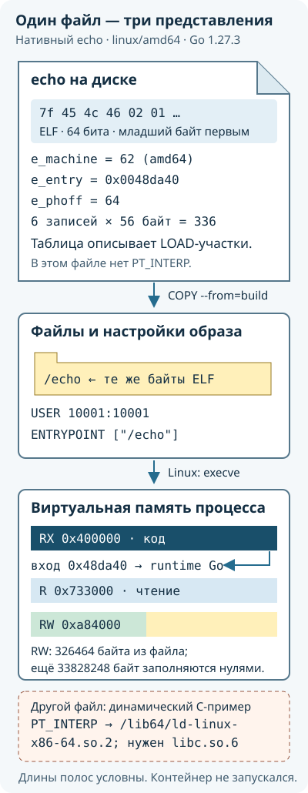

Начнём с Go-программы, которую нужно перенести с ноутбука на другой компьютер. На её примере разберём образ, контейнер и сервер Docker, а затем подготовим учебную машину. · 1050 слов
Пусть наша программа принимает HTTP-запросы на порту 8080: возвращает приветствие и умеет увеличивать счётчик. HTTP — протокол обмена запросами и ответами; порт — число, по которому операционная система направляет сетевое соединение нужному приложению. Исходники такой службы находятся в учебном проекте. Когда мы соберём их, получим исполняемый файл. Запущенный экземпляр программы называется процессом: у него есть память, открытые файлы и выделяемое процессором время.
Одного исполняемого файла иногда действительно достаточно. Статически собранную Go-программу для подходящих Linux и процессора можно скопировать на сервер и запустить без Docker. Однако остаются вопросы: от какого пользователя она работает, какой каталог использует для данных, где получает настройки, кто открывает ей сетевой доступ, как запускается новая версия. Если программа обращается к системным библиотекам или читает сертификаты из файловой системы, понадобятся и эти файлы.
Представим две службы на одном сервере. Обе хотят читать /app/config.json и слушать порт 8080. При обычном запуске они видят общую файловую систему и общий набор сетевых адресов, пока администратор не разделит их другими средствами. Контейнеры позволяют дать процессам разные представления каталогов, процессов и сети. Тогда путь /app/config.json в одной службе может указывать на другие файлы, чем такой же путь во второй. Для доступа снаружи каждой службе можно назначить свой порт сервера, например 18080 и 18081.
Образ: файлы и настройки для будущего запуска
Образ, image, содержит подготовленные файлы и настройки запуска. В нашем случае это Go-бинарник /echo, выбранный пользователь и команда, которую нужно выполнить. Для программы с дополнительными библиотеками в образ включают и библиотеки. Образ собирают заранее, проверяют и передают на другую машину. Когда нужен новый выпуск приложения, собирают новый образ.
Dockerfile — текстовая инструкция сборки. Например, одна стадия сборки получает компилятор Go и создаёт бинарник, а следующая берёт только готовый бинарник. Компилятор после этого не обязан присутствовать в образе для запуска. Сам Dockerfile не содержит все байты будущего результата: он может ссылаться на исходники, базовые образы и скачиваемые зависимости. Поэтому сохранить только Dockerfile недостаточно для автономной работы без сети.
Образы обычно получают из реестра, registry: сервера, который хранит их части и выдаёт по запросу. Команда docker pull получает образ, docker build собирает его. Имя study/echo:lesson1 обозначает репозиторий study/echo и метку версии lesson1. Позже мы увидим, почему метку можно переназначить и как закрепить точные байты образа с помощью контрольного хеша.
Контейнер: один созданный экземпляр
Из одного образа можно создать несколько контейнеров. У каждого будут своё имя, параметры запуска и изменяемые файлы. Два контейнера могут исполнять одинаковый бинарник, но получать разные настройки и хранить разные данные. Сам образ от их работы не переписывается.
Во время запуска Docker подготавливает файловую систему и другие настройки, после чего ядро Linux начинает исполнять программу. Ядро — часть операционной системы, которая управляет памятью, процессами и устройствами и обрабатывает их запросы на чтение, запись и сетевой обмен. Linux-контейнеры на одном Linux-хосте используют его ядро. Внутри обычного контейнера не загружается отдельное ядро Ubuntu или Debian.
Поэтому надпись Ubuntu на образе обычно означает набор пользовательских файлов этой системы, а не отдельную запущенную виртуальную машину. Виртуальная машина исполняет собственную гостевую ОС с ядром; контейнер запускает процессы через уже работающее ядро. На Windows Docker Desktop создаёт Linux-среду с использованием виртуализации, и Linux-контейнеры исполняются в ней.
Контейнер может существовать и без работающего процесса. После создания у него есть сохранённая конфигурация; после остановки она остаётся вместе с изменяемыми файлами. Повторный запуск создаёт новый процесс в том же контейнере. Удаление контейнера удаляет и его собственную изменяемую файловую область.
Почему данные счётчика нужно хранить отдельно
Служба записывает текущее число в файл. Если оставить этот файл только в изменяемой области контейнера, команда удаления контейнера уберёт и число. Новый контейнер из прежнего образа получит исходные файлы образа, а не последние изменения удалённого экземпляра.
В практикуме мы подключим к каталогу /dataименованный том, volume. Это отдельно управляемое Docker место хранения. Программа по-прежнему открывает обычный путь /data/counter, но файл находится в подключённом томе. Контейнер можно заменить новой версией и подключить тот же том. Данные останутся, если том не удалён и новое приложение умеет читать их формат. Копия на том же диске всё ещё может погибнуть вместе с диском, поэтому резервное копирование разберём отдельно.
Что произошло
Образ
Изменяемые файлы контейнера
Отдельный именованный том
Завершился основной процесс
Остаётся
Остаются
Остаётся
Контейнер снова запущен
Используется прежний
Сохранённые файлы доступны
Доступен при прежнем подключении
Контейнер удалён обычным docker rm
Остаётся
Удаляются
Сам по себе не удаляется
Создан другой контейнер из того же образа
Может использоваться тот же
Создаётся новая область
Старые данные видны только при подключении нужного тома
Где выполняется команда Docker
Программа docker в терминале — клиент. Она передаёт запросы серверной программе dockerd, а та управляет образами, контейнерами, сетью и томами. Клиент и сервер могут работать на одной машине или на разных. Если клиент на ноутбуке управляет сервером в виртуальной машине, процесс приложения и его данные находятся в виртуальной машине.
Адрес выбранного сервера сохраняют в контексте Docker, context. В основной последовательности мы создадим контекст study и будем писать docker --context study …. Это помогает видеть, куда уходит команда. Учётные данные и сами контексты принадлежат пользователю клиента: другой пользователь не обязан иметь контекст с тем же именем.
Как устроено чтение и практика
Сначала установим Docker Engine на отдельной Ubuntu 24.04 и проверим связь клиента с сервером. Затем разберём запуск процесса, состав образа и сборку. После этого настроим сеть, права и постоянные данные, соберём Go-службу, опишем её запуск в Compose и научимся наблюдать и восстанавливать её. Compose — инструмент, который читает общий файл настроек нескольких контейнеров и создаёт описанные в нём ресурсы.
В теоретических главах встречаются альтернативные настройки. Их не нужно подряд применять к одному контейнеру. Заключительный практикум связывает действия в одну последовательность: там подготовлены имена, порты, каталоги и порядок переходов между упражнениями. Существующие данные сохраняются; перед повторной настройкой выясняют причину ошибки, а не очищают весь Docker.
Для книги и встроенных моделей достаточно браузера, в том числе без интернета. Настоящие контейнеры требуют установленного Engine. Основной стенд — личная Linux-машина или отдельная виртуальная машина; пакеты и нужные образы для автономного дня готовят заранее. Запуск книги с флэшки не устанавливает Docker на рабочую Windows.
Команды установки и запуска ниже описывают действия читателя на его стенде. При подготовке издания они не исполнялись на его компьютере. Проверки моделей и исходников учебной службы указаны отдельно в списке проверок; они не заменяют запуск контейнеров на конкретной машине.
Подготовим сервер Docker, подключим к нему клиент и создадим контекст study. Все изменения этой главы относятся к отдельной учебной Ubuntu 24.04. · 1765 слов
В этом маршруте используем Docker Engine из официального репозитория Docker. После установки появятся клиент docker, сервер dockerd, компоненты запуска контейнеров и два плагина: Buildx для сборки и Compose для описания приложений. Сервер будет запускаться службой ОС — программой, за запуском и остановкой которой следит менеджер служб systemd.
Сервер в основном примере работает с правами root, системного администратора Linux. Такой режим называют rootful. Режим rootless, где и сервер, и контейнеры работают с полномочиями обычного пользователя, разобран в главе о защите. Пока важно выбрать один способ установки: у разных способов могут быть разные адреса подключения, настройки и каталоги данных.
На личной Ubuntu можно выполнять команды непосредственно; для экспериментов удобна отдельная виртуальная машина. На Windows Docker Desktop потребует установки и Linux-среды, например через WSL 2. Он оставляет программы и данные на компьютере. Если рабочую Windows менять нельзя, пока используйте книгу и её браузерные модели, а реальный Engine подготовьте на личном стенде.
Первый файл сообщает название и выпуск дистрибутива. В основном примере ожидаем Ubuntu 24.04 с кодовым именем noble. uname -m показывает архитектуру, с которой работает ядро; dpkg --print-architecture — имя архитектуры устанавливаемых пакетов. Для обычной 64-битной машины Intel/AMD это обычно x86_64 и amd64 соответственно. Разные названия здесь описывают одну аппаратную семью. На ARM результаты будут другими.
dpkg-query -W спрашивает установленную базу пакетов. Шаблоны заключены в кавычки, чтобы их получил dpkg-query, а не разворачивала оболочка по файлам текущего каталога. Если подходящих пакетов нет, команда может завершиться с ненулевым кодом — это ещё не ошибка установки Docker. Если нашлись docker.io, containerd или другая поставка, сначала выясните, используются ли они. Официальный комплект containerd.io включает containerd и runc и может конфликтовать с отдельно установленными пакетами. На пустой учебной машине конфликтующие пакеты заменяют по официальной инструкции; существующий работающий стенд сначала сохраняют и проверяют.
Добавляем источник, из которого APT будет получать Docker
APT — система установки пакетов Debian и Ubuntu. Она скачивает сведения о доступных пакетах, выбирает зависимости и передаёт их установку пакетному менеджеру. Команда apt update обновляет список доступных версий, а apt install устанавливает выбранные пакеты. Это разные операции.
sudo выполняет команду с административными полномочиями. Пакет ca-certificates даёт сертификаты доверенных центров для проверки HTTPS-соединений. curl загружает файл: -f сообщает об ошибочном HTTP-статусе, -s убирает индикатор передачи, -S оставляет сообщения об ошибках, -L следует перенаправлениям, -o задаёт путь результата. Успешный HTTPS-запрос защищает передачу к указанному сайту; он не делает произвольный найденный в интернете ключ доверенным.
install -d создаёт каталог, а -m 0755 задаёт права: владелец может изменять его, остальные — читать список имён и проходить через каталог. В keyrings хранят ключи для проверки подписей репозиториев. chmod a+r разрешает читать загруженный открытый ключ всем пользователям, в том числе служебному пользователю загрузки APT. Закрытого ключа здесь нет.
Следующий блок создаёт файл описания репозитория. Он рассчитан именно на проверенные выше Ubuntu 24.04 и amd64. На arm64 измените поле архитектуры; для другого выпуска сначала проверьте официальную страницу установки.
sudo tee /etc/apt/sources.list.d/docker.sources > /dev/null <<'EOF'
Types: deb
URIs: https://download.docker.com/linux/ubuntu
Suites: noble
Components: stable
Architectures: amd64
Signed-By: /etc/apt/keyrings/docker.asc
EOF
tee записывает полученный текст в указанный файл. Перенаправление в /dev/null убирает его вторую копию с экрана. Конструкция <<'EOF' передаёт строки до завершающего EOF как стандартный ввод, не подставляя внутрь значения переменных. Повтор этого блока перезапишет файл docker.sources, поэтому существующую настройку сначала читают и сохраняют.
Types: deb выбирает готовые двоичные пакеты; URIs задаёт адрес репозитория; Suites — выпуск Ubuntu; Components — канал stable. Поле Signed-By указывает, каким ключом проверять подписанные метаданные именно этого источника. В метаданных перечислены контрольные хеши пакетов. Так APT проверяет соответствие полученного пакета опубликованной версии, а не доверяет одному расширению .deb.
Устанавливаем пакеты и смотрим результат
sudo apt update
apt-cache policy docker-ce
sudo apt install docker-ce docker-ce-cli containerd.io docker-buildx-plugin docker-compose-plugin
sudo systemctl status docker --no-pager
sudo docker version
sudo docker info
docker buildx version
docker compose version
apt-cache policy показывает доступного кандидата и его источник. Эта последовательность ставит актуальный комплект из выбранного репозитория. Если нужен конкретный выпуск для повторения опыта, сначала выполните apt list --all-versions docker-ce, выберите полную строку версии и укажите её как docker-ce=ВЕРСИЯ и docker-ce-cli=ВЕРСИЯ. Слово ВЕРСИЯ — место для выбранной строки, а не готовое значение. У containerd и плагинов собственные номера; для точного повторения сохраняют версии всего комплекта.
В выводе systemctl status строка Active: active (running) означает, что служба запущена. --no-pager печатает ответ сразу, без отдельной программы просмотра. В docker version есть части Client и Server. Первая описывает запущенный клиент, вторая появляется после успешного ответа сервера. Если видна только первая часть и ошибка подключения, установка клиента прошла, но доступ к серверу ещё не подтверждён.
docker info сообщает имя сервера, архитектуру, используемое хранение и ограничения ресурсов. Сохраните этот вывод и точные версии пакетов в заметках учебного проекта. Если спустя неделю образов «не стало», эти сведения помогут проверить, тот ли сервер выбран и не сменилось ли хранилище. Пароли и токены в общие заметки не записывают.
Почему без sudo может быть Permission denied
На обычной системной установке клиент подключается к /var/run/docker.sock. Это Unix-сокет: именованная точка для обмена сообщениями между программами на одной Linux-машине. Клиент открывает соединение с этим именем и отправляет запрос серверу. Файл сокета не содержит образы и не является журналом команд.
ОС проверяет права подключения к сокету. Поэтому sudo docker info может работать, а docker info от обычного пользователя — давать отказ. Для отдельной личной учебной VM можно осознанно дать своему пользователю членство в группе docker. Доступ к этому сокету позволяет управлять контейнерами rootful-сервера и, например, подключать к ним каталоги хоста. По возможностям это очень широкое доверие, а не только разрешение читать список контейнеров.
id -un
sudo usermod -aG docker "$(id -un)"
id -un печатает имя текущего пользователя. Подстановка $(…) передаёт это имя в usermod. -aG docker добавляет группу к дополнительным группам учётной записи, сохраняя остальные. Выполняйте этот шаг от своего обычного пользователя учебной VM, а не из сеанса root. Затем полностью выйдите из сеанса этой VM и войдите снова: уже запущенная оболочка не обязана получить новые группы. Проверьте id -nG и затем docker info. В id флаг -G перечисляет все группы, -n заменяет их числовые идентификаторы именами. Альтернатива — оставлять административные команды с sudo; тогда у root будут отдельные клиентские настройки и контексты.
Создаём контекст study один раз
Дальнейшие команды книги предполагают, что обычный пользователь уже имеет согласованный доступ к серверу. Для локального Engine сохраним адрес под именем study:
docker context ls
docker context create study --docker host=unix:///var/run/docker.sock
docker --context study version
docker --context study info
Если study уже существует, сначала посмотрите docker context inspect study и проверьте назначение. Не удаляйте существующий контекст, чтобы механически повторить создание. --docker host=… задаёт способ связи с сервером. В unix:///var/run/docker.sock схема unix выбирает локальный сокет, а оставшаяся часть — его абсолютный путь. --context study явно выбирает эту сохранённую настройку для одной команды и не переключает все остальные программы.
Для удалённой личной VM вместо локального адреса используют ssh://пользователь@адрес, предварительно проверив SSH-доступ и ключ узла. Это альтернативное назначение контекста, а не второй шаг после локального. Каталоги томов тогда находятся в удалённой VM. На рабочем компьютере ради этого не нужно открывать незащищённый управляющий порт 2375.
Первый образ и первый процесс
docker --context study pull hello-world
docker --context study run --name study-hello --pull=never hello-world
docker --context study ps -a --filter name=study-hello
Для pull нужен интернет или доступный подготовленный реестр. Образ hello-world содержит короткую программу: она выводит сообщение и завершается. --name назначает имя контейнеру; --pull=never требует уже имеющийся образ. В ps -a параметр -a включает остановленные контейнеры, поэтому завершившийся study-hello остаётся в списке. Это ожидаемый результат, а не сломанный сервер. Повторный запуск с тем же --name не создаст новый объект: имя уже занято. Разницу между созданием и запуском разберём дальше, сохранив этот контейнер.
Подготовка к работе без интернета
Пакеты Docker и образы приложений — разные наборы файлов. В пакете Engine нет всех будущих образов. Для автономной установки собирают комплект пакетов с зависимостями под тот же выпуск Ubuntu и архитектуру, а нужные образы заранее получают и сохраняют через docker image save. Формат переноса образов разобран в главе доставки.
Один apt download docker-ce не скачает всё необходимое: зависимость может считаться уже установленной на подготовительном компьютере и отсутствовать на целевом. Надёжнее готовить набор в отдельной VM с тем же исходным состоянием и проверять установку во второй VM с отключённой сетью. Сохраните подписанные метаданные репозитория, пакеты, версии и контрольные суммы. Комплект считается подготовленным после пробной установки и запуска, а не после копирования нескольких deb-файлов на накопитель.
Ограничиваем размер журналов до длительной работы
Служба Docker читает системную настройку из /etc/docker/daemon.json. После обычной установки этого файла может ещё не быть. Все следующие sudo и systemctl выполняются на Linux-машине, где работает Engine: выбор удалённого контекста Docker не перенаправляет обычные команды оболочки на сервер.
Сначала прочитайте существующий файл, если он есть. Для создания или редактирования удобно открыть его через sudoedit — редактор, запущенный с возможностью сохранить результат в системный каталог:
Для нового файла подходит весь JSON ниже. Если файл уже содержит настройки, добавьте поля в его существующий объект, сохранив остальные ключи. Не дописывайте рядом второй самостоятельный объект: это будет некорректный JSON. Если log-driver или log-opts уже заданы, выясните назначение прежних значений перед заменой.
Драйвер local хранит вывод контейнеров с ротацией. Здесь max-size задаёт размер одной части журнала, max-file — число сохраняемых частей. В этом файле значения log-opts являются строками, поэтому число 3 заключено в кавычки. Новые значения по умолчанию будут использоваться новыми контейнерами; существующие контейнеры сохранят свои настройки.
Сохранение файла ещё не применило настройку. Сначала проверьте её и посмотрите работающие контейнеры. Команда проверки не запускает второй сервер:
sudo dockerd --validate --config-file=/etc/docker/daemon.json
docker --context study ps
При ошибке проверки исправьте файл до перезапуска. Он может быть синтаксически корректен, но конфликтовать с аргументом запуска службы; для существующей установки проверяют и эти аргументы. Перезапуск способен остановить работающие контейнеры. В нашем первом упражнении hello-world уже завершился; на продолжаемом стенде сначала выберите время остановки и сохраните нужную работу.
sudo systemctl restart docker
sudo systemctl status docker --no-pager
docker --context study info --format '{{.LoggingDriver}}'
docker --context study inspect --format \
'{{json .HostConfig.LogConfig}}' study-hello
После успешного перезапуска ожидаем local в выводе info. Это новый драйвер по умолчанию. Inspect показывает настройку конкретного ранее созданного hello-world: она могла остаться прежней, потому что настройка сервера не переписывает существующие контейнеры. Чтобы выбрать другой драйвер уже созданному приложению, его пересоздают с сохранением нужных данных и параметров. Сейчас удалять учебный контейнер ради этого не требуется.
Если служба не стартует, sudo journalctl -u docker -b --no-pager выводит её сообщения с момента текущей загрузки ОС. Ошибка JSON, конфликт настройки с аргументами службы и отсутствие свободного места требуют разных исправлений.
Клиент передаёт запрос серверу, сервер создаёт контейнер, а средства запуска подготавливают процесс. Проследим эти действия и научимся отличать сохранённый контейнер от работающего приложения. · 1888 слов
В прошлой главе мы создали контекст study. Он хранится в настройках того пользователя, который выполнял docker context create. Проверим его, прежде чем менять что-либо на сервере:
docker context ls
docker context inspect study
docker --context study version
docker --context study info
context ls перечисляет сохранённые подключения; звёздочка отмечает выбранное по умолчанию. context inspect study показывает настройки указанного подключения, включая адрес сервера. --context study перед подкомандой выбирает этот адрес для одного вызова. При локальном адресе unix запрос идёт в сокет на машине клиента; при адресе ssh — к Engine удалённой машины.
Например, клиент работает на ноутбуке, а Engine — в VM. Запрос docker --context study ps возвращает контейнеры VM. Если создать том, его файлы появятся на стороне VM. Если контейнер слушает опубликованный порт на 127.0.0.1 этого сервера, это loopback-адрес VM; браузер на ноутбуке не получит к нему доступ по собственному 127.0.0.1 без дополнительного способа подключения. Тот же принцип относится к bind mount — подключению файла или каталога сервера к выбранному пути внутри контейнера: исходный каталог ищется на машине сервера.
Переменные окружения DOCKER_HOST и DOCKER_CONTEXT могут менять назначение клиента. Поэтому при непонятном результате проверьте их вместе с контекстом. Выполнение той же команды через sudo тоже меняет пользователя клиента и может выбрать другой набор настроек. Версия Client в выводе docker version описывает установленную программу; часть Server приходит только после ответа сервера.
Что передаётся через сокет
Docker Engine предоставляет программный интерфейс — API. Клиент формирует HTTP-сообщения с операцией, адресом ресурса и, когда нужно, JSON-телом. HTTP здесь может передаваться через локальный Unix-сокет: TCP-соединение и порт для него не требуются. Сервер принимает сообщение и отвечает данными или ошибкой. Это обычный обмен между программами; клиент не получает полномочия управлять ядром только потому, что его исполняемый файл называется docker.
На локальном стенде из предыдущей главы можно получить сведения о сервере без клиента Docker:
--unix-socket направляет соединение в указанный сокет вместо TCP. localhost остаётся частью HTTP-адреса запроса, но curl не подключается к порту 80 этого имени. Ответ имеет формат JSON с версией и возможностями сервера. Это чтение сведений, без создания контейнеров. Пример относится именно к локальному Engine; он не использует контекст study и не перенаправится сам на его SSH-сервер.
Операции создания и запуска имеют отдельные запросы. Для создания контейнера API принимает, например, имя образа в JSON-поле Image, команду в Cmd, переменные в Env и настройки хоста в HostConfig. Затем отдельная операция запуска обращается к идентификатору созданного контейнера. Конкретная версия API включается в путь запроса. Клиент и сервер согласуют поддерживаемую версию; принудительная переменная DOCKER_API_VERSION отключает это согласование и может сделать доступными только старые возможности.
Создать контейнер и запустить программу — два действия
После прошлого упражнения контейнер study-hello завершился, но сохранился. Команда docker --context study start --attach study-hello запускает его снова и подключает вывод к текущему терминалу. Новый образ не собирается, новый контейнер не создаётся. Короткая программа снова печатает сообщение и заканчивается.
Чтобы увидеть остановку между созданием и запуском, можно один раз создать второй учебный объект. Образ hello-world уже должен быть получен, а имя study-hello-created — свободно. Если такой контейнер остался от прежнего чтения, сначала исследуйте его через inspect и продолжайте с ним.
docker --context study create --name study-hello-created --pull=never hello-world
docker --context study inspect --format '{{.State.Status}} {{.State.Pid}}' study-hello-created
docker --context study start --attach study-hello-created
docker --context study inspect --format '{{.State.Status}} {{.State.ExitCode}}' study-hello-created
После create ожидаем created 0: конфигурация сохранена, основного процесса ещё нет. start --attach запускает его и показывает вывод. После завершения hello-world ожидаем exited 0: первое значение — состояние объекта, второе — код завершившейся программы. Число 0 здесь имеет разный смысл в разных полях. Шаблон --format выбирает поля из ответа inspect; фигурные скобки обрабатывает клиент Docker, а не Bash.
docker run обычно объединяет создание и запуск. Если образа нет локально и политика загрузки это разрешает, Docker сначала получает его из реестра. Параметр --pull=never запрещает такое получение: отсутствие образа становится ошибкой до запуска. При стандартной политике наличие локальной метки не означает автоматическую проверку самого свежего варианта в реестре.
Затем сервер создаёт идентификатор контейнера, сохраняет команду и настройки, подготавливает изменяемую файловую область. При запуске подключаются предусмотренные каталоги и сеть, устанавливаются ограничения, создаётся процесс. Ошибка на одном из шагов может оставить объект в списке, хотя программа ни разу не дошла до своей функции main. Поэтому строка в docker ps -a и вывод идентификатора ещё не отвечают на вопрос, работает ли служба.
Кто выполняет каждый шаг
dockerd принимает запросы Docker и управляет их результатами: именами образов, объектами контейнеров, сетью, томами и настройками запуска. Ему не нужно самостоятельно реализовывать каждую операцию создания Linux-процесса. Для этого в обычной поставке используются containerd и низкоуровневое средство запуска, чаще runc.
containerd обслуживает контейнерные задачи: создаёт их через выбранный механизм запуска, получает события завершения и позволяет управлять исполнением. В конфигурации с containerd image store он также управляет содержимым образов и снимками файловой системы. Снимок здесь означает подготовленное файловое состояние для будущего корня процесса; это не сохранённая оперативная память работающего приложения.
runc получает описание запуска по OCI Runtime Specification. OCI, Open Container Initiative, разрабатывает открытые форматы для совместимой работы контейнерных инструментов. Описание запуска задаёт исполняемый файл, аргументы, пользователя, корневую файловую систему, монтирования и параметры изоляции. В типичном Linux-запуске runc вызывает средства ядра для подготовки процесса, присоединяет его к нужным группам учёта ресурсов и запускает указанную программу.
Пространства имён, namespaces, позволяют процессу видеть собственные наборы процессов, сетевых интерфейсов или монтирований. Контрольные группы, cgroups, учитывают и ограничивают ресурсы группы процессов. Это разные механизмы: отдельный список видимых процессов ещё не ограничивает память. Их подробно разберём в главе об изоляции. Сейчас важно, что эти возможности предоставляет ядро Linux, а runc применяет запрошенную конфигурацию.
Низкоуровневая команда runc не обязана оставаться работающей всё время жизни приложения. Наблюдать за задачей помогает shim — небольшой служебный процесс, который связывает её с containerd, обслуживает потоки ввода-вывода и сообщает о завершении. Для обычного runtime v2 это часто процесс с именем наподобие containerd-shim-runc-v2. Имена и количество процессов зависят от реализации; схема показывает роли, а не обязательный буквальный вывод ps.
Эти компоненты нужны потому, что управление контейнерами и исполнение программы имеют разные обязанности. Но из наличия shim нельзя заключить, что любое обновление Docker пройдёт без остановки. Docker при штатной остановке демона может завершать контейнеры; режим live restore меняет предусмотренное поведение и имеет свои ограничения. При обновлении проверяют именно настройки и документацию установленного Engine.
Разобрать по шагам
От команды run до ответа Go-службы
Переключайте шаги: клиент выбирает сервер, Docker создаёт контейнер, ядро запускает программу, затем служба отвечает на HTTP-запрос.
Условия этого примера
Условный rootful Linux Engine; образ уже локально получен и проверен, сеть исправна. Схема показывает логические операции, а не точную последовательность каждого системного вызова. Номер PID условный.
Сейчас действует:
Выберите часть структуры — откроется её смысл
Что изменилось на этом шаге
Все шаги текстом · для чтения и печати
1. Выбран сервер
CLI использует context study; файлы приложения будут находиться в VM, хотя команду набрали на ноутбуке.
Действует: Docker CLI.
Клиент: study выбран; Dockerd: API доступен; Образ: локальный; Объект: нет; Runtime: нет; Go: нет
Назначение: локальное приглашение → сервер study. Контекст определяет место исполнения.
2. Найден образ
Политика pull=never требует локальный образ. При отсутствии образа запуск остановился бы здесь.
Действует: Dockerd.
Клиент: ждёт; Dockerd: проверяет вход; Образ: ID I17; Объект: нет; Runtime: нет; Go: нет
Образ: tag lesson1 → конкретный I17. Tag и сохранённый объект различаются.
3. Создан объект
Сохранены команда, порты, mounts и ограничения. Running ещё не наступил.
Действует: Dockerd.
Клиент: ждёт; Dockerd: объект C21; Образ: I17; Объект: created; Runtime: не запущен; Go: нет
Контейнер: отсутствовал → C21 created. Наличие записи не доказывает исполнение.
4. Подготовлена среда
Runtime применяет предусмотренные пространства, файловую систему и контроллеры. Ошибка mount возможна до main.
Действует: Runtime.
Клиент: ждёт; Dockerd: start; Образ: I17; Объект: C21; Runtime: подготовка; Go: ещё нет
Среда процесса: описание OCI → готовая среда. Правильная конфигурация и доступность данных обязательны.
5. Исполняется процесс
Go начал работу как основной процесс. ID в ответе управления пока не говорит об успешном HTTP.
Результат запроса: выдан ID → HTTP ok. Конечный критерий связан с функцией приложения.
Потоки, терминал и фон
У процесса есть три стандартных потока: ввод, вывод и сообщения об ошибках. Программа обращается к ним через файловые дескрипторы 0, 1 и 2 — небольшие номера открытых объектов. Docker может связать эти потоки с терминалом клиента или собирать вывод через драйвер журналов.
-i сохраняет стандартный ввод открытым, даже если клиент к нему не подключён. -t создаёт псевдотерминал: программный аналог терминального устройства, благодаря которому интерактивная оболочка видит терминал, а не простой канал байтов. Сочетание -it обычно удобно для ручной работы с оболочкой. Для передачи двоичных данных и автоматического разбора вывода псевдотерминал может мешать: он меняет обработку символов и делает разделение stdout и stderr иным.
-d отсоединяет клиент от работающего контейнера. Он не заставляет само приложение уходить в фоновый режим. Для долгоживущей службы основной процесс должен продолжать работать. Если выполнить оболочку, которая запустит службу в фоне и сразу завершится, Docker увидит окончание основного процесса контейнера. Для нашей Go-службы проще напрямую выполнить бинарник /echo.
docker attach подключает клиент к потокам основного процесса. docker exec запускает дополнительный процесс в уже работающем контейнере. Например, exec с командой sh потребует файл оболочки внутри образа. В минимальном образе нашей Go-службы оболочки может не быть — это ожидаемое устройство образа, а не поломка Docker. Изменения файлов, сделанные через exec, не переписывают Dockerfile и сами не попадают в следующий образ.
Что именно означает running
Состояние created означает, что контейнер создан; running — что его основная задача работает; exited — что она закончилась; restarting — что применяется перезапуск. У работающей программы всё ещё может не открываться порт или не читаться нужный файл. Например, Go-процесс уже существует, но ещё загружает настройки. Либо он отвечает на /health, а запись счётчика не проходит из-за прав каталога.
Проверка работоспособности, healthcheck, запускает указанную для контейнера проверочную команду и даёт отдельный статус: starting, healthy или unhealthy. Смысл статуса зависит от того, что проверяет эта команда. Если она делает только GET /health, состояние диска она не проверяет. Обычный Docker Engine не обязан перезапускать контейнер только потому, что healthcheck вернул unhealthy.
docker --context study inspect --format '{{json .State}}' study-hello
docker --context study logs --tail 50 --timestamps study-hello
docker --context study wait study-hello
.State содержит состояние процесса, код завершения, времена запуска и остановки и сведения об ошибке. Функция json в шаблоне сохраняет эти поля в структурированном виде. logs --tail 50 берёт последние 50 строк доступного журнала, --timestamps добавляет отметки времени. wait ждёт завершения контейнера и печатает его код; для уже завершённого hello-world ждать почти нечего.
Коды 125, 126 и 127 у docker run относятся соответственно к ошибке Docker при запуске, невозможности выполнить выбранную команду и отсутствию команды. Другие коды обычно получены от приложения. Значение 137 часто соответствует завершению сигналом SIGKILL: 128 + 9. Однако SIGKILL мог прийти как от механизма защиты при нехватке памяти, так и после принудительной остановки. Причину уточняют по полю OOMKilled, событиям группы ресурсов и журналу ядра.
Для долгоживущей службы последняя проверка — её собственная операция. После сборки нашего образа мы проверим ответ HTTP, затем запись счётчика и чтение после повторного запуска. Это последовательные вопросы: создан ли контейнер, исполняется ли процесс, принимает ли он соединения, выполняет ли нужную работу. Ответ inspect на первый вопрос не заменяет остальные.
Образ состоит из связанных объектов: описания, настроек и файловых изменений. Соберём маленький пример с настоящими архивами и хешами, затем проследим, как из него получается дерево файлов контейнера. · 2215 слов
В ссылке registry.example.invalid/team/echo:lesson1 часть registry.example.invalid задаёт адрес реестра, team/echo — репозиторий внутри него, lesson1 — метку, или tag. Это учебный адрес; он не предназначен для загрузки. Реестр хранит объекты образов и поддерживает соответствие между метками и объектами. Владелец репозитория может переназначить lesson1 на новую сборку.
Поэтому два сервера, которые получили один tag в разное время, могут иметь разные образы. Для точной ссылки используют digest — криптографический хеш байтов конкретного объекта. Запись @sha256:… означает, что после SHA-256 должны идти 64 шестнадцатеричных знака вычисленного значения. При проверке загрузки Docker сравнивает полученные байты с ожидаемым хешем. Правильный хеш говорит, что байты совпали; доверие автору требует отдельно установить, откуда взята ожидаемая ссылка.
Почему для одного имени может быть несколько платформ
Один реестр может выдавать разные варианты программы для linux/amd64 и linux/arm64. Первая часть платформы указывает ОС, вторая — семейство команд процессора. Когда варианты объединены, ссылка ведёт на индекс образов, image index. В нём перечислены ссылки на манифесты отдельных платформ. Docker выбирает подходящий вариант и затем получает его файлы.
Манифест, manifest, — JSON-документ, который ссылается на конфигурацию и упорядоченный список слоёв одной платформы. Каждый из этих объектов можно получить и проверить отдельно. Индекс, манифест и конфигурация — разные последовательности байтов, поэтому у них разные хеши. Закрепить хеш индекса и закрепить хеш одного linux/amd64-манифеста — два разных способа выбрать выпуск.
Индекс не переводит машинные команды. Бинарник для arm64 не начинает исполняться на amd64 только из-за наличия обеих записей. Для выполнения чужого набора команд потребуются отдельно настроенные средства эмуляции. А Linux-образ на Windows с Docker Desktop исполняется в Linux-среде Desktop.
Два слоя, которые можно разобрать без Docker
Слой — архив изменения файловой системы относительно предыдущего результата. В нашем примере первый слой добавляет два файла: /app/config.txt со строкой A и /app/old.txt со строкой B. Второй заменяет A на C, добавляет /app/new.txt со строкой D и убирает old из видимого дерева.
Архив
Имя записи внутри tar
Байты содержимого
Назначение
Слой 1
app/config.txt
41 0a, то есть A и перевод строки
Создать исходную настройку
Слой 1
app/old.txt
42 0a
Создать старый файл
Слой 2
app/config.txt
43 0a
Заменить настройку
Слой 2
app/new.txt
44 0a
Добавить новый файл
Слой 2
app/.wh.old.txt
Пустое содержимое, 0 байт
Скрыть old из нижнего слоя
tar хранит не только содержимое, но и имена, типы, владельцев и права записей. В примере имена внутри архива относительные, без начального слеша; при применении они рассматриваются относительно корня образа. Все обычные файлы имеют владельца UID 0, группу GID 0, права 0644 и время изменения 0. UID и GID — числовые идентификаторы пользователя и группы; имена учётных записей для такого указания не нужны.
Запись .wh.old.txt называется whiteout: она означает, что нижний old.txt должен исчезнуть из результата. Сам whiteout не становится обычным файлом приложения. Удаление применяется к предыдущим слоям; добавленный в том же новом слое файл с тем же именем может снова сделать путь видимым. Для скрытия всех нижних элементов каталога OCI определяет специальный маркер .wh..wh..opq. Эти правила относятся к архивам OCI; рабочая файловая система может представлять удаления иначе.
После применения обоих слоёв процесс увидел бы config=C и new=D, а открытие old дало бы отсутствие файла. Однако исходный архив всё ещё содержит B. Если в нижнем слое был пароль, удаление его вторым слоем не убирает пароль из скачанного образа. Поэтому секрет нужно не помещать в публикуемые слои, а не удалять следующей инструкцией.
Дополнительный опыт требует Python 3; для чтения результата запуск не обязателен. Для самостоятельного разбора откройте каталог labs тома Docker и выполните python3 image_objects.py. Этот исходник создаёт оба tar-потока и gzip-объекта в оперативной памяти, вычисляет хеши и печатает полный результат. Он не подключается к Docker, ничего не скачивает и не записывает файлы на диск. В учебных слоях нет исполняемого файла, поэтому пример предназначен для изучения формата, а не для docker run.
Сжатый digest и diff ID отвечают на разные вопросы
Для передачи каждый tar-поток нашего примера сжат gzip. Передаваемый двоичный объект часто называют blob. В манифест записан хеш именно gzip-байтов. В конфигурацию записан diff ID — хеш несжатого tar-потока. Получатель может проверить сначала полученный blob, а после распаковки — исходный поток слоя.
В выполненном примере несжатый первый архив занимает 10 240 байт, gzip-объект — 133 байта; второй — 10 240 и 154 байта. Размер tar включает заголовки, выравнивание записей и завершающее заполнение. Это не 10 240 байт полезного текста: в первом слое его только четыре байта. Значения gzip зависят от способа сжатия; программа печатает фактически полученные размеры.
Если сжать тот же tar другим уровнем gzip, сжатые байты и их digest могут измениться, а diff ID останется прежним. Даже порядок ключей или пробелы JSON меняют хеш JSON-объекта, хотя после разбора поля имеют тот же смысл. Проверяется последовательность байтов, а не человеческое впечатление об одинаковых файлах.
Конфигурация связывает слои с параметрами программы
Вот полная конфигурация маленького примера, показанная с отступами:
architecture и os задают платформу. rootfs.type сообщает, что корневая файловая система описана слоями; diff_ids перечисляет их хеши в порядке применения. config здесь пуст, потому что мы изучаем файлы, не задавая команду запуска. В рабочем образе там могут быть Entrypoint, Cmd, Env, WorkingDir и User.
Например, Entrypoint может задавать бинарник /echo, Cmd — аргументы по умолчанию, WorkingDir — текущий каталог процесса, User — пользователя запуска. Эти настройки можно переопределять при создании контейнера. Само их наличие в образе ещё не означает, что процесс уже запущен. ENV в Dockerfile задаёт доступные будущему процессу переменные, поэтому пароль, записанный так, доступен читателю образа и его конфигурации. EXPOSE сообщает о предполагаемом порте приложения; правило доступа с порта сервера создаётся отдельно параметром публикации.
schemaVersion: 2 — значение поля формата, а не номер поколения Docker. mediaType сообщает, как разобрать объект. Для конфигурации это JSON определённого типа, для наших слоёв — tar, сжатый gzip. В каждом описании объекта digest позволяет проверить байты, а size указывает их точное число. Поле layers — массив: переставить его элементы означает изменить порядок файловых изменений.
Конфигурация в этом опыте сериализована без пробелов и занимает 237 байт. Манифест таким же способом занимает 555 байт; его хеш: sha256:f72dfc7d3ed4b54147cc0d8015ca4b88fab353dc621ef8df489dcf19b39c179b. Показанные выше отступы добавлены только для чтения, поэтому хешировать скопированный красиво оформленный блок и ждать тот же результат нельзя. Программа выводит также точные строки config_bytes и manifest_bytes, по которым вычислены эти значения. При изменении сжатых объектов или настроек изменится и манифест.
Теперь можно восстановить смысл pull: клиент запрашивает ссылку, сервер реестра возвращает индекс или манифест; выбирается платформа; проверяются описания нужных объектов; недостающие конфигурация и слои скачиваются и сверяются с ожидаемыми хешами. Уже имеющиеся подходящие объекты можно использовать повторно. После получения слои подготавливаются для файловой системы. Успешная передача всех этих данных ещё не создаёт работающий процесс.
Как образ становится файлами контейнера
Постоянно распаковывать полную независимую копию образа для каждого контейнера было бы дорого. В распространённом варианте Linux используется OverlayFS: она показывает несколько нижних каталогов и один верхний как одно дерево. Нижние каталоги содержат подготовленные файлы образа и не изменяются этим контейнером. Верхний каталог принадлежит конкретному контейнеру и принимает его изменения.
При чтении неизменённого config приложение получает содержимое нижнего файла. При первой модификации может понадобиться copy-up: подготовка его версии в верхнем каталоге. После этого приложение читает и изменяет верхнюю версию. Другой контейнер, созданный из того же образа, продолжает видеть нижнюю. Запись одного байта поэтому может потребовать значительно больше работы, чем один байт ввода-вывода; точное поведение зависит от файловой системы и включённых возможностей.
Слои OCI описывают переносимые изменения, а OverlayFS обслуживает текущее дерево на Linux. Это два связанных, но разных представления. Не следует ожидать, что внутренние рабочие файлы OverlayFS буквально совпадут с именами tar-записей OCI, или вручную редактировать их, чтобы исправить контейнер.
Подключённый том или каталог хоста может перекрыть путь в этом дереве. Если поверх /app смонтировать пустой каталог хоста, прежние файлы образа перестанут быть видны по этому пути. Они не обязаны быть удалены: поиск пути дошёл до монтирования и теперь читает другой источник. Такой эффект объясняет ситуацию «в образе файл есть, а в контейнере его нет».
Следующая схема продолжает именно наш образ из двух слоёв: исходно видны config=C и new=D. Приложение запишет E в собственную область контейнера и удалит new. Повторный запуск того же контейнера сохранит эти изменения; другой контейнер из прежнего образа снова увидит C и D. Файл old при этом не вернётся: он скрыт уже в самом образе.
Разобрать по шагам
Файлы образа и изменения контейнера
Продолжение примера: оба слоя образа уже применены, видны config=C и new=D. Теперь программа меняет свои файлы.
Условия этого примера
Образ содержит оба OCI-слоя предыдущего опыта. Old отсутствует в готовом образе и не возвращается при пересоздании. Верхняя область принадлежит контейнеру. Удаление показано логически, без отождествления tar-whiteout и внутреннего формата OverlayFS. Том не подключён.
Сейчас действует:
Выберите часть структуры — откроется её смысл
Что изменилось на этом шаге
Все шаги текстом · для чтения и печати
1. Новый контейнер
Собственных изменений ещё нет. Процесс читает C из config и D из new; old уже удалён вторым слоем образа.
Действует: Файловая система.
Файлы образа: config=C; new=D; old нет; Область контейнера: пусто; Видимое дерево: config=C; new=D; Процесс: читает C; Образ: оба слоя неизменны
config: файл образа C → видимый C. Чтение не требует отдельной полной копии образа.
2. Приложение пишет E в config
Для записи подготавливается верхняя версия файла. Образ по-прежнему содержит C.
Действует: Процесс.
Файлы образа: config=C; new=D; Область контейнера: config=E; Видимое дерево: config=E; new=D; Процесс: читает E; Образ: прежние два слоя
config: видимый C → видимый E. Изменение относится только к этому контейнеру.
3. Приложение удаляет new
Верхняя область скрывает new из дерева контейнера. D остаётся во втором слое образа.
Действует: Файловая система.
Файлы образа: config=C; new=D; Область контейнера: config=E; new скрыт; Видимое дерево: config=E; new нет; Процесс: нет new; Образ: D сохраняется в слое2
new: виден D → не виден. Удаление из контейнера не переписывает образ.
4. Остановка и запуск того же контейнера
Новый процесс получает сохранённую верхнюю область: config=E, new по-прежнему скрыт.
Действует: Engine.
Файлы образа: config=C; new=D; Область контейнера: config=E; new скрыт; Видимое дерево: config=E; new нет; Процесс: новый PID; Образ: не изменён
Контейнер: процесс завершён → тот же контейнер запущен. Остановка процесса не удаляет собственные файлы контейнера.
5. Новый контейнер из прежнего образа
У него пустая собственная область: config снова C, new снова D. Old остаётся отсутствующим, как задано вторым слоем образа.
Действует: Engine.
Файлы образа: config=C; new=D; old нет; Область контейнера: новая, пустая; Видимое дерево: config=C; new=D; old нет; Процесс: новый контейнер; Образ: те же два слоя
Область записи: сохранённые E и скрытие new → новая пустая область. Чтобы сохранить нужные данные при замене контейнера, их размещают в отдельно подключённом томе.
Где Docker хранит подготовленные объекты
overlay2 — название классического драйвера хранения Docker, использующего OverlayFS. У containerd есть интерфейс snapshotter для подготовки файловых снимков; его overlayfs-реализация тоже использует OverlayFS, но организует управление иначе. Поэтому overlay2 и overlayfs snapshotter — не два написания одного параметра.
По документации Engine 29 и новее свежая установка использует containerd image store; обновлённая с прежнего выпуска может продолжать использовать классический драйвер. Проверяйте свой docker info. При containerd image store могут сохраняться и сжатые передаваемые объекты, и распакованные файловые снимки. Данные containerd размещаются отдельно от Docker data-root; изменение одного пути не переносит автоматически всё хранилище.
Переключение способа хранения может сделать прежние объекты невидимыми для текущей настройки, сохранив их на диске. Поэтому при пустом списке образов после изменения конфигурации сначала проверяют выбранный сервер и способ хранения. В документации отдельно указано ограничение containerd image store для режима userns-remap — отображения идентификаторов в rootful Engine. Его не следует переносить на любой rootless-запуск; совместимость проверяют для конкретного сочетания режимов.
Что можно узнать из inspect и df
После сборки нашей службы в главе о Go можно исследовать уже существующий образ:
docker --context study image inspect study/echo:lesson1
docker --context study image inspect --format '{{json .Config}}' study/echo:lesson1
docker --context study image inspect --format '{{json .RootFS.Layers}}' study/echo:lesson1
docker --context study image history --no-trunc study/echo:lesson1
docker --context study system df -v
.Config показывает настройки запуска, .RootFS.Layers — diff ID слоёв. Их нельзя без преобразований сравнивать с digest сжатых blobs из манифеста. Локальный идентификатор обычного образа Docker связан с конфигурационным объектом; digest манифеста или индекса относится к другому объекту. История сборки показывает записи о шагах, а --no-trunc убирает сокращение их текста. Некоторые инструкции меняют только настройки, поэтому число строк истории не равно обязательно числу файловых слоёв.
docker system df -v показывает учёт пространства Docker подробнее, чем обычный список образов. Допустим, три образа используют общую базу 80 МиБ и добавляют по 12 МиБ. Сумма их полных размеров будет 3 × 92 = 276 МиБ, а уникальные распакованные слои займут 80 + 3 × 12 = 116 МиБ без учёта накладных расходов. Если сложить полные размеры, общая база окажется посчитана трижды.
Для оценки диска к слоям добавляют сжатые объекты, изменяемые файлы контейнеров, журналы, тома и кэш сборки. Отдельно проверяют свободные inode — записи файловой системы, необходимые для хранения файлов и каталогов. Много мелких файлов может исчерпать их раньше свободных байтов. Метка reclaimable в учёте Docker показывает потенциально освобождаемые объекты; точный прирост свободного места зависит от того, какие объекты действительно удалены и что ещё на них ссылается.
Сборка образа: Dockerfile, BuildKit и повторное использование результатов
В предыдущей главе мы разобрали готовый образ. Теперь получим такой образ из исходников Go-службы: проследим, какие файлы читает сборщик, где выполняется компилятор и почему следующий запуск может закончиться быстрее. · 2753 слов
В книге есть небольшой HTTP-сервер: его исходник принимает запросы и, при настроенном каталоге данных, сохраняет счётчик. Сейчас нам нужен образ с исполняемым файлом /echo. Для компиляции потребуются Go и исходники; при обычном запуске готового сервера компилятор уже не нужен. Поэтому используем две стадии сборки: сначала среду с Go, затем отдельную файловую систему с полученным бинарником.
Сборкой управляет BuildKit — программа, которая получает описание операций, исполняет нужные операции и собирает результат. В Dockerfile мы пишем относительно удобные инструкции FROM, COPY, RUN. Специальный обработчик Dockerfile, frontend, переводит их во внутреннее представление BuildKit — LLB, Low-Level Build. Его можно представить как граф: вершины — операции, стрелки — зависимости результатов. Компиляция зависит от получения исходников, а копирование бинарника в последнюю стадию — от завершения компиляции. Независимые ветви могут выполняться параллельно; зависимые должны дождаться своих входов. Устройство BuildKit.
Buildx — расширение клиента Docker, через которое мы обращаемся к BuildKit. Builder, экземпляр сборщика, имеет собственное место исполнения и кэш. В основном примере выберем default: он связан с Engine указанного контекста study. Его драйвер docker использует BuildKit внутри Engine. Драйвер docker-container создаёт отдельный контейнер BuildKit; remote обращается к отдельно запущенному серверу. Поэтому перед сборкой нужно знать не только адрес Engine, но и выбранный builder. Явный --builder default в нашем примере исключает случайный выбор другого сборщика из прежних опытов или переменной BUILDX_BUILDER. Выбор сборщика.
Какие файлы получит сборщик
Откройте каталог тома docker в терминале. Здесь должен существовать подкаталог labs/echo. Далее пути в командах заданы именно относительно каталога тома; браузер сам в него терминал не переводит. Для сборки нужны эти файлы:
Контекст сборки, build context, — набор файлов, которые мы предоставляем сборщику. Последний аргумент labs/echo выбирает его корень. Поэтому COPY go.mod ./ прочитает labs/echo/go.mod, а не файл из каталога тома. Сборка не получает весь домашний каталог только потому, что клиент запущен от вашего пользователя. Вариант -f labs/echo/Dockerfile . выбрал бы тот же Dockerfile, но другой корень контекста: тогда источник go.mod искался бы уже в текущем каталоге. Путь к Dockerfile и корень входных файлов — два отдельных параметра. Контексты и COPY.
Рядом с Dockerfile находится .dockerignore. В нашем проекте он исключает .git, out, backups, .env и secrets. Например, локальный архив в backups не нужен для компиляции и не должен передаваться удалённому сборщику. Секреты тоже не следует включать во входы с расчётом «последняя стадия их не копирует». Если они доступны выполняемой при сборке команде, та уже может прочитать их. Содержимое ignore-файла выбирают под конкретный проект: сборка, которая намеренно извлекает версию из Git, потребует отдельного решения для исключённого .git.
Подготовить компилятор и собрать службу
У приложенного Dockerfile нет скрытого базового образа по умолчанию. Переменная GO_IMAGE должна содержать выбранную вами ссылку на официальный образ Go. На официальной странице golang выберите поддерживаемую версию со всеми нужными исправлениями, совместимую с директивой go 1.25.0 нашего go.mod, и платформой сервера. Сохраните точную ссылку, предпочтительно golang@sha256:… с настоящим полным digest. Многоточие здесь обозначает место для вашего значения, а не часть команды.
Следующие две строки просят ввести эту ссылку и сохраняют её в окружении текущей оболочки. read -r читает строку без обработки обратных косых черт, -p выводит приглашение, export делает переменную доступной дочерним программам. Если вы уже подготовили GO_IMAGE, ввод повторять не нужно.
read -r -p 'Ссылка на выбранный официальный образ Go: ' GO_IMAGE
export GO_IMAGE
Сборочный блок ниже рассчитан на Bash. Круглые скобки создают дочернюю оболочку: её set -euo pipefail не изменит настройки вашего терминала. Проверка ${GO_IMAGE:?...} остановит блок, если ссылка пуста или отсутствует. Весь блок выполняйте из каталога тома docker. Контекст study уже создан в главе установки; Engine должен отвечать.
(
set -euo pipefail
: "${GO_IMAGE:?Сначала задайте ссылку на подготовленный образ Go}"
test -f labs/echo/Dockerfile
test -f labs/echo/go.mod
docker --context study version
docker --context study buildx ls
docker --context study buildx inspect default
TARGET_PLATFORM="$(docker --context study version --format '{{.Server.Os}}/{{.Server.Arch}}')"
case "$TARGET_PLATFORM" in
linux/amd64|linux/arm64) ;;
*) echo 'Для этого примера нужен Engine linux/amd64 или linux/arm64' >&2; exit 1 ;;
esac
docker --context study buildx build --builder default \
--progress=plain --build-arg GO_IMAGE="$GO_IMAGE" \
--platform "$TARGET_PLATFORM" --load \
--tag study/echo:lesson1 labs/echo
docker --context study image inspect --format \
'{{.Id}} {{.Os}}/{{.Architecture}} {{json .Config.Entrypoint}}' \
study/echo:lesson1
)
--build-arg GO_IMAGE=... явно передаёт значение инструкции ARG. Одного export GO_IMAGE для этого недостаточно. --platform задаёт платформу результата; здесь она совпадает с платформой Engine, поэтому обычный первый опыт не требует эмуляции другого процессора. --progress=plain оставляет последовательный текстовый журнал. --tag назначает имя результату. --load выбирает экспорт в хранилище образов Docker; при драйвере docker загрузка обычно и так выполняется автоматически, но в команде она указана явно. Для других драйверов успешная сборка без нужного экспорта может оставить результат только в кэше BuildKit. Параметры build, различия драйверов.
Последняя команда должна показать настоящий ID образа, выбранную платформу и ["/echo"]. ID записывают целиком, если дальше нужно проверить именно этот результат. Конкретный хеш здесь не приводится: он зависит от выбранного компилятора и входов. Наличие образа ещё не запускает HTTP-службу — запускаем процесс отдельной командой в практикуме.
При первой сборке понадобятся исходный Go-образ и обработчик Dockerfile, выбранный строкой # syntax=docker/dockerfile:1. Возможны обращения к реестру даже у проекта без внешних Go-модулей. Перед автономным днём надо успешно пройти сборку на том же builder и проверить повтор без сети. Сохранение одного финального образа достаточно для его запуска, но не переносит автоматически все входы и кэш, необходимые для новой сборки.
Прочитать Dockerfile сверху вниз
Ниже приведён Dockerfile учебной службы. У модуля нет сторонних зависимостей, поэтому отсутствует и обязательный для копирования go.sum. Это свойство данного примера; в другом проекте файл сумм может быть необходим.
# syntax=docker/dockerfile:1
ARG GO_IMAGE
FROM --platform=$BUILDPLATFORM ${GO_IMAGE} AS build
WORKDIR /src
COPY go.mod ./
COPY cmd ./cmd
RUN --mount=type=cache,target=/root/.cache/go-build \
GOTOOLCHAIN=local go test ./...
ARG TARGETOS
ARG TARGETARCH
RUN --mount=type=cache,target=/root/.cache/go-build \
CGO_ENABLED=0 GOOS=$TARGETOS GOARCH=$TARGETARCH GOTOOLCHAIN=local \
go build -mod=readonly -trimpath -buildvcs=false -o /out/echo ./cmd/echo
FROM scratch
COPY --from=build /out/echo /echo
USER 10001:10001
EXPOSE 8080
STOPSIGNAL SIGTERM
ENTRYPOINT ["/echo"]
ARG GO_IMAGE объявлен до первого FROM, чтобы подставить ссылку на базу. AS build даёт стадии имя. BUILDPLATFORM — автоматически предоставляемая платформа сборщика: компилятор запускается в среде его собственного процессора. WORKDIR /src задаёт рабочий каталог для следующих команд и относительных путей назначения. Две COPY добавляют туда модуль и исходники.
Первый RUN запускает go test ./...: тесты должны успешно закончиться до изготовления результата этой стадии. GOTOOLCHAIN=local требует использовать установленный компилятор, вместо автоматического получения другой версии. Поэтому слишком старый базовый образ даст отказ, который надо исправить выбором подходящего Go, а не скрытой загрузкой во время автономной работы.
Объявления ARG TARGETOS и ARG TARGETARCH делают доступными внутри стадии автоматические значения целевой ОС и архитектуры. Во втором RUN они переходят в GOOS/GOARCH. CGO_ENABLED=0 отключает использование cgo; этот сервер собран из стандартной библиотеки и может работать без динамических библиотек C. -o /out/echo задаёт файл результата. Если сборке нужно изменить go.mod, флаг -mod=readonly останавливает её с ошибкой. Сам по себе он не запрещает получать уже указанные зависимости по сети; -trimpath убирает пути сборочной машины из предусмотренных метаданных; -buildvcs=false отключает автоматическое включение сведений системы контроля версий. Ни один из этих флагов не закрепляет версию компилятора вместо нас.
FROM scratch начинает последнюю стадию с пустой файловой системы. COPY --from=build читает бинарник из результата первой стадии. В финальный образ не копируются /src, Go toolchain и каталоги кэша. USER 10001:10001 выбирает числовые идентификаторы пользователя (UID) и группы (GID) процесса, EXPOSE 8080 записывает сведения о порте без публикации порта хоста, STOPSIGNAL SIGTERM выбирает первый сигнал остановки, ENTRYPOINT — исполняемый файл. Две стадии здесь не означают ровно два слоя: файловые изменения и настройки образа — разные виды результата.
Если позже собрать linux/arm64 на builder linux/amd64, компилятор всё ещё сможет работать на amd64 и выдать arm64-бинарник. Но наш первый go test исполняется для среды сборщика: это не проверка работы программы на arm64. Исполнение на целевой архитектуре требует отдельного опыта. Подробности компилятора, линковки и Go-кэша продолжаются в томе Go, а свойства готового минимального образа — в главе о Go-службе.
Почему вторая сборка пропускает команды
Сборщик сохраняет результаты операций и сведения об их входах. При следующем запросе он ищет пригодный сохранённый результат. Если найден результат нужной операции с теми же учитываемыми входами, запуск компилятора вообще не требуется. В журнале это обычно отмечено как CACHED. Надпись возле RUN go test означает, что BuildKit повторно использовал результат прежнего успешного шага; тестовый процесс в этот раз мог не запускаться.
Для нашего Dockerfile удобно проследить такие зависимости: база → WORKDIR → COPY go.mod → COPY cmd → тесты → компиляция → перенос бинарника. Если изменить тело обработчика в main.go, ранние операции с базой и go.mod могут сохраниться, но результат копирования cmd изменится. Тестовый и сборочный шаги теперь получают другую файловую систему и должны быть пересмотрены. Если поменять только внешний файл backups/copy.tar, который исключён из контекста, входы этой цепочки останутся прежними.
Проверка COPY учитывает содержимое и существенные метаданные файлов; одна лишь смена времени модификации mtime не требует отмены кэша. У обычного RUN нет обещания каждый раз проверять внешний сайт. Если прежний RUN получил пакет по сети и теперь взят из кэша, удалённый пакет заново не запрашивался. Поэтому RUN apt-get update из старого кэша не подтверждает свежесть списка пакетов. Политику обновления надо задавать отдельно от ускорения сборки. Правила пригодности кэша.
Разобрать по шагам
Почему изменение одного файла заставляет повторить только часть сборки
Проследите одну сборку учебной Go-службы, повтор и изменение обработчика. Отдельно показан результат шага и кэш компилятора внутри RUN.
Условия этого примера
Выбран один и тот же builder, платформа, база и параметры. Исходники совпадают с labs/echo. Это причинная схема, а не запущенный BuildKit; фактические ключи и времена зависят от версии.
Сейчас действует:
Выберите часть структуры — откроется её смысл
Что изменилось на этом шаге
Все шаги текстом · для чтения и печати
1. Входы подготовлены
Клиент предоставляет go.mod и cmd из labs/echo. Исключённые .env и backups не являются входами COPY.
Действует: Клиент.
Контекст: версия S1; База: база G1; RUN go test: ещё нет результата; RUN go build: ещё нет результата; Кэш Go: может быть пуст; Последняя стадия: ещё нет
Файлы: каталоги клиента → выбранный контекст. Путь Dockerfile сам по себе не выбирает корень COPY.
2. Выполнены тесты и сборка
При отсутствии пригодных результатов BuildKit запускает RUN. Тесты успешны, затем компилятор создаёт бинарник.
Действует: BuildKit/Go.
Контекст: S1; База: G1; RUN go test: успех для S1/G1; RUN go build: бинарник B1; Кэш Go: сохранённые пакеты; Последняя стадия: ждёт COPY
Результат: нет → B1. Кэш Go наполняется во время запущенных команд.
3. Получен образ
Последняя стадия копирует /out/echo. Компилятор и каталоги cache mount в неё не копируются.
Действует: BuildKit.
Контекст: S1; База: G1; RUN go test: результат сохранён; RUN go build: B1; Кэш Go: остаётся у builder; Последняя стадия: /echo = B1
Образ: пустая scratch FS → бинарник и настройки. Сохранение образа и сохранение кэша — разные действия.
4. Повтор без изменений
Пригодные результаты операций найдены. RUN может вообще не запускаться, включая тестовый процесс.
Действует: BuildKit.
Контекст: прежняя S1; База: прежняя G1; RUN go test: CACHED; RUN go build: CACHED; Кэш Go: Go не запущен; Последняя стадия: прежний пригодный результат
Исполнение: запрос сборки → повторное использование. CACHED не означает повторное исполнение тестов.
5. Изменён обработчик
Версия cmd стала S2. Операция COPY cmd даёт другой вход для тестов и компиляции; ранняя неизменная база ещё пригодна.
Действует: Автор/BuildKit.
Контекст: S2: main.go изменён; База: G1 пригодна; RUN go test: нужно пересмотреть; RUN go build: нужно пересмотреть; Кэш Go: прежние пакеты доступны; Последняя стадия: ждёт новый бинарник
Зависимость: COPY cmd=S1 → COPY cmd=S2. Изменение распространяется по зависимостям графа.
6. Go повторно использует часть пакетов
RUN выполняется, но Go может взять неизменные пакеты из своего кэша. Новый бинарник переносится в результат.
Действует: Go/BuildKit.
Контекст: S2; База: G1; RUN go test: повторный RUN успешен; RUN go build: новый B2; Кэш Go: часть работы повторно использована; Последняя стадия: /echo = B2
Два уровня: RUN не взят из кэша → пакеты Go могут быть взяты. Время RUN и факт CACHED отвечают на разные вопросы.
Кэш шага и кэш компилятора дают разный выигрыш
Допустим, шаг RUN go build пришлось выполнить снова из-за изменения одного Go-файла. Подключение --mount=type=cache,target=/root/.cache/go-build предоставляет ему сохраняемый каталог кэша Go. BuildKit запустил команду, но уже сам Go может взять ранее собранные пакеты и пересобрать только необходимые. Это второй уровень ускорения: он работает внутри шага, который на первом уровне не удалось целиком пропустить.
Что сохранено
Кто решает использовать
Что происходит при попадании
Результат операции BuildKit
BuildKit по операции и её учитываемым входам
Операция может не исполняться вообще
Скомпилированные пакеты в Go build cache
Go во время запущенной команды
Часть работы компилятора или тестов повторно не выполняется
Исходники и сведения модулей в Go module cache
Go при получении зависимостей
Уже имеющийся модуль не нужно заново скачивать
У нашего проекта нет внешних модулей, поэтому мы подключаем кэш компиляции, а отдельный /go/pkg/mod для демонстрации не нужен. В проекте со сторонними модулями можно сначала скопировать go.mod и существующий go.sum, получить зависимости, а затем добавить часто меняющиеся исходники. Тогда изменение обработчика не будет каждый раз отменять отдельный шаг получения модулей. Слепое добавление COPY go.mod go.sum ./ в наш проект даст ошибку: второго файла здесь нет.
Содержимое cache mount не добавляется в слой от самого факта подключения, и его изменение само по себе не отменяет кэш инструкции. Его могут удалить по политике очистки, поэтому корректная сборка обязана работать и с пустым кэшем. --no-cache отключает повторное использование результатов шагов BuildKit, но не обязательно очищает подключённый Go-кэш. --pull просит проверить получение базовых образов и не заменяет --no-cache. Если цель — измерить компиляцию с пустым Go-кэшем, это отдельный опыт с отдельным builder или подготовленным каталогом; очистка всего Docker на общей машине для него не нужна. Кэши внутри шагов и внешний кэш.
Результаты операций BuildKit можно экспортировать через --cache-to и использовать на другом сборщике через --cache-from. Содержимое подключённого /root/.cache/go-build эти параметры не экспортируют и не восстанавливают. Поэтому новый исполнитель CI может пропустить целый шаг по импортированному result cache, но при необходимости заново выполнить RUN получит пустой Go-кэш, если тот не подготовлен отдельным способом. Это различие описано в справке cache mount. Возможность и формат зависят от драйвера и хранилища; поддержка одного варианта не означает поддержку всех. Такой кэш нужен, например, когда исполнитель CI создаётся заново для каждой сборки. Перед передачей проверьте, какие промежуточные данные он содержит и кому доступны чтение и запись. Результат выпуска всё равно сохраняют как образ: потеря кэша должна увеличить время сборки, а не лишить вас единственного экземпляра программы.
Как передать секрет только нужному шагу
У нашей службы секретов при сборке нет. Другому проекту может понадобиться доступ к закрытому серверу зависимостей. Пароль нельзя помещать в ARG, ENV, URL команды или копируемый файл: он может сохраниться в истории, метаданных либо выводе процесса. BuildKit умеет временно подключать секрет к одному RUN. Например, клиент передаёт --secret id=repo_token,src=..., а инструкция использует RUN --mount=type=secret,id=repo_token,required=true .... Источник src находится на стороне клиента; id связывает его с запросом Dockerfile; required=true требует наличие источника. По умолчанию процесс видит файл /run/secrets/repo_token во время этой операции.
Команда всё ещё может скопировать или напечатать прочитанное значение, поэтому секрет передают только доверенному коду. Изменение содержимого секрета само по себе не отменяет кэш операции. Если сменились получаемые частные данные, их несекретную версию надо сделать явным входом сборки или целенаправленно повторить нужную стадию. Сам пароль для этой цели публиковать не нужно. SSH mount по сходной схеме предоставляет доступ к агенту SSH; это возможность аутентификации, которую выполняемый код тоже способен использовать. Передача секретов.
Как понять, что именно ускорилось
Проведите четыре разных опыта на своей копии проекта: первая сборка, повтор без изменений, изменение одного обработчика, изменение зависимости. У последнего опыта для нашего модуля пока нет предмета: внешние зависимости отсутствуют; его делают позже на проекте с реальной зависимостью. Для каждого опыта запишите builder, платформу, Go-образ, состояние кэшей и общий результат. Смотрите, какая операция помечена CACHED, какая выполнялась и сколько заняла. Повтор без изменений за секунду измеряет удачный поиск сохранённого результата, а не скорость полной компиляции.
Разделяйте передачу файлов, получение базы, тесты, компиляцию и экспорт. Пусть в придуманном последовательном примере они занимают 18 + 30 + 8 + 12 + 2 = 70 секунд. Ускорение компиляции вдвое сэкономит только 6 секунд: получится 64. Исключение ненужных архивов, сократившее передачу с 18 до 3 секунд, сэкономит 15: получится 55. Это расчёт для объяснения, а не измерение нашей службы.
В настоящем графе операции могут перекрываться. Если независимые ветви занимают 20 и 8 секунд, следующая общая операция начнётся после 20, а не после 28. Самая долгая последовательность зависимых операций называется критическим путём. Общее время уменьшится, только если уменьшится максимальная длина среди всех таких путей. Две независимые ветви по 20 секунд по-прежнему дадут 20 секунд ожидания, если сократить лишь одну до 10: вторая осталась прежней. Когда этот путь уже проходит через компиляцию, полезно изучать число доступных CPU, память, Go-кэш и работу компилятора. Когда он проходит через передачу гигабайт входов, сначала исправляют состав контекста. Меняйте один фактор, сравнивайте несколько запусков и сохраняйте журналы: иначе разницу состояния кэша легко принять за улучшение кода.
Том VIII · Книга I · Из чего получается контейнер
Процесс в контейнере: что видит ядро и что видит программа
Образ нашей службы уже можно собрать. Теперь разберём, как Linux запускает её внутри контейнера: откуда берутся отдельные номера процессов и каталоги, как учитываются ресурсы и что происходит при остановке. · 2244 слов
У команды docker run нет собственного процессора или отдельного ядра для каждого экземпляра приложения. Engine через среду исполнения создаёт обычный процесс Linux. Тот обращается к ядру системными вызовами — предусмотренными переходами к коду ядра, например с просьбой прочитать файл, — получает процессорное время и использует страницы оперативной памяти. Разделение начинается с того, какие объекты и под какими именами доступны этому процессу.
Например, ядро может обозначать процесс службы числом 24718 при наблюдении с хоста, а внутри контейнера та же служба увидит собственный номер 1. Это одна исполняемая программа с одним состоянием памяти. Числа различаются потому, что наблюдатели находятся в разных пространствах имён процессов, PID namespaces. Процесс имеет PID в своей области и в содержащих её внешних областях; внешний наблюдатель может видеть внутренние процессы, а внутренний обычно не видит процессы соседних областей. Число 24718 здесь иллюстративное: на вашей машине оно будет другим.
Пространство имён, namespace, — механизм ядра, который предоставляет группе процессов собственное представление выбранного класса объектов. В одной области PID 1 — наша служба, в соседней PID 1 — другая программа. Совпадение этих чисел не означает совпадение процессов. Отдельные области создаются и для других объектов:
Область
Что получает отдельное представление
Что это означает для службы
PID
Номера и видимость процессов
Соседний контейнер не появляется в обычном списке внутренних процессов
Mount
Дерево подключённых файловых систем
Путь /app может указывать на другой набор файлов
Network
Интерфейсы, адреса, маршруты, сокеты и сетевые правила соответствующей области
Свой 127.0.0.1 и возможность слушать собственный порт 8080
UTS
Имя узла и доменное имя UTS
Hostname контейнера может отличаться от имени хоста; это само по себе не DNS-запись
IPC
System V IPC и очереди сообщений POSIX
Разделяются именно эти механизмы обмена; это не запрет всех способов общения программ
User
Соответствие внутренних UID/GID идентификаторам внешней области
Внутренний UID 0 может соответствовать непривилегированному UID хоста
Cgroup
Представление пути к группе ресурсов
Процесс может видеть свою группу как корень; лимит от этого не появляется
Time
Смещения предусмотренных часов, включая монотонные и время после загрузки
Поддерживается ядром Linux; отдельная настройка такого пространства не подразумевается каждым запуском Docker
Docker использует сочетание этих механизмов в зависимости от режима и настроек. В обычном rootful-запуске отдельное user namespace может вообще не создаваться: процесс с UID 0 остаётся UID 0 хоста, хотя его полномочия ограничиваются другими средствами. Разбор отображения пользователей и возможностей процесса продолжается в главе о правах. Перечень пространств имён не следует читать как перечень автоматически включённых защит. Классы пространств Linux.
Откуда берётся корень файлов
Перед запуском runtime подготавливает дерево монтирований: файловую систему образа, изменяемую область контейнера, необходимые специальные файловые системы и явно подключённые каталоги. Монтирование делает одну файловую систему или её часть доступной по выбранному пути. Поэтому открытие /data/counter может направить ядро в именованный том, а открытие /echo — в файлы образа. У программы оба обращения выглядят как обычные операции с путями.
Пространство mount определяет, какие подключения видны процессу, но само по себе не устанавливает его корень и права доступа. Runtime также меняет видимый корень и настраивает пользователя, полномочия и другие ограничения. Одна команда chroot, которая меняет корневой каталог, не воспроизводит все эти действия. Открытый заранее файловый дескриптор, например, продолжает обозначать открытый объект, а не заново вычисленный путь относительно нового корня.
Файл /etc/os-release в образе Debian описывает пользовательское окружение Debian. Он не загружает Debian-ядро. Две службы из Alpine и Debian на одном Linux Engine обычно обращаются к одному ядру; различаются библиотеки, утилиты и остальные файлы их образов. В нашем scratch нет даже /bin/sh: попытка docker exec ... sh не найдёт программу. Сначала нужно понять состав образа, а затем выбирать инструмент диагностики. Путь от имени файла к объекту разбирается в главе Linux о файловых системах.
Посмотреть процесс своей службы
Для отдельного опыта используем имя study-process; основной study-echo из продолжаемого практикума не трогаем. Нужны работающий Engine контекста study и образ study/echo:lesson1, собранный в предыдущей главе. Имя должно быть свободно. Если контейнер с таким именем уже существует, Docker откажет в создании: сначала выясните, от какого опыта он остался, вместо удаления неизвестного объекта.
(
set -euo pipefail
docker --context study run -d --name study-process --pull=never \
--network none --memory=256m --memory-swap=256m \
--cpus=1.5 --pids-limit=128 study/echo:lesson1
docker --context study inspect --format \
'PID={{.State.Pid}} status={{.State.Status}}' study-process
docker --context study top study-process
docker --context study stats --no-stream study-process
)
Как и в сборочном опыте, set -euo pipefail действует внутри дочерней оболочки. Если создание завершилось ошибкой, блок остановится: последующие команды не будут читать чужой контейнер с занятым именем. -d оставляет процесс работать после возврата клиента. --pull=never требует подходящий образ в хранилище выбранного Engine, без автоматического скачивания. --network none задаёт отдельную сеть без обычного внешнего подключения; это другая настройка, не следствие --pull. Приложение всё ещё может слушать внутренний порт. Счётчик в этом опыте отключён, поскольку мы не задавали APP_DATA_DIR; постоянные данные здесь не меняются.
inspect показывает сохранённое состояние контейнера и PID основного процесса со стороны Engine. При остановке PID уже не будет прежним живым процессом. top запрашивает список процессов контейнера, stats --no-stream — один снимок учёта ресурсов. Поля и формат вывода зависят от платформы; эти команды не измеряют максимальное потребление за всю жизнь приложения.
На обычном rootful Engine в Linux PID можно сопоставить с /proc хоста. /proc — специальная файловая система, через которую ядро показывает сведения о процессах. Следующий блок выполняется на самом Docker-хосте, где доступны его /proc и контекст study. При удалённом Engine не ищите серверный PID в /proc ноутбука.
(
set -euo pipefail
TARGET_PID="$(docker --context study inspect --format '{{.State.Pid}}' study-process)"
test "$TARGET_PID" -gt 0
sudo sed -n '/^NSpid:/p' "/proc/$TARGET_PID/status"
sudo readlink /proc/1/ns/pid "/proc/$TARGET_PID/ns/pid"
sudo cat "/proc/$TARGET_PID/cgroup"
)
В строке NSpid: 24718 1 первое число обозначало бы PID в области наблюдателя, второе — во вложенной. При дополнительных уровнях вложения чисел может быть больше. Ссылки /proc/.../ns/pid содержат идентификаторы пространств имён: разные идентификаторы у хостового PID 1 и службы подтверждают разные области. Процесс может завершиться между командами; исчезнувший путь тогда означает, что наблюдение устарело. Не надо автоматически повторять команду над новым процессом, которому ядро позже выдаст такое же число.
Как ограничивают процессорное время
Cgroup, control group, — группа процессов и потоков, для которой ядро ведёт учёт и применяет доступные контроллеры ресурсов. В cgroup v2 группы образуют единую иерархию. Ограничения родительской группы действуют и на её потомков. Поэтому контейнер с квотой «два CPU» внутри виртуальной машины с одним доступным CPU не получит второй процессор: квота задаёт верхний бюджет, а не создаёт вычислительные устройства.
В основной Ubuntu используется cgroup v2, смонтированный в /sys/fs/cgroup. Строка 0::/system.slice/docker-…scope из /proc/PID/cgroup означает, что файлы группы ищут под /sys/fs/cgroup/system.slice/docker-…scope. Многоточие здесь заменяет настоящий ID; не перепечатывайте его как имя каталога. Этот следующий блок сам получает путь процесса. Выполняйте его на том же rootful Linux-хосте, в его обычном пространстве имён, пока study-process работает:
awk -F: разделяет строку по двоеточиям, выбирает запись иерархии v2 с первым полем 0 и выводит третье поле — путь группы. Это путь с точки зрения читающего процесса: в другом cgroup namespace он может выглядеть иначе. Если хост использует v1, другую точку монтирования, запрещает чтение или не предоставляет нужный контроллер, блок остановится; менять режим хоста ради совпадения примера не требуется. При действующих настройках ожидаем memory.max = 268435456 байт и pids.max = 128. Текущий расход и события читаются из других файлов и будут зависеть от запуска. Относительность пути cgroup.
--cpus=1.5 означает бюджет совокупного процессорного времени. В типичном cgroup v2 он может выглядеть в cpu.max как 150000 100000: до 150000 микросекунд CPU за период 100000 микросекунд. Если два потока непрерывно исполняются на двух логических CPU, за 75 мс настенного времени они вместе потратят 150 мс CPU. После исчерпания квоты группе придётся ждать следующего периода, в этом упрощённом примере ещё 25 мс. Это называется throttling, принудительной паузой после расходования бюджета. Реальная длительность ожидания зависит от момента начала периода, конкуренции и планировщика.
На одном доступном CPU за 100 мс физически нельзя выполнить 150 мс работы. Неиспользованный верхний бюджет не ускорит единственный поток. Параметр --cpuset-cpus решает другой вопрос: на каких логических CPU разрешено исполняться. Выбранные CPU не становятся эксклюзивными — на них могут работать другие задачи. Для диагностики сравнивают изменение cpu.stat: расход времени, число периодов и периодов с ограничением. Растущий счётчик принудительных пауз при росте задержек помогает проверить гипотезу о тесной квоте. Одного низкого среднего процента CPU на всём хосте для такого вывода недостаточно.
Runtime Go — код среды выполнения, включённый в Go-программу: он управляет, в частности, горутинами и сборкой мусора. Горутина — независимо выполняемая последовательность Go-кода; runtime распределяет такие последовательности по потокам ОС. Это другое значение слова runtime, чем программа запуска контейнеров runc.
Контроллер pids ограничивает число задач ядра, включая потоки. Go создаёт много горутин поверх некоторого числа потоков ОС; одна горутина не равна одному PID и не расходует отдельную запись контроллера pids. Но библиотека, создающая много потоков, способна упереться в --pids-limit=128. Проверяют причину отказа создания потока, а не объявляют каждую такую ошибку нехваткой оперативной памяти. Учёт и контроллеры cgroup v2.
Что именно учитывается как память
У процесса есть разные виды памяти: исполняемый код, стеки, Go-куча, буферы, отображённые файлы. Часть файлового кэша и служебной памяти ядра также учитывается в группе ресурсов. Поэтому значение memory.current не обязано совпадать с числом занятых байтов Go-кучи. memory.max задаёт жёсткий предел, а memory.high — порог, после которого ядро усиливает освобождение памяти и может задерживать задачи. High не является обещанием немедленно убить процесс при одном лишнем байте.
Если память получить не удаётся и освобождение не помогает, возможен OOM, out of memory. Ядро может завершить процесс, чтобы освободить ресурсы. Исследуют изменения memory.events, журнал ядра и поле State.OOMKilled. Код завершения 137 часто связан с SIGKILL, но сам по себе не доказывает OOM: такой сигнал мог отправить оператор или Docker после тайм-аута остановки, а программа вообще способна явно завершиться с кодом 137.
В нашем запуске --memory=256m задаёт предел памяти 256 МиБ, а --memory-swap=256m — суммарный разрешённый объём памяти и подкачки по правилам Docker. При равенстве этих двух значений дополнительная подкачка для группы не разрешается, если соответствующие ограничения поддерживаются хостом. Это не «ещё 256 МиБ swap». Наличие swap на хосте и возможность ограничить его для контейнера проверяют отдельно. Семантика ограничений Docker.
docker stats показывает обработанное представление метрик; на Linux клиент, в частности, вычитает определённый файловый кэш из отображаемого потребления. Число из этой колонки нельзя без поправок приравнивать к memory.current, RSS процесса — объёму его страниц в оперативной памяти, включая совместно используемые, — или памяти, которую считает Go. Мягкая цель Go GOMEMLIMIT управляет памятью runtime Go и тоже не заменяет внешний предел. Когда будете подбирать её, оставляйте место для памяти вне этой области и наблюдайте реальные пики под нужной нагрузкой; подробный опыт с бюджетами находится в главе о ресурсах.
Почему у первого процесса особые обязанности
Первый процесс внутри PID namespace имеет номер 1 и выполняет роль init этой области. Если родитель дочернего процесса умер, оставшийся потомок может быть передан init либо подходящему процессу, назначенному собирать потомков. Когда ребёнок завершился, родитель должен забрать сведения о результате через wait или родственный вызов. До этого остаётся зомби: уже не работающая программа с сохранённой записью о завершении. Увеличение лимита Go-кучи не заставит родителя выполнить wait.
Для PID 1 действуют и особые правила сигналов: нельзя рассчитывать, что любой сигнал с обычным действием завершения убьёт его так же, как рядовой процесс. Наш сервер явно подписывается на SIGTERM и SIGINT через signal.NotifyContext. JSON-запись ENTRYPOINT ["/echo"] запускает бинарник непосредственно. При shell-записи может появиться промежуточная /bin/sh -c; тогда надо отдельно разбираться, кому доставлен сигнал и кто собирает дочерние процессы. В пустом scratch такая оболочка к тому же отсутствует.
--init добавляет небольшой init-процесс, который помогает с пересылкой сигналов и сбором завершившихся потомков. Он полезен для подходящих приложений, но не знает, какой HTTP-запрос можно оборвать и когда ваша транзакция считается завершённой. Эти решения остаются в коде приложения. Наша небольшая служба не запускает внешние программы; для другого сервиса поведение потомков надо исследовать отдельно. PID 1 и осиротевшие процессы, Получение результата потомка.
Что происходит между stop и завершением
У команды docker --context study stop --timeout 15 study-process два этапа. Сначала среда исполнения посылает основной сигнал остановки, обычно SIGTERM; его могут изменить настройки образа или контейнера. Если процесс не завершился за установленное время, применяется SIGKILL. Перехватить SIGKILL, записать из его обработчика файл и аккуратно закончить запрос нельзя.
В нашей программе SIGTERM отменяет контекст, затем http.Server.Shutdown закрывает слушатели и ждёт обслуживаемые соединения с прикладным пределом 10 секунд. После ошибки Shutdown код пишет сообщение и вызывает Server.Close, принудительно закрывая соответствующие соединения. И при обычном окончании, и после этой принудительной ветви в конце печатается stopped. Поэтому одна такая строка означает, что выполнение дошло до конца main, а не что все клиентские операции успешно завершились. Смотрите предшествующее сообщение shutdown: и результат со стороны клиента.
Внешние 15 секунд оставляют некоторый запас относительно внутренних 10, но не гарантируют сохранение любого запроса. Если загрузка файла длится 40 секунд, выбранный бюджет может её оборвать. Для изменяющего запроса опасен и потерянный ответ: запись могла уже закончиться, хотя клиент не увидел успех. Прежде чем повторять POST, нужно знать правила повторов этой операции. Смысл Shutdown, Поведение docker stop.
После успешного stop объект study-process и его изменяемые файлы остаются. docker --context study start study-process запустит новый процесс в том же контейнере; PID и память процесса будут новыми. Когда этот отдельный опыт закончен, контейнер можно ещё раз штатно остановить и удалить именно его через docker --context study rm study-process. Именованные тома основного практикума к нему не подключались. В следующих главах разберём сеть, права и данные, которые мы пока намеренно оставили вне этого опыта.
Том VIII · Границы среды
Сеть контейнера: от сокета приложения до ответа
Два контейнера могут слушать один и тот же порт и при этом не мешать друг другу. Чтобы соединить их, нужно знать, в каком сетевом пространстве находится каждый сокет, кто выбирает маршрут и где меняются адреса. На подготовленной Go-службе разберём три отдельных пути: соседний контейнер, другой компьютер и опубликованный порт хоста. · 8686 слов
IP, Internet Protocol, задаёт доставку пакетов между сетевыми узлами по указанным адресам; IPv4-адрес занимает четыре байта. TCP, Transmission Control Protocol, предоставляет приложению упорядоченный поток байтов с подтверждением и повторной передачей при потерях. Эти заголовки сохраняют смысл и при виртуальных интерфейсах Docker.
Сокет — объект ядра, через который программа передаёт и получает данные. Для принимающего TCP-сокета программа выбирает локальный IP-адрес и порт, затем начинает слушать. Порт — 16-битное число, позволяющее отличать получателей одного транспортного протокола. В этой главе сервер принимает TCP на 8080. Установленное соединение различается также удалёнными адресом и портом: например, 172.30.60.20:53000 → 172.30.60.10:8080. Порт 53000 относится к клиенту; он не обязан совпадать с серверным.
У Linux есть сетевые пространства имён, network namespaces: отдельные наборы интерфейсов, адресов, маршрутов, сокетов и сетевых правил. Обычный контейнер получает своё такое пространство. Поэтому слушатель 0.0.0.0:8080 в одном контейнере не занимает порт 8080 в другом. Привязка к 0.0.0.0 означает все подходящие локальные IPv4-адреса данного пространства. Это адрес выбора слушателя, а не адрес, который надо написать в URL клиента. Объекты сетевого пространства Linux.
Интерфейс — точка приёма и передачи пакетов внутри этого пространства. У контейнера обычно есть lo, интерфейс внутреннего возврата, и eth0, подключение к контейнерной сети. Адрес 127.0.0.1 относится к lo. Имя localhost обычно разрешается в адрес внутреннего возврата; конкретные записи и семейство адресов проверяют отдельно. Обращение контейнера-клиента к своему 127.0.0.1:8080 ищет приложение в пространстве клиента. На компьютер, где работает Docker, оно от этого не перемещается.
Пара виртуальных Ethernet-интерфейсов, veth, соединяет пространства: передача в один конец становится приёмом на другом. Один конец Docker помещает в контейнер, второй оставляет на Linux-хосте и присоединяет к мосту, bridge. Мост пересылает Ethernet-кадры между портами по адресам MAC — адресам канального интерфейса. Сам по себе он не подставляет IP контейнера вместо IP клиента. Когда получатель находится за другой IP-сетью, дополнительно работает маршрутизатор Linux. veth, мост Linux.
Где выполнять команды этой главы
Основной опыт рассчитан на обычный rootful Linux Engine: сервер Docker работает с системными полномочиями на личной учебной Ubuntu 24.04, используется IPv4, пользовательский bridge и режим шлюза nat. В качестве конкретной реализации ниже рассматриваем Engine 29.1.3 с backend iptables и включённым по умолчанию пользовательским TCP-прокси, параметр userland-proxy. Это привязка объяснения к исходникам, а не требование понизить установленную версию. Для другого выпуска сначала сверяют соответствующие настройки и путь. Backend — выбранный Docker способ подготовки правил межсетевого экрана. Альтернативы разобраны после основного пути, чтобы не смешивать их пакеты в одной таблице.
Все блоки основного опыта выполняйте в Bash на самом Linux-хосте Engine, из каталога тома docker, где есть labs/echo. Контекст study из главы установки должен указывать на этот сервер. SSH — защищённое удалённое соединение, через которое здесь открывают терминал либо транспортируют API-команды Docker. Если раньше CLI на ноутбуке обращался к удалённой виртуальной машине, VM, по SSH, откройте терминал в той VM и подготовьте там локальный контекст по главе установки. Одноимённый контекст на другом компьютере — другая локальная настройка клиента. Не перенастраивайте действующий контекст ноутбука ради совпадения имён.
Сначала проверим назначение клиента, выпуск сервера и наличие файлов. Эти команды ещё не создают контейнеры. context inspect показывает сохранённый адрес API, version — версии клиента и ответившего сервера, info — свойства именно этого сервера. В SecurityOptions наличие rootless означает другой сетевой путь. test -f проверяет существование файла и возвращает ненулевой код, если путь неверен.
docker context inspect study --format '{{.Endpoints.docker.Host}}'
docker --context study version
docker --context study info --format '{{.OperatingSystem}} {{json .SecurityOptions}}'
test -f labs/echo/Dockerfile
test -f labs/echo/cmd/echo/main.go
Для локального rootful-примера ожидается адрес вида unix:///var/run/docker.sock, а ответ Server должен существовать. Ошибка подключения к API возникает раньше любого проверяемого TCP-запроса к приложению. Исправляют доступ к выбранному Engine, а не DNS внутри ещё не созданного контейнера. На рабочей Windows с запретом установки читайте текст и схемы: установку Docker Desktop нельзя считать запуском «без следов».
Подготовить два образа до автономной работы
Образ службы study/echo:lesson1 уже собирается в главе 04 из приложенных Dockerfile и Go-исходника. Если вы читаете главы выборочно, сначала выполните её блок «Подготовить компилятор и собрать службу»: там задаются официальный Go-образ, платформа и builder. Глава 09 для этого не нужна. Служба имеет GET /health, возвращающий ok, и встроенную команду /echo check. По умолчанию она слушает :8080; в наших запусках явно выберем IPv4. Счётчик данных здесь не включаем: отсутствие APP_DATA_DIR не мешает /health, но запрос к /counter получит 503.
В конечном scratch-образе нет оболочки, ip, curl и DNS-утилит. Для наблюдений соберём отдельный диагностический образ. Его программа ip читает интерфейсы, маршруты и соседей; ss показывает сокеты; dig посылает DNS-вопрос; curl выполняет HTTP-запрос; tcpdump записывает проходящие пакеты. Эти программы не требуется добавлять в образ службы.
При наличии интернета выберите официальный Debian bookworm-slim под платформу Engine. Следующий блок просит ссылку, получает образ и выводит его digest — контрольный идентификатор опубликованного содержимого. Вводите реальную ссылку, например выбранный тег debian:bookworm-slim; предпочтительна заранее проверенная ссылка debian@sha256:... с полным настоящим хешем. Многоточие не является готовым значением.
read -r -p 'Официальный Debian bookworm-slim, тег или полный digest: ' DEBIAN_IMAGE
export DEBIAN_IMAGE
docker --context study image pull "$DEBIAN_IMAGE"
docker --context study image inspect --format '{{.Id}} {{json .RepoDigests}}' "$DEBIAN_IMAGE"
read -r сохраняет обратные косые черты как обычные символы, -p печатает приглашение; export передаёт переменную дочерним программам. При отказе получения образа сборку не начинают. Digest исходной базы фиксирует базовые файлы, но последующая установка пакетов из меняющегося репозитория ещё не делает сборку побайтно воспроизводимой. Для этого опыта сохраняем уже собранный диагностический образ и его ID.
Создайте каталог labs/network06 для своих входов и записей. Если он уже существует, сначала прочитайте его Dockerfile: не перезаписывайте прежний опыт вслепую. Блок ниже создаёт файл через heredoc — ввод между двумя строками с DOCKERFILE; кавычки у начального ограничителя запрещают Bash подставлять внутрь переменные.
(
set -euo pipefail
: "${DEBIAN_IMAGE:?Сначала выберите и получите официальный Debian-образ}"
mkdir -p labs/network06
if test -e labs/network06/Dockerfile; then
printf 'Dockerfile уже существует: прочитайте его и используйте отдельную команду сборки\n' >&2
exit 1
fi
cat > labs/network06/Dockerfile <<'DOCKERFILE'
ARG DEBIAN_IMAGE
FROM ${DEBIAN_IMAGE}
RUN apt-get update && apt-get install -y --no-install-recommends \
iproute2 curl ca-certificates dnsutils tcpdump \
&& rm -rf /var/lib/apt/lists/*
USER 10001:10001
CMD ["sleep", "infinity"]
DOCKERFILE
docker --context study buildx build --builder default --load \
--build-arg DEBIAN_IMAGE="$DEBIAN_IMAGE" \
--tag study/netdiag:06 labs/network06
)
APT сначала получает подписанные сведения о пакетах, затем устанавливает программы с зависимостями. -y отвечает согласием на штатные вопросы, --no-install-recommends исключает необязательные рекомендованные пакеты. ca-certificates предоставляет корневые сертификаты для HTTPS. Удаляется только список пакетов внутри строящегося образа. USER 10001:10001 выбирает непривилегированного пользователя при обычном запуске, CMD оставляет контейнер работающим через sleep infinity. Дочерняя оболочка со set -euo pipefail останавливает подготовку при отказе, не изменяя режим вашего терминала. Проверка существования Dockerfile отказывается перезаписывать прошлый вход; для повторной сборки прочитанного сохранённого файла достаточно выполнить отдельно ту же команду Buildx. Смысл Buildx, --builder, --build-arg, --load и контекста файлов уже разобран в главе 04.
Установка пакетов требует сети во время сборки. Сделайте её дома; затем проверьте инструменты в готовом образе и сохраните оба ID. Здесь --network none оставляет только внутренний возврат, --pull=never запрещает попытку получить отсутствующий образ, --rm удаляет только этот одноразовый проверочный контейнер после выхода. Команда после имени образа заменяет его CMD.
(
set -euo pipefail
if test -e labs/network06/echo-image.id || test -e labs/network06/diag-image.id; then
printf 'Сохранённые ID уже есть: продолжите опыт с ними\n' >&2
exit 1
fi
docker --context study run --rm --pull=never --network none study/netdiag:06 \
sh -c 'ip -Version && ss --version && curl --version && dig -v && tcpdump --version'
NET06_ECHO_ID="$(docker --context study image inspect --format '{{.Id}}' study/echo:lesson1)"
NET06_DIAG_ID="$(docker --context study image inspect --format '{{.Id}}' study/netdiag:06)"
printf '%s\n' "$NET06_ECHO_ID" > labs/network06/echo-image.id
printf '%s\n' "$NET06_DIAG_ID" > labs/network06/diag-image.id
)
После успешного сохранения либо при продолжении прежнего опыта прочитайте оба ID в текущую оболочку. Этот отдельный блок не выполняйте после отказа первичной подготовки: сначала нужны два существующих проверенных файла.
Блок отказывается заменять уже сохранённые ID; при повторном чтении используйте их, а не выполняйте подготовку заново. После любого иного отказа не переходите к run, пока причина не исправлена. Ожидаются пять версий, а в каждом файле ID — строка sha256: с настоящим хешем. Ошибка executable file not found здесь означает отсутствие инструмента в выбранном образе. После перехода в новый терминал восстановите переменные из этих файлов через NET06_ECHO_ID="$(cat labs/network06/echo-image.id)" и аналогично для DIAG. Сохранение образов для другого Engine через image save/load разобрано в главе доставки; один ID без содержимого образа на новом сервере работать не будет.
Выбрать подсеть и проверить пересечения
Используем сеть net06-net с мостом br-net06 и подсетью 172.30.60.0/24. Суффикс /24 задаёт 24 бита сетевого префикса: первые три байта адреса одинаковы. .0 обозначает сеть, .255 — широковещательный адрес этого IPv4-префикса, шлюзу дадим .1. Служба займёт .10, клиент — .20, отдельный опубликованный сервер — .30. Эти частные адреса не гарантированно свободны на вашем компьютере.
До создания сети посмотрите адреса, маршруты всех таблиц, правила выбора этих таблиц и подсети Docker. Команды ip выполняются на хосте Engine, а не в контейнере. -4 ограничивает вывод IPv4, -br делает его кратким. Цикл получает ID сетей Docker и инспектирует каждую; ID не содержит пробелов, поэтому здесь допустимо разбиение результата подстановки по словам.
ip -br -4 address show
ip -4 route show table all
ip -4 rule show
docker --context study network ls
for n in $(docker --context study network ls -q); do
docker --context study network inspect --format \
'{{.Name}} {{range .IPAM.Config}}{{.Subnet}} {{end}}' "$n"
done
docker --context study ps -a --filter name=net06 --format '{{.Names}} {{.Status}}'
ss -H -ltn 'sport = :18086'
ip link show br-net06
network ls -q выдаёт только ID, --format выбирает поля. IPAM, IP Address Management, означает учёт выдаваемых адресов: .IPAM.Config содержит параметры подсетей, range проходит их список, а .Subnet выводит очередной префикс. ps -a включает остановленные объекты. Фильтр имени показывает и похожие имена: проверяйте полные строки. ss -ltn ищет слушающие TCP-сокеты с числовыми адресами/портами, -H убирает заголовок. Пустой вывод для 18086 означает, что в этот момент не найден такой TCP-слушатель; окончательно занятость проверит сам Docker при запуске. Отказ ip link show из-за отсутствия br-net06 до первого создания ожидаем.
Маршрут 172.16.0.0/12 dev tun0 к частной сети через туннель уже пересекается с нашим /24: второй байт адреса 30 попадает в диапазон 16–31. В пределах одной выбранной таблицы более длинный /24 начнёт направлять часть адресов туннеля в Docker. Если VPN использует другую таблицу, сначала действуют правила её выбора; одного сравнения длин префиксов тогда недостаточно. Обратный край — старый маршрут /32 к одному из наших адресов, который окажется более точным, чем /24. Пересечение с default само по себе нормально: маршрут по умолчанию обслуживает адреса без более точного совпадения. При включённой VPN, виртуальной частной сети, смотрят также её маршруты и выбранные правила таблиц. Отключённая сейчас VPN не раскрывает своих будущих маршрутов; сверяйте выделенный диапазон со своей конфигурацией стенда.
При пересечении выберите другой свободный /24 и последовательно замените адреса в командах и таблицах главы. Docker умеет обнаруживать часть конфликтов со своими сетями, но успешное создание не проверяет все будущие VPN и сети других устройств. Если net06-net или контейнеры уже существуют, переходите к их inspect и продолжайте прежнюю конфигурацию; эти команды создания предназначены для первого прохода.
--driver bridge выбирает мост одного Engine, --subnet и --gateway задают IPv4-план, --opt передаёт настройки драйверу: имя Linux-моста, режим NAT, преобразование источника при выходе и обмен участников одной сети. IPv6 здесь не включён. В инспекции должны совпасть Driver, Subnet, Gateway и Options; на хосте появится br-net06. Ошибка пересечения пула адресов или занятое имя останавливает этот шаг. Не удаляйте существующую сеть только для получения нового ID. Опции создания сети.
Запустить клиента и сервер в одной сети
Первый сервер будет доступен только через адреса контейнерной сети и разрешённые пути хоста: порт пока не публикуем. -d отделяет запуск от текущего терминала, --name сохраняет понятное имя объекта, --network подключает его к выбранной сети, --ip фиксирует адрес для наблюдения. --env APP_ADDR=0.0.0.0:8080 передаёт нашей Go-программе адрес IPv4-слушателя. Имя переменной понимает именно приложенный код, Docker не превращает любое APP_ADDR в слушающий порт.
docker --context study run -d --name net06-echo --pull=never \
--network net06-net --ip 172.30.60.10 \
--env APP_ADDR=0.0.0.0:8080 "$NET06_ECHO_ID"
docker --context study run -d --name net06-client --pull=never \
--network net06-net --ip 172.30.60.20 "$NET06_DIAG_ID"
docker --context study logs --tail 10 net06-echo
docker --context study exec net06-echo /echo check
docker --context study exec net06-client ip -br -4 address show
docker --context study exec net06-client ip -4 route show
Две команды run выведут ID новых контейнеров. logs --tail 10 покажет последние десять строк, среди них сообщение нашей службы о listen=0.0.0.0:8080 и отключённых данных. exec запускает дополнительный процесс в существующем контейнере; /echo check обращается к внутреннему 127.0.0.1:8080/health и при успехе молча завершается с кодом 0. Это ещё не проверка пути от клиента. Если проверка выполнена до готовности Go и получила отказ, сначала прочитайте журнал запуска и повторите её отдельно; состояние running само по себе готовность HTTP не обещает.
У клиента ожидаются lo с 127.0.0.1 и eth0 с 172.30.60.20/24. В таблице маршрутов — подключённая сеть 172.30.60.0/24 dev eth0 и обычный маршрут по умолчанию default via 172.30.60.1 dev eth0. Имена интерфейсов и дополнительные поля зависят от режима; сравнивайте адрес и назначение строки. Если основной процесс завершился, exec не сможет войти в работающий контейнер: сначала смотрят его State и журнал.
Проверим выбор пути, имя и HTTP раздельно. DNS, Domain Name System, превращает имя в записи адресов; запрос типа A спрашивает IPv4-адрес. В нашей пользовательской сети Docker предоставляет встроенный резолвер по адресу 127.0.0.11. Резолвер — обслуживающий такие вопросы компонент; он относится к Docker, поэтому отдельного процесса DNS в scratch-образе не требуется.
docker --context study exec net06-client ip -4 route get 172.30.60.10
docker --context study exec net06-client cat /etc/resolv.conf
docker --context study exec net06-client dig @127.0.0.11 net06-echo A +noall +answer
docker --context study exec net06-client curl -4 --noproxy '*' \
--fail --silent --show-error --connect-timeout 2 --max-time 5 \
http://net06-echo:8080/health
route get вычисляет выбранный маршрут без отправки прикладного запроса: для соседа ожидаются dev eth0 src 172.30.60.20 без отдельного шлюза. Файл резолвера содержит nameserver 127.0.0.11. В dig символ @ явно выбирает сервер, +noall убирает остальные секции, +answer возвращает секцию ответа. Ожидается запись с адресом 172.30.60.10; TTL, срок кэширования записи, может отличаться.
У curl -4 выбирает IPv4, --noproxy '*' исключает HTTP-прокси из этого личного локального опыта. Кавычки сохраняют звёздочку от разворачивания оболочкой. --fail превращает HTTP-коды 400 и выше в отказ команды, --silent убирает индикатор передачи, --show-error сохраняет сообщения об ошибках, --connect-timeout 2 ограничивает фазу соединения двумя секундами, включая поиск имени и установление TCP, а для HTTPS также защищённого соединения, --max-time 5 — весь запрос пятью. Успешный результат — строка ok. Эти ограничения помогают закончить неудачную проверку; они не обещают, что служба обязана отвечать за пять секунд при любой нагрузке.
Как идут кадр, TCP-пакет и ответ соседу
Допустим, клиент выбрал свободный исходный порт 53000. В числовой истории MAC клиента обозначим 02:00:00:06:00:20, сервера — 02:00:00:06:00:10. Это выбранные для рисунка значения; Docker не обязан вычислять MAC из последних цифр IP. При реальном наблюдении подставьте адреса из ip link и ip neigh.
Клиент получает из DNS адрес 172.30.60.10. Ядро сравнивает адрес назначения с маршрутами и выбирает непосредственно подключённую /24. Шлюз .1 для этого TCP-пакета не нужен.
Если соответствие IP→MAC ещё неизвестно, ядро ставит отправку в ожидание и посылает ARP, Address Resolution Protocol: «кто имеет 172.30.60.10, сообщите 172.30.60.20». Ethernet-назначение запроса — широковещательное ff:ff:ff:ff:ff:ff. Мост передаёт его другим подходящим портам этой сети. Сервер отвечает своим MAC.
Когда канальный адрес получен, на передачу выходит подготовленный TCP SYN — первый сегмент с просьбой установить соединение. TCP мог подготовить сегмент раньше; отправка кадра ждала разрешения соседа. В IP-заголовке источник .20, назначение .10, протокол 6; в TCP-заголовке источник 53000, назначение 8080. Внутри Ethernet-кадра стоят MAC клиента и сервера. ARP уже не нужен для каждого следующего сегмента, пока запись соседа пригодна.
Кадр проходит eth0 клиента, другой конец veth, мост, veth сервера и его eth0. Мост запоминает, на каком порту был замечен MAC источника, и использует таблицу пересылки для известных назначений. Чистая пересылка мостом не уменьшает IP TTL — поле ограничения срока жизни пакета. IP-маршрутизатор при пересылке уменьшает его, а мост выбирает выход по канальному адресу. Правила фильтрации всё ещё могут запретить передачу.
В сетевом пространстве сервера TCP находит слушатель 0.0.0.0:8080. Возвращается SYN+ACK: источник .10:8080, назначение .20:53000. После клиентского ACK, подтверждения, соединение готово переносить поток байтов.
Клиент посылает HTTP-запрос, сервер — HTTP-ответ с телом ok. TCP подтверждает байты, может повторять утраченные сегменты и не сохраняет границы отдельных write. После завершения стороны закрывают соединение по TCP-протоколу.
Точка
IP и TCP при запросе
IP и TCP при ответе
eth0 клиента
172.30.60.20:53000 → 172.30.60.10:8080
172.30.60.10:8080 → 172.30.60.20:53000
Мост и veth сервера
Те же адреса и порты при разрешённой передаче
Те же обратные адреса и порты
Сокет Go
Локальный .10:8080, удалённый .20:53000
Запись в то же соединение
Здесь нет преобразования адресов и порта 18086. Шестнадцатеричное представление IPv4 .20 — ac 1e 3c 14, .10 — ac 1e 3c 0a; порт 53000 — cf 08, 8080 — 1f 90. В сетевом заголовке старший байт числа идёт первым. Это только выбранные поля, не полный Ethernet/IP/TCP-пакет: длины, флаги, последовательности, параметры и контрольные суммы должны соответствовать реальным байтам. Их подробный разбор находится в томе сетей.
Разобрать по шагам
Соседи: какие поля сохраняет мост
Переключайте поиск MAC, прямую передачу и ответ.
Условия этого примера
Та же /24, фильтрация разрешает обмен. MAC условные: C=02:00:00:06:00:20, S=02:00:00:06:00:10. TCP-порт клиента 53000 свободен. Это модель, а не обещание конкретных MAC Docker.
Сейчас действует:
Выберите часть структуры — откроется её смысл
Что изменилось на этом шаге
Все шаги текстом · для чтения и печати
1. Маршрут к соседу
172.30.60.10 входит в непосредственно подключённый 172.30.60.0/24.
Действует: Ядро клиента.
Клиент: .20:53000; Маршрут/ARP: dev eth0, без шлюза; br-net06: ещё нет кадра; veth сервера: ожидает; Go: слушает 8080
Следующий IP: назначение .10 → сосед .10. Адрес шлюза не заменяет конечное назначение.
2. Неизвестен MAC
ARP-вопрос использует широковещательный MAC ff:ff:ff:ff:ff:ff; TCP SYN ждёт ответа соседа.
Действует: ARP клиента.
Клиент: ожидает MAC; Маршрут/ARP: .10 → неизвестно; br-net06: копии ARP по портам; veth сервера: получает вопрос; Go: вопрос к его IP
Получатель Ethernet: неизвестен → ff:ff:ff:ff:ff:ff. ARP ищет канальный адрес в этой сети.
3. Ответил сервер
Сервер сообщил MAC S; клиент сохранил соответствие .10 → S, мост изучает источники кадров.
Действует: ARP сервера.
Клиент: знает MAC S; Маршрут/ARP: .10 → S; br-net06: изучает C/S → порт; veth сервера: путь к S; Go: отправил ARP-ответ
Таблица соседа: нет .10 → 172.30.60.10 → S. Это не таблица маршрутов и не DNS.
4. SYN через мост
IP/TCP .20:53000 → .10:8080 находятся внутри Ethernet C → S. Мост выбирает порт veth.
Действует: Linux bridge.
Клиент: отправил SYN; Маршрут/ARP: кэш соседа пригоден; br-net06: C → S без NAT; veth сервера: доставляет кадр; Go: получает SYN
IP/TCP: 172.30.60.20:53000 → 172.30.60.10:8080 → 172.30.60.20:53000 → 172.30.60.10:8080. Пересылка мостом не создаёт хостовый порт 18086.
5. Обратный SYN+ACK
Сервер отвечает .10:8080 → .20:53000; MAC меняются местами, обратный кадр идёт к клиенту.
Действует: TCP сервера.
Клиент: получает SYN+ACK; Маршрут/ARP: обратный сосед известен; br-net06: S → C; veth сервера: обратная передача; Go: ждёт ACK
Ответ: нет → 172.30.60.10:8080 → 172.30.60.20:53000. Ответный путь использует адреса того же соединения.
6. Поток HTTP
После ACK клиент передаёт /health, сервер возвращает ok. TCP может делить или объединять данные приложения.
Действует: Приложения.
Клиент: HTTP ok; Маршрут/ARP: та же /24; br-net06: те же поля IP; veth сервера: данные/ACK; Go: удалённый .20:53000
Доставка: установлен TCP → получен результат /health. Правильность приложения проверяется после установления транспорта.
Увидеть выбранные точки, а не угадывать мост по имени
После запроса посмотрите соседей клиента, порты моста и таблицу MAC. ip neigh показывает соответствие IP и канального адреса, bridge fdb — Forwarding Database, таблицу пересылки MAC→порт. Это две разные таблицы. Состояние соседа REACHABLE означает недавнее подтверждение, STALE — необходимость уточнить актуальность при дальнейшем использовании; старое состояние записи само по себе не означает отказ приложения.
docker --context study exec net06-client ip neigh show dev eth0
ip link show master br-net06
bridge fdb show br br-net06
docker --context study run --rm --pull=never --network container:net06-echo \
"$NET06_DIAG_ID" ss -ltn
master br-net06 выбирает интерфейсы, присоединённые к нашему мосту; br br-net06 ограничивает FDB им. Docker назначает имена veth во время создания, поэтому прежнее чужое veth1234 из примера использовать нельзя. Последний контейнер делит сетевое пространство с сервером через container:net06-echo, но остаётся отдельным процессом со своей файловой системой и обычным PID-пространством. Ожидаем слушатель 0.0.0.0:8080. Программа ss находится в диагностическом образе, хотя её таблица сокетов относится к сети службы.
Для захвата пакетов откройте два терминала на том же Engine-хосте. В первом запустите наблюдатель в сетевом пространстве клиента. Полномочие NET_RAW позволяет ему открыть сырой пакетный сокет; SETUID и SETGID нужны tcpdump, чтобы после открытия снизить свои права до пользователя nobody. --cap-drop ALL снимает остальные полномочия, --user 0:0 выбирает пользователя внутри одноразового наблюдателя. Никакого доступа к сокету управления Docker или файловой системе хоста ему не передаём.
docker --context study run --rm --pull=never --network container:net06-client \
--user 0:0 --cap-drop ALL --cap-add NET_RAW --cap-add SETUID --cap-add SETGID "$NET06_DIAG_ID" \
tcpdump -Z nobody -p -i eth0 -nn -e -c 12 'arp or tcp port 8080'
-Z nobody явно выбирает непривилегированного пользователя после открытия захвата, -p не включает режим приёма чужих кадров, -i eth0 выбирает точку захвата, -nn запрещает подменять адреса и порты найденными именами, -e добавляет канальный заголовок, -c 12 завершает работу после двенадцати подходящих пакетов. Если их меньше, остановите Ctrl+C; это штатное окончание наблюдения, не причина создавать дополнительную нагрузку. HTTP здесь передаётся без TLS — протокола защиты канала. Захват с выводом содержимого мог бы показать текст запроса и ответа, поэтому в упражнении используем только учебные данные.
Во втором терминале выполните тот же запрос с --local-port 53000. Флаг просит конкретный исходный порт ради совпадения с таблицей. Если он занят либо ещё недоступен после прежнего соединения, curl сообщит ошибку привязки: выберите другой свободный порт и поменяйте число в своём разборе. При обычной работе этот параметр не нужен.
В захвате ожидаются SYN, SYN+ACK и ACK с описанными адресами; ARP может отсутствовать, если кэш соседа уже заполнен. Не очищайте всю таблицу соседей хоста ради появления красивого первого кадра. Проверки контрольных сумм в захвате могут показывать незавершённое вычисление, а размеры сегментов — результат отложенного объединения/разделения в сетевом стеке. Объявлять повреждение передачи только по одному захвату до таких операций нельзя: сопоставляют точки захвата и фактическую доставку.
Как встроенный DNS связан с этой сетью
Имя net06-echo существует в области пользовательской сети Docker. Оно не обязано присутствовать в публичном DNS или в /etc/hosts физического компьютера. При вопросе к 127.0.0.11 Docker ищет подходящие сетевые имена и псевдонимы. Для внешнего имени резолвер обращается к настроенным внешним DNS-серверам. Недоступность внешнего DNS не обязательно мешает имени соседа в той же сети. Автоматическая сеть с буквальным именем bridge не предоставляет участникам то же автоматическое разрешение имён. DNS в разных сетях Docker.
В Moby 29.1.3 код резолвера подготавливает UDP- и TCP-сокеты. UDP передаёт отдельные датаграммы без установления TCP-соединения. Эти сокеты создаются внутри нужного сетевого пространства и обслуживаются кодом Docker. Предназначенный приложению порт 53 может перенаправляться правилами пространства на фактические порты этих сокетов; поэтому команда ss иногда показывает другой номер. Нельзя заключать «DNS отсутствует» только потому, что в контейнере нет процесса с именем named. Сокеты резолвера, его правила портов.
Приложение может выбирать адреса и через библиотечные правила поиска: файл hosts, DNS, дополнительные доменные суффиксы, кэш. dig проверяет конкретный DNS-вопрос; он не доказывает, что любая программа примет тот же ответ или выберет то же семейство адресов. Флаг --dns 127.0.0.1 у Docker выбирает сервер с точки зрения контейнера, а не переносит DNS хоста внутрь. Несколько участников с одним сетевым псевдонимом могут дать несколько адресов; в нашем опыте имя уникально.
Чтобы отделить DNS от доставки к уже известному серверу, curl умеет получить адрес из --resolve. Строка ниже оставляет имя net06-echo в HTTP-запросе, но для этой пары имени и порта подставляет IP без DNS. Если обычный запрос по имени падает, а эта команда и прямой IP работают, сначала исследуют выбор имени и резолвер. Если обе команды не доходят до TCP, одного изменения DNS недостаточно.
Выход из контейнера: сначала подготовить получателя
Выход за пределы /24 проверим на подконтрольном HTTP-сервере. Нужен другой личный Linux-узел вне Docker-хоста: второй компьютер или VM в сети, доступной Engine-хосту. Для числового примера у интерфейса Engine-хоста адрес 192.168.56.10/24, у получателя — 192.168.56.20/24, сервер будет слушать 8081. Это предполагаемая уже настроенная сеть двух узлов; команды главы не назначают эти адреса вашим интерфейсам. Сверьте их через ip -br -4 address show на обоих узлах и подставьте свои. Внешний адрес должен находиться вне выбранной Docker-подсети.
Такой получатель позволяет выполнить опыт без интернета после подготовки. Если второго узла пока нет, можно полностью пройти предыдущий обмен и следующую публикацию localhost; наблюдение NAT останется невыполненной частью, а не «доказанным» результатом. Прямой запрос контейнера к адресу самого Docker-хоста не заменяет этот опыт: пакет может завершиться локально в INPUT и вообще не пройти пересылку наружу.
Следующий блок выполняется только на узле-получателе, в отдельном каталоге своего опыта. Потребуется Python 3, обычно доступный в учебной Ubuntu. Если команды нет, заранее дома установите пакет python3 из репозитория дистрибутива; пакет не устанавливается через браузер книги. Создадим файл и запустим стандартный HTTP-сервер на конкретном адресе этого узла.
-m http.server запускает модуль стандартной библиотеки Python, 8081 выбирает порт, --bind — локальный адрес слушателя, --directory — каталог отдаваемых файлов. Терминал остаётся занят сервером. Ожидается сообщение о прослушивании 192.168.56.20:8081. Отказ «адрес недоступен» означает, что этот IP не назначен данному узлу, а «порт занят» — конфликт другого слушателя. Если межсетевой экран этого личного стенда блокирует входящий TCP, разрешите конкретный источник и порт по его политике; отключать весь экран ради опыта не требуется.
Далее снова работаем на Engine-хосте. Сначала он сам должен дойти до подготовленного получателя. ip route get покажет выходной интерфейс и выбранный исходный адрес. Затем curl должен вернуть net06-origin. При отказе этого контрольного запроса сначала исправляют маршрут/сервер/фильтр между двумя узлами. Контейнерный NAT ещё не проверялся.
ip -4 route get 192.168.56.20
curl -4 --noproxy '*' --fail --silent --show-error \
--connect-timeout 2 --max-time 5 http://192.168.56.20:8081/health
docker --context study exec net06-client ip -4 route get 192.168.56.20
docker --context study exec net06-client curl -4 --noproxy '*' \
--local-port 53002 --fail --silent --show-error \
--connect-timeout 2 --max-time 5 http://192.168.56.20:8081/health
У хоста в выбранном примере ожидается dev его внешнего по отношению к Docker интерфейса и src 192.168.56.10. Имя этого интерфейса запишите из своего вывода: это может быть ens3, enp0s8 или другое имя. У контейнера ожидаются via 172.30.60.1 dev eth0 src 172.30.60.20. После второго curl получатель снова отдаёт строку, но в его журнале запрос приходит от 192.168.56.10. При дополнительной трансляции между VM и получателем журнал может видеть уже следующий адрес; тогда нужно добавить этот преобразователь в схему.
Что меняется при NAT и как возвращается ответ
NAT, Network Address Translation, — преобразование адресов сетевым стеком. SNAT меняет источник, DNAT — назначение; порт также может меняться для различения потоков. Masquerade — вариант преобразования источника с выбором адреса по выходному пути. В нашей IPv4 bridge-сети Docker заранее подготовил правила. Для первого пакета нового соединения ядро определяет преобразование и сохраняет соответствие; следующие пакеты используют это состояние, без обязательного повторного перебора NAT-правил. Политика фильтрации при этом остаётся отдельной проверкой. Клиентская программа продолжает считать своим адресом 172.30.60.20.
Для отправки к 192.168.56.20 контейнер делает ARP не к удалённому получателю, а к своему следующему узлу 172.30.60.1. В Ethernet-кадре назначением становится MAC шлюза, а в IP-заголовке по-прежнему стоит конечный 192.168.56.20. После приёма через мост хост маршрутизирует пакет на другой интерфейс. IP-пересылка уменьшает TTL, пересоздаётся канальный заголовок следующего участка. На выходе правило masquerade заменяет IP источника на 192.168.56.10. Если порт 53002 можно сохранить, он остаётся 53002; при конфликте ядро выберет другой допустимый порт.
Один SYN, две точки наблюдения
Показаны выбранные поля расчётного 40-байтового SYN без TCP-опций, а не полная раскладка всех битов. Ethernet-заголовок здесь опущен. Числа и контрольные суммы разобраны ниже. Этот переключатель сравнивает состояния; он не отправляет пакеты.
Точка выбранного пути
Запрос
Ответ
eth0 контейнера
172.30.60.20:53002 → 192.168.56.20:8081
192.168.56.20:8081 → 172.30.60.20:53002
Внешний интерфейс хоста после masquerade
192.168.56.10:53002 → 192.168.56.20:8081
192.168.56.20:8081 → 192.168.56.10:53002
HTTP-сервер получателя
Удалённый адрес 192.168.56.10:53002
Ответ в то же TCP-соединение
Для ответа недостаточно «помнить IP контейнера». Подсистема conntrack, учёт состояний соединений, хранит соответствие исходного и ответного направлений с протоколом, адресами и портами. При приёме ответа она находит подходящую запись; ядро выполняет обратное преобразование назначения к .20:53002, выбирает маршрут к контейнеру и передаёт кадр через мост. Если внешний порт был изменён на 61002, получатель отвечает именно на 192.168.56.10:61002, а контейнер всё равно получает данные на .20:53002. Новый независимый входящий SYN не считается ответом только потому, что пришёл с того же удалённого IP.
Изменённые IP-адреса требуют корректировки контрольной суммы IPv4 и TCP. Сумма TCP включает также адреса из псевдозаголовка IP; поэтому даже сохранённый порт не означает сохранённую сумму. В обычном преобразовании наших пакетов HTTP-текст не меняется, номера последовательностей TCP не создаются заново. Пакет, отправленный по новому Ethernet-участку, получает соответствующие канальные адреса. Алгоритмы NAT и пример пересчёта полей разобраны в сетевом томе; здесь важно сопоставить их с конкретным местом Docker-хоста. Модель традиционного NAT.
Проверить изменение в байтах
Возьмём специально построенный SYN без TCP-опций и данных: IPv4-заголовок 20 байт, TCP-заголовок 20 байт, общая длина 40. Зададим IPv4 ID=0x1234, DF=1 («не фрагментировать»), исходный TTL=64, TCP sequence=1000, acknowledgment=0 и окно 64240 байт. Поле sequence обозначает позицию в нумерации TCP. SYN использует начальный номер 1000 и сам занимает одну позицию: первые обычные данные пойдут с 1001, сервер подтвердит ожидаемую позицию acknowledgment=1001. Флаг ACK в первом SYN не установлен, поэтому его нулевое поле acknowledgment пока не используется. Эти значения выбраны для расчёта; настоящий SYN curl обычно содержит дополнительные TCP-опции.
Поле
В контейнере
На выходе, порт сохранён
Альтернатива: порт изменён
Источник IPv4, 4 байта
ac 1e 3c 14
c0 a8 38 0a
c0 a8 38 0a
Источник TCP, 2 байта
cf 0a (53002)
cf 0a
ee 4a (61002)
TTL
40 (64)
3f (63)
3f
Контрольная сумма IPv4
47 ad
38 2d
38 2d
Контрольная сумма TCP
e1 7e
d0 fe
b1 be
Назначение остаётся 192.168.56.20:8081, то есть c0 a8 38 14 и 1f 91. IPv4-сумма считается по своему заголовку, поэтому смена только TCP-порта не меняет её. TCP-сумма включает TCP-заголовок, данные и псевдозаголовок: IPv4-адреса, нулевой байт, код протокола 6 и длину TCP. При расчёте поле самой суммы обнуляют; 16-битные слова складывают с переносом старших разрядов обратно, затем инвертируют результат. Поэтому вторая сумма меняется и от нового IP, и от нового порта. Расчёт пересчитан полностью и отдельно проверен обновлением по формуле RFC 1624; это модельные байты, не захват работающего Engine.
Для наблюдения на Engine-хосте понадобятся утилиты tcpdump и conntrack. Подготовьте пакеты tcpdump, conntrack, iptables, nftables дома в своей Ubuntu; пакет iproute2 предоставляет ip, ss и bridge, curl уже использовался в установке. Если их нет, установочный блок относится только к личному Engine-хосту, а не к рабочей Windows:
Это установка инструментов, а не правило настройки сети: она сама по себе не разрешает запрещённую пересылку. В автономном комплекте должны быть заранее собраны пакеты и зависимости под тот же выпуск Ubuntu. Для проверки потоков ниже нужны полномочия администратора учебного Engine-хоста. Команды только читают состояние, без flush, удаления соединений и изменения правил.
Откройте два наблюдения на хосте: на br-net06 и на выходном интерфейсе, имя которого показал route get. В строке ниже сначала введите это настоящее имя; read не назначает его интерфейсу. Затем из контейнера повторите запрос с новым свободным исходным портом, например 53003.
sudo tcpdump -p -i br-net06 -nn -c 12 'host 192.168.56.20 and tcp port 8081'
read -r -p 'Выходной интерфейс из ip route get: ' NET06_UPLINK
sudo tcpdump -p -i "$NET06_UPLINK" -nn -c 12 'host 192.168.56.20 and tcp port 8081'
На мосту ожидается источник .20, на выходе — 192.168.56.10; ответ меняет назначение в обратном порядке. Число 12 завершает захват по счётчику, при меньшем числе пакетов используйте Ctrl+C. Когда conntrack ещё хранит запись после запроса, её можно отфильтровать по исходному направлению:
-L перечисляет записи, -p tcp выбирает протокол, --orig-src/--orig-dst — первоначальные адреса потока. В выводе две группы src/dst/sport/dport: исходное направление до преобразования и ожидаемое ответное после внешнего преобразования. Поля src/dst — адреса источника и назначения, sport/dport — их порты. Это описание направлений соединения, а не два случайных пакета из захвата. Состояние ESTABLISHED отражает наблюдённое состояние TCP учётчика; после закрытия некоторое время может оставаться TIME_WAIT. Исчезнувшая уже запись не опровергает доставленный ответ. Чтение таблицы conntrack.
Опубликовать отдельный порт только на localhost хоста
Теперь получатель — другой экземпляр той же службы, net06-published с адресом 172.30.60.30. Первые два контейнера остаются на месте. Публикация задаётся при создании контейнера; docker port только показывает настройку и не добавляет её к уже созданному объекту. Запустим отдельный экземпляр, чтобы не заменять существующий опыт или его файлы.
В --publish первая часть — адрес хоста, затем его порт 18086, затем порт контейнера 8080, а /tcp явно выбирает протокол. Ответ port должен содержать 127.0.0.1:18086, curl — ok. Для выпусков Engine до 28.0.0 документация отдельно указывает ошибку доступности localhost-публикаций соседям того же канального сегмента. Наш вариант 29.1.3 не переносит эту старую особенность как нормальное поведение. Адрес в curl относится к терминалу Engine-хоста, как было оговорено в начале. С ноутбука, который только управляет удалённым Engine по SSH, этот же URL ищет порт ноутбука. Контекст Docker передаёт команды API, а не автоматически все произвольные TCP-соединения. Для такого доступа нужен отдельно настроенный SSH-туннель или выполнение curl внутри VM.
Связь соседнего контейнера с опубликованным сервером остаётся 172.30.60.30:8080. Число 18086 не создаёт слушатель внутри его пространства. Инструкция Dockerfile EXPOSE 8080 сообщает метаданные образа; правила публикации создаёт именно run с --publish. Доступ через опубликованный порт не требуется, чтобы два участника одной пользовательской сети говорили друг с другом.
Loopback при включённом TCP-прокси: два соединения
В основном варианте Engine 29.1.3 включён userland proxy, пользовательский процесс передачи TCP. Для localhost это имеет наблюдаемое последствие: в правилах iptables переход локального OUTPUT к контейнерному DNAT исключает 127.0.0.0/8, а docker-proxy принимает соединение на 127.0.0.1:18086 и сам открывает другое к 172.30.60.30:8080. Это следует из выбранных версионных исходников, а не из универсального свойства любого запуска Docker.
Участок
Запрос
Ответ
curl ↔ docker-proxy на хосте
127.0.0.1:53001 → 127.0.0.1:18086
127.0.0.1:18086 → 127.0.0.1:53001
docker-proxy ↔ Go, выбранный пример исходного порта 43000
172.30.60.1:43000 → 172.30.60.30:8080
172.30.60.30:8080 → 172.30.60.1:43000
Порт 43000 ядро выбирает для второго соединения; команда curl не задаёт его. У каждого соединения собственные SYN, номера последовательностей, окна и подтверждения TCP. Вызов accept даёт прокси сокет принятого соединения, а connect поручает ядру установить исходящее соединение с сервером. Прокси читает байты одного сокета и пишет их в другой; он не обещает сохранить разбиение на пакеты. В нашем IPv4-пути ядро обычно выбирает для подключения к .30 адрес моста .1. Подтвердите это захватом: дополнительные маршруты, настройки и другой режим могут изменить выбор. Go видит удалённым участником прокси, а не 127.0.0.1:53001 первоначального клиента.
Наблюдать путь можно тремя чтениями на Engine-хосте. ss -p с sudo добавляет сведения о владеющем процессом сокета; в выбранном варианте для 18086 ожидается docker-proxy. Два tcpdump запускаются в отдельных терминалах перед curl: один на lo, другой на мосту.
sudo ss -ltnp 'sport = :18086'
sudo tcpdump -p -i lo -nn -c 12 'tcp port 18086'
sudo tcpdump -p -i br-net06 -nn -c 12 'host 172.30.60.30 and tcp port 8080'
Две TCP-истории и владелец слушателя объясняют, почему на мосту нет исходного 127.0.0.1:53001. Один только видимый шлюз .1 в пакетах ещё не доказывает наличие прокси: в следующем варианте его может породить SNAT. Отсутствие ожидаемого процесса — повод проверить реальную конфигурацию Engine, а не добавлять случайные правила.
Localhost с docker-proxy: не потерять второе TCP-соединение
Сравните два рукопожатия и то, какой адрес видит Go.
Условия этого примера
Moby docker-v29.1.3, rootful Linux iptables backend, userland-proxy=true, IPv4. Главный опыт публикует 127.0.0.1:18086 → 172.30.60.30:8080. Порт второй сессии 43000 выбран только для рисунка, его назначает ядро.
Сейчас действует:
Выберите часть структуры — откроется её смысл
Что изменилось на этом шаге
Все шаги текстом · для чтения и печати
1. Первый SYN
curl обращается к адресу внутреннего возврата хоста и опубликованному порту 18086.
Действует: TCP клиента.
curl хоста: 127.0.0.1:53001; Слушатель proxy: принимает на 18086; docker-proxy: нет принятого сокета; Второй TCP: ещё нет; Go-сервер: пока ждёт
TCP № 1: нет → 127.0.0.1:53001 → 127.0.0.1:18086. Это сетевое пространство хоста, а не контейнера.
2. Прокси принимает
Слушатель завершил первое рукопожатие и получил сокет клиента.
Действует: docker-proxy.
curl хоста: TCP № 1 установлен; Слушатель proxy: соединение принято; docker-proxy: получил клиентский сокет; Второй TCP: ещё нет; Go-сервер: ещё не подключён
Принятое соединение: слушатель → отдельный сокет TCP № 1. Он ещё не является соединением с Go.
3. Открыт второй сокет
Прокси вызывает connect к .30:8080. По маршруту ядро выбирает источник .1 и свободный порт, в рисунке 43000.
Действует: Прокси/ядро.
curl хоста: ожидает HTTP; Слушатель proxy: TCP № 1; docker-proxy: два конца передачи; Второй TCP: .1:43000 → .30:8080; Go-сервер: удалённый .1:43000
TCP № 2: нет → 172.30.60.1:43000 → 172.30.60.30:8080. Новый SYN, своё начальное число последовательности и свои подтверждения.
4. Переданы байты запроса
Прокси читает из первого сокета и пишет во второй. Разбиение байтов на пакеты может измениться.
Действует: docker-proxy.
curl хоста: запрос отправлен; Слушатель proxy: сокет первого потока; docker-proxy: переносит байты; Второй TCP: другая TCP-сессия; Go-сервер: GET /health
Данные: байты TCP № 1 → байты TCP № 2. Это TCP-передача, без обязательного разбора URL и добавления HTTP-заголовков.
5. Go ответил proxy
Go пишет ok в TCP № 2. ACK этого потока относится к его собственным номерам.
Действует: Go.
curl хоста: ещё ждёт тело; Слушатель proxy: TCP № 1 жив; docker-proxy: читает ответ; Второй TCP: .30:8080 → .1:43000; Go-сервер: отдал HTTP 200
Ответ сервера: нет → 172.30.60.30:8080 → 172.30.60.1:43000. Исходный порт 53001 не является портом этой сессии.
6. Ответ получил curl
Прокси записал ответ в первый сокет. На localhost ответ приходит от 127.0.0.1:18086.
Действует: docker-proxy.
curl хоста: HTTP ok; Слушатель proxy: первая сессия; docker-proxy: связал два потока байтов; Второй TCP: вторая сессия; Go-сервер: видел адрес прокси
Ответ клиенту: байты из TCP № 2 → 127.0.0.1:18086 → 127.0.0.1:53001. Сходство с локальным SNAT по адресу .1 не доказывает одинаковый механизм.
Loopback без proxy: преобразование в ядре
Если учебный Engine уже сознательно настроен с --userland-proxy=false и выбранным здесь iptables/NAT-путём, Moby включает обработку внутреннего возврата в NAT OUTPUT и masquerade локального источника на выходе к мосту. Ради чтения этой главы менять daemon.json или перезапускать Engine не требуется. Разберём существующий альтернативный вариант отдельно.
Клиент всё ещё открывает 127.0.0.1:53001 → 127.0.0.1:18086. DNAT меняет назначение на 172.30.60.30:8080, а masquerade при выбранном маршруте меняет источник 127.0.0.1 на 172.30.60.1. В случае сохранённого порта на мост выходит 172.30.60.1:53001 → 172.30.60.30:8080. Обратный сегмент .30:8080 → .1:53001 по записи conntrack преобразуется в 127.0.0.1:18086 → 127.0.0.1:53001. При конфликте источника преобразованный порт может отличаться; соответствие хранится в учёте соединений.
Это один TCP-поток с переписанными полями, а не второй TCP-клиент, созданный процессом proxy. Номера последовательностей в нашем случае сохраняются, контрольные суммы корректируются ядром. На lo захват может зависеть от точки обработки локального пакета, поэтому отсутствие ожидаемого кадра там не является самостоятельным доказательством отсутствия запроса. Сопоставьте мост, правила выбранного backend и состояние conntrack. IPv6, RootlessKit и Desktop здесь не включены в эту таблицу.
Разобрать отказ привязки и неверного порта
Создадим ещё один отдельный сервер net06-localonly по адресу .40, но попросим Go слушать только его внутренний возврат. Существующие серверы не останавливаем. Внутренняя команда проверки пройдёт, а обращение клиента к .40:8080 — нет. Такое различие локализует проблему до сокета назначения.
docker --context study run -d --name net06-localonly --pull=never \
--network net06-net --ip 172.30.60.40 \
--env APP_ADDR=127.0.0.1:8080 "$NET06_ECHO_ID"
docker --context study exec net06-localonly /echo check
docker --context study run --rm --pull=never --network container:net06-localonly \
"$NET06_DIAG_ID" ss -ltn
docker --context study exec net06-client curl -4 --noproxy '*' \
--fail --silent --show-error --connect-timeout 2 --max-time 5 \
http://172.30.60.40:8080/health
Ожидаемый слушатель — 127.0.0.1:8080. В таблице сокетов нет слушателя для адреса eth0 .40:8080; при обычном разрешённом пути TCP вернёт активный отказ, TCP RST — сегмент сброса соединения; curl обычно завершится с кодом 7. Исправление — изменить конфигурацию запуска службы на допустимый интерфейс, сохранив причину и прежний пример. Публикация ещё одного порта на хосте не меняет привязку слушателя самого Go-процесса. Для реальной службы с данными изменение контейнера требует процедуры сохранения, к которой вернёмся в главах о томах и замене; этот пример новых данных не создаёт.
Другой отказ получите, обратившись к net06-echo:18086: имя найдётся, но первоначальный сервер слушает 8080, а публикация относится к другому адресу и серверу. Сообщение Connection refused обычно означает TCP RST, активный отказ; его могло сформировать ядро без слушателя или правило reject. Это не всегда доказательство падения приложения. Timeout, истечение ожидания, оставляет несколько вариантов: пакет/ответ потерян, фильтр молча отбросил его, путь неверен, TCP-соединение установлено, но HTTP-обработчик не отвечает. Различить их позволяет момент прекращения видимой истории.
Наблюдение
Следующий конкретный шаг
Почему он помогает
Имя не разрешено, прямой IP работает
dig к настроенному серверу, resolv.conf, имя/членство в сети
Транспорт до выбранного IP уже проверен; поиск имени ещё нет
ARP повторяется без ответа
Адреса подключённых контейнеров в network inspect, eth0, veth и мост, подключение нужного сервера
До подходящего IP-пакета ещё не получен MAC следующего узла
SYN дошёл до сервера, вернулся RST
ss в его сетевом пространстве, фактические адрес и порт слушателя, правила reject
Есть обратный путь с активным отказом; ожидание DNS уже завершено
На мосту SYN есть, на выходе нет
Выходной route get на хосте, пересылка и фильтры
Нужно найти переход между двумя наблюдаемыми интерфейсами
SYN+ACK приходит на внешний интерфейс, контейнер его не видит
conntrack, обратный маршрут, правила ответного направления
Удалённый сервер ответил, остаётся внутренняя доставка/обратное преобразование
TCP установлен, HTTP даёт 503
Маршрут обработчика и журнал Go; для /counter — конфигурация данных
Прикладной ответ уже прошёл сеть, а код 503 сообщает другой уровень отказа
Где проверяется межсетевой экран
Межсетевой экран применяет правила к пакетам в определённых точках обработки ядра. В Netfilter это, например, PREROUTING до выбора маршрута пришедшего пакета, INPUT для доставки локальному получателю, FORWARD для пересылки через хост, OUTPUT для локально созданного пакета и POSTROUTING перед выходом. Имена обозначают точки обработки и цепочки правил, а не отдельные сетевые интерфейсы.
Пакет контейнера к другому компьютеру входит через мост, выбирает внешний маршрут, проходит пересылку и преобразование источника. Внешний клиент к опубликованному внешнему адресу может получить DNAT до FORWARD; адрес назначения в последующих правилах уже контейнерный. Запрос самого хоста к localhost начинается в OUTPUT либо принимается локальным proxy. Поэтому правило INPUT, рассчитанное на обычный серверный процесс хоста, не описывает автоматически все эти случаи.
Для выбранного iptables-backend Docker создаёт собственные цепочки и место пользовательской политики DOCKER-USER в пути пересылки. На этой стадии назначение перенаправленного внешнего пакета уже может стать адресом контейнера; для проверки исходного опубликованного адреса нужна информация conntrack. Простое добавление правила в конец FORWARD может оказаться позже уже сработавшего разрешения. Порядок iptables-цепочек Docker.
Прочитать включение IPv4-пересылки и созданные правила можно на Engine-хосте. В iptables -t nat -S параметр -t выбирает таблицу NAT, -S печатает правила; без -t используется таблица filter. Ни одна строка ниже не изменяет политику.
Для описанного выхода ожидается включённая пересылка, значение 1. Найдите правило с исходной подсетью 172.30.60.0/24, выходом не в br-net06 и действием MASQUERADE; для опубликованного порта — 18086, адрес .30 и порт 8080 в перенаправлении. Конкретные имена промежуточных цепочек меняются между выпусками, поэтому не подменяйте свои правила старой копией вывода книги. Если цепочки DOCKER-USER нет, сначала проверяют backend и выбранный Engine, а не создают её с расчётом, что Docker начнёт использовать произвольное имя.
Строка iptables v... (nf_tables) означает совместимый интерфейс iptables поверх механизма nf_tables ядра. Это ещё не собственный Docker backend nftables. В Engine 29.0.0 последний появился как экспериментальный вариант firewall-backend=nftables: он создаёт другие таблицы, не предоставляет DOCKER-USER и сам не включает IP forwarding. Переход требует отдельной настройки и проверки существующих правил, включая оставшуюся политику iptables FORWARD. В этой главе backend не переключаем. Прочитать правила nft без изменения позволяет sudo nft list ruleset; ищите реальные таблицы и точки подключения, а не несуществующую DOCKER-USER. Особенности nftables-backend.
На Linux с ufw опубликованный трафик может уйти в контейнерный путь до той проверки, которую оператор ожидал от обычного локального приложения. Вместо отключения ufw выпишите конкретный путь пакета и место собственной политики. Docker-таблицы поддерживаются Engine и могут быть пересозданы; ручная правка случайной строки в них не становится сохранённой конфигурацией вашей службы.
Почему маленький ответ проходит, а большая передача зависает
MTU, Maximum Transmission Unit, — максимальный размер сетевого пакета, допускаемый выбранным каналом без требуемого разделения. Для обычного Ethernet-участка часто выбран IP MTU 1500 байт. Без опций IPv4-заголовок занимает 20 байт, TCP-заголовок ещё 20: под TCP-данные остаётся 1460. Параметры TCP увеличивают заголовок, а туннель добавляет свои внешние байты. Если из внешних 1500 байт туннелю нужно 50, для внутреннего IP-пакета остаётся 1450, для такого простого TCP-примера — 1410. Это расчёт при заданных размерах, не обнаружение MTU вашего VPN.
Маленькие SYN и ответ ok могут поместиться, а крупный пакет с запретом фрагментации — нет. Для IPv4 маршрутизатор должен сообщить подходящую ошибку ICMP, протокола управляющих сообщений, с которой отправитель уточняет размер пути. Если такие сообщения отбрасываются, передача способна повторять неподходящие сегменты. Размер MSS, Maximum Segment Size, сообщаемый TCP, ограничивает данные сегмента; он связан с MTU, но не равен всему пакету. Смотрите MTU интерфейсов через ip link show в контейнере и на нужных внешних/туннельных интерфейсах. Одного успешного ping недостаточно: он проверяет другой тип обмена и выбранный размер. IPv4 Path MTU Discovery, ICMP и IPv6 в сетевом томе.
Наши команды намеренно используют A-запись и curl -4. Если разрешить IPv6, появляются отдельные адреса, маршруты, соседи и правила: вместо ARP работает Neighbor Discovery, обнаружение соседей IPv6. Ответ AAAA сам по себе не доказывает наличие рабочего IPv6-пути. Публикация на IPv6-адрес хоста в IPv4-сеть при определённом proxy-режиме также не повторяет приведённые IPv4-заголовки. Сначала проверяют выбранное семейство, затем пересчитывают путь; случайное отключение IPv6 всей системы не является диагнозом.
Что меняется у host, rootless и Docker Desktop
Выбранная среда
Где сеть и что наблюдать
Что нужно пересчитать
Rootful Linux bridge основного опыта
br-net06 и концы veth со стороны хоста находятся в Linux-хосте Engine; сокет службы — в его контейнерном пространстве
Адреса из inspect, route get, конкретный backend и proxy
Host networking на обычном rootful Linux
Программа использует сетевое пространство самого Engine-хоста
Порт программы уже хостовый; публикация -p не создаёт отдельное перенаправление, возможен конфликт существующего 8080
Rootless Linux
Сервер и контейнеры работают с отображением пользователей в отдельном пространстве имён пользователей; выход и публикация могут обслуживаться RootlessKit
Адрес из inspect обычно относится к внутренней области, видимый исходный IP и путь зависят от выбранных сетевого и портового драйверов
Docker Desktop с Linux-контейнерами
Engine и Linux-мосты находятся в VM; с основной ОС взаимодействует дополнительный компонент Desktop
Захват на Windows/macOS не равен захвату br-net06 внутри Linux; дополнительно учитывают перенаправление Desktop и его фильтрацию
--network host полезен, когда намеренно нужен общий стек хоста, но такое изменение убирает исходные условия нашего опыта. В rootless-режиме Engine 29.1.3 слово host относится к пространству RootlessKit, а не автоматически к внешнему пространству компьютера. Текущая документация отдельно описывает изменение этой исторической особенности к v29.5; вывод о всех версиях «29 вообще» был бы неверен. Версионные ограничения rootless.
В rootless-контейнере дополнительные полномочия Linux относятся к ресурсам его пространства имён пользователей и не делают процесс администратором исходной системы. Публикация может менять видимый источник; её производительность зависит от сочетания драйверов. Поэтому доступность адреса из inspect с физического хоста, возможность захвата на его мосту и сохранение исходного IP проверяются заново. Установка rootless и отображение пользователей разбираются в следующей главе.
На Desktop публикация доступна через компонент, который принимает соединение основной ОС и доставляет его в Linux-VM. Это дополнительная наблюдаемая работа, а не только переименование интерфейса. На Windows такую активность видят системные средства и корпоративная защита. Перенос папки книги на флэшке не переносит установленный Desktop, VM и её сетевые настройки в состояние «ничего не меняли». Сетевые компоненты Desktop.
Когда измерять стоимость этого пути
Сначала нужны правильный ответ и одинаковые исходные условия. Сравнение пустого localhost-запроса с большим ответом через VPN не измеряет одну «цену Docker». Для каждого варианта запишите размер запроса/ответа, число одновременно открытых соединений, повторное использование TCP, режим proxy/NAT, точку клиента, версию Engine и загрузку CPU. Иначе изменение времени может объясняться DNS, новым TCP-соединением, очередью приложения или внешней сетью.
У curl есть временные отметки от начала запроса. Следующий запрос к уже проверенной службе выводит их в секундах; --output /dev/null убирает тело, --write-out печатает выбранные измерения. Это одно наблюдение клиента, а не тест пропускной способности.
Если в условном примере получены 0.001, 0.003, 0.004 и 0.0042 секунды, это не четыре независимые задержки. На поиск имени ушёл примерно 1 мс, до установления TCP после него — ещё 2 мс, до первого ответного байта — ещё 1 мс, на оставшийся ответ — 0.2 мс. Последняя пара интервалов включает путь запроса, работу сервера и доставку ответа, а не только CPU Go. На повторном соединении стадии могут отсутствовать; такие наблюдения нельзя без отметки смешивать с новыми соединениями.
Для оценки изменения нужны несколько серий при одинаковой нагрузке и учёт отказов. Среднее время и p99 отвечают на разные вопросы. p99, 99-й процентиль, — порог для 99% упорядоченных наблюдений по выбранному правилу; нужны размер выборки и учёт ошибок. Он описывает хвост задержек, но не объясняет его причину. Пользовательский TCP-proxy добавляет отдельные сокеты и передачу байтов через процесс. NAT требует учёта потоков и применения преобразования. Большое число кратких соединений способно расходовать таблицу conntrack и диапазон портов даже при маленьком HTTP-теле. Чтения sudo conntrack -C и cat /proc/sys/net/netfilter/nf_conntrack_max показывают общий счётчик и лимит соответствующей области Linux, а не число запросов только нашего приложения. Если файл отсутствует, сначала проверяют наличие используемого механизма в этой среде.
Для численного масштаба: при 50 000 завершений в секунду и среднем времени внутри одной выбранной очереди 0.2 с закон Литтла даёт 10 000 операций внутри неё. Это не требуемый размер conntrack: запись соединения может жить после HTTP-ответа, а одно TCP-соединение обслуживать много запросов. Число с понятной единицей помогает выбрать, что измерять дальше. Поднимать лимиты, менять backend или включать host network имеет смысл после выяснения, какой ресурс действительно ограничивает нужную функцию; сами названия режимов скорость не предсказывают. Как строить измерение очереди и задержки, разобрано в сетевом томе.
Продолжить опыт с сохранённым состоянием
Сеть, образы и четыре именованных контейнера не исчезают при закрытии терминала. После возвращения сначала прочитайте docker --context study network inspect net06-net и docker --context study ps -a --filter name=net06, восстановите ID-переменные из записанных файлов. Для остановленного существующего экземпляра используйте docker --context study start net06-echo net06-client net06-published; команда start сохраняет прежнюю конфигурацию, а не заново применяет флаги run. Намеренно ошибочный net06-localonly можно отдельно запускать для повторной диагностики.
Для паузы выполните docker --context study stop net06-echo net06-client net06-published net06-localonly. Это запрос завершения перечисленных объектов; сеть и их конфигурация остаются. Go-служба обрабатывает сигнал завершения. Для клиента с sleep нет прикладного сохранения; при отсутствии реакции Docker может дождаться своего тайм-аута и завершить процесс принудительно, как разобрано в главе о процессах. Одноразовые наблюдатели с --rm уже удалились после выхода. Внешний Python-сервер завершите Ctrl+C на его собственном узле. Если опыт не дошёл до создания какого-то имени, ошибка stop о его отсутствии не требует удалять остальные объекты.
Оставьте рядом свои Subnet/Gateway, ID образов, имя внешнего интерфейса и наблюдённые пары адресов для трёх путей. В последующих главах постоянные данные получат отдельные тома, а Compose сохранит описание запуска. Сетевая ошибка из этого опыта остаётся доступной для исследования; автоматический сброс при переходе к следующей главе не нужен.
Текст и числовые истории написаны для этого учебника. Пакетные наблюдения здесь являются ожидаемыми результатами заданной конфигурации, а не сохранёнными захватами работающего Engine. Первичные источники: драйвер bridge, режимы публикации и localhost, точные параметры run, параметры и времена curl, dig. Версионные детали loopback сверены с исходниками Moby docker-v29.1.3; nftables и rootless — с указанными разделами документации на дату редакции.
Том VIII · Границы среды
Какие действия разрешены контейнеру: UID, ядро и rootless Docker
Контейнерная Go-служба получила запрос увеличить счётчик. Чтобы ответить успешно, ей нужно прочитать прежнее значение, создать новый файл, записать его и заменить имя. В этой главе проследим, кто разрешает каждое действие, почему одинаковый UID внутри трёх режимов Docker даёт разные результаты и как установить отдельный пользовательский Engine, сохранив прежний сервер. · 7198 слов
Процесс — исполняющаяся программа вместе с памятью, открытыми объектами и сведениями о её полномочиях. У потока процесса есть учётные данные: числовые идентификаторы пользователя и групп, наборы специальных привилегий и принадлежность пространству пользователей — правилам сопоставления внутренних идентификаторов с внешними. Ядро хранит эти сведения отдельно от памяти приложения. Строка USER в Dockerfile задаёт параметры будущего запуска; после запуска проверки выполняет Linux, а не Dockerfile.
Запись в файл требует системного вызова, обращения к функции ядра с определённым номером операции и аргументами. Например, библиотека Go просит открыть имя, затем передаёт ядру адрес буфера и число записываемых байтов. Ядро проверяет доступ к пользовательской памяти, разрешает имя в файловой системе и при необходимости отправляет ввод-вывод устройству. Успешный HTTP-запрос сам по себе не наделяет обработчик дополнительными правами.
Рядом работают два процесса с разными задачами. dockerd принимает управляющие запросы Docker: создать контейнер, подключить каталог, запустить программу. Go-служба обрабатывает HTTP-запросы своего клиента. Право управлять dockerd может позволить создать совершенно другой контейнер с дополнительными подключениями. Права уже работающего обработчика от этого не расширяются автоматически. Различать эти два запроса нужно до обсуждения «прав контейнера».
В примере этой главы используется исходник учебной службы, образ которой собран в главе сборки. Её файл counter содержит десятичный текст 42\n: три байта 34 32 0a в шестнадцатеричной записи. Здесь нет четырёхбайтового двоичного формата из тома об ОС. Новый результат 43 записывается как 34 33 0a.
Числа пользователя и группы: что именно сравнивает Linux
UID — user identifier, числовой идентификатор пользователя. GID — group identifier, идентификатор группы. У процесса есть действительные, эффективные, сохранённые идентификаторы и идентификаторы для файловых проверок. В обычном рассматриваемом запуске они совпадают; для доступа к файлам существенны файловые UID/GID и список дополнительных групп. В Linux группы дополняют проверку, а не выбирают пользователя вместо UID.
Имя student обычно находится через базу учётных записей, например /etc/passwd. Один и тот же текст в контейнере и на сервере может обозначать разные числа. У scratch-образа нашей службы вообще нет оболочки и базы имён. Поэтому USER 10001:10001 работает без создания строк в /etc/passwd: среда запуска контейнера, runtime, получает два числа, а ядро сравнивает идентификаторы.
У файлового объекта есть числовые владелец, группа и биты режима. Условный режим 0640 разбирается по трём восьмеричным цифрам: владелец 6=4+2 имеет чтение и запись; группа 4 — чтение; остальные 0 — ничего. Для обычного файла 4 означает чтение, 2 — изменение содержимого, 1 — исполнение. Их буквенные обозначения — r, w и x. Эти правила называют DAC, discretionary access control: обычный доступ по владельцу, группам и установленным правам. При совпадении UID выбирается категория владельца. Если она дала отказ, ядро не пробует вместо неё более удобные права группы. Иначе проверяется совпадение группы с эффективной или дополнительными группами процесса, затем категория остальных.
Каталог хранит имена и ссылки на объекты. Его бит 4 разрешает читать перечень имён, бит 1 — искать по известному имени и проходить через каталог, бит 2 вместе с проходом — добавлять и удалять имена. Для чтения /data/counter нужен проход через доступные предшествующие каталоги и чтение самого файла; право перечислить все имена в /data для этого не обязательно. Правила поиска описаны в path_resolution(7).
Далее считаем локальную файловую систему Linux без дополнительных ACL, неизменяемых файлов, сетевого сервера хранения и sticky-бита каталога. ACL — access control list, дополнительный список прав, который может уточнить обычные биты. Sticky-бит, например у общего /tmp, ограничивает удаление чужих имён даже при записи в каталог. Эти дополнительные условия важны в реальной диагностике; сначала вычислим результат без них.
Три режима: одно внутреннее число, три внешних владельца
Пространство пользователей, user namespace, задаёт соответствие внутренних UID/GID идентификаторам снаружи. Для проверки файла ядро использует реальные идентификаторы с учётом этого соответствия. Принадлежность одному пространству не меняет владельцев произвольного уже существующего bind-каталога. Bind mount подключает существующий каталог или файл сервера по другому пути внутри контейнера; тот же объект сохраняет своё содержимое и владельца.
Вычислим условный, полностью заданный пример. Обычный пользователь сервера имеет UID=1000, основную GID=1000. Ему выделен диапазон подчинённых UID и GID, начинающийся с 231072 и содержащий 65536 чисел. Конечное число диапазона: 231072+65536−1=296607. Предполагаем один непрерывный диапазон; на другом сервере числа читают из его настроек, а не копируют из таблицы.
Режим
Кто запускает daemon снаружи
Внутренний UID 0
Внутренний UID 1
Внутренний UID 10001
Rootful без remap
UID 0 сервера
0
1
10001
Rootful с userns-remap
UID 0 сервера
231072
231073
231072+10001=241073
Rootless пользователя 1000
UID 1000 сервера
1000
231072
231072+(10001−1)=241072
Разница на единицу в последних двух строках имеет причину. В rootless внутреннее число 0 отдельно отведено пользователю, который запускает сервер. Подчинённый диапазон начинается с внутреннего числа 1. В userns-remap он начинается сразу с 0. GID вычисляется по соответствующей карте групп; начало диапазона GID не обязано совпадать с началом диапазона UID. Официальное описание двух отображений.
Строка карты содержит три числа: внутреннее начало, внешнее начало, длину. В заданной модели rootless карта UID выглядит так:
0 1000 1
1 231072 65536
Число 10001 попадает во вторую строку: его смещение относительно внутреннего начала равно 10000. Прибавляем его к 231072 и получаем 241072. Последний внутренний UID этой строки 65536 отображается в 296607. Непредставимый в карте внешний владелец при просмотре из контейнера может показываться как overflow-идентификатор, обычно 65534. Этот вывод не даёт права действовать от его имени. Каталог /proc предоставляет procfs — виртуальную файловую систему с данными ядра о процессах; файл uid_map показывает именно карту, а не список пользователей /etc/passwd. При вложенных пространствах переводы нужно последовательно составить; тройки из /proc/PID/uid_map читают с пониманием того, из какого пространства открыт файл.
Rootless-container с --user 0:0 и удалёнными специальными привилегиями Linux, capabilities, на bind-файле владельца 1000 проверяется как хозяин этого файла на сервере. Процесс --user 10001:10001 проверяется как 241072:241072. Поэтому одинаковое «non-root» имя приложения не отвечает на вопрос о правах конкретного каталога. И наоборот, UID 0 внутри rootless не означает UID 0 сервера. В cap_capable_helper ядро сравнивает пространство полномочий с пространством запрошенного ресурса и при необходимости поднимается по родителям. Поэтому возможность в дочернем пространстве не даёт симметричного доступа к родительскому. При userns-remap демон остаётся root снаружи: захват его API и захват обычного процесса контейнера имеют разные последствия.
Один внутренний UID — три внешних числа
Приложение внутри: UID 10001. Один и тот же каталог снаружи: владелец 241072, режим 0700.
Обычный Engine
10001 → 10001
Число сохранено. 10001 ≠ 241072: права владельца каталога этому процессу не достались.
userns-remap
231072 + 10001 = 241073
Внутренний 0 уже занимает начало диапазона 231072. Результат на единицу больше владельца каталога.
Rootless
231072 + (10001 − 1) = 241072
Внутренний 0 отдельно сопоставлен оператору 1000; диапазон 231072 начинается с внутреннего 1. Результат совпал с владельцем: биты owner-rwx допускают создание имени.
Это три условные карты с одним диапазоном 231072:65536. Они не меняют владельца файла. Сравниваются только обычные права: ACL, capabilities, LSM и отказ монтирования исключены, путь уже подключён и доступен. Полные диапазоны и проверки разобраны в тексте.
Capabilities: какая проверка может обойти обычные биты
Исторически UID 0 разрешалось много специальных действий. При запуске файла с setuid-битом эффективным UID обычно становится UID владельца файла; это один из путей изменения прав при запуске. Linux выделяет отдельные специальные полномочия потока, capabilities. Например, CAP_CHOWN участвует в смене владельцев; CAP_DAC_OVERRIDE позволяет обходить предусмотренные проверки обычных файловых битов; CAP_NET_ADMIN разрешает определённые изменения сети. Название привилегии не описывает весь результат: ядро проверяет ещё, к какому user namespace и объекту она относится.
Структура учётных данных ядра связывает UID/GID с наборами привилегий. У потока есть эффективный набор E, реально используемый проверками, разрешённый P, из которого он может формировать E, наследуемый I для перехода через запуск новой программы, ограничивающий B, отсекающий приобретение файлового permitted-набора при exec, и ambient A для определённых непривилегированных запусков. Это битовые множества. Возможность, отсутствующая в E, обычно не удовлетворяет проверку прямо сейчас, даже если её название есть в другом наборе. Поэтому «файлу назначены capabilities утилитой setcap» и «у текущего потока есть нужная эффективная возможность» — разные состояния.
При запуске исполняемого файла execve наборы пересчитываются: в расчёт входят файловые capability-атрибуты, наследуемый набор, bounding set, ambient-набор, смена личности и дополнительные правила. Для обычного файла без специальных атрибутов допустимое ambient-множество переносится в разрешённый и эффективный наборы; оно должно оставаться подмножеством разрешённого и наследуемого. Для привилегированного файла ambient сбрасывается. Не стоит выводить точный новый набор по одному UID, забыв остальные входы. Формулы и исключения приведены в capabilities(7).
Покажем конкретный расчёт. В номерах Linux CHOWN — бит 0, DAC_OVERRIDE — бит 1, NET_BIND_SERVICE — бит 10. Набор 0x401 = 1025 = 1+1024 содержит CHOWN и NET_BIND_SERVICE, но не DAC_OVERRIDE: 0x401 & 0x2 = 0. Такой эффективный набор сам по себе не обходит отказ обычных файловых битов. Для привязки сокета к низкому порту, операции bind, условие зависит ещё от порога непривилегированных портов в соответствующем сетевом пространстве; если там порог 0, отсутствие NET_BIND_SERVICE не объясняет отказ порта 80.
Для обычного запуска не-root программы с файловыми capability-атрибутами, без setuid-перехода и специальных правил root, полезен следующий фрагмент расчёта. Пусть Fp — файловый permitted-набор, Fi — файловый inheritable, Fe — признак включения результата в effective. Тогда P′=(I ∩ Fi) ∪ (Fp ∩ B) ∪ A′, а E′=Fe ? P′ : A′. B ограничивает именно слагаемое Fp ∩ B; наследуемое I ∩ Fi считается отдельно. Поэтому B нельзя считать пересечением со всем будущим P′. Для привилегированного файла A′ сбрасывается. Возьмём I=0, A=0, B=0x401, Fp=0x400, Fe=1: получаем P′=0x400 и E′=0x400. Из файла появился именно NET_BIND_SERVICE, а не CHOWN и не весь набор root.
Если B=0, пересечение Fp ∩ B пусто. Это не обещает, что тот же файл успешно запустится с нулём полномочий: Linux может отвергнуть exec с EPERM для программы с effective-файловыми capabilities, когда она не получила весь заявленный permitted-набор. Запрет получать новые полномочия при exec, флаг no_new_privs, также меняет допустимость приобретения прав; его действие разберём ниже. Формула объясняет выбранные наборы при указанных предпосылках; проверка реального exec включает и эти дополнительные условия.
Параметр Docker --cap-drop=ALL просит удалить набор доступных контейнеру возможностей; конкретные полученные наборы можно наблюдать в полях CapInh, CapPrm, CapEff, CapBnd, CapAmb файла состояния процесса в procfs. Нулевой CapEff — ноль битовых разрешений этого набора, но не отсутствие обычных прав владельца файла. Пользователь по-прежнему может писать в собственный разрешённый каталог.
Добавление --cap-add=NET_ADMIN к rootless не делает доступной сетевую конфигурацию исходного пространства сервера. Привилегии внутри дочернего user namespace применимы к управляемым им объектам; операции над исходным пространством могут по-прежнему получить отказ. Rootful без remap с чрезмерно широким набором, подключёнными устройствами и видимыми файлами имеет другую ситуацию. Поэтому одни и те же слова --privileged не превращаются в одинаковые полномочия во всех режимах; этот параметр снимает сразу много ограничений и непригоден для выяснения одной причины отказа.
Seccomp, AppArmor и запрет повышения при exec
Seccomp — механизм фильтрации системных вызовов. Runtime устанавливает фильтр потоку до исполнения приложения; он наследуется последующими потоками по правилам ядра. Фильтр может сопоставить архитектуру, номер вызова и числовые аргументы. Например, разрешённое чтение файла и запрещённая загрузка модуля ядра — разные номера операций. Отказ фильтра может вернуть ошибку до выполнения самой операции. Фильтр не является проверкой HTTP-URL и не умеет обычным сравнением безопасно разбирать строку имени файла по пользовательскому указателю.
В фильтр передаётся структура seccomp_data: 4-байтовый номер nr, 4-байтовое поле архитектуры arch, 8-байтовый адрес инструкции instruction_pointer и шесть 8-байтовых аргументов args. Всего 4+4+8+6×8=64 байта. BPF (Berkeley Packet Filter, историческое название формата фильтров) — небольшой исполняемый набор проверок и переходов над этими полями. В обычном 64-битовом x86-соглашении вызова ядра, ABI, системный openat имеет номер 257. arch=0xc000003e указывает именно это соглашение вызова; одного совпадения nr недостаточно, потому что другое соглашение может назначить числу другой смысл. Пользовательский указатель имени попадает в args как число: обычный seccomp-фильтр не читает по нему строку /data/counter. Поля и выполнение фильтра, номера x86-64.
Результат фильтра — 32-битовое значение с действием и дополнительными данными. Учебное правило, возвращающее SECCOMP_RET_ERRNO | 1 = 0x00050001, завершает вызов ошибкой EPERM с номером 1 до исполнения openat. Действие ALLOW=0x7fff0000 лишь пропускает вызов к следующим проверкам: каталог с запретом прохода затем может дать EACCES, номер 13. Таким образом, одинаковый HTTP 503 может скрывать разные номера ошибок и стадии. Это расчёт двух исходов, а не установленный здесь профиль. Если фильтров несколько, разрешение одного не отменяет более строгого решения другого. Формат действий задан в seccomp.h Linux.
У профиля Docker есть действие по умолчанию и список исключений с условиями. Точный список меняется с версией, поддержкой ядра и capabilities; число заблокированных вызовов из старой статьи не нужно превращать в норму всех установок. Seccomp: 2 в состоянии процесса означает наличие фильтра, но не печатает его правила. При EPERM, ошибке «операция не разрешена», сначала выясняют сам вызов и профиль, а не отключают seccomp целиком. Профиль и его применение.
LSM, Linux Security Modules, — места в коде ядра, где подключённая система политики принимает дополнительные решения. На выбранной Ubuntu обычно работает AppArmor: профиль связывает программу с разрешениями на операции над путями и другими ресурсами. SELinux в других установках часто опирается на метки объектов и домены процессов. Успешная проверка UID и битов ещё может завершиться отказом политики. А отсутствие записи о seccomp-отказе не доказывает, что отказ дала файловая система.
Rootful Docker на поддерживаемой Ubuntu обычно применяет к контейнеру профиль docker-default. Он отличается от профиля процесса daemon. У rootless по текущей документации Docker AppArmor для контейнеров указан среди ограничений. RootlessKit — вспомогательная программа подготовки пользовательского пространства, монтирований и предусмотренного сетевого переноса для rootless daemon. Отдельное правило Ubuntu, позволяющее установленному rootlesskit создавать user namespace, не является контейнерным профилем docker-default. Эти два применения одной системы политики разрешают разные операции. Проверяйте SecurityOptions своего Engine и фактический профиль процесса. AppArmor Docker, ограничения rootless.
Флаг no_new_privs задаёт ещё одно правило: запуск нового файла через exec не должен дать процессу полномочия, которых без этого запуска у него не было. Docker передаёт его через --security-opt no-new-privileges=true. Setuid-бит файла обычно просит при exec установить эффективный UID владельца этого файла; здесь такой переход не повысит эффективный UID, а файловые capabilities не добавят разрешённый набор. Уже имеющиеся права этот флаг не забирает. Привилегированный поток всё ещё может сделать разрешённый ему setuid, не проходя через exec. Объяснение механизма ядром Linux.
Итого для файлового запроса важны несколько конкретных причин отказа. Запрошенная операция должна пройти seccomp; путь должен разрешиться через видимые mounts; режим монтирования должен разрешать изменение; учётные данные должны удовлетворить файловые проверки или применимую capability-проверку; политики LSM могут добавить свои условия. Это перечень участвующих решений, не обещание единственного одинакового порядка всех внутренних функций Linux. Вызовы проверок располагаются в нескольких местах обработки операции.
Почему запись в файл и замена имени требуют разных прав
Приложение из нашего образа не делает обычный open(counter, write). На старте оно вызывает os.Stat каталога и os.ReadFile файла counter, разбирает текст в число и хранит число в оперативной памяти, далее RAM. На POST оно захватывает mutex — исключительную блокировку для одного обработчика процесса — и вычисляет следующее значение, создаёт новый временный файл внутри того же каталога с начальным режимом 0600, пишет число, синхронизирует файл, закрывает его и переименовывает поверх counter. Затем открывает сам каталог и синхронизирует его. Только после успеха всех стадий меняет число в памяти и отвечает клиенту.
Этот mutex не согласует два разных контейнера. Все опыты ниже имеют единственного писателя. Операция rename меняет запись каталога: существующее имя начинает ссылаться на новый объект. В заданных обычных условиях право писать содержимое старого файла для этого не требуется. Нужны запись и проход для родительского каталога. Режим старого counter 0444 мешает обычной записи в этот объект, но сам по себе не мешает его замене другим объектом.
Каталог /data
Старый counter
Чтение при старте
CreateTemp / rename
Открыть каталог для Sync
Результат
Владелец процесса, 0700
Тот же владелец, 0600
Да
Да / да
Да
При успешном хранилище POST 42→43
Владелец процесса, 0500
Тот же владелец, 0600
Да
Нет / не достигнуто
Не достигнуто
Старт и GET возможны; POST откажет до замены
Владелец процесса, 0300
Тот же владелец, 0600
Да: известное имя, проход есть
Да / да
Нет чтения каталога
Файл уже 43, RAM ещё 42, HTTP 503
Владелец процесса, 0700
Тот же владелец, 0444
Да
Да / да
Да
Замена возможна; новый объект получает свои 0600
Владелец процесса, 0600
Тот же владелец, 0600
Нет прохода к имени
Не достигнуто
Не достигнуто
Приложение завершается при старте
Чужой владелец, 0700
Любой
Нет
Не достигнуто
Не достигнуто
Проверить рассчитанные UID/GID
Владелец процесса, 0700; mount read-only
Тот же владелец, 0600
Да
EROFS / не достигнуто
Не достигнуто
Отказ изменения mount, а не UID
Для таблицы эффективные capabilities пусты; ACL/LSM разрешают эти действия, все предшествующие каталоги доступны. При ином владельце процесса сначала примените карту предыдущей таблицы. Каталог сервера 241072:241072 с режимом 0700 подходит rootless-процессу 10001, но не rootful-процессу 10001 и не remap-процессу 10001. Напротив, каталог 10001:10001 с тем же режимом подходит первому rootful варианту и откажет двум отображённым вариантам. В каждом случае исход меняется из-за сравнения вычисленного внешнего UID с владельцем того же объекта.
Особенно показателен режим 0300. Бит прохода позволяет прочитать заранее известный файл, а запись+проход позволяют создать временное имя и заменить counter. Но os.Open(c.dir) открывает каталог для чтения; права чтения нет. Эта ошибка возникает после rename. Приложение ставит uncertain=true и блокирует следующие увеличения: немедленный повтор прежнего POST мог бы второй раз исполнить логическое действие после уже изменившегося файла. GET читает прежнюю RAM-копию 42 и не является сверкой файла.
Для восстановления оператор сначала прекращает новые POST, выясняет стадию ошибки, читает сохранённый файл и исправляет право чтения каталога. После этого перезапускает тот же контейнер с тем же каталогом: приложение заново читает фактическое 43. Просто перезапуск при сохранившемся режиме 0300 позволит повторить ту же ошибку на следующем изменении. Синхронизация файла не обязана сохранять изменение имени каталога; именно поэтому в исходнике есть отдельный directory fsync. rename(2), fsync(2).
Разобрать по шагам
Права 0300: файл уже заменён, а HTTP вернул ошибку
Следуйте точному порядку учебного counter. Владелец процесса совпадает с владельцем каталога и файлов; чтения каталога нет, но запись и проход есть.
Условия этого примера
Собственная модель исходника labs/echo. Один писатель, counter изначально 42
, каталог 0300, старый файл 0600, эффективные capabilities пусты; локальная поддерживающая fsync файловая система. Последовательность логическая: реальный Go может вызывать openat, а не функцию с таким же именем. Сбой питания не испытывается.
Сейчас действует:
Выберите часть структуры — откроется её смысл
Что изменилось на этом шаге
Все шаги текстом · для чтения и печати
1. Прочитано 42
ReadFile известного имени требует x каталога и r файла. Список имён не читается.
Действует: Go.
RAM: value=42;uncertain=false; Имя counter: counter→42; Временный файл: нет; Каталог: владелец:w+x; чтения нет; Открытие/Sync: ещё не запрошен; HTTP: GET 42
Начало: counter=42 в файле → RAM=42. Отсутствие права чтения каталога не мешает поиску известного имени.
2. Создано и записано новое имя
Каталог разрешает w+x. Новый файл содержит 43
и получает 0600. Старое имя ещё указывает на 42.
Действует: Go.
RAM: 42;false; Имя counter: counter→42; Временный файл: .counter-X→43; Каталог: w+x позволили создание; Открытие/Sync: ещё не запрошен; HTTP: POST в работе
Данные: нет нового объекта → временный 43. На старый файл не запрашивалось право записи.
3. Синхронизирован файл
Sync временного открытого файла успешен, затем он закрыт. Имя counter всё ещё старое.
Действует: Файловая система.
RAM: 42;false; Имя counter: counter→42; Временный файл: 43;Sync успешен;закрыт; Каталог: имя ещё не заменено; Открытие/Sync: Sync каталога впереди; HTTP: ответа ещё нет
Устойчивость: новые байты в процессе записи → Sync файла завершён. Его успех не синхронизирует предстоящую замену имени.
4. Rename заменил имя
Запись и проход позволяют заменить counter новым объектом. Снаружи по этому имени уже читается 43.
Действует: VFS.
RAM: 42;false; Имя counter: counter→43; Временный файл: перенесён;старого имени нет; Каталог: замена имени выполнена; Открытие/Sync: ещё не открыт; HTTP: ответа ещё нет
Имя: counter→42 → counter→43. Для обычного rename поверх файла его старый режим 0444 тоже не запретил бы замену.
5. Open каталога получил EACCES
os.Open(dir) требует чтения каталога. При 0300 его нет, поэтому до directory.Sync дело не дошло.
Действует: Linux.
RAM: ещё 42; Имя counter: counter→43; Временный файл: уже перенесён; Каталог: r отсутствует; Открытие/Sync: Open отказал;Sync не выполнен; HTTP: готовится 503
Отказ: изменение имени уже выполнено → не подтверждена синхронизация каталога. Код ошибки не означает откат предшествующего rename.
6. Повтор заблокирован
Код ставит uncertain=true и не обновляет c.value. Клиент видит 503; GET ещё 42. Следующий POST откажет до новой записи.
Исход: операция выполнялась → файл 43/RAM=42/503. По ответу нельзя восстановить прежнее число: сначала разбирают хранение.
7. Исправлена причина и перечитан тот же файл
Оператор прекращает POST, сверяет counter, возвращает права чтения каталога и перезапускает тот же экземпляр с тем же каталогом.
Действует: Оператор/Go.
RAM: после старта 43;false; Имя counter: тот же counter→43; Временный файл: нет; Каталог: 0700/0770 по назначению; Открытие/Sync: чтение каталога возможно; HTTP: GET 43;предыдущее действие не повторено
Восстановление: несогласованные наблюдения → новая RAM-копия из сохранённого 43. Это расследование результата, не сброс каталога к 42.
Что происходит, если отдать процессу socket Engine
UNIX-сокет — локальный объект связи: процесс устанавливает соединение и передаёт байты другому процессу через ядро. У Docker по этому соединению идут управляющие HTTP-запросы API. Имя /var/run/docker.sock у rootful указывает на endpoint системного daemon; у rootless по умолчанию это /run/user/UID/docker.sock. Наличие файла по нужному пути ещё не доказывает, что процесс может установить соединение или что на другом конце жив нужный сервер.
На Linux подключение к UNIX-сокету проверяет доступ к пути и сокету, затем сервер обрабатывает протокол. Если передать rootful socket приложению, имеющему право подключения, оно может попросить daemon создать другой контейнер с подключением каталога сервера. Тогда файловые операции нового контейнера возникают по управляющему запросу приложения. Для запуска такого запроса ему не требуется уже иметь CAP_SYS_ADMIN в своём текущем контейнере. Ограниченный UID приложения не ограничивает автоматически административные методы доступного API.
Флаг readonly у bind mount socket ограничивает операции над подключённой файловой системой; он не превращает поток запросов в протокол только чтения. Чтобы разрешить лишь отдельные методы API, требуется реальная промежуточная авторизация с заданными правилами и проверенными обходами. Rootless socket также даёт широкое управление: например, доступ к личным данным, которые этот daemon может подключить, и управление его контейнерами. Способы защищённого доступа к Engine.
При SSH-доступе клиент сначала аутентифицируется на сервере, затем обращается к его Docker-сокету от имени выбранного пользователя. SSH не сужает методы Engine сам по себе. Docker context хранит параметры выбора endpoint, а не создаёт полномочия. Поэтому в практикуме ниже всегда указываем --context rootless, проверяем адрес и отдельно устанавливаем режим сервера. Одна надпись rootless в имени context недостаточна: такое имя можно дать и rootful endpoint.
Rootless-практикум: где выполняются команды
Устанавливаем Engine для Ubuntu 24.04 LTS amd64 с systemd в своей Linux-VM. Systemd — менеджер запуска и остановки служб, а unit — файл описания управляемой им службы или другого объекта. Домашний каталог и data-root должны находиться на локальной файловой системе, например ext4: NFS в качестве data-root Docker не поддерживается. Команды apt, sudo, loginctl и systemctl выполняются на её консоли или в обычном SSH-сеансе этой VM, а не на рабочей Windows и не через перенаправление Docker context. Нужен уже созданный установщиком обычный пользователь с домашним каталогом и административным sudo для подготовки системных пакетов и диапазонов. Наличие sudo не означает, что будущий daemon будет запущен с ним.
Основной продолжаемый вариант — VM из главы 01, где уже есть rootful Engine и учебный образ. Его службу и данные оставляем работать; rootless станет вторым отдельным Engine. Для новой отдельной VM ниже дан и начальный путь пакетов. В новой VM версия примера — Docker Engine 29.8.2 из официального APT-репозитория; в существующей VM используем уже установленную версию docker-ce и устанавливаем совпадающую rootless-extras, не обновляя основной сервер незаметно.
Сначала прочитайте сведения о машине и действующей личности. Эти команды ничего не устанавливают. Если дистрибутив, выпуск или архитектура отличаются, не продолжайте следующий пакетный блок без адаптации инструкции.
Ожидаем ID=ubuntu, VERSION_ID=24.04, процессор x86_64, UID обычного пользователя больше нуля. XDG_RUNTIME_DIR — временный каталог сеанса, обычно /run/user/1000, куда помещают пользовательский сокет. Он появляется через нормальный вход с работающим пользовательским менеджером systemd. Если вы пришли через sudo su и его нет, выйдите и войдите обычным пользователем по консоли/SSH. Не подменяйте отсутствие сеанса произвольной общей папкой /tmp.
Создадим каталог собственных записей установки. Он не является data-root Docker и не содержит настройки других служб. mktemp -d создаёт новый уникальный подкаталог для текущей попытки, не переписывая прежний журнал.
Далее один блок Bash выполняется в дочерней оболочке. Его set -euo pipefail останавливает продолжение при ошибке, неизвестной переменной или неуспешной части конвейера. Сначала ставим инструменты HTTPS, просмотр ключа OpenPGP — формата открытых ключей и подписей, uidmap с помощниками newuidmap/newgidmap, библиотеку пользовательского сеанса D-Bus и AppArmor. slirp4netns — реализация пользовательского сетевого переноса, доступная rootless-среде; iptables предоставляет утилиту настройки правил в сетевом пространстве daemon, которую также проверяет установщик. Пакеты скачивает APT, установщик пакетов Ubuntu.
(
set -euo pipefail
. /etc/os-release
test "$ID" = ubuntu
test "$VERSION_ID" = 24.04
test "$(dpkg --print-architecture)" = amd64
test "$(id -u)" -ne 0
: "${LAB_SEC_RUN:?Сначала создайте каталог записей}"
sudo apt-get update
sudo apt-get install ca-certificates curl gnupg uidmap dbus-user-session apparmor slirp4netns iptables
if test -e /etc/apt/keyrings/docker.asc || test -e /etc/apt/sources.list.d/docker.sources; then
test -r /etc/apt/keyrings/docker.asc
test -r /etc/apt/sources.list.d/docker.sources
cat /etc/apt/sources.list.d/docker.sources
gpg --show-keys --with-fingerprint /etc/apt/keyrings/docker.asc
printf '%s\n' 'Прочитайте существующий источник и отпечаток.'
else
curl --fail --show-error --location \
https://download.docker.com/linux/ubuntu/gpg \
--output "$LAB_SEC_RUN/docker.asc"
gpg --show-keys --with-fingerprint "$LAB_SEC_RUN/docker.asc"
sudo install -m 0755 -d /etc/apt/keyrings
sudo install -m 0644 "$LAB_SEC_RUN/docker.asc" /etc/apt/keyrings/docker.asc
printf '%s\n' \
'Types: deb' \
'URIs: https://download.docker.com/linux/ubuntu' \
'Suites: noble' \
'Components: stable' \
'Architectures: amd64' \
'Signed-By: /etc/apt/keyrings/docker.asc' \
| sudo tee /etc/apt/sources.list.d/docker.sources
fi
read -r -p 'Источник noble/amd64 с официальным Signed-By проверен? Введите yes: ' LAB_SECURITY_SOURCE_OK
test "$LAB_SECURITY_SOURCE_OK" = yes
sudo apt-get update
apt-cache policy docker-ce docker-ce-cli docker-ce-rootless-extras
)
Подключённый источник должен быть ровно официальным HTTPS-репозиторием Docker для noble; Signed-By связывает его подписанные метаданные с выбранным ключом. Просмотр fingerprint показывает, какой ключ выбран, но отпечаток, полученный из той же HTTPS-загрузки, не является независимым подтверждением доверия. Начальное получение ключа опирается на доверенный официальный адрес и проверку TLS. Затем APT проверяет подпись метаданных и соответствие пакетов указанным там суммам. Сохраните источник и отпечаток в своём каталоге записей. Официальная пакетная установка Ubuntu.
Если уже существующий источник отличается, остановитесь после его чтения; этот блок не исправляет чужие записи. Если остался только ключ или только source-файл, проверки останавливают блок: выясните причину частичной подготовки. Перед повтором не удаляйте оба файла наугад. Пакеты docker.io, podman-docker и отдельные прежние containerd/runc могут конфликтовать с выбранной поставкой. На VM с ними сначала изучают её существующий способ установки; не применяйте массовое удаление к сохраняемому миру.
Теперь выберем точную версию. Если docker-ce уже установлен, команда dpkg-query возвращает именно его версию; иначе берётся явно названная версия примера. Доступность каждой версии проверяется до установки. --simulate показывает план APT без исполнения. План следует прочитать: существующая VM не должна неожиданно потерять чужие пакеты или обновить прежний docker-ce.
(
set -euo pipefail
: "${LAB_SEC_RUN:?Нет каталога записей}"
if dpkg-query -W -f='${Status}\n' docker-ce 2>/dev/null | grep -qx 'install ok installed'; then
DOCKER_SECURITY_VERSION=$(dpkg-query -W -f='${Version}' docker-ce)
else
DOCKER_SECURITY_VERSION='5:29.8.2-1~ubuntu.24.04~noble'
fi
printf '%s\n' "$DOCKER_SECURITY_VERSION" | tee "$LAB_SEC_RUN/docker-version.txt"
apt-cache madison docker-ce-rootless-extras | grep -F "$DOCKER_SECURITY_VERSION"
sudo apt-get --simulate install \
"docker-ce=$DOCKER_SECURITY_VERSION" \
"docker-ce-cli=$DOCKER_SECURITY_VERSION" \
"docker-ce-rootless-extras=$DOCKER_SECURITY_VERSION" \
containerd.io docker-buildx-plugin docker-compose-plugin
)
Если указанного выпуска уже нет в репозитории, остановитесь. Не заменяйте значение на latest внутри старого опыта: выберите поддерживаемую версию отдельно и запишите новый план. Ни совпадение названия, ни файл .deb неизвестного происхождения не подтверждают его подлинность. Для офлайна нужны пакеты с зависимостями и проверяемыми метаданными того же Ubuntu-выпуска; уже установленная на подготовительной машине зависимость может отсутствовать на целевой.
После принятия плана выполните установку. В новой VM официальный docker-ce может автоматически запустить системную rootful-службу; последующая установка rootless не выключает её и не переносит её объекты. В существующей VM совпадение версии избегает намеренного обновления Engine, но APT всё равно может изменить перечисленные зависимости: ориентируйтесь на прочитанный план.
Обычный пользователь не может сам объявить себя любым UID сервера. Файлы /etc/subuid и /etc/subgid перечисляют выделенные ему дополнительные диапазоны; каждая строка содержит имя, начало и количество. Помощники newuidmap/newgidmap имеют специальное право записать разрешённую карту после проверки этих файлов. Они не должны позволять студенту присвоить диапазон другого пользователя или UID администратора.
Сначала только прочитайте текущие записи; awk — программа обработки текстовых строк, параметр -F: задаёт разделитель полей, а -v передаёт ей значение имени пользователя.
LAB_SECURITY_USER=$(id -un)
awk -F: -v user="$LAB_SECURITY_USER" '$1 == user {print}' /etc/subuid
awk -F: -v user="$LAB_SECURITY_USER" '$1 == user {print}' /etc/subgid
Чтобы сверить пример с остальными локальными назначениями, прочитайте диапазоны целиком. Вывод ниже показывает имя, первое и последнее включённое число. Два диапазона с началами a, b и длинами n, m пересекаются тогда и только тогда, когда a < b+m и b < a+n. Соседние [231072,296608) и [296608,362144) не пересекаются; диапазон [290000,355536) с первым пересекается на [290000,296608). Не добавляйте его второму пользователю.
Если уже выделен достаточный непересекающийся диапазон, сохраните его и используйте его числа. Не меняйте диапазон после появления rootless-образов и данных: прежние внешние владельцы потеряют соответствие. Если записи отсутствуют, администратор учебной VM выбирает свободные диапазоны отдельно для UID и GID, сверяя все существующие записи и правила её учётной системы. В новой однопользовательской VM можно использовать учебный диапазон 231072–296607 только после такой сверки. Добавление отсутствующих записей выполняется штатной утилитой usermod из пакета passwd:
Это пример административного действия для отсутствующих записей, а не команда для повторного исполнения при каждой ошибке установки. При централизованной базе пользователей или домашнем каталоге под управлением systemd-homed нужно учитывать правила этой системы, а не только две локальные строки. Убедитесь, что в каждой карте не меньше 65536 доступных чисел, и вновь прочитайте обе строки. Взаимное перекрытие диапазонов — ошибочное выделение полномочий, а не косметическая проблема.
На Ubuntu 24.04 непривилегированные user namespaces дополнительно ограничиваются AppArmor. При пакетном пути Docker официальный rootlesskit использует поддерживаемый профиль Ubuntu; установка через скачанный shell-скрипт имеет другие условия. Поэтому здесь не выполняется curl|sh и не отключается глобальная политика userns. Ошибка Operation not permitted требует проверки пакета, пути rootlesskit и сообщений политики. No space left on device на создании namespace может означать исчерпанный лимит namespaces, а не заполненный диск. Причины отказов.
Пользовательская служба, сокет и точный выбор сервера
Ниже текущий обычный сеанс должен иметь XDG_RUNTIME_DIR и доступный пользовательский systemd. Два одноимённых unit не являются одним сервисом: systemctl status docker спрашивает системный менеджер, systemctl --user status docker — менеджер выбранного пользователя. Файл второго обычно находится в ~/.config/systemd/user/docker.service.
До установки прочитайте список context и существующую пользовательскую службу. Если rootless context или unit уже существуют от предыдущего опыта, сначала проверьте их; повторный setup вместо диагностики не требуется. В первом запуске, когда таких пользовательских объектов ещё нет, установщик с --force позволяет сохранить работающий системный Docker рядом. Это исключение не превращает системный daemon в rootless.
docker context ls
(
unset DOCKER_HOST DOCKER_CONTEXT
docker context show
) | tee "$LAB_SEC_RUN/previous-context.txt"
systemctl --user status docker.service --no-pager
dockerd-rootless-setuptool.sh --help
У новой пользовательской установки status закономерно может завершиться ненулевым кодом «unit not found»; это диагностический шаг, не часть автоматического блока продолжения. После проверки существующего состояния выполните install от обычного пользователя без sudo:
(
set -euo pipefail
unset DOCKER_HOST DOCKER_CONTEXT DOCKER_TLS_VERIFY DOCKER_CERT_PATH DOCKER_API_VERSION
if docker context inspect rootless >/dev/null 2>&1; then
printf '%s\n' 'Context rootless уже существует: сначала проверьте прежний экземпляр.' >&2
exit 1
fi
test ! -e "${XDG_CONFIG_HOME:-$HOME/.config}/systemd/user/docker.service"
dockerd-rootless-setuptool.sh install --force
)
Код установщика выбранного выпуска позволяет сверить его проверки до запуска. Установщик создаёт пользовательский unit, запускает rootless-сервер и для современных Engine создаёт context rootless. Его data-root обычно ~/.local/share/docker, конфигурация daemon — ~/.config/docker, сокет — $XDG_RUNTIME_DIR/docker.sock. Клиентская папка ~/.docker с contexts — другой объект. XDG-переменные могут менять значения по умолчанию; поэтому дальше сверяем фактические пути.
Проверим соединение в дочерней оболочке без оставшихся переменных другого Docker endpoint. Явный context передаётся каждой команде; старый выбор основного клиента можно позже вернуть без остановки daemon.
Endpoint должен указывать на сокет нужного UID. В SecurityOptions требуется именно признак rootless; версия Server относится к ответившему daemon, а Client — к установленной утилите. Наличие слова rootless только в строке Context не заменяет серверного признака. Каталог данных должен быть пользовательским, не прежним /var/lib/docker. Если соединение отказывает, проверьте журнал journalctl --user -u docker.service --since '10 minutes ago', затем факт существования сокета и пользователя его владельца; не запускайте ту же команду через sudo, потому что так вы выберете другого пользователя и набор contexts.
Если install успел создать unit, но запуск daemon отказал, сохраняйте этот unit и каталог данных. Повторный первый блок специально остановится на существующем файле. Для своего unit, созданного именно этой попыткой, прочитайте FragmentPath, содержание через systemctl --user cat docker.service и журнал, устраните найденную причину и попробуйте штатный start. Некоторые сообщения установщика предлагают удаление data-root: это не подходящий способ продолжить уже сохраняемый мир. Отдельная незавершённая стадия — daemon заработал, но context ещё не создан. Следующий блок проверяет пользовательский сокет напрямую и создаёт только отсутствующий context; существующий не переписывается:
(
set -euo pipefail
unset DOCKER_HOST DOCKER_CONTEXT DOCKER_TLS_VERIFY DOCKER_CERT_PATH DOCKER_API_VERSION
: "${XDG_RUNTIME_DIR:?Нужен обычный пользовательский сеанс}"
systemctl --user start docker.service
docker --host "unix://$XDG_RUNTIME_DIR/docker.sock" info \
--format '{{json .SecurityOptions}}' | grep -F '"name=rootless"'
if ! docker context inspect rootless >/dev/null 2>&1; then
docker context create rootless --docker "host=unix://$XDG_RUNTIME_DIR/docker.sock"
fi
)
Start не создаёт вместо прежних образов пустой новый сервер: он использует настройки проверенного unit и тот же data-root. При отсутствии признака rootless конвейер заканчивается ошибкой до создания context. После восстановления всё равно повторите приёмку по endpoint, Server и каталогу данных выше. Существующее совпадение имени context с другим адресом требует отдельного расследования; этот блок его не исправляет.
Для запуска после выхода из сеанса требуется отдельное решение. Linger оставляет пользовательский менеджер systemd после выхода и позволяет ему стартовать при загрузке машины. Сначала прочитайте прежнее значение, затем, если нужен длительный стенд, включите его только для своего учебного пользователя:
Эта настройка расходует ресурсы даже без открытого терминала. Запишите исходное значение. При отмене опыта выключать linger допустимо только если включили его здесь и другие пользовательские службы не рассчитывают на него. Пользовательская служба и каталоги.
Тот же образ в другом Engine и доступ к данным
Новый сервер сначала не имеет старых образов и контейнеров. Для переноса локально собранного study/echo:lesson1 нужен архив, экспортированный именно из прежнего Engine. Если прежний сервер находится на другой машине, сохраните его образ там или через уже проверенный context, перенесите архив и доверенную сумму. В следующем примере оба Engine находятся в выбранной Ubuntu-VM; rootful endpoint локальный, пользователь может обратиться к нему административно через sudo. Архив image save содержит образ. Тома с текущими данными и память работающего приложения в него не попадают.
Код завершения 0 у cmp означает совпадение строк с выбранным image ID, а не подпись автора исходников. Сумма архива, только что вычисленная рядом с ним, помогает замечать повреждение последующего копирования; доверие к источнику устанавливается отдельно. При отсутствии образа на первом inspect блок останавливается: вернитесь к сборке, а не скачивайте случайный похожий tag. --pull=never далее запрещает автоматическое получение отсутствующего образа, но не является запретом сетевых запросов самой программы.
Для первого опыта понадобится новый bind-каталог. Существующий каталог с данными здесь не очищается и не меняет владельца ради повторного прохождения. Сначала по текущим subuid/subgid вычислите внешний UID/GID приложения 10001. Далее используется именно один диапазон из каждой карты: если записей несколько, остановитесь и сопоставьте фактические карты вместо применения упрощённой формулы.
(
set -euo pipefail
: "${LAB_SEC:?Сначала задайте учебный каталог}"
LAB_SECURITY_USER=$(id -un)
test "$(awk -F: -v u="$LAB_SECURITY_USER" '$1 == u {n++} END {print n+0}' /etc/subuid)" -eq 1
test "$(awk -F: -v u="$LAB_SECURITY_USER" '$1 == u {n++} END {print n+0}' /etc/subgid)" -eq 1
LAB_SECURITY_UID_START=$(awk -F: -v u="$LAB_SECURITY_USER" '$1 == u {print $2}' /etc/subuid)
LAB_SECURITY_GID_START=$(awk -F: -v u="$LAB_SECURITY_USER" '$1 == u {print $2}' /etc/subgid)
test "$(awk -F: -v u="$LAB_SECURITY_USER" '$1 == u {print $3}' /etc/subuid)" -ge 65536
test "$(awk -F: -v u="$LAB_SECURITY_USER" '$1 == u {print $3}' /etc/subgid)" -ge 65536
LAB_SECURITY_APP_UID=$((LAB_SECURITY_UID_START + 10001 - 1))
LAB_SECURITY_APP_GID=$((LAB_SECURITY_GID_START + 10001 - 1))
printf 'app outside=%s:%s\n' "$LAB_SECURITY_APP_UID" "$LAB_SECURITY_APP_GID"
test ! -e "$LAB_SEC/data"
mkdir "$LAB_SEC/data"
sudo chown "$LAB_SECURITY_APP_UID:$(id -g)" "$LAB_SEC/data"
sudo chmod 0770 "$LAB_SEC/data"
stat -c 'uid=%u gid=%g mode=%a path=%n' "$LAB_SEC/data"
)
Владелец каталога — внешний UID приложения; группа — основная группа оператора VM. Поэтому приложение получает owner-rwx, а пользовательский daemon и оператор — group-rwx для подготовки bind mount. Группа новых файлов не обязана быть группой каталога: здесь нет setgid-бита. Сам counter создаётся 0600, и оператор может нуждаться в sudo для непосредственного чтения его содержимого. Это не способ скрыть данные от владельца Engine: тот управляет процессами своего daemon и записью имён в выделенном каталоге.
Если mkdir успел пройти, а chown или последующее действие отказало, сохраните существующую папку, прочитайте stat и доведите только её права до рассчитанного состояния. Повтор всего блока останавливается на существующей папке намеренно. Не заменяйте это rm -rf; в папку уже могла попасть запись предыдущего запуска. Числа 241072:241072 из теории не применяются к серверу с другим выделенным диапазоном.
Запуск ограниченного процесса и разбор результатов
Ниже новое имя контейнера security-echo; оно не должно уже принадлежать другому опыту. Сетевой порт 18087 выбран отдельно, чтобы не занять порт прежней службы. Публикуется только loopback выбранной VM: с ноутбука через удалённый Docker context этот адрес сам собой не станет локальным. Сеть рассмотрена в предыдущей главе; здесь запросы выполняются из терминала самой VM установленным curl.
--user явно повторяет пользователя образа. --cap-drop=ALL лишает процесс специальных возможностей; обычный доступ владельца к /data остаётся. --read-only делает корневую файловую систему контейнера доступной только для чтения, а отдельный bind /data остаётся пишущим. Tmpfs — временная файловая система в памяти, отдельная от образа; размер ограничен 16 MiB, noexec запрещает предусмотренное прямое исполнение с неё, nosuid исключает эффект специальных setuid/setgid-битов. Наличие noexec не запрещает интерпретатору читать текст файла как данные.
В приложенном scratch-образе нет sh, id, cat или stat. Поэтому команда docker exec security-echo sh не является проверкой его прав: она откажет из-за отсутствия программы. Inspect показывает конфигурацию; реальные владельцы и отказ записи проверяются наблюдением файла и HTTP-операции. Если нужны procfs-поля самого приложения, найдите его действительный PID в procfs Ubuntu по выводу ps на своей VM и проверьте команду/время запуска. Число State.Pid, возвращаемое rootless daemon, может относиться к его пространству PID и не обязано быть тем же числом в исходном /proc VM.
Запуск -d возвращает ID раньше готовности HTTP. После него отдельно проверяют ответы. У нового пустого каталога первый GET возвращает 0, POST — 1, следующий GET — 1. Это план опыта, а не журнал выполненного здесь Engine:
Если первый запрос сделан слишком рано, повторять безопасно GET health, пока приложение запускается. Не добавляйте автоматический retry к POST: пропавший ответ не сообщает, увеличилось ли число. При Connection refused прочитайте docker --context rootless logs security-echo и состояние процесса. Если он завершился при openCounter, проверьте владельцев и режим каталога. Если /health работает, а /counter возвращает 503 «APP_DATA_DIR is not configured», это ошибка подключения функции: без env счётчик выключен. Совсем другое сообщение «write failed» после POST требует расследования стадии записи.
Запись конфигурации inspect доказывает запрос настроек, но не все эффекты ядра. Например, readonly bind для /data дал бы EROFS на создании временного файла; неправильная карта UID — отказ разрешения. Снимите stat конкретного собственного каталога, проверьте mount mode и сообщения приложения до добавления полномочий. Ошибку после rename исследуют по предыдущей вычисленной таблице, прекращая повторы.
Что измерять при выборе rootless
Стоимость защиты имеет несколько разных источников. User namespace меняет сопоставление идентификаторов; сетевой перенос может добавлять пользовательские процессы и копирование; выбор storage driver влияет на обработку слоёв. Из одного факта rootless нельзя вывести процент замедления HTTP или расход RAM. Зафиксируйте Engine/RootlessKit/kernel, драйвер хранения, одинаковый image ID, число клиентов и одинаковый запрос. GET health без данных и POST counter с fsync нагружают разные части системы.
Для условного примера пусть за 20 секунд завершены 20000 проверенных GET, а суммарное CPU-время всех учитываемых серверных процессов выросло на 4 секунды. Скорость полезных результатов 1000 запросов/с, CPU-цена 4/20000=0,0002 с=200 мкс на результат, среднее потребление 4/20=0,2 CPU. Если при другом режиме CPU-цена стала 300 мкс при тех же условиях и 1000 запросов/с, работа требует 0,3 CPU; это ещё не доказывает ухудшение p99. Нужно также распределение задержек, ошибки, сеть и включён ли RootlessKit в выбранный учёт.
p99 — выбранный 99-й процентиль упорядоченных задержек, порог для соответствующей доли измерений. Двадцать запросов не дают надёжной картины редких задержек, а успешное среднее скрывает ошибки и очереди. Статистика контейнера может не включить daemon и внешнего сетевого помощника; стоимость всего Engine измеряют с ними отдельно. POST сравнивают на отдельных продолжаемых наборах с объяснённым начальным числом, не сбрасывая основной каталог ради красивого повторения.
Для CPU/памяти rootless нужны cgroup v2 и systemd с делегированными контроллерами. Контроллер — часть ядра, учитывающая и ограничивающая конкретный ресурс; делегирование позволяет пользовательскому менеджеру создавать подгруппы и задавать доступные ограничения. Прочитайте CgroupDriver и CgroupVersion из docker info, затем фактические доступные контроллеры в /sys/fs/cgroup/user.slice/user-UID.slice/user@UID.service/cgroup.controllers. Если cpu не делегирован, заданное --cpus не следует считать проверенным лимитом. Вынесенное в системный user@.service.d изменение может затронуть всех пользователей; здесь его автоматически не применяем. Условия ограничений.
Порт 18087 не требует настройки привилегированных портов. Публикация порта ниже 1024 имеет отдельную проверку на стороне исходного сервера; capability внутри контейнера не обязана её удовлетворить. Не меняйте глобальный ip_unprivileged_port_start ради первого запуска: выберите непривилегированный порт. Сетевые ограничения также версионны: документация выделяет старое поведение host networking до Engine 29.5. Не переносите его на установленный 29.8.x или обратно без чтения версии и сетевого пути. Актуальные и исторические ограничения.
Продолжение, остановка и отмена собственных изменений
После урока данные остаются в LAB_SEC/data, а пользовательский Engine — в собственном data-root. Для обычной паузы остановите тот же security-echo и позже запустите его снова. Это не удаляет bind-каталог и не требует новой установки. Вернуть клиенту прежний context можно командой docker context use "$(cat "$LAB_SEC_RUN/previous-context.txt")" с записанным до setup именем; daemon от этого не останавливается.
Если нужно освободить RAM всей пользовательской службы, сначала остановите её собственные контейнеры с учётом их данных, затем выполните systemctl --user stop docker.service. При последующем start продолжится тот же пользовательский сервер. Rootful-служба остаётся отдельной; её объекты этой командой не выключаются.
Полная отмена установки — другой шаг. Перед ней сохраните нужные образы, данные, версии и проверку восстановления. dockerd-rootless-setuptool.sh uninstall удаляет созданную пользовательскую службу, но само по себе не удаляет каталоги данных и пакеты. Context rootless тоже проверяют отдельно. Не выполняйте rm -rf ~/.local/share/docker или удаление диапазонов subuid/subgid как «очистку»: там уже могут жить продолжения других уроков. Linger возвращают к исходному значению только если он принадлежал этому опыту. Rootless позволяет уменьшить полномочия управляющего процесса; сохранность учебного мира всё равно обеспечивается внимательным выбором конкретных объектов.
Данные Docker: где остаётся файл и как продолжить работу с ним
Приложение подтвердило увеличение счётчика до 43. Завтра мы остановим контейнер, затем запустим другой экземпляр того же образа. Чтобы он прочитал именно 43, нужно сохранить файл, подключить нужный каталог, сохранить права и закончить предыдущую запись. Разберём эти действия на исходнике Go-службы, уже собранной в главе 04. · 6211 слов
Путь /data/counter — последовательность имён, которую ядро разрешает в пространстве монтирований процесса. Монтирование связывает путь с определённой файловой системой или её частью. Сам текст /data не сообщает, где находятся байты: за ним может оказаться изменяемый слой контейнера, именованный том, подключённый каталог сервера или временная файловая система. От выбора меняется срок существования файла.
Образ содержит исходную файловую систему, доступную контейнеру через выбранный драйвер хранения. При обычном запуске Docker добавляет контейнеру собственную область изменений. Остановленный контейнер сохраняет её для следующего start. Новый контейнер того же образа получает другую область изменений: файл, созданный только в старом экземпляре, сам в неё не переходит. Удаление старого контейнера удаляет предусмотренный для него изменяемый слой. Переименование тега образа не переносит ни этот слой, ни память процесса.
Volume, том, — объект хранения с собственным именем и жизненным циклом в выбранном Engine. Для рассматриваемого локального драйвера Docker создаёт каталог на Linux-сервере и подключает его внутрь контейнера. В bind mount оператор сам выбирает уже существующий путь на сервере. В обоих случаях приложение выполняет обычные файловые операции, а не отправляет каждый write в управляющий API Docker. Tmpfs — файловая система для временных данных в памяти; её страницы могут попадать в swap, дисковую область вытеснения памяти.
Где находится созданный файл
Stop/start того же контейнера
Другой контейнер
Что сохранять для переноса
Изменяемый слой
Файл остаётся, если не удалён самим приложением
Новый слой начинает с образа
Явно извлечённые данные и настройки; один image save их не включает
Именованный локальный volume
Каталог и файл остаются
Нужно явно подключить тот же том того же Engine
Содержимое, владельцев, режимы, версию программы и способ восстановления
Bind-каталог
Файл остаётся на выбранном сервере
Нужно подключить тот же правильный путь
Сам каталог и метаданные; имя пути на другом компьютере недостаточно
Tmpfs контейнера
При остановке это подключение исчезает; новый запуск получает пустую область
Отдельная временная область
Для постоянного результата требуется другая процедура хранения
Проверяется жизнь объекта, а не только жизнь процесса. docker stop останавливает процесс; docker rm удаляет объект контейнера; docker volume rm удаляет отдельный том, если операция разрешена. Наличие тома не означает существование второй копии, другого накопителя или другого компьютера. Поломка единственного диска способна затронуть и образы, и контейнеры, и локальные volumes одновременно.
Именованный и анонимный volume используют механизм томов, но во втором случае имя назначает Docker. Новый анонимный том при следующем run не является автоматическим продолжением предыдущего. Для сохраняемого учебного мира выбираем явное имя study-data. У одноразовых инструментов ниже --rm удаляет контейнер инструмента; явно подключённый именованный study-data остаётся. Это не правило о сохранении всех анонимных томов с --rm. Жизненный цикл томов.
Что скрывает mount и какие два копирования нельзя смешивать
Вычислим отдельную модель, не приписывая её scratch-образу echo. Пусть образ A содержит /data/default.txt с байтами 41 0a, текстом «A» и переводом строки. После подключения непустого тома с другим default.txt процесс видит файл тома. Нижний файл A остаётся в образе, но поиск имени под /data перешёл в подключённую файловую систему. Даже удаление default.txt из тома не «продырявит» mount до файла образа: этого имени в томе станет просто нет.
У пустого volume есть особое начальное заполнение: при обычном подключении Docker может скопировать существующее содержимое каталога контейнера в пустой том. После этого файл живёт уже в томе. Когда новый образ B приносит default.txt с 42 0a, прежний непустой том продолжает показывать A. Никакого сравнения версий конфигурации и слияния новых значений Docker здесь не делает. Это объясняет, почему новая сборка иногда «не обновила конфиг».
Параметр volume-nocopy запрещает именно такое заполнение из каталога контейнера. Он не делает том доступным только для чтения, не очищает его и не меняет прежние UID. В этой главе используем volume-nocopy при каждом подключении study-data, чтобы первый запуск служебного образа не добавил в данные неожиданные файлы. При bind mount автоматического заполнения содержимым образа нет. Пустой bind-каталог по-прежнему скрывает нижний каталог.
Другое копирование называется copy-up в OverlayFS. В разобранной ранее модели объединённого дерева lower содержит исходный файл образа, upper — изменения контейнера. Первое изменение обычного нижнего файла может потребовать переноса его содержимого и метаданных в upper; далее меняется верхняя копия. В режиме metacopy сначала могут копироваться только метаданные — владелец, права и другие сведения о файле, — а перенос данных откладывается до их изменения. Переименование и удаление также имеют собственные правила; нельзя приписывать любой операции обязательное полное копирование. Это обработка изменяемого слоя, а не наполнение volume. Запись в файл под смонтированным /data идёт в его файловую систему и не обязана создавать вторую копию всего файла в upper контейнера.
Для масштаба возьмём условный нижний файл 1 GiB и обычное полное copy-up: изменение 4 KiB способно сначала вызвать перенос около 1 GiB, затем нужную запись. Это не измеренная цена Docker и не гарантия точного числа физических записей: действуют кэш, разреженные файлы и драйвер. Успешный повтор операции после переноса измеряет уже другую начальную ситуацию. Драйвер своего Engine читают в docker info, не угадывают по названию Docker 29: свежая установка и обновлённый прежний сервер могут использовать разные хранилища. Устройство OverlayFS, образ и изменяемые файлы.
Разрез дерева имён, не масштаб диска. Изображены отдельные учебные файлы A/B, отсутствующие в scratch-образе echo. Область, положенная сверху, показывает смену видимого объекта, а не удаление нижнего.
Условие
Объект по имени /data/default.txt
Только образ
A · 41 0a. Без отдельного mount поиск /data/default.txt доходит до файла образа A.
Пустой bind
Имя отсутствует. Подключённый пустой каталог закрывает /data образа. Файл A не удалён, но поиск не проходит сквозь mount.
Первый volume
A из тома · 41 0a. Пустой V подключён с обычным заполнением: Docker скопировал A. Теперь видимый файл — отдельный объект в V.
Новый образ B
Прежний A из V · 41 0a. В новом образе уже B, но непустой V хранит A и закрывает нижний B. Обновления данных при смене образа не было.
Пустой V + nocopy
Имя отсутствует. Для отдельного пустого V₂ указан volume-nocopy. Заполнение запрещено, нижний A закрыт, а нового файла в V₂ нет.
Bind mount: чей путь открывает сервер
В --mount type=bind,source=/srv/study/config,target=/config,readonly source ищет daemon на своём компьютере. CLI только передаёт строку. Когда ноутбук отправил запрос в VM по context study, локальная папка ноутбука /srv/study/config от этого не переносится в VM. Адрес API, источник build-контекста и источник bind — три разных входа: сборочный клиент умеет передавать предусмотренные файлы контекста, а серверный bind использует уже имеющийся путь.
Для практического bind в rootless мы уже подготовили $LAB_SEC/data и контейнер security-echo в главе 07. Они сохраняются отдельно от основного rootful Engine. Не подключайте их как будто это свежая папка rootful study: у неё рассчитанные внешние UID из другой карты. Ниже работа с именованным томом продолжается на прежнем rootful-сервере глав 01–06; security-echo и его данные этим не удаляются и не переименовываются.
У обычного --mount type=bind без дополнительных опций создания отсутствующий source приводит к отказу. Короткий синтаксис -v при отсутствующем источнике способен создать каталог, даже если ожидался файл. Актуальный CLI также имеет отдельную возможность bind-create-src; здесь мы её не используем. Перед подключением надо проверить именно ожидаемый тип и существование источника на daemon-хосте. Пустой автоматически созданный каталог может скрыть правильный конфиг из образа, после чего приложение сообщит уже другую ошибку.
Readonly ограничивает изменение через это подключение. Другой процесс с пишущим доступом к той же файловой системе может продолжать менять объект; readonly-помощник не получает снимок данных во времени. Кроме того, уже открытый файл может продолжать ссылаться на прежний объект после замены имени через rename. Это особенно заметно при bind отдельного файла: редактор на хосте создал новый файл и переименовал его поверх старого имени, а процесс с прежним подключённым объектом ещё читает старое содержимое. Для каталога поиск дочернего имени происходит заново. Способ доставки конфигурации нужно выбирать с учётом того, читает ли программа один раз при старте или переоткрывает файл.
Вложенные mounts и распространение новых монтирований требуют отдельного разбора. Рекурсивный read-only для вложенных подключений зависит от ядра и параметров; по одному слову readonly нельзя заключить, что все будущие подмонтирования защищены одинаково. В опыте используем простой каталог без вложенных mounts. Docker Desktop дополнительно связывает файловую систему основной ОС с Linux-VM; показанный серверный Linux-путь и его цена не описывают автоматически этот перенос. Опции и ограничения bind.
Подготовить инструменты и записи продолжения
Все команды основного опыта выполняются в Bash на личной Ubuntu-VM rootful Engine без userns-remap, из каталога тома docker. Контекст study должен указывать на этот сервер через локальный сокет. Используем образ echo из главы 04 и диагностический Debian из главы 06. В нём уже доступны sh, ls, stat, chmod, chown, cat, find и curl; в scratch-образ службы эти программы не добавляем. Порт 18088 отделён от прежних сетевых опытов и security-echo.
Сначала читаем сохранённые ID, а не новый образ под прежним изменяемым тегом. Дочерняя оболочка останавливается при ошибке и не меняет режим вашего терминала. test -n требует непустое значение. Проверка версий команд ниже не монтирует данные и не обращается к приложению:
DATA_IMAGE="$(cat labs/network06/echo-image.id)"
TOOLS_IMAGE="$(cat labs/network06/diag-image.id)"
export DATA_IMAGE TOOLS_IMAGE
(
set -euo pipefail
test -n "$DATA_IMAGE"
test -n "$TOOLS_IMAGE"
endpoint="$(docker context inspect study --format '{{.Endpoints.docker.Host}}')"
case "$endpoint" in
unix:///var/run/docker.sock|unix:///run/docker.sock) ;;
*) printf '%s\n' 'Нужен выбранный локальный rootful endpoint.' >&2; exit 1 ;;
esac
security="$(docker --context study info --format '{{json .SecurityOptions}}')"
case "$security" in
*name=rootless*|*name=userns*) printf '%s\n' 'У этого Engine другая карта пользователей.' >&2; exit 1 ;;
esac
docker --context study info --format 'root={{.DockerRootDir}} security={{json .SecurityOptions}} driver={{.Driver}}'
docker --context study image inspect "$DATA_IMAGE" --format '{{.Id}} {{.Config.User}}'
docker --context study run --rm --pull=never --network none "$TOOLS_IMAGE" \
sh -ec 'command -v sh ls stat chmod chown cat df find; stat --version'
)
Ожидаем rootful endpoint и UID приложения 10001:10001. Если файлы с ID отсутствуют, сначала закончите подготовку 06; пустая переменная не выбирает автоматически «подходящий образ». Наличие rootless в SecurityOptions означает, что выбран другой сервер. Основной рецепт не требует выключать rootless или переносить его data-root; исправляется выбор context. Поле Driver описывает хранилище изменяемых файлов, а local у volume ниже — другой драйвер, обслуживающий том.
Для новых записей текущей попытки создадим уникальный каталог в домашней учебной папке VM. Это не data-root Docker и не папка на рабочей флэшке. Повтор создаёт новый журнал рядом со старым:
Сохраните напечатанный путь. В новом терминале присвойте DATA_RECORD этот уже существующий путь, затем восстановите остальные переменные. Не создавайте новый журнал, чтобы обойти ошибку принадлежности прежнего тома:
Прежде чем создавать study-data, выясните, нет ли его уже. Команда volume create с существующим именем не доказывает, что перед вами свежий пустой каталог. В продолжаемом мире одно и то же имя может относиться к данным, подготовленным в другом уроке. Следующий блок только читает объекты и проверяет свободный порт. Если том уже есть, пропустите создание и инициализацию, перейдите к проверке существующего тома ниже.
docker --context study volume ls
docker --context study ps -a --filter volume=study-data --format '{{.Names}} {{.Status}}'
docker --context study ps -a --filter name=data08 --format '{{.Names}} {{.Status}}'
ss -H -ltn 'sport = :18088'
docker --context study network inspect net06-net
При существующем контейнере сначала inspect, при занятом порте — выяснение владельца. Не повторяйте run с новым случайным именем поверх старого работающего писателя. Отсутствующую сеть не заменяем другой сетью незаметно: вернитесь к подготовке 06. Нулевой вывод ss — предварительная проверка, окончательно порт резервирует запуск.
Первое создание выполняем одним оператором без параллельной автоматизации. Сначала успешно получаем список имён, затем ищем полное совпадение. Ошибка API не превращается в «тома нет», поскольку присваивание в блоке с set -e остановит выполнение. Здесь grep читает весь список, а найденные строки перенаправляются в /dev/null. Ранний выход с -q мог бы оборвать printf: при pipefail отказ записи в закрытый канал превратил бы найденное имя в ложный отрицательный результат. Метка setup-token связывает новый объект с нашим журналом; если другой оператор успел создать одноимённый объект, дальнейшая проверка метки не разрешит менять его права.
(
set -euo pipefail
: "${DATA_TOKEN:?Сначала подготовьте журнал}"
names="$(docker --context study volume ls --format '{{.Name}}')"
if printf '%s\n' "$names" | grep -Fx -- study-data > /dev/null; then
printf '%s\n' 'study-data уже существует: только проверка и продолжение.' >&2
exit 1
fi
docker --context study volume create --driver local \
--label "handbook.storage08=$DATA_TOKEN" study-data
docker --context study volume inspect study-data \
| tee "$DATA_RECORD/volume-created.json"
)
Имя study-data обозначает объект выбранного Engine; это не имя файла counter. Local без дополнительных driver options в данном опыте использует каталог сервера. В inspect читаем Name, Driver, Options, Labels и Mountpoint. Пример Mountpoint — /var/lib/docker/volumes/study-data/_data; это иллюстрация, фактический путь берут из ответа. При другом data-root путь другой. Существование каталога не подтверждает достаточное место, исправность диска или независимость резервной копии.
Почему новый каталог ещё не готов приложению
Наша программа запускается как 10001:10001. Новый том не обязан иметь этого владельца. В заданном rootful-режиме без userns-remap внутренние UID/GID совпадают с внешними, и право записи каталога сравнивается именно с 10001. Владелец 0 с режимом 0755 разрешит приложению пройти и увидеть имена, но не создать временный файл. Первый GET нового счётчика может показать 0, а POST — отказать: при отсутствующем counter исходник принимает пустое состояние, но запись требует других прав.
Следующий инициализатор разрешён только для созданного этой попыткой пустого тома. Он не использует рекурсивный chown и не трогает файлы старого мира. Сначала сверяется метка, затем отсутствие контейнеров, ссылающихся на том. Внутри помощника find ищет хотя бы одну дочернюю запись и печатает постоянный символ x. Так даже имя, состоящее из перевода строки, не теряется при удалении Bash завершающих переводов строки из подстановки. Ошибка find останавливает sh, а не выдаётся за пустой каталог. Только действительно пустому корню назначаем режим и владельца.
(
set -euo pipefail
actual="$(docker --context study volume inspect study-data --format '{{index .Labels "handbook.storage08"}}')"
test "$actual" = "$DATA_TOKEN"
holders="$(docker --context study ps -a --filter volume=study-data --format '{{.ID}}')"
test -z "$holders"
docker --context study run --rm --pull=never --network none \
--user 0:0 --cap-drop ALL --cap-add CHOWN \
--security-opt no-new-privileges=true \
--mount type=volume,source=study-data,target=/data,volume-nocopy \
"$TOOLS_IMAGE" sh -ec '
contents="$(find /data -mindepth 1 -maxdepth 1 -printf x -quit)"
test -z "$contents"
chmod 0700 /data
chown 10001:10001 /data
stat -c "uid=%u gid=%g mode=%a path=%n" /data
'
)
Порядок chmod→chown здесь выбран намеренно. Сначала помощник ещё владеет новым корнем и может менять режим без CAP_FOWNER. Затем CAP_CHOWN разрешает передать владельца приложению. После передачи помощник без обхода DAC не получает права читать каталог 0700, но stat самого каталога возможен через доступного родителя. Дополнительные привилегии получает только короткоживущий инструмент с одним подключённым томом; основной Go-процесс их не наследует. Это административная операция над своим новым объектом, не требование запускать приложение root.
Ожидаемый итог uid=10001 gid=10001 mode=700. Если выполнение прервалось до chown, каталог может остаться 0:0/0700. Если после chown — уже 10001:10001/0700. Сохраните журнал и прочитайте stat через соответствующую личность. После успешного chown повтор прежнего find от root с единственным CHOWN способен получить отказ: это не основание добавлять обход прав или рекурсивно переписывать данные. Перейдите к чтению от приложения. При неожиданном непустом содержимом инициализация прекращается до chmod/chown.
Проверить прежний том от имени приложения
Этот блок подходит и после первой инициализации, и для уже существующего тома. Он не меняет владельцев или счётчик. При ошибке не запускайте инициализатор как «ремонт»: сначала выясните, кто создавал данные. Поле Mounts в inspect существующих контейнеров показывает, какой объект действительно использован, а ps с фильтром помогает найти известных Engine писателей. Прямой сторонний процесс на сервере этот фильтр не обнаружит; у опыта один ответственный оператор.
docker --context study volume inspect study-data
docker --context study ps -a --filter volume=study-data --format '{{.Names}} {{.Status}}'
docker --context study run --rm --pull=never --network none \
--user 10001:10001 --cap-drop ALL \
--mount type=volume,source=study-data,target=/data,readonly,volume-nocopy \
"$TOOLS_IMAGE" sh -ec '
stat -c "uid=%u gid=%g mode=%a path=%n" /data
ls -la /data
if test -e /data/counter; then
stat -c "bytes=%s uid=%u gid=%g mode=%a" /data/counter
cat /data/counter
else
printf "%s\n" "counter ещё не создан; это допустимо только для известного пустого состояния."
fi
'
Присутствующий counter с 42 и переводом строки занимает 3 байта, а не 42 байта: десятичный текст 34 32 0a. UID владельца и режим 0600 относятся к файлу; режим 0700 каталога проверяет поиск и создание имён отдельно. Ошибка чтения, файл другого формата или неожиданное пустое состояние требуют выяснения происхождения. Сам helper не объявляет любой отсутствующий файл безопасным нулём.
В rootless внешние числа будут другими: при карте главы 07 приложение 10001 соответствует 241072, а daemon root — обычному 1000. Пользовательский volume создаётся в другом data-root. Выполненный внутри соответствующего user namespacechown 10001 записывает отображённого внешнего владельца; host-команда chown 10001 — другое действие. Не переносите каталог rootful↔rootless вместе с механическим предположением о владельцах. Сначала выбирают Engine и карту, затем процедуру копирования с проверкой метаданных.
Первый запуск: mount и APP_DATA_DIR нужны одновременно
Подключённый каталог только предоставляет процессу путь. Переменная APP_DATA_DIR=/data говорит именно нашему коду включить счётчик и открыть этот каталог. Без неё /health работает, а /counter отвечает 503 «APP_DATA_DIR is not configured». При наличии переменной и недоступном каталоге openCounter завершает приложение ещё до HTTP-слушателя. Это два разных места отказа.
После проверки тома, отсутствия другого писателя, свободных имени data08-echo и порта 18088 запускаем приложение. Для старого уже созданного data08-echo нужен start, а не этот новый run. Образ и имя сети уже подготовлены. Корневая файловая система read-only; отдельный volume остаётся пишущим, потому что у него не установлен readonly.
(
set -euo pipefail
test -n "$DATA_IMAGE"
docker --context study run -d --name data08-echo --pull=never \
--network net06-net --user 10001:10001 --cap-drop ALL \
--security-opt no-new-privileges=true --read-only \
--tmpfs /tmp:rw,noexec,nosuid,size=16m \
--mount type=volume,source=study-data,target=/data,volume-nocopy \
--env APP_ADDR=0.0.0.0:8080 --env APP_DATA_DIR=/data \
--publish 127.0.0.1:18088:8080 "$DATA_IMAGE"
docker --context study inspect data08-echo --format \
'image={{.Image}} user={{.Config.User}} state={{.State.Status}} mounts={{json .Mounts}} env={{json .Config.Env}}'
)
В Mounts проверяем Type=volume, Name=study-data, Destination=/data и RW=true. Image должен совпасть с сохранённым ID, Config.User — с 10001:10001. Строка env читается для этой своей службы; у реальных систем полный env может содержать секреты, поэтому его не отправляют в общий журнал без отбора. Inspect показывает запрошенную конфигурацию, а функциональный запрос ниже проверяет действие приложения.
Сначала только читаем состояние. Отказ любой команды останавливает этот блок. --connect-timeout 2 ограничивает установление соединения двумя секундами, --max-time 5 — запрос целиком пятью; --noproxy '*' исключает посредника для локального адреса. --fail превращает HTTP-ошибку в неуспешное завершение curl, а --silent --show-error убирает индикатор передачи, сохраняя сообщение об ошибке.
Run -d заканчивается раньше готовности HTTP. Повтор этого читающего блока после обычной задержки запуска допустим. Убедившись в готовности и прочитав N, отправляем один POST: --request POST выбирает операцию увеличения. Следующий GET проверяет результат. При отказе POST блок прерывается; повторять его целиком до выяснения исхода нельзя.
Для известного нового пустого тома ожидается 0→1→1, для продолжаемого числа N — N→N+1→N+1. Запишите наблюдаемое число и время. Не подставляйте 0 вместо прочитанного старого N, чтобы таблица выглядела одинаково.
Сообщение write failed требует журнала стадии записи и сверки данных. Повторять POST автоматически нельзя: соединение могло оборваться после изменения файла. Успех /health также не проверяет свободное место, доступ на запись или fsync. Новый том без counter и пустой каталог, полученный из-за опечатки имени, могут дать одинаковый GET со значением 0; правильность подключённого Name проверяется раньше.
Остановить процесс, сохранив файл и предыдущий экземпляр
Обычная пауза не требует менять volume. Остановите тот же контейнер и проверьте его состояние. Он получает сигнал завершения; Go прекращает приём и ждёт предусмотренные обработчики в пределах собственного срока, Docker имеет срок ожидания с последующим принудительным завершением. Остановка процесса не является испытанием внезапной потери питания.
После готовности новый процесс внутри того же контейнера заново читает тот же файл. Изменение переменной APP_DATA_DIR в терминале клиента не меняет сохранённый environment контейнера. Restart также не применяет задним числом новый флаг mount или новую версию image. Для изменения конфигурации создают другой объект, явно сохранив источник данных.
В следующем опыте заменим только объект контейнера, оставив прежний остановленным для сравнения. Образ остаётся тем же, формат данных не меняется. Сначала остановите data08-echo и зафиксируйте его inspect. Затем новое имя data08-echo-v2 подключит тот же study-data и займёт освободившийся 18088. Не запускайте одновременно два писателя этого счётчика:
(
set -euo pipefail
docker --context study stop --time 15 data08-echo
test "$(docker --context study inspect data08-echo --format '{{.State.Status}}')" = exited
docker --context study inspect data08-echo > "$DATA_RECORD/previous-container.json"
docker --context study run -d --name data08-echo-v2 --pull=never \
--network net06-net --user 10001:10001 --cap-drop ALL \
--security-opt no-new-privileges=true --read-only \
--tmpfs /tmp:rw,noexec,nosuid,size=16m \
--mount type=volume,source=study-data,target=/data,volume-nocopy \
--env APP_ADDR=0.0.0.0:8080 --env APP_DATA_DIR=/data \
--publish 127.0.0.1:18088:8080 "$DATA_IMAGE"
docker --context study inspect data08-echo-v2 --format '{{.Id}} {{.Image}} {{json .Mounts}}'
)
Перед новым run проверьте завершение stop: ожидается State.Status=exited. Если stop или запись журнала отказали, зависимый запуск не выполняют. Уже существующий v2 сначала исследуют. После готовности GET нового экземпляра должен прочитать последнее сохранённое N. При отказе запуска старый контейнер и том остаются: смотрите State/logs нового, не удаляйте data08-echo и не обнуляйте study-data.
Если новый экземпляр уже сделал отдельное увеличение до N+1, возвращение к старому объекту не возвращает N. Остановите v2, затем запустите прежний data08-echo: его новый процесс прочитает общий текущий N+1. Это полезное свойство сохранения и причина, почему откат бинарника не равен откату данных. Здесь бинарник один и тот же; у настоящего обновления старый код может не понимать новую схему файлов, что проверяют до переключения.
(
set -euo pipefail
docker --context study stop --time 15 data08-echo-v2
test "$(docker --context study inspect data08-echo-v2 --format '{{.State.Status}}')" = exited
docker --context study start data08-echo
)
У каждого процесса свой mutex — взаимное исключение только между его обработчиками — и своё число в оперативной памяти, RAM. Если два процесса открыли counter=42 до любой записи, оба могут вычислить 43. Даже последовательные по времени обращения к их отдельным increment сохранят 43 дважды, потому что второй использует свою старую RAM 42. Каждый rename и fsync при этом способен завершиться успешно. Том даёт общий файл, но не общую блокировку или транзакцию. Основной опыт допускает ровно одного писателя на каталог; два слушателя к одному volume не превращают службу в кластер.
Что именно заканчивается при write, fsync и rename
Для разбора кода counter.increment положим, что раньше уже подтверждено N=42. Это отдельная вычисляемая трасса; свой study-data ради числа 42 не перезаписываем, он сохраняет ваше фактическое N. Файл counter в трассе содержит 34 32 0a, RAM процесса — целое 42. При POST mutex разрешает одному обработчику данного процесса войти в изменение. Значение next=43 пока существует только в его памяти. Оно ещё не опубликовано ни в файле, ни в ответе.
Один запрос 42→43: объекты до и после каждого шага
Действие и исполнитель
counter по имени
Временный объект
RAM / ответ
Go вычисляет next под mutex
Прежний файл 42
Ещё нет
value = 42, next = 43; ответа нет
CreateTemp в том же каталоге создаёт новое имя
Прежний 42
Новый файл с 0600 и отдельным открытым дескриптором
value = 42
Fprintf передаёт «43\n» через файловую запись
Прежний 42
Байты 34 33 0a поступили ядру
value = 42; успешный write не завершает весь запрос
f.Sync, затем успешный Close
Прежний 42
Для нового файла выполнена запрошенная синхронизация
value = 42; rename ещё не было
Rename заменяет запись counter
Имя теперь указывает на новый объект 43
Прежнее временное имя исчезло
value = 42; каталог ещё не синхронизирован
Open каталога, d.Sync и Close успешны
43; завершена синхронизация изменения каталога
Нового временного имени нет
Go присваивает value = 43 и готовит ответ 43
Клиент прочитал успешный ответ
Тот же 43
Нет
Клиент знает об успехе своего запроса
Дескриптор здесь — число в таблице открытых объектов процесса. После Rename имя counter и уже открытый ранее дескриптор старого counter могут указывать на разные объекты. Атомарная замена имени означает, что поиск counter не видит «половину ссылки»: до переключения находится старый объект, после — новый. Она не означает, что один уже открытый дескриптор внезапно переключился на новую версию, и не объединяет изменения нескольких разных файлов в одну транзакцию.
Права проверяются для разных объектов на разных шагах. У владельца 10001 режим каталога 0700 даёт x для поиска дочерних имён, w для их создания и замены, r для перечисления. Новый временный файл создаётся с 0600 и принадлежит этому процессу. Даже режим 0444 прежнего counter сам по себе не запрещает заменить его имя, когда у процесса есть необходимые права на каталог: этот алгоритм не открывает прежний файл для записи. Запрет записи всего mount, напротив, мешает создать временный файл и изменить имя независимо от прав UID. Поэтому «файл был только для чтения» и «подключение readonly» дают разные результаты.
Обычная запись сначала меняет страницы файлового кэша ядра. Fsync просит файловую систему довести предусмотренные данные и метаданные до устойчивого состояния и дождаться соответствующего завершения нижнего хранения. Успех зависит от корректного исполнения этих требований накопителем и всей прослойкой, включая виртуализацию. Docker volume предоставляет путь к файловой системе, но не превращает успешный write в успешный fsync. В tmpfs успешная синхронизация тем более не создаёт постоянный диск.
Почему временный файл находится в том же каталоге? Для замены требуется поддерживаемый rename внутри соответствующей файловой системы; переход с /tmp tmpfs в /data volume обычно пересекает разные файловые системы и способен дать EXDEV, ошибку межфайлового переноса. Произвольное исправление через «скопировать, потом удалить» создаёт другой алгоритм и другие промежуточные состояния. Наш код создаёт .counter-* непосредственно внутри c.dir.
Почему синхронизируется каталог? Сохранённые байты нового файла не подтверждают сохранение операции, которая связала имя counter с ним. Каталог хранит это изменение имени. Поэтому сначала завершается файл, затем замена имени, затем каталог. Подробнее правила вызовов: fsync(2), rename(2). У другой файловой системы могут быть иные поддерживаемые операции; ошибка fsync не должна молча превращаться в успех.
Какие исходы различать после сбоя
В следующей таблице 42 уже было корректно подтверждено предыдущей записью. Сбой процесса оставляет ядро и его кэш работающими; потеря питания убирает также это состояние. SIGKILL, stop и reboot не являются взаимозаменяемыми испытаниями. Таблица описывает причинные точки, а не результаты проведённого здесь отключения VM или диска.
Последний завершённый шаг
Что видно работающей системе
Что можно утверждать о следующем старте
До Rename
counter остаётся 42; рядом возможен временный файл
Сам код ещё не заменил основное имя. Незавершённый .counter-* не выбирают вместо counter только по большему числу
Rename, но не подтверждён d.Sync
По имени уже читается 43, хотя RAM может оставаться 42
Устойчивость публикации имени не подтверждена. После потери питания результат зависит от файловой системы и хранилища; видимость 43 до сбоя его не доказывает
Успешны файл, Rename и каталог
counter со значением 43; затем обновляется RAM
При выполненных гарантиях хранения новый процесс должен прочитать 43; HTTP-ответ при этом ещё может не дойти
Данные 43 сохранены, ответ потерян
Сервер уже выполнил увеличение
Новый POST может сделать 44. Для распознавания повтора нужен протокол запросов, которого этот счётчик не реализует
При ошибке Open/Sync/Close каталога после Rename код ставит uncertain=true и запрещает следующие increment. В RAM остаётся 42; GET читает RAM и тоже показывает 42, хотя файл уже может содержать 43. Это состояние подробно разобрано с каталогом 0300 в главе 07. Повторить POST «пока не станет 200» было бы неверным восстановлением: сначала останавливают новые запросы, читают журнал и сохранённый файл, исправляют конкретную причину и только затем перезапускают процесс с тем же источником.
Отсутствующий counter код понимает как начальный 0; существующий файл нулевой длины — уже ошибка разбора. То же относится к тексту 42\nunknown. Число читается в беззнаковый 64-битный тип, диапазон 0…18446744073709551615. При максимуме increment откажет до создания временного файла. Неправильный файл не следует «чинить» удалением, которое превратило бы расследуемое состояние в новый 0. Сначала нужна отдельная копия и понимание происхождения повреждения.
Разобрать отказ по стадии, сохраняя данные
Журнал Go печатает ошибку counter write с исходной файловой причиной. HTTP 503 намеренно короче: он не сообщает клиенту структуру серверных путей и не обещает откат. Для каждого отказа сначала определяют, была ли уже замена имени. Следующие проверки используют источник только для чтения; состояние писателя необходимо учесть отдельно.
Наблюдение
Возможная конкретная причина
Что проверить
Приложение завершилось до /health
Нет каталога, нет прохода к counter, повреждённое число
APP_DATA_DIR, фактический mount, статусы и права из helper, logs
GET со значением 0, первый POST permission denied
Отсутствующий файл принят как 0, но каталог не разрешает CreateTemp
UID/GID и w+x каталога; не делать chown старого дерева автоматически
Read-only file system
Пишущая операция попала в mount только для чтения
RW в Mounts и конкретный путь; --read-only корня и readonly для /data — разные параметры
No space left on device
Закончились блоки либо inode — записи файловых объектов, нужные для создания нового файла
Доступные байты и inode именно файловой системы /data; размер всего общего хранилища
Ошибка синхронизации/ввода-вывода
Нижнее хранилище не подтвердило операцию
Стадию до/после Rename, сообщения ОС и состояние диска/VM; рестарт не исправляет устройство
GET возвращает 42, файл содержит 43, дальнейшие POST 503
uncertain после изменения имени
Прекратить новые увеличения; не сравнивать GET из RAM с файлом как две резервные копии
Для места и inode используем df — инструмент отчёта файловой системы. Он показывает общий раздел, обслуживающий /data, а не только байты данного volume. Readonly запрещает helper изменять содержимое, но не замораживает работу другого писателя:
docker --context study run --rm --pull=never --network none \
--user 10001:10001 --cap-drop ALL \
--mount type=volume,source=study-data,target=/data,readonly,volume-nocopy \
"$TOOLS_IMAGE" sh -ec 'df -h /data; df -i /data; stat -c "mode=%a uid=%u gid=%g" /data'
У df -h объёмы представлены в удобных для чтения единицах; -i переключает отчёт на inode, записи файловых объектов. Свободные гигабайты при исчерпанных inode не позволят создать ещё один временный файл. У volume local нет автоматически выделенной физической ёмкости только из-за его имени. Квоты и настройки внешнего драйвера — отдельная конфигурация. Не очищайте чужие volumes, образы и системные журналы ради одного места в таблице.
Согласованность резервной копии начинается до копирования
Сохранившийся volume позволяет следующему контейнеру прочитать файл, но не даёт независимой копии после ошибки оператора или потери диска. Для нашего единственного писателя можно остановить входящие изменения, дождаться завершения и остановки процесса, зафиксировать последнее число и скопировать неподвижный набор с нужными владельцами и режимами. Во время copy не должен неожиданно стартовать второй писатель. Подробную процедуру отдельной цели и проверки восстановления продолжим в главе резервирования; здесь не заменяем её случайным tar работающего каталога.
Для одного counter полностью прочитанное 42 может быть допустимым старым состоянием, но не подтверждает включение уже завершающегося увеличения до 43. Если рядом есть другие связанные файлы, архиватор способен прочитать counter со значением 42 до rename, а новую конфигурацию — после него; в архив попадут части разных моментов. Отдельное удачное чтение файла не сообщает, что весь набор соответствует одному допустимому состоянию. У PostgreSQL страницы, журнал WAL и файлы состояния согласуются собственным протоколом backup. Readonly mount помощника ограничивает его запись, но не согласует эти файлы и не останавливает БД.
Снимок файловой системы фиксирует её состояние по определённым правилам, а не автоматически завершает транзакцию приложения. Снимок двух независимых томов также может разделить момент создания ссылки и момент появления объекта, на который она ссылается. Поэтому надо знать допустимый порядок восстановления и журнал, способный довести набор до согласованного состояния. Само слово snapshot этого знания не заменяет.
Image save переносит образ с его конфигурацией и слоями. Volume с текущим counter в него не входит. Container export также не является полным согласованным резервом смонтированных данных. Если /data скрыто volume, export сохраняет нижний каталог контейнера, а содержимое подключённого тома исключает. В модели рисунка с новым образом B и томом V приложение видит A из V, а export не переносит этот A: нижний B принадлежит другому объекту. Фактическое восстановление проверяют чтением ожидаемого числа и отдельным новым действием на другой цели, не подключая к проверочному писателю основной study-data. Состав container export.
Измерение: время записи, объём и очередь
Сначала выбирают операцию. GET /health почти не касается данных; POST /counter создаёт файл, пишет несколько байтов, синхронизирует файл, меняет имя, синхронизирует каталог и сериализуется mutex. Скорость большой последовательной копии 1 GiB не предсказывает задержку такого POST. Для сравнения rootful/rootless, bind/volume или другого диска должны совпадать бинарник, формат, начальное число, число клиентов и политика подтверждения.
Посчитаем условную цену без присвоения её вашему SSD. Пусть синхронизация файла занимает в среднем 1,2 мс, каталога 0,8 мс, остальные действия внутри mutex — 0,2 мс. Одна операция удерживает его примерно 2,2 мс, значит даже без сети предел последовательного завершения около 1/0,0022≈454,5 операции/с. Восемь клиентов не делают mutex восемь раз шире. При входящем потоке 600/с и такой неизменной способности 454,5/с очередь при достаточном буфере вначале растёт примерно на 145,5 операции/с. Это упрощённая модель постоянных средних; она объясняет рост очереди, но не вычисляет p99 для реального накопителя. P99 — задержка, которую не превысили 99% измеренных операций; для неё нужны отдельные наблюдения, а не только среднее.
Цена успешного fsync включает ожидание нижней системы, а не только CPU программы. Несколько маленьких файлов могут попасть в один механизм журнала, очередь диска меняется, фоновые записи других служб влияют на хвост. Уменьшение числа синхронизаций способно увеличить скорость, но меняет момент подтверждения и потери при сбое. Это изменение требований приложения, которое нельзя выдавать за бесплатную оптимизацию Docker.
Измерение своей службы должно хранить число завершённых полезных действий, длительность серии, ошибки, распределение задержек, загрузку CPU и состояние дисковой очереди. Отдельно различают исходный write, ожидание fsync и время клиента. Если инструмент теста автоматически повторяет POST, полученное число может превышать число намерений пользователя. Не обнуляйте основной volume между сериями: используйте сохранённое начальное N и считайте подтверждённые изменения; рискованные опыты оставляют отдельной восстановленной цели.
Tmpfs не является неограниченной бесплатной RAM. При size=16m задан верхний размер файловой области, а не предварительно занятые 16MiB и не дополнительная память поверх cgroup. Страницы и метаданные учитываются по правилам ядра; при ограниченном контейнере заполнение tmpfs способно приблизить OOM раньше достижения её собственного размера. После stop/start файлы tmpfs исчезают даже при прежнем имени контейнера. Для секретов надо также учитывать swap: «в памяти» не доказывает отсутствие записи на носитель. Срок жизни и учёт tmpfs.
Для Desktop bind к основной ОС и volume внутри Linux-VM могут иметь разные пути передачи метаданных и синхронизации. Для NFS, блочного драйвера или облачного диска добавляются собственные очереди и гарантии. Число из локального ext4 нельзя автоматически переносить на них. Измеряйте именно используемое подтверждение на выбранной файловой системе; вывод «volume всегда быстрее» слишком широк для такого решения.
Передать следующий шаг тому же миру
Перед закрытием дня запишите: endpoint Engine, image ID, имя study-data и его Driver/Options, активное имя контейнера, последнее подтверждённое число, время и существующие неопределённые исходы. Статус «контейнер stopped» не сообщает, нет ли другого писателя. Сверяйте ссылки на том и известные процессы, затем останавливайте свой VM штатно.
В приложенном Compose из будущей главы 11 логическое имя counter ссылается на external volume study-data. External означает, что объект должен уже существовать; это не просьба создать ещё один пустой том с похожим именем. APP_DATA_DIR остаётся /data. Перед таким переходом останавливают активный data08-echo или v2, освобождают порт нового запуска и сохраняют inspect. Compose-процесс должен прочитать прежнее N. Пока не начат этот переход, Compose не запускается параллельно с нашим писателем.
Изменение mount источника, владельцев, формата и бинарника — четыре разные операции. Для каждой надо знать исходное состояние и следующий проверяемый результат. Существующий security-echo rootless с bind из 07 продолжает иметь свою прежнюю папку; одинаковое имя study-data у другого daemon не переносит её содержимое. Перенос между Engine требует копирования и проверки владельцев, а не повторного создания имени. Эти факты позволяют на следующем занятии продолжать ошибку или исправление, сохранив историю самого приложения.
Go в образе: какой файл запускается и что ему нужно
В главе 04 мы собрали study/echo:lesson1. Теперь извлечём из этого образа /echo, прочитаем его заголовок и выясним, почему он может запускаться в пустой файловой системе. Затем проверим пользователя, адрес службы, здоровье и остановку того же приложения. · 5107 слов
Исследуем приложенную Go-службу и её Dockerfile. Компилятор превращает её исходный текст и нужные части стандартной библиотеки в исполняемый файл. Образ хранит этот файл и настройки запуска; контейнер добавляет конкретные переменные окружения, подключённые каталоги и ограничения процесса. При запуске Linux должен суметь прочитать файл, создать его отображения в памяти и исполнять записанные там машинные инструкции.
У службы есть четыре HTTP-маршрута. GET /health отвечает ok; GET /version — lesson1; GET /greet?name=Ира возвращает JSON с приветствием. /counter работает только при заданном APP_DATA_DIR: GET читает число, POST увеличивает его с записью в файл. Без этого каталога только счётчик отвечает HTTP 503. PostgreSQL и Redis в коде не используются, поэтому их отсутствие не мешает этому серверу. Полный состав проекта и поведение переменных приведены в README.
Тот же бинарник умеет выполнять отдельную команду /echo check. Она делает запрос к http://127.0.0.1:8080/health, ждёт не более двух секунд и завершает процесс с кодом 0 только при HTTP 200. Это пригодится в образе без curl. Здесь 127.0.0.1 обозначает внутреннюю петлю той сетевой области, где запущена проверка: для команды внутри контейнера это его собственный сервер, а не порт 18080 на хосте. Другой URL задаётся переменной APP_CHECK_URL.
Далее основной сценарий — подготовленный Linux Engine контекста study. На Desktop Linux-ядро находится в его виртуальной машине; Windows-бинарник от этого не становится Linux-программой. Переходы ядра и процесса разобраны в главе 05, пути сетевых запросов — в главе 06. Здесь нас интересуют требования именно к файлу и окружению приложения.
Выбрать и закрепить сборочную среду
Если образ ещё не собран, сначала пройдите блок «Подготовить компилятор и собрать службу» главы 04. Он устанавливает исходные условия: каталог тома docker, контекст study, builder default, официальный Go-образ в GO_IMAGE, платформа сервера и исходники labs/echo. Builder — экземпляр BuildKit, выполняющий операции сборки. Тег study/echo:lesson1 должен появиться после успешной сборки, а не после случайного скачивания чужой службы.
У модуля директива go 1.25.0 указывает минимальную версию Go-инструментария; версия правил языка здесь 1.25. Для нового выпуска выбирают поддерживаемый набор инструментов Go (toolchain) с нужными исправлениями, записывают его версию и точную ссылку базового образа. Digest — хеш содержимого объекта реестра, записанный в ссылке вида golang@sha256:…; вместо многоточия нужен настоящий полный хеш. Один тег версии можно переназначить. Перед поездкой подготовьте Go-образ и обработчик Dockerfile, выбранный строкой # syntax=docker/dockerfile:1, затем проверьте сборку на своём builder без сети. Финальный образ позволяет запускать готовую программу, но сам по себе не сохраняет компилятор и все входы новой сборки.
Сохранить именно исследуемый результат
Все следующие пути заданы относительно каталога тома docker. Для чтения файла на учебной Ubuntu заранее нужен readelf из пакета binutils; od, wc и sha256sum входят в обычные утилиты GNU coreutils. Дома проверьте apt-cache policy binutils, источник и выбранную версию пакета; при отсутствии установите его штатно через sudo apt install binutils. Установка читателю здесь нужна только для разбора файла; она не запускает службу и не заменяет подготовку Engine. В автономный день эти программы уже должны работать.
Блок ниже создаёт каталог наблюдений только при первом прохождении. ID образа — идентификатор конфигурации локального образа Docker. Сначала получим его из подготовленного тега, затем везде будем передавать сохранённый ID: если позже тег укажет на другую сборку, предмет опыта не подменится. Временный объект study-image09-extract создаётся остановленным. docker create подготавливает контейнер без запуска процесса; docker cp читает из него файл; docker rm удаляет только этот объект. Основной study-echo и его данные блок не меняет.
(
set -euo pipefail
test -f labs/echo/Dockerfile
test -f labs/echo/cmd/echo/main.go
docker --context study version
if test -e labs/echo/out/image09; then
printf 'Наблюдения image09 уже есть: сначала прочитайте и продолжите их\n' >&2
exit 1
fi
IMAGE_ID="$(docker --context study image inspect --format '{{.Id}}' study/echo:lesson1)"
mkdir -p labs/echo/out/image09
printf '%s\n' "$IMAGE_ID" > labs/echo/out/image09/image.id
docker --context study image inspect "$IMAGE_ID" > labs/echo/out/image09/image-inspect.json
docker --context study create --name study-image09-extract --pull=never \
--network none "$IMAGE_ID"
docker --context study cp study-image09-extract:/echo labs/echo/out/image09/echo
docker --context study rm study-image09-extract
sha256sum labs/echo/out/image09/echo
wc -c < labs/echo/out/image09/echo
)
set -euo pipefail действует в дочерней оболочке: отказ команды останавливает этот блок. Если имя извлекающего контейнера занято, после неудачного create команда cp не выполнится над чужим объектом. --pull=never запрещает получение отсутствующего образа; --network none исключает обычное внешнее подключение создаваемого объекта. Последние две команды печатают хеш байтов и размер файла в байтах. Конкретный хеш зависит от вашей сборки. out исключён приложенным .dockerignore, поэтому извлечённый бинарник не попадёт обратно во входы следующей сборки.
Если cp завершился с ошибкой, остановленный объект и каталог наблюдений могут остаться. Прочитайте сообщение, проверьте docker --context study inspect study-image09-extract и сохранённый image.id; продолжайте извлечение именно из своего объекта. Не удаляйте основной контейнер и не запускайте первый блок заново поверх каталога. При следующем сеансе достаточно прочитать labs/echo/out/image09/image.id, проверить наличие этого ID через image inspect и пользоваться уже извлечённым файлом.
Какие байты получает загрузчик Linux
ELF, Executable and Linkable Format, — формат, в котором среди прочего хранят исполняемые файлы Linux. В начале есть заголовок: он сообщает разрядность, порядок байтов, семейство процессора и местоположение таблиц. Затем программа загрузки читает таблицу программных заголовков: её записи описывают участки файла, которые надо отобразить в память, их виртуальные адреса и права. Это другая задача, чем перечисление функций или исходных строк для отладчика.
Следующие команды только читают извлечённый файл. od -An -tx1 -N64 печатает первые 64 байта в шестнадцатеричном виде, без колонки адресов; readelf -h расшифровывает заголовок, -l — таблицу программных заголовков, -d — динамические записи, -W не переносит широкие строки.
В подготовительном опыте именно приложенные исходники были собраны Go 1.27.3, для Linux/amd64, с отключённым взаимодействием с C (CGO_ENABLED=0) и базовым уровнем инструкций amd64 (GOAMD64=v1), -trimpath и -buildvcs=false. Получены такие первые байты; это наблюдение отдельной нативной сборки, а не утверждение, что ваш Docker-образ имеет тот же хеш:
64-битный формат; младший байт многобайтного числа записан первым
16–17, e_type
02 00
Тип ET_EXEC, обычный исполняемый объект в этом варианте сборки
18–19, e_machine
3e 00
0x003e = 62, семейство x86-64, которое Go называет amd64
24–31, e_entry
40 da 48 00 00 00 00 00
Виртуальный адрес точки входа 0x48da40
32–39, e_phoff
40 00 00 00 00 00 00 00
Таблица программных заголовков начинается на байте 64
54–55 и 56–57
38 00 и 06 00
Одна запись занимает 56 байт, записей шесть: таблица занимает 336 байт
Здесь little-endian, «младший байт первым», означает, например, что 40 da 48 00 представляет число 0x0048da40, а не 0x40da4800. Чтобы найти третью запись таблицы с нумерацией от нуля, вычисляем 64 + 2 × 56 = 176, или 0xb0. Readelf выводит её как LOAD: участок, который загрузчик должен отобразить в память. В нашей записи файл начинается со смещения 0, отображение — с адреса 0x400000, длина — 0x332151 байт, права — чтение и исполнение. Точка входа находится внутри: 0x48da40 − 0x400000 = 0x8da40 < 0x332151.
Для того же исходника, собранного под arm64, в e_machine лежат b7 00, то есть 183. Подмена названия тега или расширения файла не меняет эти байты. Запуск такой программы требует подходящих машинных инструкций и среды исполнения. Платформа образа тоже содержит архитектуру; можно ошибиться и записать в конфигурацию образа amd64, положив внутрь arm64-файл. Правильная метка образа не исправляет ошибочный бинарник. Поля ELF описаны в ELF Header, записи загрузки — в Program Loading.

Один файл в трёх представлениях: байты на диске, путь /echo в образе и отображения процесса. Числа относятся к нативной amd64-сборке из этого раздела; рисунок не является снимком работающего контейнера.
Файл, виртуальная память и реально занятая память
В этом amd64-файле три LOAD-участка. Первый доступен для чтения и исполнения, второй — для чтения, третий — для чтения и записи. У третьего p_filesz = 326464 байта, а p_memsz = 34154712 байт. Разность 33828248 байт должна быть заполнена нулями в памяти: хранить длинную последовательность нулей в файле не требуется. Поля p_offset, p_vaddr и p_filesz описывают источник байтов и место отображения; p_memsz задаёт размер участка в памяти. Редактировать их вручную для «уменьшения потребления» нельзя: код рассчитывает на соответствующие области.
Размер всего файла в опыте — 10536995 байт, около 10,049 МиБ; 1 МиБ = 1048576 байт. Это не объём памяти процесса. Загрузчик работает со страницами и правами отображений; часть страниц впервые получает физическую память при обращении. Позднее Go выделяет дополнительные области для стека, кучи и работы сети. Размер tar-архива образа, виртуальные отображения, резидентные страницы и учёт группы ресурсов cgroup — разные измерения. Их сопоставление, а не вычитание размера бинарника из лимита, начинается в главе 05 и продолжается в главе о ресурсах.
От точки входа до main
ABI, Application Binary Interface, описывает совместимость на уровне машинных вызовов и данных: где передаются аргументы, как размещены значения, какие регистры и правила обязан соблюдать вызываемый код.
Среда исполнения контейнеров сначала подготавливает корень файлов, пользователя и ограничения, затем запрашивает у ядра исполнение /echo. Системный вызов execve заменяет программу вызывающего процесса: прежняя память заменяется состоянием нового исполняемого файла. Для этого файла управление начинается по e_entry в коде запуска Go. До main.main среда выполнения Go, runtime, готовит своё состояние и выполняет предусмотренную инициализацию пакетов. Номер в e_entry не является адресом HTTP-обработчика. Поле OS/ABI у нашего файла показывает UNIX — System V, но это не обещание запуска на любой Unix: выбор GOOS=linux определяет обращения программы к Linux, а не переносится в одно универсальное имя этого поля.
У внутренних вызовов Go свои правила, у вызова C — правила выбранной C-платформы, у обращения к Linux — интерфейс системных вызовов. Статический Go-файл содержит необходимый runtime и может обращаться к Linux без загрузки libc. Само ядро при этом из образа не берётся. Совпадение архитектуры файла не гарантирует поддержку всех нужных системных вызовов ядром. Описание execve.
Даже на x86-64 есть разные наборы доступных инструкций. GOAMD64=v1 выбирает базовый уровень для Go; более высокий уровень может разрешить команды, отсутствующие на старом процессоре (CPU). Оба файла всё ещё могут иметь e_machine=62. Поэтому одного поля Machine недостаточно для решения о совместимости. Версия компилятора и параметры сборки видны через go version -m labs/echo/out/image09/echo, если Go заранее установлен по тому Go; команда читает файл, не запускает его. Подробности ABI, машинного кода и уровней CPU находятся в соответствующей главе.
Почему две стадии
Теперь можно точно назвать содержимое стадий Dockerfile. В build нужны компилятор, исходники, тесты и рабочие каталоги. Последняя стадия начинается с FROM scratch и получает только файл /out/echo под именем /echo. Scratch — специальное обозначение пустой исходной файловой системы, а не урезанный дистрибутив с невидимым набором библиотек. В образ не копируются компилятор и его кэш. При запуске runtime добавит необходимые монтирования, в частности /proc и предусмотренные Docker файлы сетевых настроек; это отдельная работа среды запуска.
Наш readelf -l не обнаружил PT_INTERP — записи с путём динамического загрузчика. readelf -d сообщил, что динамического раздела нет; в частности, нет DT_NEEDED, записей с именами требуемых динамических библиотек. Для этой сборки нет необходимости помещать в образ загрузчик libc и её библиотеки. Это результат проверки конкретного файла, а не универсальный вывод из одного размера образа или слова Go.
Что меняет cgo
Cgo — механизм Go для взаимодействия с кодом на C. CGO_ENABLED=0 отключает его при выборе и сборке файлов; исходник с import "C" не становится автоматически чистым Go. Если у пакета нет подходящей альтернативы, сборка откажет. У нашей службы внешних модулей нет, а выбранный вариант стандартной библиотеки поддерживает сборку без cgo. Этого достаточно для показанного бинарника; другой проект требует отдельной проверки.
Для сравнения при подготовке был собран отдельный маленький Cgo-пример с C-функцией и внешним линковщиком — программой, соединяющей машинные объекты в исполняемый файл. Он не подменял echo. Readelf показал путь интерпретатора /lib64/ld-linux-x86-64.so.2 и DT_NEEDED libc.so.6. При запуске такого файла ядро сначала должно открыть указанный загрузчик, затем тот найдёт библиотеки и подготовит необходимые машинные связи. В scratch обоих файлов нет. Ошибка «no such file or directory» поэтому возможна даже при существующем /echo: отсутствует файл, указанный внутри ELF. В этой ситуации сначала читают PT_INTERP, а не повторяют COPY наугад.
У glibc и musl, двух реализаций стандартной библиотеки C для Linux, различаются загрузчики и условия совместимости. Копирование glibc-программы в образ с musl само по себе не переносит её зависимости. Можно выбирать согласованную пользовательскую среду или осознанно настраивать статическое связывание с доступными библиотеками; один флаг не делает это возможным для любого C-пакета. ET_DYN — тип ELF, применяемый и для динамических библиотек, и для исполняемых файлов с выбираемой базой загрузки. Сам этот тип тоже не означает «понадобится libc»: существуют разные способы организации исполняемых объектов. Проверяйте конкретные PT_INTERP и DT_NEEDED, рецепт линковки и запуск на цели. Настройка C-компилятора и связывания разобрана в томе Go.
Компилятор работает на одной платформе, результат — для другой
В строке FROM --platform=$BUILDPLATFORM базовый Go-образ выбирается под платформу сборщика. Автоматические TARGETOS и TARGETARCH, объявленные через ARG внутри стадии, переходят в GOOS и GOARCH команды go build. На amd64-сборщике компилятор может создать Linux/arm64-файл без исполнения этого файла. Наш Dockerfile сначала выполняет go test в нативной среде builder, затем собирает цель. Поэтому успешные тесты на amd64 не проверяют работу полученного arm64-файла. В подготовке обе цели были только собраны и прочитаны; arm64 не исполнялся.
Для cgo понадобится ещё подходящая C-цепочка цели: обычный amd64 GCC не становится arm64-компилятором после смены GOARCH. Отдельно выбирают минимальные возможности CPU и вариант платформы. Образ с несколькими платформами связывает несколько результатов через индекс; он не объединяет две разные машинные программы в один универсальный ELF. Эмуляция может сделать чужой файл исполнимым, но добавляет свой способ исполнения и стоимость. Её наличие и пригодность для теста проверяют отдельно. Платформы сборки и исполнения.
Чего не хватает после успешной статической линковки
У слова «статический» узкий смысл: нужный машинный код не загружается из перечисленных динамических библиотек. Программа всё равно может читать настройки и данные. CA, центр сертификации, выдаёт сертификаты; доверенные корневые сертификаты определяют, чьим цепочкам доверяет HTTPS-клиент. TLS — протокол защищённого соединения, применяемый в HTTPS. Важен конкретный вызов, а не список пакетов из шаблонного образа:
Действие этого приложения
Какие входы нужны
Что изменит расширение кода
HTTP на :8080 и check к 127.0.0.1
Сокеты и сетевые возможности Linux; локальный IP не требует поиска через DNS — систему разрешения доменных имён
Имя сервера потребует разрешения имени; даже без cgo Go читает предусмотренные файлы сетевой настройки
APP_CHECK_URL с https://
Проверка цепочки сертификата сервера и доверенные корни CA
В scratch системного набора корней нет; его надо добавить и обновлять либо явно предоставить собственный доверенный набор
Время запроса через time.Now/time.Since
Часы ОС; для длительности используется предусмотренная Go монотонная составляющая
Для LoadLocation("Europe/Moscow") потребуется база часовых поясов; таких вызовов в echo нет
Обычные строки log
Локальное представление времени; без доступной местной зоны используется UTC
Файл /etc/localtime или настройка TZ может изменить пояс печатаемого времени
Файлы счётчика
Доступный каталог APP_DATA_DIR, права и нужные гарантии хранения
Доступный только для чтения корень сам по себе не предоставляет /data с разрешённой записью
Числовой USER 10001:10001
UID/GID — числовые идентификаторы пользователя и группы в настройке процесса
Поиск имени через os/user или внешние утилиты может потребовать базу пользователей; текущий код такого поиска не делает
Добавление исходящих HTTPS-запросов меняет состав эксплуатационных файлов: статическая линковка не встраивает автоматически корни доверия. На Linux Go может читать системные пути, а SSL_CERT_FILE/SSL_CERT_DIR задают альтернативные источники. Нельзя чинить отсутствие корней отключением проверки сертификата в рабочем коде. Системные корни Go.
Для именованных часовых поясов можно подготовить системную базу либо явно встроить данные через пакет time/tzdata; такой импорт увеличит и изменит бинарник. Пока он не добавлен, нельзя обещать доступность всех имён зон. В текущем echo длительность в журнале вычисляется без необходимости знать календарные правила Москвы. Использование числового UID тоже не требует добавлять фиктивное имя в /etc/passwd: имя понадобится только конкретному коду, который его запрашивает.
Пользователь и данные
USER 10001:10001 сохраняет в конфигурации образа числовые идентификаторы пользователя и группы. Процесс не получает UID 0. Это ещё не разрешение записывать в любой каталог: Linux проверяет владельца, группу и биты доступа конкретного объекта. Для создания временного файла и переименования в /data нужны запись и проход по этому каталогу. Наличие владельца у самого файла counter не заменяет права на родительский каталог.
В scratch образ не создаёт /data с владельцем 10001. Если подключить новый пустой том с корнем, принадлежащим UID 0 и режимом 0755, у пользователя 10001 есть проход и чтение, но нет записи: CreateTemp получит отказ. Именованный том тоже не угадывает пользователя приложения. Однократная подготовка нового study-data и его прав описана в главе 08 о томах. Вспомогательный диагностический образ подготовлен в главе 06 и выбирается по сохранённому локальному ID из labs/network06/diag-image.id; реестровый digest для этой локальной сборки не обязателен. К уже наполненному study-data не применяйте повторную инициализацию. Сначала прочитайте владельца и контрольное число, учитывая отображение UID при rootless из главы 07.
Для первого запуска оставим APP_DATA_DIR незаданным. Он не затронет прежний том, а ненастроенный counter будет наблюдаемой частью поведения. Далее используются сохранённый ID и бюджеты, соответствующие основным числам приложенного Compose: 256 МиБ памяти, 1 CPU, 128 процессов/потоков и мягкая цель памяти Go 160 МиБ. Один CPU в этом параметре означает бюджет процессорного времени, а не выделенное физическое ядро. GOMEMLIMIT управляет памятью runtime Go; это мягкая цель, а не второй предел cgroup. Разность 256 − 160 = 96 МиБ оставляет номинальный запас, но не доказывает его достаточность: cgroup учитывает и другие расходы, а сумма меняется под нагрузкой. Мягкий предел Go.
Первый запуск либо продолжение прежнего контейнера
Если study-echo уже существует, этот run не выполняют повторно. Прочитайте его inspect и logs: поле Image должно совпасть с image.id, а Env, Mounts и HostConfig покажут уже выбранный режим. Если прежний контейнер ведёт счётчик, продолжайте его через start/exec; отключать ему данные или пересоздавать ради этой страницы не требуется. Отдельный прежний study-process из главы 05 имел другой CPU-бюджет 1,5; сравнение его задержек с 1 CPU без поправки было бы ошибкой.
Следующий блок только для первого создания study-echo; имя и порт 18080 должны быть свободны. При занятости Docker вернёт отказ, а блок остановится. Он не содержит автоматического rm. Контекст указывает на сервер, где появится контейнер; опубликованный 127.0.0.1 относится именно к тому серверу. Для удалённого Engine curl выполняют на нём либо через уже настроенный туннель главы 06.
-d возвращает управление, оставляя процесс работать. --read-only делает корень файлов контейнера доступным только для чтения; отдельный --tmpfs добавляет временный /tmp в памяти с пределом 16 МиБ, без разрешения исполнения файлов и применения setuid. Его содержимое не является резервной копией. Записанные в tmpfs страницы тоже расходуют учтённую память; предел 16 МиБ не создаёт дополнительные 16 МиБ сверх memory=256m и не означает, что весь этот объём уже занят. --memory, --cpus и --pids-limit задают внешний учёт ресурсов. Ограничение pids относится к задачам ядра, в том числе потокам; оно не задаёт напрямую число goroutine — задач, которыми управляет runtime Go и которые он исполняет на потоках ОС. Подкачку надо учитывать отдельно по правилам главы 05: одна memory не означает «swap запрещён». --cap-drop=ALL снимает дополнительные возможности Linux, --security-opt=no-new-privileges:true запрещает получение новых привилегий при предусмотренных переходах. --env задаёт окружение именно создаваемому процессу; экспорт в оболочке клиента после создания контейнера его не поменяет.
--publish связывает TCP-порт 18080 петли хоста с портом 8080 контейнера. Сам сервер слушает 0.0.0.0:8080, то есть IPv4-адреса своей области. Инструкция EXPOSE 8080 в Dockerfile только записала назначение порта в образ; публикацию сделала команда run. Если изменить APP_ADDR на 127.0.0.1:8080 внутри контейнера, внутренняя check может пройти, а доступ через опубликованный порт — отказать: это разные адреса назначения. Внешний и обратный путь уже разобраны в главе 06.
Что именно проверяют запрос и healthcheck
После запуска сначала проверим собственный локальный запрос бинарника. docker exec запускает ещё один процесс в существующем контейнере: здесь снова /echo, но с аргументом check. Успех ничего не печатает и возвращает 0; при отказе приложение пишет причину и возвращает 1. Shell внутри scratch не требуется.
docker --context study exec study-echo /echo check
docker --context study inspect --format '{{json .State}}' study-echo
Running в State означает, что основной процесс работает. У этого Dockerfile нет HEALTHCHECK: один ручной exec не добавляет ему автоматическое состояние healthy. В приложенном Compose отдельная настройка healthcheck запускает ["CMD", "/echo", "check"] каждые 10 секунд, даёт самой проверке максимум 3 секунды и считает три последовательных отказа. Внутренний HTTP-тайм-аут приложения — 2 секунды; внешний чуть больше. Начальный период start_period: 3s позволяет не считать начальные отказы, но успешная ранняя проверка уже переводит её в обычный режим подсчёта. Исполнение через CMD важно: вариант с CMD-SHELL потребовал бы отсутствующий /bin/sh. Правила HEALTHCHECK.
Готовность операции означает возможность выполнить именно её требования сейчас. Наш /health отвечает без обращения к хранилищу. При отключённом счётчике он вернёт 200, хотя POST /counter вернёт 503. Даже успешный POST не гарантирует успех следующего: может исчерпаться место или исчезнуть доступность хранилища. Поэтому включение состояния unhealthy не исправляет права на /data. Статус unhealthy сам по себе не перезапускает контейнер в обычном Engine: политика перезапуска реагирует на завершение процесса и предусмотренные события Engine. Управление по готовности требует соответствующей внешней логики.
Теперь на Docker-хосте с заранее установленным curl запросим опубликованный адрес. Флаги --fail --silent --show-error убирают индикатор, сохраняют диагностику и дают ошибку команды на HTTP-отказе. --max-time 3 ограничивает общее ожидание тремя секундами. У последнего запроса fail намеренно нет: --include покажет заголовок HTTP 503 и пояснение ненастроенного счётчика.
Для первого режима ожидаются ok, lesson1 и 503 с текстом APP_DATA_DIR is not configured. У уже продолженного сервера с /data последний результат будет другим — текущее число. Это нормальное следствие сохранённой конфигурации, а не повод обнулить том ради совпадения примера. Если внутренняя check проходит, а первый внешний curl нет, сначала проверьте место выполнения curl, опубликованный порт и слушающий адрес. Не пересобирайте бинарник, пока причиной может быть путь запроса.
Корректное завершение входит в код
JSON-форма ENTRYPOINT ["/echo"] задаёт непосредственный запуск бинарника. У scratch нет промежуточной shell, которая могла бы принять сигнал вместо службы. Код signal.NotifyContext подписывает приложение на SIGTERM и SIGINT. После получения сигнала Server.Shutdown закрывает слушатели, прекращает приём новых соединений и ждёт обслуживаемые HTTP-соединения с внутренним бюджетом 10 секунд. Для долгих операций правила завершения надо проектировать в самом приложении. Что делает Shutdown.
Если бюджет истёк, наш код пишет shutdown: и вызывает Server.Close. Последняя операция закрывает соответствующие соединения принудительно; она не доказывает успешную запись текущего POST. И после этой ветви, и после штатной в конце main печатается stopped. Эта строка означает, что main дошёл до своего конца. Клиентский успех проверяют по ответу и данным, а не по одному слову stopped. Если ответ потерян, изменение файла могло уже закончиться.
Когда закончите текущие запросы, можно остановить тот же объект, прочитать результат и снова запустить его. --timeout 15 даёт Docker 15 секунд до принудительного SIGKILL; перехватить SIGKILL нельзя. В Compose выбран тот же внешний бюджет stop_grace_period: 15s. Он больше прикладных 10 секунд, но не обещает завершение любой операции ввода-вывода.
docker --context study stop --timeout 15 study-echo
docker --context study inspect --format \
'exit={{.State.ExitCode}} oom={{.State.OOMKilled}} error={{json .State.Error}}' study-echo
docker --context study logs --tail 40 study-echo
docker --context study start study-echo
Возврат start означает запуск процесса, а не готовность HTTP-слушателя. Проверим готовность ограниченным числом попыток. Блок рассчитан на Bash; каждая check имеет собственный двухсекундный тайм-аут, sleep даёт полсекунды между отказами. После десяти неудач выводим журнал и возвращаем ошибку; постоянный отказ не превращаем в бесконечное ожидание.
(
for ((attempt=1; attempt<=10; attempt++)); do
if docker --context study exec study-echo /echo check; then
exit 0
fi
sleep 0.5
done
docker --context study logs --tail 40 study-echo
printf 'HTTP-проверка не прошла: изучите причину до следующего опыта\n' >&2
exit 1
)
После обычного завершения ожидается код 0 и отсутствие сообщения shutdown об истечении бюджета. Код 137 сам по себе не отличает внешний SIGKILL от нехватки памяти: сопоставляйте OOMKilled, журналы и учёт ресурсов. Start запускает новый процесс с прежней конфигурацией контейнера, а не продолжает прежнюю память Go. Уже подключённый том сохраняется. Изменяемые файлы контейнера тоже не удаляются stop; основной объект здесь не удаляем.
Счётчик демонстрирует пределы простой записи
При включённом APP_DATA_DIR конструктор openCounter читает файл counter. Если файла нет, начальное значение — 0; если содержимое есть, оно должно разбираться как неотрицательное 64-битное число. Текст broken вызывает отказ запуска, а не автоматическое обнуление. Например, число 42 хранится как три байта 34 32 0a: ASCII-символы 4, 2 и перевод строки. Это текстовая запись, а не четырёхбайтное машинное целое.
Внутри одного процесса блокировка mutex, механизм взаимного исключения, пропускает только одну goroutine в защищённый участок работы со счётчиком. Goroutine должна получить эту блокировку перед увеличением, а метод чтения current использует ту же блокировку. Следующий запрос увидит результат предыдущего после освобождения mutex. У другого процесса был бы другой mutex, поэтому это не защита общего файла от нескольких контейнеров.
Для перехода 42 → 43 код создаёт новый временный файл в том же каталоге, пишет 34 33 0a, вызывает Sync для файла и закрывает его. Затем Rename заменяет имя counter новым файлом и Sync каталога просит сохранить изменение имени. До Rename чтение имени видит прежний объект; после успешной замены — новый. Хранение отдельно определяет, какие гарантии даёт Sync и что происходит при аварии. Контейнеризация не усиливает эти гарантии. По шагам этот путь разобран в главе о томах.
Если ошибка возникает после Rename, новое имя уже могло стать видимым, но гарантия сохранности ещё не установлена. В памяти остаётся прежнее значение; флаг uncertain запрещает следующие увеличения, а HTTP-ответ — 503 с просьбой исследовать исход до повторения. После осмотра и нового запуска приложение читает реально сохранившийся файл. Если там уже 43, автоматический повтор прежнего POST может записать 44: идентификатора, позволяющего распознать повтор операции, у нашего примера нет.
Два процесса с одним /data могут одновременно прочитать 42 и каждый заменить counter значением 43. Два успешных ответа тогда не означают два сохранённых увеличения. Настройка числа реплик в Compose не создаст общую блокировку и не превратит файл в транзакционную БД. Для этого приложения сохраняем одного писателя; проверяем восстановление отдельной копии по главе о резерве. Приложенные Go-тесты проверяют 12 конкурирующих увеличений внутри одного процесса, повторное открытие, повреждение и отказ до продвижения памяти. Они не имитируют отключение питания или два независимых контейнера.
Одинаковый бинарник и одинаковый образ
Хеш извлечённого echo относится только к байтам файла. ID образа относится к его конфигурации, в которой есть сведения о слоях и настройках запуска. Digest манифеста реестра относится ещё к другому сериализованному объекту, связывающему конфигурацию с упакованными слоями. Изменив USER или окружение образа, можно получить иной ID при прежнем echo. Пересборка упаковки и сопровождающих подтверждений происхождения также требует отдельно смотреть, какой именно digest сравнивается. Эти уровни описаны в главе об OCI и главе о доставке.
В нашем Dockerfile -trimpath убирает пути сборочной машины из предусмотренных метаданных, а -buildvcs=false отключает автоматическое включение сведений системы контроля версий. -mod=readonly запрещает неявное изменение go.mod при этой сборке; он не превращает все модульные файлы в неизменяемые и не означает запрет сети. GOTOOLCHAIN=local запрещает скрыто заменить компилятор автоматической загрузкой другого. Версия toolchain, GOOS/GOARCH, варианты CPU, исходники и настройки всё равно остаются входами. Внешних модулей в echo нет, но добавление зависимости изменит и этот состав. Подробный отдельный опыт с одинаковыми байтами находится в томе Go.
Где заканчивается ускорение BuildKit и начинается работа Go
Результат шага BuildKit может быть найден целиком; тогда go test в этом запуске вообще не исполняется. Если RUN пришлось исполнить из-за изменения cmd, подключённый /root/.cache/go-build может дать Go ранее собранные пакеты. Внутри Go существует и повторное использование результатов тестов. Поэтому надписи CACHED у BuildKit и (cached) в выводе Go описывают разные решения. Когда нужен именно новый запуск тестов, применяют go test -count=1 внутри шага, который действительно выполняется. Этот флаг не может заставить исполниться RUN, уже взятый целиком из кэша BuildKit.
Подключённый каталог кэша, cache mount, не копируется в финальную стадию вместе с /out/echo. Его содержимое может исчезнуть, не меняя смысла рецепта: сборка должна пересоздать результат с пустым кэшем. --no-cache запрещает использование результатов шагов, но не обещает очистку подключённого Go-кэша. Экспорт result cache через --cache-to также не равен переносу содержимого этого каталога. Эту часть рецепта и поведение базовых входов мы уже исследовали в главе 04; механизм Go-кэша находится в отдельной главе. Не очищайте весь Docker, чтобы измерить один эффект.
Для сравнения задержек службы зафиксируйте один image.id, одинаковые лимиты и входные запросы. При измерении сборки сохраните её исходники, платформу, builder и состояние кэшей; запишите выходной ID каждого результата. Сборка и запуск — разные измерения: сохранённый RUN может ускорить выпуск, не изменив ни одной инструкции программы; уменьшение сжатого архива ускоряет передачу, не обязательно меняя время HTTP-обработчика. Потеря отладочных сведений ради меньшего файла тоже сама по себе не является доказательством ускорения исполнения. В нашей подготовке измерен размер ELF, а не производительность контейнера.
Найти причину по тому, что уже успело произойти
Наблюдение
Какая операция могла отказать
Первое предметное наблюдение
exec format error
Распознавание исполняемого файла или его архитектуры
Readelf Machine, платформа образа/Engine, целостность файла; не только суффикс имени
Файл /echo есть, но запуск сообщает no such file
Открытие ELF-интерпретатора либо другого указанного пути
PT_INTERP и наличие точного загрузчика; отдельно проверить ENTRYPOINT и фактический путь
Библиотека или версия символа не найдена
Подготовка динамических зависимостей до main
DT_NEEDED, согласованные загрузчик/libc/архитектура базы
В журнале bind или listen
Открытие слушающего сокета уже работающей программой
APP_ADDR, адреса её сетевой области, занятость внутреннего порта
check успешна, /counter даёт 503
Требования проверки не включали запись счётчика
APP_DATA_DIR, Mounts, доступность и владелец каталога, журнал counter write
HTTPS check: unknown authority
Проверка доверия сертификату, после открытия соединения
Набор CA и имя сервера; не отключать проверку ради зелёного статуса
Процесс исчез при нагрузке
Завершение приложения, OOM или принудительный сигнал
State, ExitCode, OOMKilled, logs и данные учёта; не выводить причину только из 137
Сохраните image.id, inspect, журнал и результаты запросов до изменения конфигурации. При переходе к Compose передайте сохранённый ID в APP_IMAGE, который читает приложенный файл. Следующая config только разбирает и выводит итоговую конфигурацию: она не создаёт контейнер, сеть или study-data. -f выбирает указанный YAML-файл. Проверьте в выводе image, предел памяти 268435456 байт, cpus, GOMEMLIMIT и внешний том.
export APP_IMAGE="$(cat labs/echo/out/image09/image.id)"
docker --context study compose -f labs/echo/compose.yaml config
Сохранённый ID сохраняет выбор версии и после смены тега lesson1. Само подключение study-data и переход от одиночного контейнера к Compose выполняют последовательно по практикуму, после проверки прежнего числа и прав. Если выбран другой образ или другой режим данных, это отдельное изменение с явной причиной. Новый день не требует удалять том или возвращать счётчик к нулю.
Подготовка этой главы: настоящие нативные Go-тесты и сборки приложенного echo для linux/amd64 и linux/arm64, чтение ELF и отдельный Cgo-пример. Ни один из этих результатов не объявляется выполненным Docker build/run, проверкой arm64-исполнения или аварии хранения. Контейнерные команды выше — последовательные действия на подготовленном личном стенде. Первичные источники расположены у соответствующих механизмов; исходники службы доступны рядом для автономного чтения.
Том VIII · Книга II · Доставить Go-программу
Доставка образа: какие байты передаются и как выбрать нужный выпуск
Образ службы уже собран. Разберём, как реестр хранит его части, как клиент выбирает платформу и проверяет полученные байты. Затем перенесём именно сохранённый результат главы 09 на другой Engine, сохранив его идентичность и не затрагивая прежние данные. · 4935 слов
Реестр образов, registry, — служба, принимающая и выдающая объекты образа через HTTP. В имени registry.example.invalid/team/echo:lesson1 адрес службы — registry.example.invalid, репозиторий — team/echo, метка tag — lesson1. Этот домен учебный и не является подготовленным сервером. Репозиторий объединяет связанные имена и правила доступа. Метка позволяет сказать «выдать объект, который сейчас назначен lesson1»; она не содержит байты самого исполняемого файла.
Push — отправка образа в реестр, pull — получение. У одного образа несколько частей. Отдельная последовательность байтов, хранимая по своему хешу, называется blob. Конфигурация и упакованные слои — blobs; манифесты доступны через отдельные адреса протокола. Их связывают описания со ссылками на содержимое, поэтому уже имеющийся подходящий слой не нужно передавать заново. Форматы объектов определяет OCI, Open Container Initiative; сетевое взаимодействие — спецификация OCI Distribution и совместимые интерфейсы реестров.
Три поля, по которым получатель проверяет объект
Descriptor, описание ссылки на объект, содержит обязательные mediaType, digest и size. Media type — строковый идентификатор формата данных: он помогает выбрать способ разбора, например JSON-манифест или tar-архив с gzip-сжатием. Digest — имя алгоритма и криптографический хеш самих байтов. Size — число байтов этой последовательности, не размер распакованных файлов и не суммарный размер образа. Дополнительные поля могут задавать платформу, аннотации или другие сведения. OCI descriptor 1.1.0.
Продолжим оригинальный пример двух слоёв главы 03. Это маленькие текстовые файлы A/B/C/D, а не бинарник echo. Из каталога тома docker выполните модель; нужен Python 3 и лежащий рядом labs/image_objects.py. Модель ничего не загружает и не записывает, а --check выполняет семь групп проверок в памяти:
Вывод содержит точные JSON-строки, полные сжатые байты в шестнадцатеричном виде, размеры и хеши. В подготовке Python 3.12.3 с библиотекой сжатия zlib 1.3 дал такой descriptor первого слоя:
Его 133 байта начинаются с 1f 8b 08 00 00 00 00 00 02 ff ed d3 41 0a c2 30. После распаковки gzip получается tar длиной 10240 байт, включающий заголовки и выравнивание, а не только четыре байта A/перевод строки/B/перевод строки. Diff ID — хеш этого несжатого tar-потока. Для первого слоя это sha256:e90a4e5947ac62fd3ea46cd88208dd4fafb65c5498075644ccf7dd61cd876693. Digest сжатого blob из descriptor отличается: алгоритм один, но входные байты разные. Изменение параметров сжатия может изменить blob и его descriptor при прежнем tar и diff ID. Версии упаковщика тоже записывают, если хотят повторить точные байты.
Одна ссылка выбирает платформу, другая — точные байты слоя
Читаем оригинальный индекс модели для linux/amd64. Документы JSON хранятся отдельно: descriptor содержит ссылку, размер и тип следующего объекта. Он не вкладывает в себя байты этого объекта. Полные значения ниже взяты из helper главы 10; перенос длинной строки в рисунке не добавляет в неё пробелы или переводы строк.
manifests[1]: linux/arm64, 555 байт. Это другая ссылка на манифест; CPU-возможности она не испытывает. В этой модели у двух платформ совпадают текстовые слои.
Тип самого индекса: application/vnd.oci.image.index.v1+json. Его digest и digest выбранного манифеста относятся к разным документам.
② выбранный manifest · 555 байтНайти конфигурацию и слои
Скачанный документ должен иметь digest из manifests[0]. Его поле config ведёт к настройкам и несжатым хешам:
layers[1] описывает второй blob длиной154 байта. Мы прослеживаем первый; распаковка и проверка второго выполняются по тому же правилу.
③ blob · все 133 байтаХешировать полученный gzip целиком
Начало настоящего сжатого объекта (смещения десятичные):
Смещение
Байты, hex
0…7
1f 8b 08 00 00 00 00 00
8…15
02 ff ed d3 41 0a c2 30
16…132
Ещё117 байт входят в тот же хеш; полная последовательность есть в выводе helper.
10115 байт сжатых данных8
На полосе — заголовок gzip, сжатые данные и завершающие поля; размеры суммируются: 10 + 115 + 8 = 133. SHA-256 получает все три части. Его результат обязан совпасть с layers[0].digest; размер — с layers[0].size.
Распаковка gzip → несжатый tar из 10240 байт → отдельная проверка в следующем документе.
Изменение упаковки может дать другой blob и manifest digest при прежних байтах tar. Повторно «красиво» записанный JSON тоже меняет собственный digest.
④ tar · все 10240 байтПроверить diff_ids[0]
Файлы содержат всего 4 байта, но diff ID включает также заголовки, выравнивание и конец архива:
Смещения
Содержимое потока tar
0…511
Заголовок app/config.txt,512 байт
512…1023
41 0a (A и перевод строки), затем 510 нулей
1024…1535
Заголовок app/old.txt,512 байт
1536…2047
42 0a (B и перевод строки), затем 510 нулей
2048…3071
Два нулевых512-байтовых блока конца tar
3072…10239
Ещё 7168 нулевых байт до 10240-байтовой записи, выбранной упаковщиком модели
SHA-256 всех10240 байт сравнивается с rootfs.diff_ids[0] из config, а не с digest сжатого слоя.
Иные допустимые заголовки или выравнивание tar могут изменить diff ID при тех же видимых файлах. Размер 4 байта внутри файлов не заменяет размер10240 байт, входящих в хеш.
Сначала клиент выбирает linux/amd64, затем проверяет манифест, его конфигурацию и передаваемые слои. Для первого слоя есть две разные проверки SHA-256:133 сжатых байта и10240 несжатых. Эти точные учебные файлы не являются бинарником echo; значения нельзя подставлять вместо сохранённого image09/image.id. Согласованность ссылок проверяет целостность. Доверие к ожидаемому индексу и автору рассматривается отдельно в тексте главы.
Конфигурация, манифест и индекс
Конфигурация образа, config, — JSON с архитектурой, ОС, настройками программы и сведениями о файловых слоях. В нашем примере architecture=amd64, os=linux, а rootfs.diff_ids содержит два несжатых хеша по порядку применения. Настройки запуска в поле config здесь пусты: модель не является запускаемой службой. В образе echo там, среди прочего, сохраняются USER и ENTRYPOINT. Формат конфигурации.
Манифест, manifest, связывает descriptor конфигурации и упорядоченные descriptors слоёв одной платформы. Порядок слоёв влияет на получающееся дерево файлов. В нашей amd64-ветви config занимает 237 байт, манифест — 555. Ниже JSON расставлен с отступами для чтения; эти добавленные пробелы не являются байтами хешируемой строки из helper:
Digest именно исходной компактной строки манифеста — sha256:f72dfc7d3ed4b54147cc0d8015ca4b88fab353dc621ef8df489dcf19b39c179b; config — sha256:2070de3933224f314970119d79fedfc999a768959d4bbea47adbe77bc1fd25d1. Если разобрать JSON и заново записать его с отступами, смысл полей сохранится, а последовательность байтов и digest изменятся. Получатель хеширует полученное представление целиком: он не сортирует поля, не удаляет пробелы и не пересчитывает digest «по смыслу». Для передачи и копирования сохраняют исходные байты. Формат манифеста.
Индекс, image index, перечисляет descriptors платформенных манифестов. Здесь второй config отличается architecture=arm64, а текстовые слои остаются общими: ни в одном из них нет машинного кода. В поле platform каждого descriptor стоят os и architecture. У реального исполняемого образа дополнительно проверяют соответствие ELF, как в главе 09; одна надпись arm64 не проверяет машинные инструкции.
Компактный индекс модели занимает 491 байт, его digest — sha256:b096f73b0ddf0aee5787548448925dbe0a16f443be8d49055fc79617ab9ea502. На рисунке и в таблицах сокращение хеша допустимо только для подписи. В настоящем запросе, descriptor или проверке нужны все 64 шестнадцатеричных знака SHA-256. Платформенные записи индекса.
Почему у одной службы несколько идентификаторов
Что сравниваем
Какие байты задают хеш
От чего зависит значение
Хеш /echo главы 09
Сам исполняемый файл
Код, toolchain и параметры изготовления файла
Diff ID
Несжатый tar одного слоя
Файлы и метаданные этого изменения
Digest передаваемого слоя
Упакованный blob,133байта в нашей первой модели
Также формат/параметры упаковки
Локальный image ID обычного Docker-образа
Конфигурационный JSON
Настройки и перечисленные diff ID
Manifest digest
JSON с config/layers descriptors
В том числе digest сжатых blobs
Index digest
JSON со ссылками на платформенные/сопутствующие манифесты
Набор результатов, платформ и сопровождающих объектов
Поэтому перепаковка неизменного tar может дать иной manifest digest при прежнем config и локальном ID. Добавление сведений о происхождении способно изменить индекс, не меняя /echo. Поле RepoDigests в image inspect показывает известные локальному Engine связи с опубликованными ссылками; у ещё не опубликованного результата оно может быть пустым. Нельзя присвоить нашей службе config-хеш 2070… из текстовой модели. Для дальнейших реальных команд используем только сохранённый labs/echo/out/image09/image.id главы 09.
Как объекты проходят через HTTP
В этом разделе разобран протокол, а не запускаемый сценарий с выдуманным сервером. Запросы ниже — учебная расшифровка обмена для repository team/echo. Настоящего реестра книга не создаёт. Адреса, UUID сеансов и маркеры авторизации в примере не предоставляют доступ. При реальной работе клиент Docker выполняет эти действия сам; отдельный сервер реестра, TLS и учётные записи подготавливаются как самостоятельная технология.
Вход и права на конкретный репозиторий
Сначала клиент обращается к GET /v2/. Доступный интерфейс может ответить 200; защищённый — 401 с заголовком WWW-Authenticate. Это приглашение к предусмотренной аутентификации, а не доказательство отсутствия реестра. При токенной схеме challenge задаёт realm — адрес службы выдачи токенов и service — назначение токена. Для операции с конкретным репозиторием в challenge указывают scope — требуемую область действий; у общего запроса /v2/ она может отсутствовать. Ниже ответ на попытку операции с team/echo. Bearer-токен разрешает действия предъявителю; утечка значения даёт возможность воспользоваться этим разрешением до его истечения или отзыва.
Фактически значение этого заголовка передаётся по правилам HTTP; переносы выше добавлены для чтения. Scope repository:team/echo:pull,push ограничивает ресурс и действия. Токен только с pull не разрешает публикацию; право delete для обычного push не нужно. Клиент обращается к доверенной службе из challenge, та проверяет личность и выдаёт только разрешённые права. Ответ не обязан предоставить все запрошенные действия. Затем исходный запрос повторяется с Authorization: Bearer и секретным значением. В учебной записи значение не показано. Токенная аутентификация Registry.
docker login --password-stdin получает секрет из стандартного ввода, позволяя не включать его в строку аргументов процесса. До вызова нужно выбрать собственный адрес/пользователя, подготовить защищённый источник ввода и проверить место хранения клиентских данных. Параметр --config выбирает каталог конфигурации клиента; по умолчанию используется его обычная настройка Docker. Credential helper — отдельная программа для хранения/получения учётных данных. Если настроенного защищённого хранилища нет, файл config.json может содержать закодированное base64 значение; такое кодирование не шифрует пароль. Не переносите этот каталог вместе с публичной книгой или архивом образа.
Проверить наличие, загрузить недостающий blob
Пусть клиент хочет отправить первый сжатый слой модели. Сначала он спрашивает HEAD /v2/team/echo/blobs/sha256:ccb6144b559f70a3a79d9b21fad24d62b7699ce972a198b9166b67e0b7f4ca04. HEAD возвращает заголовки без тела; 200 означает наличие запрошенного blob в данном репозитории, 404 — что его надо получить иным способом. Отказ авторизации нужно исправить отдельно: его нельзя трактовать как разрешение начать новую загрузку. При наличии подходящего содержимого сервер может привязать его из другого репозитория, если поддерживает такую операцию и у клиента есть нужные права; это не обещание свободного доступа ко всем blobs реестра.
Для отсутствующих 133 байт рассматриваем загрузку по частям. Клиент начинает сеанс:
POST /v2/team/echo/blobs/uploads/
Content-Length: 0
HTTP/1.1 202 Accepted
Location: /v2/team/echo/blobs/uploads/00000000-0000-0000-0000-000000000010
202 подтверждает создание сеанса, а не завершение передачи слоя. Location — возвращённый сервером адрес продолжения; он может быть относительным, абсолютным и иметь обязательные параметры запроса. Клиент сохраняет его целиком и использует следующую возвращённую версию. Нельзя заменять Location самостоятельно склеенным «почти таким же» путём: можно потерять параметр состояния или адрес другого сервера. При перенаправлениях соблюдают правила доверия и передачи авторизации; токен не следует безусловно пересылать любому другому хосту.
Для нашего маленького примера сервер не задаёт минимальный размер порции. В реальном POST может прийти OCI-Chunk-Min-Length: обычные порции должны учитывать его, последняя может быть меньше. Первая порция здесь содержит байты 0–63 включительно: 63 − 0 + 1 = 64. Content-Length относится только к этой порции. Content-Range для этого интерфейса задаётся формой 0-63, без префикса bytes. Тело — первые 64 байта сжатого blob, а не распакованный tar и не строка шестнадцатеричных цифр.
Следующая порция — байты 64–132, длина 132 − 64 + 1 = 69. После неё сервер возвращает Range: 0-132. Если начать с 63 повторно либо с 65, передача не соответствует ожидаемому смещению; для нарушения порядка спецификация задаёт 416. Клиент может запросить состояние upload через GET: активный сеанс возвращает 204, текущие Range и Location. Потерянный ответ не означает, что сервер не принял последнюю порцию; сначала устанавливают подтверждённое смещение.
Когда все 133 байта приняты, клиент завершает сеанс PUT с digest всего blob. Последняя порция может идти и в этом PUT, но в нашем варианте всё уже отправлено PATCH, поэтому тело пусто:
PUT LOCATION_ИЗ_ПОСЛЕДНЕГО_ОТВЕТА?digest=sha256:ccb6144b559f70a3a79d9b21fad24d62b7699ce972a198b9166b67e0b7f4ca04
Content-Length: 0
HTTP/1.1 201 Created
Location: /v2/team/echo/blobs/sha256:ccb6144b559f70a3a79d9b21fad24d62b7699ce972a198b9166b67e0b7f4ca04
Знак ? показан для Location без существующей query-части; при имеющихся параметрах digest добавляется корректным разбором URL, не вторым вопросительным знаком. 201 означает завершённый blob, доступный по итоговому пути. Digest обязан соответствовать полученным байтам; несовпадение — ошибка DIGEST_INVALID. Если применили SHA-256 к tar, а передали gzip, проверка завершится ошибкой: это разные объекты. Размер/хеш проверяет и получатель при последующем скачивании, не только отправитель. Порядок и статусы описаны в OCI Distribution 1.1.1 и HTTP API Distribution.
Почему публикация заканчивается манифестом
Для публикации одного платформенного образа аналогично отправляют второй слой и config, затем делают PUT в /v2/team/echo/manifests/lesson1 с Content-Type application/vnd.oci.image.manifest.v1+json и точными 555 байтами манифеста. После принятия ожидается 201 и ссылка на опубликованный объект. Registry хранит байтовое представление манифеста. Если загрузить описание до его обычных зависимостей, реестр может отвергнуть его с MANIFEST_BLOB_UNKNOWN; окончание передачи одного слоя не публикует автоматически полноценный образ.
Для нескольких платформ сначала загружают оба платформенных манифеста по их digest или отдельным служебным меткам. Основной release-tag между этими шагами не переназначают на половину выпуска. Последним публикуют индекс с его Content-Type и 491 байтом, назначая lesson1 уже индексу. Ссылка на отдельный manifest digest продолжает обозначать одну платформу, а ссылка на index digest фиксирует набор вариантов. Это разные пути выбора. Переназначение lesson1 на новый индекс не изменяет старые content-addressed байты, но старые объекты ещё должны сохраняться по политике хранения.
Как получатель выбирает и получает образ
При запросе тега клиент посылает Accept со списком понимаемых форматов. Content-Type ответа сообщает, получен манифест или индекс. Из индекса выбирается подходящий platform descriptor, затем клиент получает манифест по его digest и проверяет его размер/хеш. Из него узнаёт config и слои; скачивает недостающие, сверяет digest сжатых байтов, распаковывает поддерживаемый формат и проверяет нужные diff ID при подготовке файлов. Ошибку типа, размера, хеша или неподдерживаемой платформы нельзя исправить тихим выбором «первой записи».
В нашей модели одна платформа требует 491 + 555 + 237 + 133 + 154 = 1570 байт объектов без HTTP/TLS-накладных расходов. Для второй платформы добавятся только её config и manifest, ещё 792 байта; общие слои уже есть. В реальном образе большую долю обычно составляют файлы. Но мелких запросов тоже много: условные восемь последовательных обменов по 50 мс добавят около 0,4 с сверх передачи байтов. Это расчёт при заданных задержках и отсутствии перекрытия, не замер нашего стенда. Повторный pull с локальными объектами измеряет другое состояние, чем первый.
Проверить digest — ещё не выбрать доверенного автора
При известном ожидаемом digest подмена одного байта обнаруживается. Но тот, кто заменил все объекты и сообщил новый корневой digest, может предъявить полностью согласованный граф. Модель делает именно такую замену: меняет label конфигурации, вычисляет новые config/manifest/index и проходит проверки целостности. Проверщик знает, что ссылки согласованы; личность автора он из SHA-256 не узнал.
Поэтому ожидаемую ссылку получают из заранее выбранного доверенного источника: записи проверенного выпуска, канала доставки или проверяемой подписи. Цифровая подпись связывает утверждение с закрытым ключом; потребитель проверяет его доверенным открытым ключом либо предусмотренной цепочкой удостоверения личности. Нужно заранее решить, какой ключ или какая удостоверённая личность допустимы, для какого репозитория и процесса сборки. Подпись неизвестным ключом не становится разрешением запускать приложение.
Разрешение login отвечает за действия учётной записи в реестре. Оно не исследует поведение опубликованного кода. Даже подписанный проверенным издателем выпуск может содержать ошибку, уязвимую зависимость или неподходящую конфигурацию. Для решения о запуске нужны также результаты тестов, проверка требований приложения и ограничения исполнения. В записанном решении указывают, какой объект подписан: индекс, конкретный платформенный манифест или другое утверждение. Затем проверяют, что запускаемый вариант действительно достижим из этого объекта.
Provenance и SBOM
Provenance — сведения о происхождении результата: какие исходники, материалы, инструменты и действия привели к определённому digest в пределах выбранного формата. SBOM, Software Bill of Materials, — описание программного состава: компоненты, версии, идентификаторы и другие сведения. Для Go туда могут входить Go-модули; для базовой системы — пакеты дистрибутива. Сканер видит определённый набор входов и может пропустить статически объединённый, сгенерированный или иначе нераспознанный компонент. Список без записи о способе получения и области охвата легко переоценить.
Attestation, сопровождающее утверждение, связывает сведения с конкретным результатом. Формат in-toto Statement содержит subject с именем и digest, predicateType с типом описания и predicate с самими сведениями. Например, в provenance ожидаются данные сборки, а в SBOM — перечень состава соответствующего формата. Два разных результата могут иметь одинаковое имя, поэтому связывают их по digest. Нужно проверять и подпись/доверие к автору утверждения, и совпадение subject с выбранным образом; наличие JSON-файла само по себе не выполняет эти проверки.
BuildKit поддерживает соответствующие --provenance и --sbom. По текущей документации provenance по умолчанию использует схему SLSA 0.2; другой вариант версии включают явно при поддержке инструмента. SLSA — набор требований и форматов для описания происхождения программных результатов; режим min/max определяет объём сведений, а не автоматически достигнутый уровень доверия. Полный max может раскрыть параметры сборки, поэтому секреты нельзя передавать через ARG в расчёте на их невидимость в опубликованных метаданных. Состав provenance, границы генератора SBOM.
Когда имеет смысл выполнять сетевую сборку
Для основного офлайн-маршрута следующая команда не нужна. Она предназначена для следующего собственного выпуска после подготовки реестра: существуют repository и права публикации, доверенная TLS-настройка, GO_IMAGE главы 04, выбранный PUBLISH_BUILDER с поддержкой аттестаций и имя PUBLISH_REPOSITORY вида адрес/команда/echo без тега и новая метка кандидата в PUBLISH_TAG. Если метка уже используется, сначала выберите другой кандидат или явно решите вопрос её переназначения по правилам своего реестра. Образ генератора SBOM и его зависимости тоже должны быть получены заранее. Inspect builder проверяет выбранный экземпляр и платформы, но сам по себе не доказывает поддержку каждого экспортера.
Блок рассчитан на Bash из каталога docker. Он создаёт новый каталог результатов и отказывается перезаписать прежний. Это новый кандидат сборки; прежние image09/image.id и study-echo не меняются. Пример выбирает две Linux-платформы без предположения об их исполнении на одном CPU:
(
set -euo pipefail
: "${GO_IMAGE:?Подготовьте официальный Go-образ главы 04}"
: "${PUBLISH_BUILDER:?Выберите свой подготовленный builder}"
: "${PUBLISH_REPOSITORY:?Выберите свой repository с правом push}"
: "${PUBLISH_TAG:?Выберите новую метку своего кандидата}"
if test -e labs/echo/out/publish10; then
printf 'publish10 уже существует: сначала изучите прежний результат\n' >&2
exit 1
fi
docker --context study buildx inspect "$PUBLISH_BUILDER"
mkdir -p labs/echo/out/publish10
docker --context study buildx build --builder "$PUBLISH_BUILDER" \
--build-arg GO_IMAGE="$GO_IMAGE" --platform linux/amd64,linux/arm64 \
--provenance=mode=min --sbom=true \
--metadata-file labs/echo/out/publish10/build-metadata.json \
--tag "$PUBLISH_REPOSITORY:$PUBLISH_TAG" --push labs/echo
docker --context study buildx imagetools inspect "$PUBLISH_REPOSITORY:$PUBLISH_TAG"
)
--builder фиксирует исполнителя; --build-arg передаёт ссылку GO_IMAGE; --platform выбирает результаты для двух целей. --provenance=mode=min запрашивает указанный объём происхождения, --sbom=true — генерацию описания состава. --metadata-file сохраняет сведения результата на стороне клиента, --tag задаёт имя публикации, --push выбирает экспорт в реестр. Последний аргумент labs/echo остаётся контекстом файлов. Imagetools inspect читает уже удалённую структуру; он не исследует только локальное хранилище.
После успеха сохраняют выходной digest из метаданных и проверяют платформенные манифесты и относящиеся к ним утверждения. В записи фиксируют результат проверки потребителем, а не одно присутствие опций в команде. При отказе SBOM-генератора или экспортера кандидат не объявляют опубликованным проверенным выпуском. Части могли уже попасть в реестр; изменение тега и наличие всех ожидаемых сопутствующих объектов устанавливают по результату, не по одному начатому push.
Сопутствующие объекты могут храниться в индексе либо связываться с subject и обнаруживаться через referrers API — интерфейс поиска относящихся к объекту утверждений. Конкретное представление зависит от версии BuildKit, параметров и возможностей реестра. Старое классическое image store Docker не сохраняет image index с аттестациями; поддержка драйвера docker требует подходящего containerd image store. Для --load это тоже существенно. Поэтому успешная локальная загрузка одного исполняемого варианта не доказывает перенос всех утверждений. Их наличие, подписи и связи проверяют отдельно. Поддержка драйверов и хранилищ, способы хранения утверждений.
Несколько архитектур — несколько доказательств исполнения
Закреплённый index digest фиксирует список вариантов и их descriptors. Получатель дополнительно выбирает нужные os, architecture и, если применимо, variant и особенности ОС. Отсутствующая платформа должна давать понятный отказ; нельзя подменять её чужой архитектурой ради запуска. При явном выборе платформы всё равно требуется соответствующий код и способ исполнения. Компиляция, загрузка файлов и проверка HTTP на реальном целевом компьютере — отдельные этапы.
В текстовой модели обе архитектуры разделяют слои, потому что внутри только одинаковые файлы. У реального echo бинарники amd64 и arm64 различаются. Успех Go-тестов на builder amd64 не подтверждает вызовы ядра, CPU-возможности и работу хранения arm64-варианта. Эмуляция добавляет собственную среду и стоимость. Для сравнения производительности используют нативную цель, одинаковый прикладной вход, лимиты и измеряемую величину; время сборки под эмуляцией не является временем обработки запроса выпущенным сервером.
Подготовить автономную доставку
Теперь возвращаемся к уже сохранённому echo. Save/load — экспорт и импорт образов архивом; это другой путь, чем сетевой push/pull. Архив содержит данные образа и предусмотренные метаданные, но не память процесса, открытые соединения или содержимое именованного study-data. Экспорт выбранного локального ID также нельзя считать автоматическим переносом всех платформ, подписей и связанных аттестаций реестра: их представление и полноту проверяют отдельно. Проверка одного config ID после load относится к выбранному исполняемому варианту. Резерв пользовательских данных выполняется отдельно по главе 14. Здесь не останавливаем и не удаляем основной контейнер.
Команды save/load читают или записывают файл на стороне клиента. При удалённом Engine это не путь на daemon-хосте, как у bind mount. Перед записью проверьте место на диске клиента и носителе, размер после save и допустимый размер одного файла выбранной файловой системы. Например, FAT32 не вместит один файл размером 4ГиБ или больше. На целевом Engine отдельно нужен запас для импортируемого содержимого и распакованных файлов: свободное место на флэшке не измеряет его дисковый запас.
Экспортировать сохранённый ID без подмены тегом
Нужны пройденная глава09, её image.id и доступный study. Выполняйте из каталога тома docker. Блок сохраняет архив, независимую копию ожидаемого ID, платформу и исходный inspect. Прежний image09/image.id остаётся нетронутым. Сначала пишется echo.tar.part; окончательное имя появляется только после успеха save.
(
set -euo pipefail
IMAGE_ID="$(cat labs/echo/out/image09/image.id)"
[[ "$IMAGE_ID" =~ ^sha256:[0-9a-f]{64}$ ]]
docker --context study image inspect "$IMAGE_ID" > /dev/null
DELIVERY10=labs/echo/out/delivery10
if test -e "$DELIVERY10"; then
printf 'delivery10 уже есть: прежний комплект не перезаписываем\n' >&2
exit 1
fi
mkdir -p "$DELIVERY10"
printf '%s\n' "$IMAGE_ID" > "$DELIVERY10/expected-image.id"
docker --context study image inspect --format '{{.Os}}/{{.Architecture}}' \
"$IMAGE_ID" > "$DELIVERY10/platform.txt"
docker --context study image inspect "$IMAGE_ID" > "$DELIVERY10/source-inspect.json"
docker --context study image save --output "$DELIVERY10/echo.tar.part" "$IMAGE_ID"
mv "$DELIVERY10/echo.tar.part" "$DELIVERY10/echo.tar"
(
cd "$DELIVERY10"
sha256sum echo.tar > echo.tar.sha256
sha256sum --check echo.tar.sha256
wc -c echo.tar
tar --list --file echo.tar
)
)
[[ ... =~ ... ]] проверяет форму сохранённого SHA-256 ID; истинность ожидаемого значения она не устанавливает. save --output получает именно этот ID, поэтому смена тега lesson1 не меняет выбор. Сохранение по ID не обязано назначить архиву удобный tag. После load будем проверять ID, а не наличие прежнего имени. mv меняет имя успешно полученного файла; при отказе save блок остановится с частичным .part для разбора. sha256sum --check сравнивает архив с записанной суммой, wc -c даёт число байтов, tar --list --file только перечисляет записи, ничего не извлекая. Что сохраняет image save.
Какие пути можно увидеть внутри архива
У архивов разных экспортёров и хранилищ встречаются разные представления. В Docker-совместимом архиве manifest.json перечисляет Config, RepoTags и Layers: имя JSON конфигурации и упорядоченные имена tar-слоёв. В OCI image layout есть oci-layout, index.json и файлы blobs/sha256/ПОЛНЫЙ_ХЕШ. Имя blob содержит только шестнадцатеричную часть digest; размер/тип узнаются из descriptor. Экспорт может содержать и совместимые дополнительные файлы. Не предполагайте, что любой Docker 29 tar обязан иметь один жёстко заданный список путей.
OCI image layout:
oci-layout
index.json
blobs/sha256/…config hash…
blobs/sha256/…manifest hash…
blobs/sha256/…layer hash…
Docker-compatible metadata:
manifest.json → Config / RepoTags / Layers
пути берутся из этих полей, не угадываются
Например, OCI-путь первого сжатого слоя нашей модели был бы blobs/sha256/ccb6144b559f70a3a79d9b21fad24d62b7699ce972a198b9166b67e0b7f4ca04, а его descriptor требует 133 байта. Файл index.json тоже является точной последовательностью байтов; его содержимое описывает корни переносимого набора. Модель не выдаёт себя за архив настоящего docker save. В реальном комплекте сначала читают список путей и формат. Не распаковывайте образ в / или в рабочий каталог сервиса ради осмотра; для проверки идентичности достаточно хеша архива, штатного load и image inspect на подготовленной цели. OCI layout, Docker image archive.
Загрузить на заранее подготовленную цель
На другой разрешённой машине заранее установите совместимый Linux Engine и создайте контекст target по главе установки. Проверьте его адрес и server version: target не появляется от копирования книги. На рабочей Windows без разрешённой установленной среды этот этап остаётся чтением; установка Desktop не обещает отсутствия следов. Скопируйте каталог delivery10 целиком; сохраните ожидаемый ID и доверенное значение контрольной суммы также в своей записи выпуска, независимо от изменяемого комплекта.
В новой оболочке укажите действительный полный путь копии delivery10. Read читает строку, -r не обрабатывает обратные косые черты, -p показывает приглашение; export передаёт значение следующему блоку. В блоке сначала проверяется архив, затем доступность target, только потом импорт:
--input читает архив клиента, не автоматически файл внутри VM. Load добавляет образ в выбранное хранилище и может восстановить теги из архива. При сохранении по ID вы можете получить только ID — это ожидаемо. Inspect и сравнение проверяют наличие именно нужного конфигурационного объекта; строки платформы сверяют с сохранённой. Если целевой CPU другой, сначала подготовьте соответствующий вариант, а не запускайте имеющийся с принудительно выбранным чужим --platform. Отдельные save/load имеют фильтр --platform при поддержке API 1.48+, но он выбирает имеющийся вариант, не создаёт отсутствующий. Параметры load.
Совпадение суммы, лежащей рядом с архивом, хорошо обнаруживает случайное повреждение. Если заменили одновременно архив, сумму и expected-image.id, такой комплект может успешно проверить сам себя. Это тот же вопрос доверенного ожидаемого значения, который мы разобрали для реестра. Проверка формата ID и успешный load не исправляют подмену доверенной записи.
Проверить запуск без внешней сети, сохранив основной мир
На target нужен свободный собственный объект study-offline10. Он не подключает study-data и не публикует хостовые порты. Используются сохранённый ID, те же основные бюджеты, внутренний HTTP на IPv4 и проверка loopback. Network none не запрещает внутренний 127.0.0.1. Блок сам переходит в скопированный delivery10 по заданной переменной; при занятом имени run откажет и не будет обращаться к неизвестному старому контейнеру.
(
set -euo pipefail
cd "${DELIVERY10:?Укажите каталог скопированного комплекта}"
EXPECTED_ID="$(cat expected-image.id)"
docker --context target run -d --name study-offline10 --pull=never --network none \
--read-only --memory=256m --cpus=1.0 --pids-limit=128 --cap-drop=ALL \
--security-opt=no-new-privileges:true \
--env APP_ADDR=0.0.0.0:8080 --env GOMEMLIMIT=160MiB "$EXPECTED_ID"
for ((attempt=1; attempt<=10; attempt++)); do
if docker --context target exec study-offline10 /echo check; then
exit 0
fi
sleep 0.5
done
docker --context target logs --tail 40 study-offline10
printf 'Офлайн-проверка HTTP не прошла\n' >&2
exit 1
)
Успех подтверждает запуск этого варианта и локальный /health в данных условиях. Он не проверяет диск счётчика, внешние зависимости или все будущие пути приложения. После осмотра остановите docker --context target stop --timeout 15 study-offline10; объект можно оставить для следующего сеанса и запускать через start. Этот опыт не удаляет основной study-echo, не создаёт новую БД и не обнуляет прежние данные. Для продолжения Compose используйте нужный локальный ID как APP_IMAGE, сохраняя явную историю выбора.
Продвинуть тот же результат
Продвижение выпуска — назначение уже проверенного результата следующей среде. Если после испытаний заново выполнить go build, можно получить другой файл из-за версии компилятора, зависимости или генератора. Проверенный digest теряет связь с новым результатом. При копировании образа между реестрами сохраняют исходные байты всех объектов и проверяют выходной manifest/index digest. Если инструмент преобразовал формат или переупаковал слои, выходной digest может измениться; такую операцию учитывают как новый результат и заново проверяют связи с утверждениями.
Для нашей службы запись выпуска связывает исходный коммит, платформу, /echo, config/image ID, опубликованный manifest/index digest при его наличии, runtime-настройки и совместимое состояние study-data. На вопрос «можно ли откатить код» отвечает и формат данных: прежний бинарник должен понимать текущий файл или схему. Простое start прежнего образа не отменяет уже выполненную миграцию. Перед сменой нужны отдельный проверенный резерв и способ восстановить данные; это не содержимое registry.
Почему нельзя удалять «всё без красивого тега»
Retention — правила, какие выпуски и сопутствующие объекты сохраняются и как долго. Garbage collection, сборка мусора, освобождает объекты, больше не нужные сохраняемым корням. Тег, манифест, платформа, конфигурация и слой — разные объекты; несколько выпусков могут ссылаться на общий слой. Удаление тега не обязательно сразу освобождает байты. Удаление манифеста по digest может сделать недоступными и другие метки, которые указывали на него. Подписи/аттестации тоже требуют правил сохранения и поиска, включая обратную связь subject/referrers.
На нашем графе оба платформенных манифеста ссылаются на два общих слоя. Удалить arm64-ветвь недостаточно, чтобы удалить эти слои: amd64 всё ещё их использует. Алгоритм mark-and-sweep, то есть пометка и удаление, сначала помечает достижимые объекты от сохраняемых выпусков, потом удаляет остальные. Но связь от аттестации к subject направлена обратно относительно обычного обхода образа: конкретная реализация должна отдельно учитывать политику хранения связанных утверждений. Нельзя перенести наш маленький обход всех descriptors на любой реестр и обещать сохранность.
У CNCF Distribution описана двухфазная сборка мусора с остановленной записью или read-only режимом: одновременный push может создать ссылку после обхода и привести к ошибочному удалению нужного blob. Другие продукты имеют свои алгоритмы и режимы. Здесь команду GC не выполняем и не подставляем чужой data-root. До очистки проверяют реализацию/версию, резерв, список сохраняемых выпусков и результат пробного расчёта, а после — возможность получить выбранные старые результаты вместе с их утверждениями. Алгоритм и ограничения GC Distribution.
Практический итог этой главы — сохранённый образ, ожидаемая идентичность, проверенный перенос и понятная запись о том, что именно испытано. Сохраните прежний image09/image.id и оба набора наблюдений. На следующий день сначала проверьте выбранный сервер, ID и состояние данных, затем продолжайте запуск. Потерянный локальный кэш или переназначенный тег не должны незаметно выбрать новую программу вместо вчерашней.
Форматы разобраны по OCI Image 1.1.0 и OCI Distribution 1.1.1; ссылки стоят рядом с механизмами. В подготовке выполнены только точные локальные JSON/hash/tar-модели и безопасные проверки управляющих блоков. Engine, настоящий реестр, push/pull/login/save/load и GC не запускались. Команды доставки предназначены для отдельно подготовленного собственного стенда; модель текстовых файлов не является сохранённым Docker-образом echo.
Том VIII · Книга II · Доставить Go-программу
Compose: конфигурация проекта, готовность и сохраняемый жизненный цикл
Compose собирает описание сервисов, сетей и томов, затем применяет его к выбранному Engine. Файл конфигурации остаётся описанием: поведение данных и процесса определяется приложением и конкретными операциями. · 1200 слов
Современная команда docker compose работает как плагин Docker CLI и читает Compose Specification. Старую отдельную программу docker-compose не следует считать автоматически той же реализацией. Перед первым использованием фиксируют docker compose version и поддерживаемые команды. Поле version в старых примерах YAML не закрепляет версию установленного плагина и не является механизмом получения нужных возможностей.
Project, проект Compose, объединяет ресурсы одного развёртывания. Его имя влияет на имена автоматически создаваемых объектов и labels, служебные метки. Если случайно сменить имя проекта, можно увидеть новые пустые volumes и решить, что данные пропали. В лабораторном файле name: study-docker, а данные вынесены в явно именованный внешний volume study-data. Слово external означает, что объект должен существовать и его жизненным циклом управляют отдельно.
Сначала увидеть итоговую конфигурацию
export APP_IMAGE=study/echo:lesson1
docker --context study compose -f labs/echo/compose.yaml config
docker --context study compose -f labs/echo/compose.yaml up -d
docker --context study compose -f labs/echo/compose.yaml ps
Глобальный --context выбирает Engine, -f — файл проекта, config проверяет и выводит нормализованное описание с учётом подстановок. Оно может содержать чувствительные значения: не публикуют результат без проверки. up -d создаёт или согласует нужные ресурсы и запускает процессы, отсоединяясь от вывода. Статус running ещё не подтверждает прохождение healthcheck.
Выражение ${APP_IMAGE:?... в файле требует непустой выбранный образ. Переменная shell, файл .env для подстановки Compose, service env_file и environment имеют разные роли и правила приоритета. Значение, доступное Compose при разборе YAML, не всегда автоматически становится переменной процесса. Для передачи приложению его явно задают в environment или предусмотренном механизме. Файл .env не является защищённым хранилищем.
Из чего состоит наш сервис
Файл рядом с исходниками задаёт APP_ADDR=:8080 и APP_DATA_DIR=/data, публикацию только loopback хоста и volume study-data. read_only: true ограничивает корень, tmpfs даёт временный /tmp, cap_drop удаляет capabilities, security_opt включает no-new-privileges. Mem_limit, cpus и pids_limit ограничивают разные ресурсы обычного локального контейнера. После запуска сравнивают действующий HostConfig, а не считают YAML достаточным доказательством.
Сервис использует готовый image и pull_policy: never: он должен быть заранее получен либо собран на выбранном сервере. В файле нет автоматической сборки. Это отделяет изменение конфигурации запуска от получения новых исполняемых байтов. Неудачный pull не должен неожиданно подменяться другим latest, а проверка офлайн-комплекта должна явно подтвердить локальное наличие нужного образа.
Готовность по выбранному признаку
Healthcheck запускает ["CMD", "/echo", "check"], то есть непосредственную команду без shell. Interval задаёт период проверок, timeout ограничивает длительность одной, retries определяет число последовательных учитываемых неуспехов, start_period даёт стартовое окно с особым учётом. Успешная проверка внутри start_period может завершить стартовое послабление раньше. Нельзя просто сложить эти числа и обещать одну точную секунду обнаружения: важны моменты начала проверок, их длительность и правила версии.
Наша /health подтверждает ответ сервера. При недоступной записи /counter ещё может отвечать 503, хотя health остаётся успешным. Если потребителю нужна готовность к записи, нужен отдельный осмысленный probe. Но выполнять реальную пользовательскую запись на каждой probe нельзя без проверки побочных эффектов. Проверка здоровья не должна сама создавать нагрузочный инцидент.
Для нескольких сервисов depends_on задаёт зависимости запуска. Условие service_healthy может дождаться здоровья зависимости на предусмотренном этапе. Это не постоянная транзакция «все зависимости всегда готовы»: база может упасть после запуска приложения. Приложение всё равно должно иметь тайм-ауты, повторное соединение и политику ошибок. Health status unhealthy сам по себе не означает автоматический restart обычного Docker-контейнера.
Разобрать по шагам
Running, healthy и готовая запись не совпадают
Один сервис проходит нормальную работу, отказ записи и явную остановку. Разделите признаки управления и приложения.
Условия этого примера
Условная последовательность; времени точного планировщика здесь нет. Healthcheck проверяет только /health, а counter использует отдельный volume. Restart policy unless-stopped; ручной stop преднамеренный.
Сейчас действует:
Выберите часть структуры — откроется её смысл
Что изменилось на этом шаге
Все шаги текстом · для чтения и печати
1. Config проверен
Итоговая конфигурация известна; это ещё описание будущих ресурсов.
Действует: Compose.
Compose: нормализован; Engine: ещё не создан; Go: нет; Health: не запускалась; Данные: том сохранён; Оператор: проверяет входы
Доказательство: YAML → модель принята. Разбор конфигурации не запускает приложение.
2. Go работает
Engine создал и запустил задачу. Приложение ещё не прошло ни одной предусмотренной проверки.
Функция: ожидается запись → отказ записи. Healthy не доказывает готовность конкретной операции.
5. Оператор остановил сервис
Штатный stop запрашивает завершение; unless-stopped не обязан немедленно отменять осознанную остановку. Данные остаются.
Действует: Оператор.
Compose: сохранена; Engine: stopped; Go: закончился; Health: нет новых; Данные: volume на месте; Оператор: исследует права
Жизненный цикл: running → остановлен вручную. Исправление причины выполняется в том же мире.
Restart не равен ремонту
restart: unless-stopped задаёт поведение перезапуска с учётом ручной остановки. on-failure ориентируется на неуспешное завершение процесса, always и unless-stopped по-разному переживают ручную остановку и возврат daemon. Точные условия периода мониторинга и ручных действий сверяют с установленной версией; обещание «любая ошибка всегда сразу перезапустит» неверно.
Если процесс продолжает работать и выдаёт неверные данные, restart policy этого не узнает. Если ошибка вызвана повреждённым конфигом, бесконечные перезапуски повторят её, увеличив журнал и задержав диагностику. Сначала читают причину завершения, число рестартов и первые значимые сообщения. Автоматическая попытка полезна для временного сбоя, но не заменяет осмысленное условие восстановления.
Stop, start, restart, up и down
compose stop останавливает задачи, сохраняя контейнеры. start снова запускает существующие. restart останавливает и запускает их, но не обязан применять изменения YAML к сохранённому объекту. Для изменения конфигурации используют up и проверяют, какие сервисы он пересоздал. Это важная причина не проверять новое environment одним restart.
down удаляет контейнеры и предусмотренные сети проекта. Именованные volumes без специального запроса удаления не обязательно удаляются, external volumes остаются вне такого управления. down --volumes меняет границу удаления для управляемых томов и требует осознанного решения; в продолжаемом стенде это не финальная строка каждого упражнения. Мы не обнуляем состояние переходом к новой главе.
docker --context study compose -f labs/echo/compose.yaml logs \
--tail 40 --timestamps echo
docker --context study compose -f labs/echo/compose.yaml stop echo
docker --context study compose -f labs/echo/compose.yaml start echo
Имя echo здесь — имя сервиса в проекте, а не гарантированное точное имя контейнера Engine. Для одного сервиса могут быть несколько экземпляров, если это допустимо конфигурацией. Наша служба с единственным файловым писателем и фиксированным опубликованным портом не поддерживает бездумное увеличение числа экземпляров. Удвоение процессов не превращает файл в распределённое хранилище.
Устойчивое продолжение и несколько машин
Перед новым опытом сохраняют исходный Compose-файл, безопасные параметры его нормализованного представления, image identity и контрольное значение счётчика. Если конфигурация испорчена, исправляют её в том же проекте; не меняют имя, чтобы скрыть старые объекты. При переносе на другой компьютер восстанавливают тот же договор данных, но осознают, что новый Engine имеет самостоятельные объекты.
Compose на одном Engine не предоставляет автоматический распределённый планировщик работ, scheduler, согласование общего решения между узлами, consensus или отказоустойчивость диска. Для задач нескольких узлов нужны дополнительные механизмы. Знакомые сервисные имена и YAML в Kubernetes не делают обе системы взаимозаменяемыми: устройство управления желаемым состоянием будет отдельным предметом.
Наблюдение: журнал, метрика, событие и причина задержки
Исправный процесс, успешный healthcheck и быстрый пользовательский ответ дают разные свидетельства. Соберём их в расследование с понятными временными границами. · 855 слов
На уровне управления проверяют: создан ли нужный контейнер, каков его образ и restart count. На уровне процесса: выполняется ли программа, сколько потоков и памяти она использует, какие ошибки сообщает. На уровне сети: установлен ли нужный путь и где заканчивается соединение. На прикладном уровне: выполнена ли операция и сколько времени она заняла. Один зелёный индикатор Docker не отвечает сразу на четыре вопроса.
Начинают с конкретного наблюдения: например, запросы POST /counter с одного и того же клиента стали занимать 800 мс вместо обычных 8 мс. Записывают окно времени, долю ошибок, число запросов, интенсивность и изменения среды. Объяснение «контейнер медленный» ничего не говорит о механизме. У этого примера возможны очередь fsync на диске, ограничение CPU, проблема клиента или зависшее логирование.
Стандартные потоки и драйвер журналов
Приложение пишет диагностические события в stdout/stderr. Engine передаёт их настроенному logging driver, драйверу журналирования. docker logs читает поддерживаемое представление этих потоков; это не универсальный читатель всех файлов приложения. Если программа пишет только в /var/log/app.log внутри своего слоя, команда logs не обязана показать эти строки.
docker --context study logs --since 15m --tail 200 \
--timestamps study-echo
docker --context study inspect --format \
'{{json .HostConfig.LogConfig}}' study-echo
--since 15m ограничивает окно относительно текущего времени, --tail ограничивает число строк, --timestamps показывает время. Часы клиента, хоста, приложения и внешней системы должны быть сопоставимы. Указанный вывод — события, сохранившиеся выбранным драйвером, а не доказательство отсутствия всех прочих событий. Ротация и сетевой сборщик имеют собственные потери и задержки.
Наша Go-служба журналирует метод из ограниченного набора, известный шаблон маршрута и длительность в микросекундах. Сырые query strings и пароль не печатаются. Это уменьшает риск утечки и произвольного роста размерности. Не следует использовать произвольный URL с пользовательским идентификатором как метку метрики: миллион значений создаст миллион рядов вместо одного полезного распределения.
Когда журнал сам задерживает приложение
Блокирующий путь записи журнала может заставить приложение ждать, если принимающая сторона не успевает. Неблокирующий режим с ограниченным буфером уменьшает эту связь, но допускает потерю сообщений при переполнении. Выбор — часть договора: для диагностического потока допустима одна потеря, для журнала обязательных финансовых событий нужна другая архитектура. Переключение флага не создаёт одновременно бесконечный буфер и нулевую задержку.
Ограничение max-size/max-file предотвращает неограниченный рост в рамках выбранного драйвера и настроек, но не ограничивает любой файл контейнера. Проверяют реальные настройки уже созданного контейнера и фактическую занятость диска. Если root partition заполнен, одновременно могут отказать журнал, создание контейнеров и запись данных, хотя первопричина одна.
Метрики: состояние и скорость
docker --context study stats --no-stream study-echo
docker --context study system df -v
docker --context study inspect --format '{{json .State}}' study-echo
docker --context study events --since 30m --filter container=study-echo
Stats показывает текущую агрегированную нагрузку; один снимок может пропустить короткий пик. Счётчик CPU-времени требует разности за известное окно, а число использованных байтов памяти — наблюдения текущего состояния. Events помогает сопоставить start, die, kill и другие действия; это ограниченный механизм событий сервера, а не гарантированный долговременный аудит. Последняя команда продолжает ожидать новые события; её останавливают отдельно.
Число CPU% зависит от принятой нормировки. В интерфейсах, где 100% соответствует одному логическому CPU, 180% означает около 1,8 CPU по времени, а не невозможное состояние «больше всего компьютера». В VM с двумя доступными CPU это уже большая доля её ресурса. Уточняют определение метрики и ограничения cgroup до сравнения разных панелей.
Задержка не складывается из одних вычислений
Время пользовательского запроса включает ожидание клиента, соединение, очередь сервера, исполнение Go, ожидание блокировки и хранилища, сериализацию и передачу ответа. Измеряемый сервером elapsed не включает все сетевые фазы клиента. Если клиент видит 800 мс, а сервер в тот же момент стабильно журналирует 5 мс, нужно искать до входа либо после выхода обработчика, а не немедленно переписывать Go-код.
Для counter mutex сериализует запись, включая fsync. Если одна запись занимает в среднем 5 мс, теоретическая предельная пропускная способность единственного такого пути около 200 записей/с при сильных упрощениях. При приближении нагрузки к пределу очередь и хвост задержки растут. Это не обещанная производительность любого SSD: измеряют реальное распределение и работу других пользователей диска.
Практическое расследование
Сначала воспроизводят маленькое безопасное окно нагрузки известным клиентом. Отделяют GET /health от POST /counter: первый почти не использует диск, второй требует устойчивой записи. Если health остаётся быстрым, а counter замедляется, гипотеза «вся сеть сломана» ослабевает. Затем сравнивают CPU throttling, память, ошибки диска и длительности fsync доступными средствами хоста. Отказ записи и медленная запись требуют разных действий.
Далее проверяют, не изменился ли image, конфигурация, volume, владелец или контекст. Перезапуск может убрать накопленную очередь, но также уничтожить момент для наблюдения. Сохраняют достаточный безопасный фрагмент журнала и метрик до изменения. После исправления повторяют то же окно и проверяют отрицательные признаки: не выросли ошибки, потерянные записи или потребление соседней службы.
Какие средства ещё понадобятся
Engine metrics описывают работу самого daemon и не заменяют прикладные метрики. Prometheus и Grafana дают хранение и представление рядов; приложение должно экспортировать осмысленные значения. Наша базовая служба пока не реализует /metrics и histogram. Добавление такой интеграции — отдельное упражнение с явным контрактом меток и единиц, а не уже существующая функция образа.
Для профилирования Go используют pprof и трассировку при осознанном контроле доступа; открывать отладочные порты наружу ради удобства не требуется. Метрики контейнера, профили runtime и трассировка запроса дополняют друг друга. Набор графиков полезен, когда по нему можно проверить конкретную гипотезу и оценить результат изменения.
Ресурсный бюджет: CPU, память, диск и цена хвоста задержки
Лимиты защищают среду от неограниченного потребления, но слишком тесные границы создают очередь и отказы. Выбирать их нужно по нагрузке и приемлемому результату, а не по одному проценту CPU. · 990 слов
Опишите тип запроса, размер входа, долю чтений/записей, интенсивность, длительность опыта и допустимые ошибки. Для /greet и fsync-счётчика одинаковые 100 запросов/с означают разную работу. Указать только «10 пользователей» недостаточно: пользователь может отправлять запрос каждые 10 секунд либо непрерывно поддерживать десятки соединений.
Полезен SLO, service level objective, — измеримая цель обслуживания: например, в заданном окне 99% допустимых запросов получают корректный ответ быстрее 200 мс. Определяют, какие запросы входят в знаменатель, что считается ошибкой и какой источник измеряет время. Число 200 мс — условие учебного примера, а не универсальная рекомендация. Важен договор, по которому сравнивают варианты.
Квота CPU и время ожидания
При квоте 1 CPU за 100-миллисекундный период группе доступно около 100 мс процессорного времени в этом периоде в рассматриваемом механизме. Четыре параллельных потока могут израсходовать её примерно за 25 мс и затем ждать обновления бюджета. На графике среднего CPU хоста может оставаться запас, а приложение будет получать throttling, принудительное ожидание квоты. Это один из механизмов длинного хвоста задержки.
Из cpu.stat рассматривают изменение числа периодов, throttled periods и времени throttling за известное окно; поля и единицы сверяют для cgroup v2. Одно ненулевое значение с момента запуска не показывает текущую тяжесть проблемы. Сопоставляют дельту с интенсивностью и хвостом latency. Увеличение cpus может помочь при реальном CPU-дефиците, но не ускоряет последовательное ожидание fsync само по себе.
Go runtime должен видеть осмысленный параллелизм
GOMAXPROCS ограничивает доступный runtime параллелизм исполнения Go-кода, а не число всех потоков ОС или всех goroutine. Начиная с Go 1.25 появились container-aware defaults, учитывающие ограничения CPU в предусмотренном Linux-окружении. Поведение также связано с версией языка модуля и GODEBUG-настройками; явное GOMAXPROCS меняет автоматическое управление. В нашем go.mod явно выбран язык Go 1.25, а toolchain должен быть поддерживающим эти настройки; при отсутствии ручного переопределения действует соответствующий новый набор defaults. Для сравнения со старым модулем можно отдельно исследовать GODEBUG=containermaxprocs=1,updatemaxprocs=1, сохранив исходную конфигурацию. Поэтому нельзя объявлять любое Go-приложение «само всегда правильно подстроится» по одному установленному Docker.
Квота может быть дробной, а число P runtime — целым. Преобразование и минимальные значения определяются правилами версии. Сравнивают реальное значение, доступные CPU, квоту, метрики scheduler и p99. Механическое выставление GOMAXPROCS=1 в любом контейнере может уменьшить часть throttling, но также сократить полезный параллелизм и пропускную способность. Проверяют обе стороны обмена.
Память не заканчивается на куче
В нашем Compose лимит контейнера 256 МиБ, а GOMEMLIMIT задан 160MiB как исходный учебный бюджет runtime. Разница не является вычисленной гарантией достаточного резерва: туда должны поместиться управляемые и неуправляемые накладные расходы, память ядра в учёте cgroup, файловый кэш и пики. Сначала измеряют характерную и пиковую нагрузку, затем уменьшают или увеличивают бюджет по свидетельствам.
GOMEMLIMIT — мягкая цель Go, которая усиливает сборку мусора в доступных пределах. Слишком низкое значение может тратить много CPU на GC, garbage collection, не приводя к желаемой задержке. Жёсткая граница cgroup в итоге может завершить процесс. Важно сравнивать не только пик памяти, но и CPU GC, частоту сборок, размер живых данных и ошибки OOM. Копирование настройки соседнего сервиса скрывает различия в данных.
Очередь и закон сохранения запросов
В устойчивом окне без бесконечного роста очереди закон Литтла связывает среднее число работ в системе L, интенсивность λ и среднее время W: L = λW. При 120 запросах/с и среднем времени 0,05 с получается около 6 одновременно находящихся в системе запросов. Это средняя связь при согласованных границах, а не формула p99 и не расчёт максимального числа пользователей.
Для единственного пути записи со средним обслуживанием 5 мс предельная скорость при непрерывной занятости около 200/с. Если поступает 230/с и нет потерь или торможения отправителей, очередь растёт примерно на 30 запросов/с; дополнительная память не меняет этот дефицит обслуживания. При буфере на 600 запросов запас до заполнения около 20 с в этой идеальной постоянной модели. В реальности всплески и распределения требуют запаса и измерений.
Сравните две меры: улучшить обслуживание до 4 мс, то есть около 250/с, либо ограничить вход на допустимом уровне с честной ошибкой перегрузки. Выбор зависит от устойчивости данных и допустимого отказа. Запуск второй копии нашего файлового писателя поверх того же файла не является третьим корректным вариантом: нарушается его алгоритм согласования.
Почему среднее скрывает плохой опыт
Из 10 000 запросов 9 900 заняли 5 мс, 90 — 100 мс и 10 — 2 с. Среднее равно (49 500 + 9 000 + 20 000) / 10 000 = 7,85 мс. Оно выглядит спокойным, хотя десять клиентов ждали по две секунды. При определении nearest rank, ближайшего ранга, p99 — значение на позиции ceil(0,99N), то есть здесь 5 мс; p99.9 на позиции 9 990 равен 100 мс. Число процентиля читают вместе с N, методом и распределением ошибок.
Опыт на 50 запросах не даёт устойчивого представления о редком событии 0,1%. При сравнении нужны серии, прогрев по выбранной цели и известная политика тайм-аутов. Исключение всех неуспешных запросов из отчёта может искусственно улучшить latency: самые медленные просто исчезнут из выборки. Одновременно показывают долю ошибок и отказов по перегрузке.
Ресурс стоит денег и возможностей
Для домашней машины с 8–16 ГБ памяти не требуется одновременно держать GitLab, Jenkins, несколько БД и тяжёлый кластер. Начинают с одного Engine в VM и одной небольшой службы, сохраняя данные остановленных экземпляров. Лимит VM, память ОС хоста, файловый кэш и нужды браузера входят в общий бюджет. Выделенные контейнеру 256 МиБ не означают, что весь стек занимает только 256 МиБ.
У варианта A может быть 1 CPU, p99 180 мс и условная стоимость 10 единиц/день; у B — 2 CPU, p99 70 мс и 18 единиц. Если цель 200 мс при ожидаемом росте, A дешевле сейчас, но его запас нужно измерить; B может дать место для всплеска, но не решает отказ одного диска. Масштабирование, доступность и резерв решают разные задачи, поэтому нельзя оправдывать любой кластер просто желанием ускорения.
Принять изменение по повторяемому опыту
Записывают исходный image/config, окно нагрузки и признаки дефицита. Меняют один существенный параметр, повторяют тот же профиль, проверяют ожидаемый механизм и отрицательные последствия. Если увеличили CPU, должен измениться соответствующий дефицит, а не только один удачный замер. Результат — обоснованный бюджет с запасом и критерием пересмотра при росте нагрузки.
Резерв Docker: сохранить поколение и восстановить свою службу
После главы 08 основной counter лежит в study-data. Удаление контейнера его не стирает, но ошибка оператора или потеря диска способны затронуть весь том. Создадим отдельный комплект файлов, вернём основной процесс к работе, затем восстановим сохранённое число в другом томе. Проверочный POST изменит только восстановленную историю. · 5338 слов
Резервная копия должна пережить тот отказ, ради которого её делают. Второй каталог рядом со study-data на том же диске защищает от некоторых ошибочных изменений приложения, но теряется вместе с диском. Поэтому ниже отдельно появляются поколение — законченный набор файлов одной копии — и его второе, проверенное размещение. Следующая копия получает новое имя; прежнюю не перезаписываем.
Пусть в момент остановки сохранён counter=42, затем основная служба продолжила работу до 45. Из поколения с 42 восстановится 42. Три последующих увеличения в нём отсутствуют. RPO, recovery point objective, задаёт допустимую потерю последних данных по времени. Если включённая в копию последняя запись относится к 12:00, а последняя запись перед предполагаемым отказом — к 12:17, интервал возможной потери достигает 17 минут. Время завершения tar в 12:02 не передвигает точку данных к 12:02: в эти две минуты писатель стоял.
RTO, recovery time objective, задаёт допустимое время возврата нужной функции. Если проблему обнаружили в 12:17, среду подготовили к 12:19, восстановили и проверили запись в 12:21, прошло 4 минуты. Это условные часы, не результат нашего измерения. Время одного tar -x не включает обнаружение, доступ к копии, установку Engine, получение инструментов и проверку приложения. В учебном опыте основной экземпляр сохраняется; измеряем длительность восстановительной процедуры, не выдавая её за полный RTO любого реального происшествия.
Само число не распознаёт повторы запросов. Счётчик мог сохранить 43, но ответ POST потерялся. После восстановления 42 повтор того пользовательского намерения может быть нужен, а при сохранённом 43 — дать 44. В нашем коде нет идентификатора операции, по которому сервер распознаёт повтор. Поэтому отдельно записывают подтверждённые действия и неопределённые исходы; наличие backup не превращает повтор POST в безопасную операцию. Ошибку после rename и старое значение в RAM мы уже проследили в 08.
Что потребуется кроме counter.tar
Контейнер — созданный объект Engine, образ — исполняемые файлы с конфигурацией, а volume — другой объект с текущими данными. docker image save сохраняет образ, его слои и предусмотренные теги; в этот файл не попадает текущий study-data. docker image load возвращает образы и теги из такого архива. Для автономного восстановления нужны и данные, и тот же image ID, и образ с инструментами, способными их распаковать.
В нашем поколении будут два независимых вида tar: counter.tar с прикладными файлами и app-image.tar/tools-image.tar для Engine. Архив образа не распаковывают командой tar прямо в volume, а данные не загружают через image load. Файлы image.id и tools.id содержат полные идентификаторы sha256; platform.txt — выбранную Linux-платформу. version.expected хранит ответ своего /version. runtime.txt содержит только выбранные параметры запуска, container.id — ID исходного контейнера, stopped.at — время остановки UTC, counter.expected — число из остановленного источника.
manifest.json свяжет эти файлы с длиной в байтах и SHA-256 каждого. Контрольная сумма позволяет обнаружить изменение относительно известного значения. Когда злоумышленник может заменить и архив, и лежащую рядом сумму, одна сумма его не остановит. Ожидаемый SHA-256 manifest сохраните отдельно: например, в своей защищённой записи вне диска основного Engine. Для недоверенного хранилища понадобятся аутентифицированные подписи и защита ключей; приложенная учебная программа их не реализует.
Секреты настоящей службы требуют отдельного защищённого переноса. Не сохраняем весь environment, полный inspect или .env в публичные материалы. Наш собственный echo использует известные APP_ADDR/APP_DATA_DIR и не требует пароля. Для другой программы список необходимых конфигураций составляют по её реальному запуску. Полная холодная копия VM дополнительно сохраняет ОС и установленные программы, но также может включать лишние данные и секреты. В этой главе восстанавливаем конкретную службу, а не загружаемый диск VM.
Подготовиться до отсутствия интернета
Основной опыт продолжается в Bash в той же личной Ubuntu-VM, с локальным context study, rootful Engine без userns-remap и UID 10001:10001 из 08. Rootless security-echo из 07 использует другой daemon и рассчитанные внешние UID: этот рецепт не переносит туда права числом 10001 наугад. Рабочий каталог — каталог тома docker в вашей копии книги. Образы и сеть уже подготовлены в 04/06; здесь сеть контейнера-помощника отключена.
Нужен работающий основной экземпляр с созданным counter. Если он стоит после неисследованного отказа, сначала пройдите разбор 08: не запускайте его только для красивого результата копии. Посмотрите конкретные имена. Если вы остановились на 08, это data08-echo либо его v2; после 11 это контейнер сервиса echo проекта study-docker. Оба варианта используют study-data, но одновременно писать в него должен только один процесс. Мы выбираем реальный контейнер, не создаём новый основной.
docker --context study ps -a --filter volume=study-data --format '{{.ID}} {{.Names}} {{.Status}} {{.Ports}}'
read -r -p 'Имя или ID своего основного контейнера: ' MAIN_CONTAINER
read -r -p 'Его loopback-порт (в 08: 18088, в Compose: 18080): ' MAIN_PORT
TOOLS_IMAGE="$(cat labs/network06/diag-image.id)"
export MAIN_CONTAINER MAIN_PORT TOOLS_IMAGE
command -v python3 curl sha256sum cmp cp findmnt sync
python3 --version
python3 -B labs/backup14/bundle.py --help
Python 3 здесь запускает приложенный bundle.py, проверку собственных файлов. Он не вызывает Docker, не открывает сеть и не распаковывает архив на диск. При seal он проверяет набор и один раз создаёт manifest, при verify только читает и сверяет. Если Python 3 отсутствует на выбранной минимальной VM, получите его заранее из пакетов своей Ubuntu: после проверки источников обновите индекс пакетов и установите пакет python3. На рабочем компьютере ничего ради этого рецепта не устанавливают. Наличие HTML-книги, app-image.tar и Docker CLI само по себе не предоставляет Engine, ОС или интерпретатор.
Создадим новое поколение в домашней учебной папке VM. mktemp -d создаёт уникальный каталог с ограниченным доступом; окончание gen.XXXXXX становится именем поколения. Папка не является data-root Docker. Все старые поколения остаются рядом. Путь BACKUP_DIR на этом сервере одновременно доступен CLI и daemon, потому что выбран локальный Unix-socket; для удалённого context это было бы неверно.
Следующий читающий блок проверяет выбранную среду и инструменты до остановки службы. Требуем именно текущий rootful-сокет, владельца процесса 10001, прежний volume в /data и выбранную loopback-публикацию порта 8080. Проверка образа с инструментами происходит с --pull=never: отсутствующие образы получают или строят до отъезда, а не подменяют свежим latest. df проверяет место и inode на цели; его вывод относится ко всей обслуживающей файловой системе.
(
set -euo pipefail
: "${MAIN_CONTAINER:?Выберите свой контейнер}"
[[ "$MAIN_PORT" =~ ^[1-9][0-9]{0,4}$ ]]
(( MAIN_PORT <= 65535 ))
test -n "$TOOLS_IMAGE"
endpoint="$(docker context inspect study --format '{{.Endpoints.docker.Host}}')"
case "$endpoint" in unix:///var/run/docker.sock|unix:///run/docker.sock) ;; *) exit 1 ;; esac
security="$(docker --context study info --format '{{json .SecurityOptions}}')"
case "$security" in *name=rootless*|*name=userns*) exit 1 ;; esac
test "$(docker --context study inspect "$MAIN_CONTAINER" --format '{{.State.Status}}')" = running
test "$(docker --context study inspect "$MAIN_CONTAINER" --format '{{.Config.User}}')" = 10001:10001
docker --context study container inspect "$MAIN_CONTAINER" |
python3 -c '
import json, sys
c, = json.load(sys.stdin)
env = [v for v in (c["Config"].get("Env") or []) if v.startswith("APP_DATA_DIR=")]
mounts = [v for v in c["Mounts"]
if v["Destination"] == "/data" or v["Destination"].startswith("/data/")]
if not (env == ["APP_DATA_DIR=/data"] and len(mounts) == 1 and
mounts[0]["Destination"] == "/data" and mounts[0]["Type"] == "volume" and
mounts[0].get("Name") == "study-data" and mounts[0]["RW"]):
raise SystemExit("Нужны APP_DATA_DIR=/data и только study-data rw без вложенных mounts")
'
test "$(docker --context study port "$MAIN_CONTAINER" 8080/tcp)" = "127.0.0.1:$MAIN_PORT"
docker --context study inspect "$MAIN_CONTAINER" --format '{{.Id}}' > "$BACKUP_DIR/container.id"
docker --context study inspect "$MAIN_CONTAINER" --format '{{.Image}}' > "$BACKUP_DIR/image.id"
printf '%s\n' "$TOOLS_IMAGE" > "$BACKUP_DIR/tools.id"
docker --context study image inspect "$(cat "$BACKUP_DIR/image.id")" --format '{{.Os}}/{{.Architecture}}' > "$BACKUP_DIR/platform.txt"
test "$(docker --context study image inspect "$TOOLS_IMAGE" --format '{{.Os}}/{{.Architecture}}')" = "$(cat "$BACKUP_DIR/platform.txt")"
docker --context study inspect "$MAIN_CONTAINER" --format 'image={{.Image}} user={{.Config.User}} readonly={{.HostConfig.ReadonlyRootfs}} ports={{json .HostConfig.PortBindings}} restart={{json .HostConfig.RestartPolicy}}' > "$BACKUP_DIR/runtime.txt"
curl --connect-timeout 2 --max-time 5 --noproxy '*' --fail --silent --show-error "http://127.0.0.1:$MAIN_PORT/version" > "$BACKUP_DIR/version.expected"
docker --context study volume inspect study-data
docker --context study run --rm --pull=never --network none --read-only --cap-drop ALL "$TOOLS_IMAGE" \
sh -ec 'command -v sh tar find stat chmod chown cat mv; tar --version; stat --version'
df -h "$BACKUP_DIR"
df -i "$BACKUP_DIR"
)
Если проверка прекратилась, исправляют выбранный порт, context, образ или исходные данные; основной процесс ещё не остановлен. В volume inspect ожидаем local без дополнительных driver options из 08 и отсутствие вложенных mount под /data. При NFS или другой схеме хранения сначала выясняют её семантику. Не добавляйте к рецепту обход проверок, чтобы он продолжил работу на другом объекте.
Сохраним образы, пока основной процесс ещё работает. Образ неизменяем по ID, поэтому останавливать службу ради его копирования не требуется. --output направляет архив в свой новый файл. Суффикс .partial обозначает незавершённую попытку; только успешный save переименовывает его в окончательное имя. Успешный save приложения и неуспешный save tools не образуют полный автономный комплект.
(
set -euo pipefail
test ! -e "$BACKUP_DIR/app-image.tar"
test ! -e "$BACKUP_DIR/app-image.tar.partial"
test ! -e "$BACKUP_DIR/tools-image.tar"
test ! -e "$BACKUP_DIR/tools-image.tar.partial"
docker --context study image save --output "$BACKUP_DIR/app-image.tar.partial" "$(cat "$BACKUP_DIR/image.id")"
mv -T -- "$BACKUP_DIR/app-image.tar.partial" "$BACKUP_DIR/app-image.tar"
docker --context study image save --output "$BACKUP_DIR/tools-image.tar.partial" "$TOOLS_IMAGE"
mv -T -- "$BACKUP_DIR/tools-image.tar.partial" "$BACKUP_DIR/tools-image.tar"
stat -c '%n bytes=%s' "$BACKUP_DIR/app-image.tar" "$BACKUP_DIR/tools-image.tar"
)
Экспорт образов создаёт нагрузку на диск и занимает место даже при работающей службе. На небольшом компьютере выбирают спокойный период и наблюдают задержку приложения. Размер в image inspect и размер полученного tar описывают разные представления: для переноса считаем фактические байты файлов. Полный комплект с теми же образами в каждом поколении прост для отдельного восстановления, но расходует больше места; оптимизация через общий неизменяемый архив образов потребует сохранять и проверять ссылки на него, а не просто удалять повторяющиеся файлы.
Во время создания и проверки поколения один оператор владеет его каталогом: никто параллельно не подменяет файлы или ссылки. Проверка имён в bundle.py не является защитой от другого процесса, который может изменять те же пути между проверкой и открытием. Для чужого архива сначала проверяют происхождение и держат его вне доступа посторонних писателей.
Остановить одного писателя и получить неподвижный источник
Остановку и архивирование выполняем одним прерывающимся блоком. У set -e здесь конкретная задача: отказ stop или inspect запрещает последующий run с tar. Дополнительно требуем тот же container.id, состояние exited, код 0 и отсутствие OOM. Если процесс убит по тайм-ауту, это повод исследовать незавершённые запросы, а не объявить штатную копию. Пустой список running-потребителей study-data проверяется после stop; фильтр Engine не обнаруживает сторонний процесс на сервере, поэтому этот опыт выполняет один оператор без параллельного compose up.
Помощник чтения под UID 10001 читает уже остановленный counter. Это фактическая точка данных, которая может включать изменение с потерянным HTTP-ответом. Успешный stop означает остановленный процесс, а не автоматическое знание результата каждого запроса клиента. Текст числа и время записываются в поколение до tar. Ни старый контейнер, ни study-data не удаляются.
(
set -euo pipefail
test "$(docker --context study inspect "$MAIN_CONTAINER" --format '{{.Id}}')" = "$(cat "$BACKUP_DIR/container.id")"
docker --context study stop --timeout 15 "$MAIN_CONTAINER"
test "$(docker --context study inspect "$MAIN_CONTAINER" --format '{{.State.Status}} {{.State.ExitCode}} {{.State.OOMKilled}}')" = 'exited 0 false'
running="$(docker --context study ps --filter volume=study-data --format '{{.ID}}')"
test -z "$running"
date -u +%Y-%m-%dT%H:%M:%SZ > "$BACKUP_DIR/stopped.at"
docker --context study run --rm --pull=never --network none --read-only --user 10001:10001 --cap-drop ALL \
--mount type=volume,source=study-data,target=/data,readonly,volume-nocopy \
"$TOOLS_IMAGE" cat /data/counter > "$BACKUP_DIR/counter.expected"
test ! -e "$BACKUP_DIR/counter.tar"
test ! -e "$BACKUP_DIR/counter.tar.partial"
docker --context study run --rm --pull=never --network none --read-only \
--user 0:0 --cap-drop ALL --cap-add DAC_OVERRIDE --cap-add CHOWN \
--security-opt no-new-privileges=true \
--env BACKUP_UID="$BACKUP_UID" --env BACKUP_GID="$BACKUP_GID" \
--mount type=volume,source=study-data,target=/data,readonly,volume-nocopy \
--mount type=bind,source="$BACKUP_DIR",target=/backup \
"$TOOLS_IMAGE" sh -ec '
umask 077
test ! -e /backup/counter.tar
test ! -e /backup/counter.tar.partial
tar --numeric-owner --format=ustar --create --file=/backup/counter.tar.partial --directory=/data .
chmod 0600 /backup/counter.tar.partial
chown "$BACKUP_UID:$BACKUP_GID" /backup/counter.tar.partial
mv /backup/counter.tar.partial /backup/counter.tar
'
python3 -B labs/backup14/bundle.py seal "$BACKUP_DIR"
)
Источник подключён readonly и volume-nocopy. Readonly ограничивает запись помощника; неподвижным набор сделал остановленный единственный писатель. Административный контейнер-помощник видит только этот источник и каталог своего поколения, без Docker socket и сети. DAC_OVERRIDE позволяет root читать каталог 10001/0700 и файл 0600, а также создавать архив в папке обычного оператора. CHOWN передаёт только созданный архив BACKUP_UID:BACKUP_GID, чтобы оператор мог читать и переносить его. Приложение этих полномочий не получает. При rootless/re-map внешние UID и доступ к bind будут другими, потому профиль выбран заранее.
Tar получает --directory=/data, поэтому корнем списка становится «.», а не абсолютный /data сервера. Create создаёт архив, file задаёт выход, numeric-owner сохраняет числовые идентификаторы. USTAR — стандартизованный в POSIX.1-1988 вариант tar с фиксированными полями заголовка. Явный --format=ustar достаточен для наших коротких имён и чисел. Здесь не обещано сохранение ACL, расширенных атрибутов, SELinux-меток или наносекундных mtime: USTAR и этот помощник выбраны для простого Go-каталога. Для другой службы эти свойства могут быть необходимыми и потребуют другого формата и проверки восстановления.
Seal проверяет число в counter.tar против counter.expected, UID/GID 10001 и режимы 0700/0600, типы и имена членов, затем считает длины и SHA-256 файлов. Он допускает корень, counter и обычные оставшиеся .counter-<цифры>; не выбирает временный файл вместо counter. Ссылки, устройства, абсолютные пути, «..», повторы имён и необычные метаданные отклоняются до административного извлечения. Это узкая проверка именно нашего приложения: максимум 128 членов, 1 MiB суммарных данных и 16 MiB самого counter.tar, а не универсальная программа проверки архивов БД. Собственный Go-код записывает обычные десятичные цифры без ведущих нулей и один перевод строки; именно это представление проверяет bundle.py. Само приложение допускает при чтении и некоторые другие записи числа. Отказ узкой проверки после ручного изменения — повод сохранить и разобрать файл, а не объявить любые отличающиеся байты повреждёнными.
Перед созданием manifest программа bundle.py запрашивает fsync экспортированных файлов, затем сохраняет и синхронизирует manifest, каталог поколения и его родительский каталог на Linux. Синхронизация родителя относится к новому имени gen.XXXXXX: сохранить файлы внутри недостаточно, если после отказа пропала сама запись о поколении. Верхняя учебная папка должна быть подготовлена заранее; это не установка нового хранилища. Это запрос сохранения локальному хранилищу с разобранными в 08 условиями. Он не создаёт второй диск. При отказе tar, chown, проверки или синхронизации останутся файлы попытки; .partial и неполный manifest не объявляются готовым поколением. Seal не переписывает уже существующий manifest. Для нового успешного поколения после разбора создают новый каталог, сохраняя проблемный для исследования.
Почему три байта счётчика занимают 10 KiB архива
Вычислим отдельный маленький пример: каталог содержит только counter с байтами 34 32 0a, то есть «42» и перевод строки. USTAR хранит перед данными 512-байтный заголовок. Для корня «.» нужен один заголовок, для counter — ещё один; три байта файла занимают следующий блок 512 с дополнением нулями. Конец обозначается двумя нулевыми блоками. Получается 5×512=2560 байт полезной структуры; GNU tar с обычным коэффициентом блокирования 20 дополняет запись до 20×512=10240 байт. Фактический размер проверяют stat: другой состав, формат и blocking factor дадут другой результат.
Поле заголовка USTAR
Положение и размер
Что восстанавливается
name; при необходимости prefix
0:100;345:155 байт
Относительное имя. В нашем наборе «.» или «./counter»; абсолютный путь к Docker data-root не нужен
mode, uid, gid
100:8,108:8,116:8 байт
Восьмеричная текстовая запись прав и числовых владельцев; для файла 0600,10001,10001
size, mtime
124:12,136:12 байт
Размер данных файла и время изменения с секундной точностью в выбранном формате
checksum, typeflag
148:8,156:1 байт
Проверка самого заголовка и тип объекта: обычный файл, каталог или иной тип
linkname, magic, version
157:100,257:6,263:2 байт
Цель ссылки, признак USTAR и версия. Наша проверка отвергает ссылки, а не следует за ними
Запись «124:12» означает 12 байт начиная со смещения 124, а не интервал времени. Таблица показывает используемые здесь поля, не все байты заголовка. Его checksum и SHA-256 всего counter.tar проверяют разные объекты: изменение данных файла может оставить заголовок тем же. При вычислении checksum восемь байт самого этого поля временно считают ASCII-пробелами с кодом 32, затем складывают значения байтов заголовка. Данные counter в эту сумму не входят. UID 10001 в десятичной системе записывается в восьмеричном поле как цифры 0023421 и нулевой завершающий байт; это текстовые ASCII-цифры, а не бинарное 32-битное число. Поэтому одного успешного tar --list недостаточно. Также время mtime файла не равно времени остановки и не заменяет stopped.at: источник мог не изменяться часами.
Проверить первое поколение и продолжить основной мир
После успешного seal сохраним SHA manifest. Читающий verify повторно сверит каждый заявленный файл и содержимое counter.tar. Только затем запускаем прежний контейнер, предварительно ещё раз проверив его ID. Поколение после этого не меняется. Если start или HTTP откажут, продолжаем исследовать этот контейнер и study-data; автоматического отката данных к 42 не происходит.
Без новых запросов ожидается N из counter.expected. После возобновления клиентов основной counter может стать больше: это новая история после копии. Любое ранее потерянное подтверждение POST разбирают отдельно, не повторяя увеличение ради совпадения чисел. Не запускайте одновременно остановленный старый data08-echo и его v2, а также отдельный Compose-писатель. Start возвращает процесс именно в выбранный прежний контейнер.
Если tar или seal закончились ошибкой, не переходите к команде получения SHA как будто поколение готово. Основной процесс может всё ещё стоять. Посмотрите состояние, журнал, файлы .partial и причину. При подтверждённой остановке и сохранённом корректном counter можно вернуть тот же основной экземпляр в работу, явно записав «копия этой попытки не принята». Неполное новое поколение не стирает старое пригодное. Отказ копирования не является поводом удалять study-data или менять его владельца.
Сделать второе размещение и проверить его после переноса
Вторую цель выбирают на уже подготовленном собственном носителе, который переживает потерю диска VM. Папка на другом разделе того же физического диска не переживёт его отказ; общий каталог виртуальной машины может всё ещё находиться на том же диске хоста. findmnt -T показывает обслуживающее монтирование, но сам по себе не доказывает независимость накопителей. Мы не форматируем и не подключаем устройства этой процедурой.
Следующий пример предназначен для своей доступной Linux-файловой системы с сохранением обычных прав. --reflink=never запрашивает отдельное копирование байтов, а не общий набор экстентов файловой системы; даже это не превращает один физический диск в два. cp -a сохраняет предусмотренные атрибуты каталога и файлов. При отказе назначения прав, например на неподходящем носителе, блок прекращается; неполный второй каталог не объявляется принятой копией.
read -r -p 'Существующий каталог своего второго носителя: ' SECOND_ROOT
SECOND_DIR="$SECOND_ROOT/$(basename "$BACKUP_DIR")"
export SECOND_ROOT SECOND_DIR
(
set -euo pipefail
test -d "$SECOND_ROOT"
test -w "$SECOND_ROOT"
test ! -e "$SECOND_DIR"
findmnt -T "$SECOND_ROOT"
cp -a --reflink=never -- "$BACKUP_DIR" "$SECOND_DIR"
sync -f "$SECOND_DIR"
python3 -B labs/backup14/bundle.py verify "$SECOND_DIR" --expected-manifest "$KNOWN_MANIFEST_SHA"
)
sync -f запрашивает синхронизацию обслуживающей файловой системы, а не только этого одного файла; на ней могут находиться и другие записи. Проверка сразу после cp способна читать кэш. Для переносного носителя штатно завершите его использование средствами ОС, затем заново подключите и повторите verify с независимо сохранённым ожидаемым SHA. Это проверка чтения после переноса, не испытание внезапного обесточивания. Условия накопителя и нижнего хранилища остаются существенными.
Для FAT/exFAT или переноса через Windows нельзя обещать одинаковое сохранение внешних Unix-прав. Числовые UID и права прикладных файлов находятся внутри counter.tar, однако доступ к самим архивам тоже надо защитить. Выберите предусмотренный формат переноса и проверьте его отдельно; не принимайте stderr от cp за несущественное украшение. Данные книги на флэшке и рабочие файлы не являются автоматически выбранной целью. На рабочей Windows этот текст читается без запуска Engine; реальные действия требуют своей разрешённой VM.
Время идёт сверху вниз. Это вычисляемый пример с 42, а не просьба поменять ваш N. Вертикали принадлежат разным объектам; единственное извлечение идёт из B1 в новую цель. Даже после проверочного POST B1 не меняется.
Момент модели
Основной study-data
Поколение B1
Новый восстановленный том
12:00
42, писатель остановлен
ещё не готово
нет
12:02
42, работа возобновлена
42, сохраняется без изменений
нет
12:17
45 после трёх новых действий
42
нет
12:20–12:21
45; опыт его не переписывает
по-прежнему 42
42 после извлечения,43 после одного POST
Восстановить поколение в новый volume
Проверим именно второе размещение. Уже заданный BUNDLE сохраняется; иначе блок берёт SECOND_DIR из текущего терминала либо запрашивает путь. Если KNOWN_MANIFEST_SHA не задан, он отдельно запрашивает сохранённую ожидаемую сумму. В новом терминале сначала вернитесь в каталог тома docker, задайте BUNDLE существующим путём к перенесённому поколению и введите сохранённый отдельно SHA manifest. Не вычисляйте «ожидаемую» сумму из неизвестного повреждённого manifest на этой же цели. Путь к комплекту файлов — путь локальной VM, видимый её daemon, как в начале главы.
if test -z "${BUNDLE:-}"; then
if test -n "${SECOND_DIR:-}"; then
BUNDLE="$SECOND_DIR"
else
read -r -p 'Путь к своему перенесённому поколению: ' BUNDLE
fi
fi
if test -z "${KNOWN_MANIFEST_SHA:-}"; then
read -r -p 'Отдельно сохранённый SHA256 manifest: ' KNOWN_MANIFEST_SHA
fi
export BUNDLE KNOWN_MANIFEST_SHA
(
set -euo pipefail
test -f labs/backup14/bundle.py
python3 -B labs/backup14/bundle.py verify "$BUNDLE" --expected-manifest "$KNOWN_MANIFEST_SHA"
endpoint="$(docker context inspect study --format '{{.Endpoints.docker.Host}}')"
case "$endpoint" in unix:///var/run/docker.sock|unix:///run/docker.sock) ;; *) exit 1 ;; esac
security="$(docker --context study info --format '{{json .SecurityOptions}}')"
case "$security" in *name=rootless*|*name=userns*) exit 1 ;; esac
docker --context study image load --input "$BUNDLE/app-image.tar"
docker --context study image load --input "$BUNDLE/tools-image.tar"
docker --context study image inspect "$(cat "$BUNDLE/image.id")" --format '{{.Id}} {{.Os}}/{{.Architecture}}'
docker --context study image inspect "$(cat "$BUNDLE/tools.id")" --format '{{.Id}} {{.Os}}/{{.Architecture}}'
)
Load не требует сети, но требует уже установленного совместимого Engine и достаточного места. Он может восстановить и теги из архива. Работающий основной контейнер продолжает использовать свой сохранённый образ; следующие запуски выбирают записанный image ID, не случайное значение тега после импорта. При другой архитектуре сначала решают вопрос совместимости программы и среды. Наличие amd64-образа не создаёт автоматически работающую arm64-программу. Программа bundle.py проверяет байты архива образа, а успешный импорт и выбранный image ID проверяет Engine.
Теперь создаём отдельную запись восстановления, уникальное имя контейнера и отдельный volume. Здесь основной study-data вообще не нужен как пишущая цель. При повторной попытке не очищают старую цель: сохраняют её отказ, а следующая попытка получает другое явно созданное имя. Метка связывает новый объект с записью текущей попытки.
BACKUP_ROOT="${BACKUP_ROOT:-$HOME/handbook-labs/docker-backups}"
install -d -m 0700 "$BACKUP_ROOT"
RESTORE_RECORD="$(mktemp -d "$BACKUP_ROOT/restore.XXXXXX")"
RESTORE_NAME="restore14-$(basename "$RESTORE_RECORD")"
RESTORE_VOLUME="$RESTORE_NAME-data"
APP_IMAGE="$(cat "$BUNDLE/image.id")"
RESTORE_TOOLS="$(cat "$BUNDLE/tools.id")"
EXPECTED_COUNTER="$(cat "$BUNDLE/counter.expected")"
export RESTORE_RECORD RESTORE_NAME RESTORE_VOLUME APP_IMAGE RESTORE_TOOLS EXPECTED_COUNTER
(
set -euo pipefail
python3 -B labs/backup14/bundle.py verify "$BUNDLE" --expected-manifest "$KNOWN_MANIFEST_SHA"
names="$(docker --context study volume ls --format '{{.Name}}')"
if printf '%s\n' "$names" | grep -Fx -- "$RESTORE_VOLUME" > /dev/null; then
printf '%s\n' 'Цель уже существует: не смешиваем с ней архив.' >&2
exit 1
fi
date -u +%Y-%m-%dT%H:%M:%SZ > "$RESTORE_RECORD/start.at"
docker --context study volume create --driver local --label "handbook.restore14=$RESTORE_NAME" "$RESTORE_VOLUME"
test "$(docker --context study volume inspect "$RESTORE_VOLUME" --format '{{index .Labels "handbook.restore14"}}')" = "$RESTORE_NAME"
holders="$(docker --context study ps -a --filter "volume=$RESTORE_VOLUME" --format '{{.ID}}')"
test -z "$holders"
docker --context study run --rm --pull=never --network none --read-only \
--user 0:0 --cap-drop ALL --cap-add DAC_OVERRIDE --cap-add CHOWN --cap-add FOWNER \
--security-opt no-new-privileges=true \
--mount "type=volume,source=$RESTORE_VOLUME,target=/data,volume-nocopy" \
--mount "type=bind,source=$BUNDLE,target=/backup,readonly" \
"$RESTORE_TOOLS" sh -ec '
contents="$(find /data -mindepth 1 -maxdepth 1 -printf x -quit)"
test -z "$contents"
tar --numeric-owner --same-owner --same-permissions --extract --file=/backup/counter.tar --directory=/data
stat -c "uid=%u gid=%g mode=%a path=%n" /data /data/counter
'
printf '%s\n' "$RESTORE_VOLUME" > "$RESTORE_RECORD/data-restored.ok"
)
Ранний grep -q здесь не нужен: grep -Fx дочитывает список, а перенаправление убирает найденные строки. При pipefail это избегает ложного «имени нет» из-за SIGPIPE печатающего процесса. Ошибка самого volume ls прекращает блок. После создания сверяется метка, отсутствие подключённых контейнеров и фактическая пустота каталога, включая имя из одного перевода строки. Если любая проверка отказала, административная распаковка не выполняется.
При восстановлении root внутри контейнера-помощника должен создать файлы, назначить числового владельца 10001 и вернуть режимы/mtime. Поэтому кроме DAC_OVERRIDE и CHOWN нужен FOWNER для операций, требующих владельца, например восстановления метаданных уже переданного файла. Extract извлекает, same-owner возвращает владельцев, same-permissions — права, numeric-owner выбирает числа вместо совпавших имён пользователей. Эти полномочия ограничены новым томом и readonly-bundle; основной volume не подключён. GNU tar может отложить окончательные атрибуты каталогов до извлечения детей, иначе ранний режим 0700 владельца 10001 мешал бы продолжить работу.
Ожидаем каталог 10001:10001/0700 и counter10001:10001/0600. Сбой tar способен оставить частично восстановленную цель. Блок прекращается до запуска приложения; том и запись отказа сохраняются. Не делайте поверх него второй tar -x и рекурсивный chown, чтобы скрыть причину. Сначала выясняют, что не применилось и почему. Источник BUNDLE и работающий основной экземпляр этим не меняются.
Проверить чтение и одну новую запись
Для проверочного экземпляра выбираем loopback-порт 18081. Сначала проверьте ss и ранее созданные restore14-контейнеры. Занятый порт означает исследование владельца, а не отключение чужой службы. Нам не требуется сеть net06-net: для проверки используем --network bridge, уже существующую стандартную сеть Engine. Для наших запросов публикуется только 127.0.0.1. Обычный bridge сохраняет возможность исходящих соединений; --pull=never запрещает получение отсутствующего образа, а не сетевой обмен. Наш echo сам не обращается к внешним службам. Права приложения остаются 10001, корень readonly, writable только отдельный восстановленный /data.
ss -H -ltn 'sport = :18081'
docker --context study ps -a --filter name=restore14 --format '{{.Names}} {{.Status}} {{.Ports}}'
(
set -euo pipefail
test "$(cat "$RESTORE_RECORD/data-restored.ok")" = "$RESTORE_VOLUME"
docker --context study run -d --name "$RESTORE_NAME" --pull=never \
--network bridge --user 10001:10001 --cap-drop ALL \
--security-opt no-new-privileges=true --read-only \
--tmpfs /tmp:rw,noexec,nosuid,size=16m \
--mount "type=volume,source=$RESTORE_VOLUME,target=/data,volume-nocopy" \
--env APP_ADDR=0.0.0.0:8080 --env APP_DATA_DIR=/data \
--publish 127.0.0.1:18081:8080 "$APP_IMAGE"
docker --context study inspect "$RESTORE_NAME" --format '{{.Image}} {{.Config.User}} {{json .Mounts}}'
)
Для новой цели inspect должен показать RESTORE_VOLUME, а не study-data. Состояние running ещё не означает готовность HTTP; сначала только читаем. Если запуск прервался до слушателя, журнал объяснит недоступный каталог или неправильное число. Проверять только /health недостаточно: в исходнике этот маршрут не читает counter и не делает fsync.
Читающий блок можно повторить после обычной задержки запуска. Следующий блок выполняет ровно один POST. Для вычисления N+1 используем целые Python, поскольку Bash с машинным знаковым целым может переполниться раньше максимума uint64 нашего приложения. При N=18446744073709551615 дальнейшее увеличение невозможно по логике программы: исходное значение корректно, ожидается отказ exhausted, а не обнуление. В этом крае ниже next-программа откажет до POST; чтение и сохранность проверяются отдельно, обычный тест новой записи на этой истории неприменим.
Результат N→N+1 относится только к RESTORE_VOLUME. Если curl сообщил timeout или 503, блок прекращается: прежний ответ мог потеряться, а запись — состояться. Сохраните контейнер, том, логи и собственные файлы before/post. После неопределённого исхода не повторяют этот блок. Разбирают текущий GET, состояние файла и точку отказа; при uncertain старое RAM-значение может отличаться от файла. Новый чистый восстановительный опыт возможен из неизменённого BUNDLE в новой явно названной цели, при этом проблемная цель не стирается.
После проверки остановим только проверочный контейнер. Это не удаляет том или журнал и не затрагивает основной процесс. При отказе stop нельзя подписывать запись «проверочная служба остановлена».
(
set -euo pipefail
docker --context study stop --timeout 15 "$RESTORE_NAME"
test "$(docker --context study inspect "$RESTORE_NAME" --format '{{.State.Status}}')" = exited
docker --context study inspect "$RESTORE_NAME" --format '{{.Id}} {{.Image}} {{json .Mounts}}' > "$RESTORE_RECORD/container-final.txt"
date -u +%Y-%m-%dT%H:%M:%SZ > "$RESTORE_RECORD/stopped.at"
)
На каком шаге должен прекратиться плохой вариант
Наблюдение
Причина и действие
Что сохраняем
Stop отказал, статус running, OOM или ненулевой exit
Текущий блок не запускает tar. Проверяем процесс, его запросы и хранилище; отдельно разбираем, допустима ли исследовательская копия аварийного состояния
Основной контейнер/том, прежние поколения и незавершённую запись попытки
Закончились блоки или inode
Новый архив/manifest не принят. Не удаляем старую пригодную копию первым действием; выбираем достаточную цель
Неполное новое поколение и работающий либо осознанно остановленный основной процесс
SHA или длина не совпадают
Verify отказывает до load/создания restore volume. Сверяем отдельно записанный manifest hash и второе размещение
Обе версии файла, их размеры и суммы; исходные данные не переписываем
Архив содержит ссылку, повтор counter, неправильного владельца или файл вне ожидаемого набора
Узкая проверка отказывает. Не обходят её опцией tar: выясняют происхождение архива
Поколение целиком; восстановление не начинается
Извлечение частично завершилось
Новый том остаётся предметом исследования; приложение из зависимого блока не запускается
Частичную цель, stderr, запись попытки и неизменный BUNDLE
GET прошёл, POST получил permission denied
Чтение было возможно, создание временного файла — нет. Сверяем UID, каталог/файл/mount и этап отказа, а не назначаем рекурсивный chown
Текущий файл и журнал; основной study-data не подключаем вместо неудачной цели
Отрицательные упражнения выполняют только над отдельной копией поколения или отдельной восстановленной целью. Изменение корректного числа 42 на 43 само по себе разбирается приложением; обнаружить неверную историю помогает ожидаемое N и доверенная сумма, а не один запуск. Для проверки повреждения меняют тестовую копию, оставляя обе пригодные копии неизменными. При неверном manifest SHA «исправление» ожидаемого значения по тому же испорченному файлу уничтожило бы смысл проверки.
Объём, время и выбор частоты
Для маленького счётчика два image-архива обычно намного больше данных. Посчитаем условный комплект: 8 MiB приложения, 120 MiB инструментов и 10240 байт counter.tar дают 134227968 байт до небольших текстовых файлов. Два независимых размещения такого комплекта займут в сумме 268455936 байт. Это заданные числа, не размеры ваших образов: используйте stat и поле bytes manifest. Для восстановления дополнительно требуется место под импорт в image store, новый volume и временные файлы. Разделяемые слои и драйвер меняют реальный пик; место нельзя оценить только размером counter.
Скорость переноса 20 MiB/s для 128 MiB даст около 6,4 с чистой передачи, но не цену stop, metadata, fsync, импорта и проверок. У большого числа маленьких файлов важны число открытий и метаданные; у нашего POST — синхронизации файла и каталога. Фиксируйте отдельно подготовку образов, паузу писателя, tar+seal, перенос, verify, load и возврат функции. Одну долгую паузу из-за медленного носителя нельзя назвать «Docker всегда тормозит». Сжатие экономит перенос и хранение, но требует CPU и добавляет ещё один процесс, который также может завершиться ошибкой; здесь для прозрачной процедуры выбираем несжатые архивы.
Период копирования выбирают по допустимой потере, цене паузы и скорости поступления данных. Копия раз в час не удовлетворяет RPO 5 минут без дополнительного журнала/репликации, даже если каждый архив правильно распаковывается. Частые остановки ради полного tar могут нарушать доступность сильнее, чем помогает новая частота. Для постоянной нагрузки нужен предусмотренный приложением механизм согласованной копии или журнала; раздельные снимки volume не создают его автоматически.
Поколения удаляют по осмысленной политике хранения: насколько давно могло появиться незамеченное повреждение, сколько версий формата ещё понимает код и из каких независимых мест реально восстанавливались. Новое поколение сначала получает проверенные файлы и практический результат на отдельной цели. Успешный cron и размер архива сами по себе не разрешают стирать последнюю известную рабочую историю. В этой процедуре автоматического prune или массового rm нет.
Если данные принадлежат PostgreSQL или нескольким службам
Для работающего PostgreSQL нельзя перенести наш tar произвольного каталога и объявить согласованный backup. Том PostgreSQL разбирает логический pg_dump и физическую базовую копию с необходимой последовательностью WAL. Логический дамп одной БД не включает автоматически роли всего кластера и конфигурацию доступа. Физические файлы зависят от формата версии, табличных пространств и журнала. Остановка всех относящихся к БД процессов и копирование согласованного набора — другой предусмотренный путь, но известность одного mount не перечисляет все его части.
Если заказ хранится в БД, а сообщение о нём — в очереди, два независимо корректных дампа могут показать заказ без сообщения или сообщение без заказа. Требуется известная точка прекращения изменений, согласованный протокол приложения либо журнал и правило повторения с распознаванием уже выполненного действия. Нужные состояния и допустимые повторы определяются приложением. У нашего счётчика единственный файл упрощает этот вопрос, но не решает безопасность повторного POST.
Закончить проверку, не потеряв продолжаемый стенд
Запишите поколение и его отдельный ожидаемый SHA, путь обеих копий, image ID/platform, N на остановке, фактический основной N после продолжения, имя RESTORE_VOLUME и проверенный N+1 на нём. Добавьте начало процедуры и время подтверждения функции, ошибки и неразобранные POST. В условной истории основной 45, копия 42 и проверочная 43 одновременно корректны: они принадлежат разным объектам и моментам.
Основная служба продолжает прежний study-data. Восстановленный контейнер и том остаются отдельно остановленными для следующего упражнения. При следующем запуске вернитесь к этим именам и данным, а не запускайте ещё один случайный стенд. Обновление кода в 15 потребует проверки формата и пути возврата: возврат старого бинарника не возвращает автоматически старые данные. Подготовленные образы, инструменты, копии и их проверка без сети должны быть закончены до автономного дня.
Обновление и отказ: сменить версию, сохранить свидетельства и вернуться
Есть как минимум два независимых обновления: программы внутри контейнера и управляющего стека Engine/containerd/runtime. Каждое имеет собственные данные, совместимость и проверку возврата. · 769 слов
Работающий контейнер привязан к образу, выбранному при создании. Переназначение tag не меняет уже работающие файлы. Для нового выпуска получают новый образ, проверяют его идентичность и создают новую задачу с нужной конфигурацией. docker restart запускает прежний объект и сам по себе не выбирает свежий digest по tag.
Перед сменой фиксируют текущий образ, параметры, контрольное состояние данных и резерв. Проверяют новый выпуск на отдельной восстановленной цели, если он меняет данные. После приёмки применяют конкретный образ к тому же учебному проекту. Для нашего Compose APP_IMAGE изменяют осознанно, затем выполняют config и up. Нельзя выдавать случайную перезапись .env за записанный выпуск.
Rollback, возврат версии, включает совместимость данных. Если новая программа необратимо изменила формат volume, возврат старого образа может дать отказ или порчу. Выбирают стратегию: совместимые расширения схемы, отдельная миграция с обратным путём либо восстановление согласованной копии с принятой потерей последующих записей. Контейнеризация не отменяет миграции.
Обновить Engine
Сначала читают release notes исходной и целевой версии, совместимость ОС, storage backend, runtime и API. Сохраняют полный список пакетов и конфигурации, объём свободного места и проверенный путь восстановления. Обновление docker-ce, CLI, containerd.io и плагинов не следует сводить к одному номеру Docker. Имена объектов на сервере не заменяют резерв пользовательских томов.
В лабораторной VM удобна корректно остановленная независимая копия виртуального диска плюс прикладной резерв. Образ VM хранит больше состояния и позволяет вернуть стек, но требует места и совместимости гипервизора. Перед экспериментом проверяют, что копия открывается отдельно и не может одновременно стать вторым писателем к тому же внешнему диску.
Что даёт live restore
Опция live-restore позволяет поддерживаемым Linux-контейнерам продолжить работу при недоступности daemon в предусмотренных условиях. Она уменьшает часть остановок управления, но не является обещанием бесшовного major-upgrade, смены graph driver, параметров bridge или падения хоста. Поддержка привязана к условиям версии; документация ограничивает сценарии обновления совместимыми исправляющими выпусками.
Если daemon долго отсутствует, поток журналов может заполнить служебный буфер и заблокировать дальнейшее логирование приложения. Сохранение PID само по себе не доказывает сохранение пользовательской доступности. Перед применением live-restore тренируют именно нужный путь на своём стенде: завершение daemon, запросы приложения, журналы и возврат управления после запуска.
Примеры выполняются внутри личной Linux-VM. Unit показывает команду запуска и drop-ins, дополнительные системные настройки. JSON может быть синтаксически корректным, но конфликтовать с тем же параметром в ExecStart. Также проверяют права каталогов, заполнение диска, доступность containerd и поддержку выбранного backend. Запуск второго dockerd поверх тех же путей ради диагностики создаёт дополнительную опасность; сначала разбирают существующий экземпляр.
Если пропали образы после включения containerd store, проверяют, не сменилось ли представление хранения. Прежние данные могут оставаться на диске и стать видимыми при возврате старого backend. Немедленный prune или ручное удаление каталогов уничтожает возможность такого возврата. План миграции должен отдельно предусмотреть экспорт/импорт поддерживаемым способом и свободное место.
Контейнер создан, приложение не отвечает
Собирают последовательность: правильный context → ожидаемый image/config → состояние процесса → его журнал → слушающий адрес → маршрут и публикация → HTTP-результат. Если процесс exited, бессмысленно начинать с браузерного кэша. Если /health доступен внутри, но нет с хоста, исследуют сетевой путь. Если health проходит, а запись даёт 503, проверяют данные и журнал файловой операции.
Ошибки exec format error, no such file и permission denied могут возникать на разных границах. Бинарник иной архитектуры не становится исполнимым от chmod. У динамического ELF «не найден» может относиться к интерпретатору, отсутствующему в scratch, хотя сам файл существует. Неверный UID даёт отказ данных при полностью исправном HTTP. Причина определяется проверяемой гипотезой, а не наиболее знакомой командой.
Место закончилось
Сравнивают Docker system df, фактическую файловую систему, журналы, volumes и cache builder. Отдельно смотрят inode. Docker не обязан учитывать любой bind mount или посторонний файл в том же разделе. Удаление образов не освобождает место, занятое пользовательской БД. Архив резервной копии на том же разделе во время копирования может временно удвоить объём и сорвать процедуру.
Prune удаляет объекты по своей модели неиспользования; «не используется сейчас» не означает «не понадобится для отката или восстановления». Перед очисткой записывают имена/идентичности и причину удаления, подтверждают независимый резерв нужных данных. В продолжаемом учебном мире не выполняют общий сброс ради красивого исходного вывода следующего упражнения.
Конечный результат обновления
После перехода проверяют версии всех компонентов, фактический store и cgroup, сеть, действующие контейнеры и health. Затем прикладные чтение/запись, корректное завершение и способность восстановить данные на отдельной цели. Сравнивают ресурсы и задержки на прежнем профиле. Успех менеджера пакетов подтверждает изменение пакетов, но не этот полный договор.
В журнале стенда сохраняют исходный симптом, факты, выбранное изменение, результат и критерий возврата. Такой журнал позволяет продолжить обучение через неделю с теми же ошибками и исправлениями, не пытаясь вспомнить, что было сделано вручную внутри контейнера.
Продолжаемый практикум: от своего образа до проверенного восстановления
Маршрут использует один подготовленный Engine, один проект и основной том данных. Новое упражнение продолжает прежнее состояние; отдельные цели появляются только там, где мы явно проверяем восстановление или опасное предположение. · 2194 слов
Установите Engine по первой главе в собственной Linux-VM, выберите context study и запишите паспорт. Найдите официальные источники Go-образа и вспомогательного инструмента, выберите версии и закрепите digest. Заранее получите нужные образы и зависимости, сохраните их для переноса и проверьте без сети. Скачивание нельзя откладывать до рабочего места без интернета.
Каталог labs/echo содержит реальные исходники, Dockerfile и Compose. Engine и эти файлы автоматически книгой не запускаются. На машине с 8–16 ГБ памяти достаточно начать с одного небольшого Go-сервиса; тяжёлые платформы могут быть остановлены с сохранением их состояния. На рабочей Windows реальные опыты требуют разрешённой установленной среды либо доступа к своей VM; само открытие HTML запускает только браузерные модели.
Первый образ и первый запрос
Сборка и первое обращение к службе уже выполнены в главе 09. Здесь мы передаём тот же образ и существующий счётчик под управление Compose. Это программа, которая читает описание служб из YAML и создаёт или запускает соответствующие контейнеры. Compose не получает права автоматически пересоздать данные. В labs/echo/compose.yaml поле external: true требует уже существующий том study-data; отсутствие этого тома — ошибка подготовки.
Откройте Bash в каталоге тома Docker, где видны labs/echo/compose.yaml и labs/echo/out/image09/image.id. Используем тот же локальный rootful Engine в context study, без userns-remap, что в главе 08. Из главы 07 отдельные rootless-каталог и security-echo сюда не переносятся. На Docker-хосте должны быть подготовленные Python 3, curl и Compose plugin; Python здесь только проверяет JSON и число, не управляет Engine. Для удалённого клиента сначала выберите объяснённый ранее туннель; этот конкретный рецепт проверяет локальный endpoint.
В image09/image.id сохранён ID исследованного образа. Тег study/echo:lesson1 может уже указывать на другую сборку; поэтому его здесь не читаем. DATA_RECORD — путь к прежнему каталогу session.… из главы 08, а не новая пустая папка. Там находятся image.id и tools.id. В этом переходе образ главы 08 должен совпасть с сохранённым ID главы 09. При различии сначала пройдите осознанное обновление и проверку совместимости в главе 15; подмена ID или возврат к тегу скрыли бы смену программы.
Остановка и правильный адрес
До Compose выясните, какой процесс сейчас пишет в study-data. В обычном продолжении 08 это data08-echo на 18088; после незавершённого сравнения версий — data08-echo-v2. Глава 14 после резерва снова запускает выбранный основной контейнер, поэтому успешный архив не означает, что писатель до сих пор остановлен. При повторе этого перехода писателем может быть уже контейнер Compose. Имя и полный ID видны в docker --context study ps -a --no-trunc; назначение подтверждает inspect с томом study-data в /data.
В той же оболочке укажите DATA_RECORD и MAIN_CONTAINER: присвойте им свой сохранённый путь и фактическое имя либо полный ID основного контейнера. Не копируйте чужой путь из примера. Ниже проверяются образ, пользователь, mount, окружение и принадлежность к известным упражнениям; чужой объект с похожим именем процедуру не пройдёт. Если на томе уже два активных контейнера, блок откажется до остановки. Сначала разберите их происхождение и сохраните inspect: два отдельных Go-процесса имеют разные мьютексы и могут оба превратить N в N+1, потеряв одно увеличение.
Отдельный study-echo главы 09 без данных может занимать 18080. Блок останавливает его только после проверки точного образа, отсутствия mounts и включённого счётчика. Саму запись контейнера не удаляет. У data08-echo другой внешний порт; освобождение 18080 само по себе никогда не доказывает, что прежний писатель остановлен.
Подключить постоянные данные
У тома уже есть владелец 10001:10001 и сохранённое число N. Повторять volume create, chown, инициализацию или удаление контейнеров сейчас не нужно. Переход сначала сохраняет проверки в новом журнале compose16.… внутри вашего DATA_RECORD, затем останавливает выбранный полный ID, требует exited 0 false и отсутствие активных контейнеров с этим volume. Служебный образ читает только существующий counter через mount readonly от UID 10001. Это актуальное холодное N, а не старое число из резервной копии и не неподтверждённый ответ POST. Нулём оно бывает только у действительно сохранённого нулевого состояния.
Выполняйте блок целиком. Скобки запускают дочернюю оболочку; set -euo pipefail прекращает её при ошибке команды, отсутствующей переменной или неуспешной части конвейера. Уже выполненные остановки при этом не отменяются. В течение перехода не допускайте других операторов, автоматических запусков и запросов записи: проверка списка контейнеров — наблюдение в момент времени, а не блокировка Engine и не поиск любого процесса на хосте, открывшего каталог данных.
(
set -euo pipefail
: "${DATA_RECORD:?Укажите существующий журнал главы 08}"
: "${MAIN_CONTAINER:?Выберите текущего писателя study-data по inspect}"
test -d "$DATA_RECORD"
APP_IMAGE="$(cat labs/echo/out/image09/image.id)"
DATA_IMAGE="$(cat "$DATA_RECORD/image.id")"
TOOLS_IMAGE="$(cat "$DATA_RECORD/tools.id")"
export APP_IMAGE
for image in "$APP_IMAGE" "$DATA_IMAGE" "$TOOLS_IMAGE"; do
[[ "$image" =~ ^sha256:[0-9a-f]{64}$ ]]
docker --context study image inspect "$image" >/dev/null
done
# Смена версии и совместимость данных — отдельная процедура главы 15.
test "$APP_IMAGE" = "$DATA_IMAGE"
endpoint="$(docker context inspect study --format '{{.Endpoints.docker.Host}}')"
case "$endpoint" in
unix:///var/run/docker.sock|unix:///run/docker.sock) ;;
*) printf '%s\n' 'Нужен прежний локальный rootful Engine.' >&2; exit 1 ;;
esac
security="$(docker --context study info --format '{{json .SecurityOptions}}')"
case "$security" in
*name=rootless*|*name=userns*) printf '%s\n' 'Выбрана другая карта UID.' >&2; exit 1 ;;
esac
HANDOFF_RECORD="$(mktemp -d "$DATA_RECORD/compose16.XXXXXX")"
printf 'Журнал перехода: %s\n' "$HANDOFF_RECORD"
printf '%s\n' "$APP_IMAGE" > "$HANDOFF_RECORD/image.id"
docker --context study volume inspect study-data > "$HANDOFF_RECORD/volume.json"
docker --context study container inspect "$MAIN_CONTAINER" > "$HANDOFF_RECORD/main.before.json"
docker --context study ps -a --format '{{.Names}}' > "$HANDOFF_RECORD/names.txt"
if grep -Fx -- study-echo "$HANDOFF_RECORD/names.txt" >/dev/null; then
docker --context study container inspect study-echo > "$HANDOFF_RECORD/port.before.json"
else
printf '[]\n' > "$HANDOFF_RECORD/port.before.json"
fi
docker --context study compose -p study-docker -f labs/echo/compose.yaml \
config --format json > "$HANDOFF_RECORD/compose.json"
previous_compose="$(docker --context study compose -p study-docker -f labs/echo/compose.yaml \
ps -a -q --no-trunc echo)"
if test -n "$previous_compose"; then
[[ "$previous_compose" =~ ^[0-9a-f]{64}$ ]]
docker --context study container inspect "$previous_compose" > "$HANDOFF_RECORD/compose.before.json"
else
printf '[]\n' > "$HANDOFF_RECORD/compose.before.json"
fi
# Проверки завершаются ДО первой остановки. Ошибка inspect не равна отсутствию.
python3 - "$HANDOFF_RECORD" "$APP_IMAGE" <<'CHECK'
import json, re, sys
from pathlib import Path
r, image = Path(sys.argv[1]), sys.argv[2]
def load(name):
return json.loads((r/name).read_text())
def require(ok, why):
if not ok:
raise SystemExit(why)
def one(rows):
require(isinstance(rows, list) and len(rows) == 1, 'Нужен ровно один объект inspect')
return rows[0]
def identity(c):
require(bool(re.fullmatch(r'[0-9a-f]{64}', c['Id'])), 'Нужен полный container ID')
require(c['Image'] == image, 'Образ контейнера отличается от сохранённого ID')
require(c['Config']['User'] == '10001:10001', 'Другая учётная запись приложения')
s = c['State']
require(s['Status'] in ('running', 'exited'), 'Контейнер paused/restarting/не готов к переходу')
require(s['Status'] != 'exited' or (s['ExitCode'] == 0 and not s['OOMKilled']),
'Сначала расследуйте прежнее аварийное завершение')
return c['Id']
def data_writer(c):
cid = identity(c)
name = c['Name'].lstrip('/')
labels = c['Config'].get('Labels') or {}
known = name in ('data08-echo', 'data08-echo-v2', 'study-echo') or (
labels.get('com.docker.compose.project') == 'study-docker' and
labels.get('com.docker.compose.service') == 'echo')
require(known, 'Этот объект не относится к продолжению нашего упражнения')
env = [x for x in c['Config'].get('Env', []) if x.startswith('APP_DATA_DIR=')]
require(env == ['APP_DATA_DIR=/data'], 'Нужен один APP_DATA_DIR=/data')
mounts = [m for m in c['Mounts'] if m['Destination'] == '/data' or
m['Destination'].startswith('/data/')]
require(len(mounts) == 1 and mounts[0]['Destination'] == '/data' and
mounts[0]['Type'] == 'volume' and mounts[0].get('Name') == 'study-data' and
mounts[0]['RW'], 'Другой mount данных')
return cid
v = one(load('volume.json'))
require(v['Name'] == 'study-data' and v['Driver'] == 'local' and not v.get('Options'),
'Нужен существующий обычный local volume главы 08')
cfg = load('compose.json')
require(cfg['services']['echo']['image'] == image and
cfg['services']['echo']['environment']['APP_DATA_DIR'] == '/data' and
cfg['volumes']['counter']['name'] == 'study-data' and cfg['volumes']['counter']['external'],
'Compose выбрал не те образ или данные')
main = one(load('main.before.json'))
main_id = data_writer(main)
old_compose = load('compose.before.json')
if old_compose:
c = one(old_compose)
data_writer(c)
labels = c['Config'].get('Labels') or {}
require(labels.get('com.docker.compose.project') == 'study-docker' and
labels.get('com.docker.compose.service') == 'echo', 'Другой экземпляр Compose')
port_rows = load('port.before.json')
port_id = ''
if port_rows:
port = one(port_rows)
if port['Id'] != main_id:
# Отдельная служба главы 09 без данных занимает 18080.
port_id = identity(port)
require(port['Name'] == '/study-echo', 'Неожиданное имя объекта порта')
require(not port['Mounts'] and not any(
x.startswith('APP_DATA_DIR=') and x != 'APP_DATA_DIR='
for x in port['Config'].get('Env', [])), 'study-echo тоже хранит данные: остановитесь')
(r/'main.id').write_text(main_id+'\n')
(r/'port.id').write_text(port_id+'\n')
CHECK
MAIN_ID="$(cat "$HANDOFF_RECORD/main.id")"
PORT_ID="$(cat "$HANDOFF_RECORD/port.id")"
active="$(docker --context study ps --no-trunc --filter volume=study-data --format '{{.ID}}')"
test -z "$active" || test "$active" = "$MAIN_ID"
stop_clean() {
docker --context study stop --timeout 15 "$1"
state="$(docker --context study container inspect "$1" \
--format '{{.State.Status}} {{.State.ExitCode}} {{.State.OOMKilled}}')"
test "$state" = 'exited 0 false'
}
stop_clean "$MAIN_ID"
if test -n "$PORT_ID"; then stop_clean "$PORT_ID"; fi
docker --context study container inspect "$MAIN_ID" > "$HANDOFF_RECORD/main.stopped.json"
active="$(docker --context study ps --no-trunc --filter volume=study-data --format '{{.ID}}')"
test -z "$active"
# Читаем холодное состояние: нет fallback с отсутствующего файла на 0.
docker --context study run --rm --pull=never --network none --read-only \
--user 10001:10001 --cap-drop ALL --security-opt no-new-privileges:true \
--mount type=volume,src=study-data,dst=/data,readonly,volume-nocopy \
"$TOOLS_IMAGE" sh -ceu '
test -f /data/counter && test ! -L /data/counter
n=$(wc -c < /data/counter)
test "$n" -ge 2 && test "$n" -le 21
cat /data/counter
' > "$HANDOFF_RECORD/counter.expected"
python3 - "$HANDOFF_RECORD/counter.expected" <<'COUNT'
import re, sys
from pathlib import Path
b = Path(sys.argv[1]).read_bytes()
if not re.fullmatch(rb'(0|[1-9][0-9]{0,19})\n', b) or int(b) > 2**64-1:
raise SystemExit('counter не является сохранённым uint64 с переводом строки')
print('Холодное значение:', int(b))
COUNT
docker --context study compose -p study-docker -f labs/echo/compose.yaml \
up -d --no-build --pull never --no-recreate --wait --wait-timeout 60 echo
COMPOSE_ID="$(docker --context study compose -p study-docker -f labs/echo/compose.yaml \
ps -q --no-trunc echo)"
[[ "$COMPOSE_ID" =~ ^[0-9a-f]{64}$ ]]
docker --context study container inspect "$COMPOSE_ID" > "$HANDOFF_RECORD/compose.after.json"
python3 - "$HANDOFF_RECORD/compose.after.json" "$APP_IMAGE" <<'AFTER'
import json, sys
c, = json.load(open(sys.argv[1]))
m = [m for m in c['Mounts'] if m['Destination'] == '/data' or
m['Destination'].startswith('/data/')]
l = c['Config'].get('Labels') or {}
if not (c['Image'] == sys.argv[2] and c['State']['Status'] == 'running' and
c['Config']['User'] == '10001:10001' and
l.get('com.docker.compose.project') == 'study-docker' and
l.get('com.docker.compose.service') == 'echo' and len(m) == 1 and
m[0]['Destination'] == '/data' and
m[0]['Type'] == 'volume' and m[0].get('Name') == 'study-data' and m[0]['RW']):
raise SystemExit('Фактический объект Compose не прошёл проверку')
AFTER
active="$(docker --context study ps --no-trunc --filter volume=study-data --format '{{.ID}}')"
test "$active" = "$COMPOSE_ID"
curl --fail --silent --show-error --max-time 5 --noproxy '*' \
http://127.0.0.1:18080/counter > "$HANDOFF_RECORD/counter.after"
cmp "$HANDOFF_RECORD/counter.expected" "$HANDOFF_RECORD/counter.after"
printf 'Переход завершён; один писатель %s, данные сохранены.\n' "$COMPOSE_ID"
)
-p study-docker фиксирует прежний проект независимо от имени каталога и COMPOSE_PROJECT_NAME. Явный -f выбирает один проверенный YAML. --no-build --pull never исключают неявную сборку и получение иной версии; --no-recreate сохраняет уже созданный экземпляр при повторе. Переход не предназначен для обновления его конфигурации. Если существующий контейнер имеет другой образ, проверка откажет ещё до остановки и запуска; исправление выполняется по главе 15. После up образ и mount проверяются снова по фактическому объекту. --wait ограниченно ждёт готовности, но health сам по себе проверяет только HTTP. Поэтому отдельно сравниваем GET /counter с сохранённым холодным файлом; POST в переходе вообще нет.
При успехе старый контейнер остался существовать, но остановлен; у study-data один активный контейнер Compose, а GET возвращает прежнее N. Сохраните напечатанный путь журнала. При ошибке остановитесь на первом отказе, прочтите stderr, inspect и файлы попытки. Ошибка stop, аварийный exit, пустой/повреждённый counter или отсутствующий образ не разрешают продолжать up. Ошибка up может оставить созданный либо запущенный объект: выясните его состояние и при повторе выберите фактического писателя в MAIN_CONTAINER. Состояния created, paused, перезапуск и аварийный exit блок здесь намеренно не исправляет: сначала разберите причину и состояние по главам 11 и 15, не выдавая никогда не запущенный процесс за штатно остановленный. Новая попытка создаёт новый журнал и не переписывает старый. Не запускайте прежний data08-echo, пока Compose ещё пишет в этот том. Для возврата сначала адресно остановите проверенный Compose ID, подтвердите чистый exit и отсутствие активных держателей тома, затем запускайте прежний сохранённый ID; данные при этом не восстанавливаются поверх текущего N.
Проверить ограничения и цену операции
Сравните HostConfig с Compose: лимит 256 МиБ, CPU 1, pids 128, read-only корень и отдельный writable /data. Проверьте нормальные запросы. Повторите короткую серию GET health и POST counter при известной интенсивности, фиксируя время клиента, ошибки и вывод stats. Цель первого опыта — различить путь без дисковой записи и путь с fsync, а не объявить производительность сервера по десяти запросам.
Меняйте один бюджет за раз и возвращайте прежнее значение после записи результата, сохраняя историю конфигурации в Git. Не создавайте искусственный OOM на общей машине. Для риска используйте отдельную ограниченную VM с резервом. Если приложение неожиданно завершилось, сначала соберите State, журнал и данные cgroup; повторный up без расследования может скрыть причину.
Резерв и отдельное восстановление
Пройдите процедуру главы резервирования: остановить писателя, архивировать volume, запустить основной сервис, проверить архив и вторую копию. Восстановите в отдельный новый том по главе 14 и проверьте на порту 18081. Там имена RESTORE_NAME и RESTORE_VOLUME вычисляются из нового уникального журнала восстановления; не заменяйте их прежним фиксированным именем и не подключайте основной study-data в качестве цели. Контрольное число в резерве соответствует моменту остановки; основная служба после этого может продвинуться дальше. Различие чисел тогда ожидаемо и должно быть объяснено временем копии.
Отрицательные опыты выполняйте только на восстановленной цели: неправильный UID, повреждённая строка, не тот образ, отсутствие нужного тома. Для каждого предскажите, на каком этапе появится отказ. Исходный мир не сбрасывайте и основной архив не перезаписывайте повреждённой копией. Результат практики — способность доказать, какая версия и какие данные реально восстановлены.
Связь с остальными томами
Дальше можно поместить в образ собственный Go-сервис из сквозного практикума, затем связать с уже установленным PostgreSQL и кэшем по их паспортам. У каждого экземпляра сохраняются прежние данные и правила доступа. Подключение сети Docker не должно незаметно создавать новую БД вместо той, которую вы уже научились обслуживать.
Перед переходом к Kubernetes полезно уметь вручную объяснить image, command, environment, user, limits, mount, port, health и shutdown одной службы. Оркестратор добавит цикл управления и несколько узлов, но не исправит неизвестную причину отказа записи или бесконтрольный повтор POST. Эти знания переносятся как договор приложения, а не как набор совпадающих имён YAML.
Завершить день, сохранив мир
Остановите нужные сервисы и VM штатно, сохраните passport, Git-конфигурацию, резерв и журнал проверок. Отметьте, что осталось непроверенным. Не удаляйте volumes по общему шаблону очистки. При следующем запуске сначала сверяйте context, версию, состояние и контрольное число, затем продолжайте следующую задачу. Ошибка, найденная вчера, должна либо воспроизводиться, либо иметь записанное объяснение исправления.
Том VIII · Справочник
Словарь · Docker
Понятия и их связь с наблюдаемыми механизмами · 2715 слов
Словарь в боковой панели также ищет определения во всех остальных томах.
Docker Engine
Управляющий стек запуска контейнеров. Клиент обращается к серверу, а сервер использует runtime, сеть и хранение своего хоста; это не отдельное ядро для каждого контейнера.
Docker Desktop
Продукт с графическим управлением и интеграцией основной ОС с контейнерной средой. Для Linux-контейнеров на Windows участвует Linux-окружение виртуализации; установка и рабочие данные оставляют состояние на компьютере.
Контейнер
Объект конфигурации и исполнения процессов с выбранными границами Linux, монтированиями и ресурсами. Остановленный объект может существовать без работающего процесса.
Образ · image
Набор неизменяемых объектов файлового содержимого и конфигурации, используемых как вход создания контейнера. Не содержит автоматически данные подключённых volumes и память работающего процесса.
Виртуальная машина · VM
Гостевая вычислительная среда с собственным ядром ОС. Linux-контейнеры внутри одной такой VM используют ядро этой VM.
Гипервизор
Средство исполнения и управления виртуальными машинами. Его ресурсы и гарантии диска входят в общий договор контейнерного стенда.
Application programming interface — интерфейс программного взаимодействия. Docker API позволяет не только читать состояние, но и создавать процессы и подключать данные в пределах полномочий сервера.
Daemon · демон
Долгоживущая служба, принимающая запросы и выполняющая управление. Dockerd и приложение внутри контейнера имеют разные обязанности и жизненные циклы.
Docker context
Сохранённое описание точки управления сервером, включая адрес и параметры подключения. Переключение context меняет сервер операций, а не переносит его данные.
Endpoint
Адрес конечной точки взаимодействия: Unix-сокет, SSH-назначение или сетевой адрес. Его доступность не равна готовности всех приложений.
Unix socket
Локальная точка обмена между процессами через адрес ОС. Сокет Docker даёт интерфейс управления, а не просто доступ к файлу журнала.
SSH
Протокол защищённого удалённого доступа с проверкой личности сервера и клиента. SSH-context переносит команды управления к серверу, но bind mounts остаются на daemon-хосте.
TLS
Протокол защиты транспортного обмена с проверкой выбранной модели доверия. HTTPS к registry и подключение приложения к его зависимости могут иметь разные сертификаты и удостоверяющие центры.
CA
Certification Authority — удостоверяющая сторона и доверенный материал проверки сертификатов. Scratch-образ не получает хранилище CA автоматически.
GPG
Семейство инструментов OpenPGP, используемое в том числе для проверки подписанных метаданных репозиториев. Проверка требует доверенного ключа и правильной области его применения.
APT
Менеджер получения и установки пакетов Debian/Ubuntu. Проверяет подпись метаданных и хеши пакетов по цепочке доверия настроенного источника.
Deb822
Формат полей файлов источников пакетов, например Types, URIs, Suites и Signed-By. Не является исполняемым shell-скриптом.
SHA-256
Криптографический хеш содержимого. Проверяет совпадение с ожидаемыми байтами; доверие к ожидаемому значению обеспечивается отдельно.
Digest
Идентификатор содержимого с указанием алгоритма. Может относиться к индексу, манифесту, конфигурации или слою; одинаковый префикс sha256 не делает их одним объектом.
Tag
Именованная ссылка на объект образа в репозитории. Может быть переназначена по политике реестра и потому сама не закрепляет байты.
Repository образов
Именованная область реестра, в которой публикуются манифесты и ссылки. Отличается от Git-репозитория исходников.
Registry
Сервис хранения и передачи объектов образов по определённому протоколу. Его доступность и сохранение выпущенных объектов требуют собственной эксплуатационной политики.
OCI
Open Container Initiative — семейство спецификаций образа, распределения и исполнения. Совместимость формата не обещает одинаковую безопасность любой конфигурации.
Manifest · манифест
Описание одного образа или другого предусмотренного артефакта с дескрипторами конфигурации и слоёв. Его digest относится к байтам этого описания.
Image index
Индекс дескрипторов, позволяющий связать платформенные варианты и другие предусмотренные объекты. Вариант linux/arm64 и индекс всей публикации имеют разные идентичности.
Descriptor · дескриптор OCI
Запись с типом содержимого, размером и digest. Помогает выбрать формат и проверить полученный объект.
Media type
Обозначение формата содержимого объекта. Одного размера и хеша недостаточно, чтобы правильно интерпретировать произвольные байты.
Blob
Двоичный объект, адресуемый и передаваемый как содержимое, например сжатый архив слоя. Его внутренний смысл определяется форматом.
Layer · слой
Сериализованное изменение файловой системы. Порядок применения слоёв определяет итоговое представление файлов.
Whiteout
Маркер удаления нижнего объекта при применении слоёв. Архивное представление OCI и внутренний механизм OverlayFS относятся к разным уровням реализации.
Opaque directory
Непрозрачный каталог слоя, скрывающий прежних нижних потомков каталога по правилам формата. Не означает шифрование содержимого.
Diff ID
Хеш несжатого потока слоя, используемый в конфигурации образа. Может отличаться от digest передаваемого сжатого blob при тех же распакованных данных.
OverlayFS
Файловая система объединённого представления нижних слоёв и верхних изменений. Слои образа и отдельные подключённые volumes имеют разные пути записи.
Overlay2
Классический драйвер хранения Docker на основе OverlayFS. Не тождествен имени overlayfs snapshotter в containerd.
Copy-up
Подготовка верхнего изменяемого объекта при изменении нижнего файла в объединённой файловой системе. Цена зависит от реализации и размера/метаданных файла.
Containerd
Служба управления контейнерными задачами и, в соответствующей конфигурации, содержимым и снимками. На одном хосте могут существовать независимые экземпляры для разных систем.
Snapshotter
Интерфейс управления файловыми снимками containerd и его реализация. Выбор snapshotter влияет на хранение и получение данных.
Backend
Подсистема реализации определённой функции: например, storage backend или firewall backend. Одинаковое слово без указания функции неоднозначно.
Lazy pulling
Отложенное получение части содержимого через поддерживающий snapshotter. Работоспособность онлайн не доказывает наличие всех данных для автономного запуска или полного экспорта.
Runtime
Среда или исполнитель контейнерной задачи; в узком OCI-смысле применяет описание процесса и запускает его. Go runtime — другой уровень, встроенная поддержка исполнения Go-программы.
Runc
Распространённая реализация низкоуровневого OCI runtime. Применяет заданные границы, но не выбирает прикладную политику доверия вместо оператора.
Shim
Промежуточный процесс управления задачей и её потоками, помогающий отделить жизнь приложения от непосредственного родительства основного daemon.
BuildKit
Подсистема вычисления графа сборки с повторным использованием результатов, mounts и экспортерами. Кэш сборки и runtime-данные приложения различаются.
Buildx
Клиентский интерфейс Docker для builders и расширенных сборок. Возможности определяются также builder, драйвером, экспортером и хранилищем.
Builder
Выбранный экземпляр среды сборки со своими возможностями и состоянием. Может находиться на другой машине и иметь отдельный кэш.
Build context
Набор входов, предоставленный сборщику. Путь Dockerfile и корень контекста задаются независимо.
Dockerfile frontend
Компонент, интерпретирующий язык Dockerfile в операции сборки. Внешний frontend из строки syntax также нужно подготовить для автономного дня.
Cache hit
Повторное использование пригодного результата. Оно ускоряет операцию, но не доказывает актуальность внешнего сайта или пакета, не включённого в ключ.
Cache mount
Сохраняемая область ускорения, подключаемая на время сборочного шага. Не включается автоматически в финальный образ и не заменяет обязательный артефакт.
Multi-stage build
Сборка с несколькими стадиями, где финальная выбирает результаты предыдущих. Позволяет не включать toolchain, но требует осознанно перенести runtime-зависимости.
Build argument · ARG
Параметр сборки. Не является защищённым каналом секрета и может влиять на идентичность результата и метаданные.
Secret mount
Временная передача чувствительного входа сборочному шагу. Не препятствует самой выполняемой программе скопировать или напечатать этот вход.
Namespace Linux
Граница представления определённого класса объектов ОС. Сетевая изоляция, номера процессов и дерево mounts являются разными пространствами.
PID
Process identifier — номер процесса в определённом PID namespace. Один процесс может иметь разные видимые номера снаружи и внутри.
PID 1
Первый процесс PID namespace с особыми обязанностями init и правилами сигналов. Его завершение влияет на остальные процессы этой области.
Zombie
Завершившийся процесс, сведения о котором родитель ещё не забрал через wait. Не исполняет пользовательский код, но занимает запись процесса.
UID/GID
Числовые идентификаторы пользователя и группы. Права к файлу проверяются по действующим идентификаторам и отображениям, а не по совпадению человеческих имён.
User namespace
Пространство отображения идентификаторов пользователей и групп. Позволяет различать внутренний root и внешний непривилегированный диапазон.
Rootful
Режим, в котором daemon имеет системные полномочия root. Внутренний USER приложения и полномочия daemon остаются разными границами.
Rootless
Режим запуска daemon и контейнеров от непривилегированного пользователя с соответствующими пространствами имён и ограничениями. Требует поддержанного окружения.
Userns-remap
Режим отображения идентификаторов контейнеров при продолжающем работать от root daemon. Отличается от rootless последствиями захвата управляющей службы.
Capability
Отдельная привилегия Linux из разделённого набора полномочий. Удаление capabilities дополняет обычные права и другие механизмы.
Seccomp
Фильтрация доступных системных вызовов и некоторых аргументов Linux. Не анализирует корректность бизнес-операции и не заменяет права данных.
LSM
Linux Security Module — интерфейс дополнительного контроля доступа, например AppArmor/SELinux. Может запретить операцию, разрешённую обычными файловыми правами.
No-new-privileges
Ограничение получения дополнительных привилегий при последующем исполнении, в том числе через определённые setuid-механизмы. Не убирает уже выданный доступ к данным.
Cgroup
Control group — иерархическая организация процессов и контроллеров ресурсов Linux. Учёт, ограничения и видимость пути группы имеют разные настройки.
CPU quota
Бюджет совокупного процессорного времени за период. Дробная квота не является выделением дробной физической микросхемы.
CPU throttling
Ожидание после исчерпания предусмотренного бюджета CPU. Может увеличивать хвост задержки при свободных ресурсах вне группы.
Cpuset
Набор разрешённых логических CPU/узлов памяти в соответствующем контроллере. Сам по себе не даёт эксклюзивного владения ядрами.
RSS
Resident set size — объём резидентных страниц процесса в принятой метрике. Не равен только Go-куче и не обязан совпадать с памятью cgroup.
OOM
Out of memory — нехватка памяти, способная привести к принудительному завершению. Код 137 сам не доказывает OOM без дополнительных признаков.
Swap
Подкачка страниц на дополнительное хранилище. Увеличивает набор возможных состояний, но имеет цену задержки и не является быстрой оперативной памятью.
GOMAXPROCS
Параметр доступного runtime параллелизма исполнения Go-кода. Не равен числу всех потоков ОС или goroutine; defaults зависят от toolchain и настроек.
GOMEMLIMIT
Мягкая цель управления памятью Go runtime. Требует запаса до жёсткого лимита cgroup и не учитывает автоматически всю память системы.
GC
Garbage collection — автоматическое обнаружение и освобождение недостижимых объектов. Слишком тесный бюджет может увеличить затраты CPU на сборку.
Bind сетевого сокета
Привязка сокета приложения к локальному адресу и порту. Отличается от bind mount файлового каталога.
Loopback
Локальный сетевой интерфейс пространства имён. 127.0.0.1 контейнера и хоста могут относиться к разным областям.
Veth
Пара виртуальных Ethernet-интерфейсов: отправка в один конец появляется на другом. Часто соединяет namespace контейнера с мостом хоста.
Bridge
Программный канальный мост, пересылающий кадры между портами. Не заменяет IP-маршрутизацию и NAT выхода наружу.
DNS
Domain Name System — система разрешения имён. Встроенные имена Docker-сети имеют собственную область и не становятся публичными DNS-записями.
Search domains
Суффиксы, используемые resolver при дополнении неполных имён. Могут изменить фактическую последовательность вопросов DNS.
Port publishing
Создание пути от выбранного порта хоста к порту контейнера. Не изменяет адрес слушателя внутри приложения.
NAT
Network Address Translation — преобразование сетевых адресов и при необходимости портов. Для ответов важно состояние соответствующего соединения.
DNAT/SNAT
Преобразование адреса назначения/источника. В типичном bridge-пути публикация использует первое, выход наружу — второе или masquerading.
Conntrack
Механизм учёта соединений в сетевом стеке Linux, участвующий в фильтрации и обратном преобразовании NAT. Имеет собственные таблицы и ресурсный бюджет.
Masquerading
Вариант преобразования исходного адреса с использованием адреса выходного интерфейса. Частный адрес контейнера тогда не является наблюдаемым внешним источником.
Maximum transmission unit — максимальный размер пакета определённого канала. Туннельные накладные расходы могут изменить допустимый размер пути.
Volume
Управляемый объект постоянного хранения, подключаемый в файловое дерево. Локальное имя на двух серверах не означает один общий диск.
Bind mount
Подключение конкретного пути daemon-хоста в контейнер. На запись может менять данные хоста в пределах действующих полномочий.
Tmpfs
Временная файловая система в памяти с особенностями учёта и возможной подкачки. Потеря содержимого при завершении предусмотрена договором.
Inode
Запись файловой системы о файловом объекте и его метаданных. Их число может исчерпаться раньше доступных байтов.
Page cache
Файловый кэш ядра. Успешная запись в него не равна гарантии устойчивого сохранения на физическом носителе.
Fsync
Запрос синхронизации данных и нужных метаданных файла по договору файловой системы. Для устойчивой замены имени важна также синхронизация каталога.
Atomic rename
Атомарная смена имени в предусмотренных условиях файловой системы. Не является транзакцией над произвольным набором файлов.
Идемпотентность
Определённое поведение повторного применения операции без нежелательного дополнительного эффекта. Потерянный ответ после записи требует осмысленного протокола повтора.
ABI
Application binary interface — двоичный договор вызовов, передачи аргументов и размещения данных. Одной одинаковой архитектуры недостаточно для любых внешних библиотек.
ELF
Executable and Linkable Format — формат исполняемых файлов и объектов Linux. Может задавать интерпретатор-загрузчик, которого нет в пустом образе.
Cgo
Механизм взаимодействия Go с C и внешней цепочкой сборки. Меняет предпосылки переносимости и линковки.
Libc
Стандартная библиотека C и связанное системное окружение. Разные реализации и ABI требуют согласования при динамической линковке.
VCS
Version control system — система контроля версий. Сведения VCS в бинарнике являются одним из входов его идентичности.
Provenance
Сведения о происхождении сборки и входах в объёме формата. Требуют проверки доверия к процессу, который сделал утверждение.
SBOM
Software bill of materials — перечень программных компонентов. Помогает анализу состава и известных проблем, но не доказывает отсутствие вредного поведения.
Attestation
Сопровождающее утверждение о результате, например его происхождении или составе. Сохранение зависит от экспортера, image store и потребителя.
Scope
Разрешённая область действий токена. Выбирается вместе с правами личности и конкретным объектом доступа.
Credential store
Средство хранения чувствительных данных доступа клиента. Base64 в обычном файле конфигурации не является шифрованием.
Compose project
Группа ресурсов одного развёртывания модели Compose. Имя проекта влияет на идентичность ресурсов; его смена может создать другой набор данных.
Healthcheck
Команда проверки определённого признака состояния. Успешная проверка HTTP не доказывает каждую внешнюю зависимость или возможность записи.
Probe
Один запуск проверки. Её длительность, эффект и критерий успеха входят в договор наблюдения.
Readiness/Liveness
Готовность к определённой работе и жизнеспособность процесса — разные цели проверок. Перезапуск по одному признаку может не исправить другую проблему.
Restart policy
Правило повторного запуска после предусмотренного завершения. Не исправляет неверные данные и не обязано реагировать на unhealthy.
Graceful shutdown
Корректное завершение по протоколу приложения: прекратить новый приём, завершить или отменить текущую работу, закрыть ресурсы в заданном бюджете.
Scheduler
Планировщик работ или ресурсов. Нужно уточнять уровень: Go goroutine, потоки Linux или размещение сервисов между узлами.
Consensus
Согласование общего решения между участниками распределённой системы при оговорённых отказах. Наличие нескольких контейнеров само этот протокол не создаёт.
Кардинальность метки
Число различных значений/комбинаций в наборе измерений. Произвольные URL и идентификаторы могут сделать хранение метрик непрактичным.
Latency
Задержка определённой операции между выбранными точками времени. Клиентская и серверная метрики могут охватывать разные участки.
Throughput
Число завершённых операций за единицу времени при известных условиях и доле ошибок. Не эквивалент максимальному числу пользователей.
Перцентиль p99
99-й процентиль по выбранному правилу. В методе ближайшего ранга не меньше 99% наблюдений лежит не выше найденного значения; интерполяция может дать иной порог. Читается вместе с размером выборки, окном и правилами ошибок.
SLO
Service level objective — измеримая цель качества обслуживания с явным знаменателем, окном и допустимым результатом.
RPO/RTO
Целевая допустимая потеря истории данных и целевое время возврата функции. Создание архива само не подтверждает достижение этих целей.
Rollback
Возврат версии с учётом совместимости данных и конфигурации. Старый образ не отменяет автоматически новую схему volume.
Live restore
Поддерживаемое продолжение Linux-контейнеров при недоступности daemon в оговорённых условиях. Не является универсальным бесшовным обновлением или защитой от отказа хоста.
Prune
Удаление объектов по правилам неиспользования конкретной команды. Неиспользуемый сейчас образ может всё ещё быть нужен для возврата выпуска.
HTTP
Hypertext Transfer Protocol — прикладной протокол запроса и ответа. Успешное TCP-соединение ещё не означает успешный HTTP-результат или запись данных.
TCP
Transmission Control Protocol — транспорт надёжного упорядоченного потока байтов. Не определяет, какая прикладная операция уже зафиксирована до потерянного ответа.
UDP
User Datagram Protocol — транспорт отдельных датаграмм с иным договором, чем TCP. Публикации порта TCP и UDP задаются отдельно.
ARP
Address Resolution Protocol — разрешение IPv4-адреса соседа в канальный адрес в соответствующей локальной среде. Нужен не вместо маршрута, а после выбора непосредственного соседа.
IPv4/IPv6
Семейства сетевой адресации и доставки пакетов. У bridge-сети и публикации для каждого семейства могут быть отдельные настройки и маршруты.
CIDR
Classless Inter-Domain Routing — запись сети через адрес и длину префикса, например 172.30.50.0/24. Префикс участвует в проверке принадлежности и выборе маршрута.
IPAM
IP address management — распределение адресов и подсетей. В Docker его конфигурация зависит от сетевого драйвера и выбранных параметров.
UTS
Название пространства Linux, отделяющего определённые сведения об имени системы, в частности hostname. Отдельное имя не является отдельным ядром.
IPC
Inter-process communication — обмен между процессами. IPC namespace изолирует определённые IPC-объекты, но не любой мыслимый канал взаимодействия.
Systemd unit
Описание управляемого systemd объекта, например службы Docker. Основной файл и drop-ins совместно определяют фактическую команду запуска.
WSL 2
Среда Windows Subsystem for Linux с Linux-ядром в виртуализированном окружении. Её установка, диски и службы являются состоянием компьютера, а не свойством HTML на флэшке.
AppArmor/SELinux
Реализации дополнительного контроля доступа Linux. Политики могут запрещать действия независимо от обычных прав UID/GID и mode файла.
Setuid
Механизм изменения эффективных идентификаторов при исполнении определённых файлов по правилам Linux. Взаимодействует с no-new-privileges и режимом mount.
Hostname
Имя узла в выбранной области представления. Не создаёт автоматически глобальную DNS-запись и не гарантирует маршрут к приложению.
Build platform / target platform
Платформа исполнения сборочных инструментов и платформа создаваемого результата. Они могут различаться при перекрёстной компиляции.
Nearest rank
Ближайший ранг — один из способов определения перцентиля: элемент отсортированной выборки на позиции ceil(pN), считая позиции с 1. Другие методы интерполяции могут дать иное число.
JSON
Текстовый формат структурированных данных с объектами, списками и скалярами. Корректная JSON-грамматика не доказывает корректность конкретной конфигурации daemon.
YAML
Текстовый формат структурированных значений, используемый Compose. После разбора формата приложение ещё должно проверить смысл ключей и подстановок.